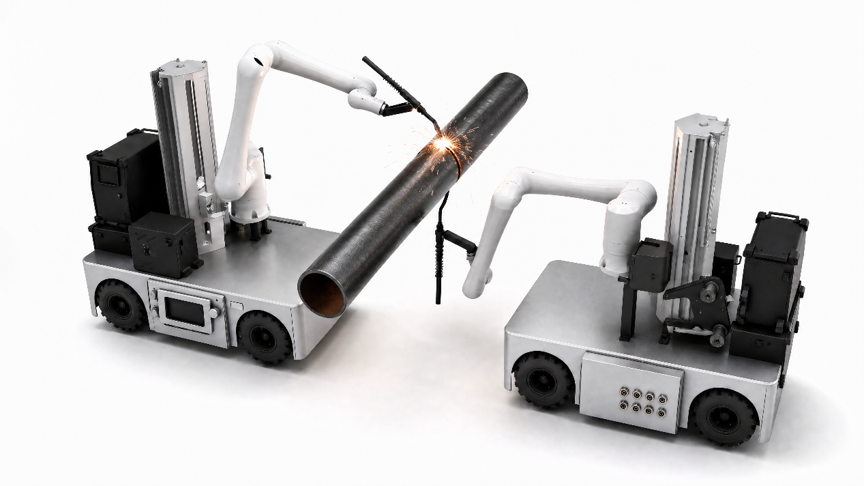

<!DOCTYPE html>
<html lang="zh-CN">
<head>
<meta charset="UTF-8">
<meta name="viewport" content="width=device-width, initial-scale=1.0">
<title>管道焊接机器人 · PAD 布局框架</title>
<style>
:root{
  /* 蓝灰白三色体系 */
  --blue:#2f6bd8; --blue2:#4a86f0; --blue-d:#1f4fa8;
  --blue-soft:#eaf1fd; --blue-line:#cfe0fa;
  --gray-bg:#e5ebf5;        /* 画布背景 蓝灰 */
  --gray-panel:#eef3fb;     /* 面板 浅蓝灰 */
  --white:#ffffff;
  --line:#e2e8f1; --line2:#d3dcea;
  --txt:#20303f; --txt2:#5b6b7d; --txt3:#93a1b3;
  --ok:#27ae60; --warn:#f0a020; --err:#e35050;
  --r-lg:18px; --r:12px; --r-sm:9px;
  --shadow:0 10px 30px rgba(31,79,168,.10);
  --shadow-sm:0 2px 8px rgba(31,79,168,.08);
  --font:"HarmonyOS Sans SC","Microsoft YaHei","Segoe UI",-apple-system,sans-serif;
}
*{box-sizing:border-box;margin:0;padding:0}
html,body{height:100%}
body{
  font-family:var(--font); background:#dbe3ee; color:var(--txt);
  display:flex; align-items:center; justify-content:center;
  overflow:hidden; -webkit-font-smoothing:antialiased;
}
.device{
  width:1280px; height:720px;              /* 16:9 */
  background:var(--gray-bg); border-radius:22px; overflow:hidden;
  display:flex; flex-direction:column; box-shadow:0 20px 60px rgba(20,40,80,.35);
  position:relative;
}
button{font-family:inherit;color:inherit;cursor:pointer;border:none;background:none}
svg{display:block}
::-webkit-scrollbar{width:8px;height:8px}
::-webkit-scrollbar-thumb{background:var(--line2);border-radius:4px}

/* ============ 顶部状态栏 ============ */
.topbar{height:58px;flex:0 0 58px;display:flex;align-items:center;gap:12px;padding:0 16px;
  background:linear-gradient(100deg,var(--blue-d),var(--blue) 55%,var(--blue2));color:#fff;position:relative;z-index:10}
.brand{display:flex;align-items:center;gap:11px}
.brand .mark{width:40px;height:40px;border-radius:11px;background:rgba(5,20,46,.55);box-shadow:inset 0 0 0 1px rgba(255,255,255,.25);
  display:flex;align-items:center;justify-content:center;backdrop-filter:blur(4px)}
.brand .mark img{width:29px;height:29px;object-fit:contain}
.brand .tt b{font-size:17px;font-weight:700;letter-spacing:.5px;display:block;line-height:1.2}
.brand .tt span{font-size:11px;opacity:.72;letter-spacing:2.5px}
.top-status{display:flex;gap:9px;margin-left:6px}
.chip{display:flex;align-items:center;gap:8px;height:42px;padding:0 15px;border-radius:11px;
  background:rgba(255,255,255,.13);font-size:15.5px;font-weight:600}
.chip svg{width:20px;height:20px;stroke-width:2;opacity:.95}
.chip .dot{width:10px;height:10px;border-radius:50%;background:#fff;box-shadow:0 0 7px rgba(255,255,255,.8)}
.chip .dot.ok{background:#38d16a;box-shadow:0 0 8px rgba(56,209,106,.9)}
.chip .dot.wait{background:#f5c542;box-shadow:0 0 8px rgba(245,197,66,.9)}
.mode-chip{transition:.18s}
.mode-chip:hover{background:rgba(255,255,255,.2)}
.mode-chip.auto{background:rgba(215,247,225,.9);color:var(--blue-d);border:1px solid rgba(120,215,155,.9)}
.mode-chip.auto svg{opacity:1}
.chip b{font-weight:700}
/* 状态胶囊（Status Capsule）：替代原顶部平铺长文本日志条，靠右贴邻局域网/时间显示 */
.brand{flex:0 0 auto;white-space:nowrap}
.top-status{flex:0 0 auto;white-space:nowrap}
.status-capsule{flex:0 0 auto;display:flex;align-items:center;gap:7px;height:32px;
  padding:4px 12px;border-radius:16px;cursor:pointer;transition:.13s;white-space:nowrap;
  background:rgba(255,255,255,.13);border:1px solid rgba(255,255,255,.16)}
.status-capsule:hover{background:rgba(255,255,255,.2)}
.status-capsule .sc-dot{flex:0 0 auto;width:8px;height:8px;border-radius:50%;background:#10B981;box-shadow:0 0 6px rgba(16,185,129,.85)}
.status-capsule .sc-text{flex:0 0 auto;font-size:12.5px;font-weight:500;color:#E2E8F0;white-space:nowrap}
.status-capsule .sc-badge{flex:0 0 auto;font-size:11px;font-weight:700;color:#E2E8F0;opacity:.85}
.status-capsule .sc-chev{flex:0 0 auto;display:flex;opacity:.5;transition:.13s;color:#E2E8F0}
.status-capsule .sc-chev svg{width:14px;height:14px;stroke-width:2.4}
.status-capsule:hover .sc-chev{opacity:.9}
.status-capsule.warn .sc-dot{background:#F59E0B;box-shadow:0 0 6px rgba(245,158,11,.9)}
.status-capsule.err .sc-dot{background:#EF4444;box-shadow:0 0 6px rgba(239,68,68,.9);animation:scPulse 1.4s ease-in-out infinite}
@keyframes scPulse{0%,100%{opacity:1}50%{opacity:.35}}
/* 完整日志弹窗 */
.lg-tabs{flex:0 0 auto;display:flex;gap:6px;padding:11px 18px 0}
.lg-tab{display:inline-flex;align-items:center;gap:5px;height:28px;padding:0 11px;border-radius:8px;
  font-size:12.5px;font-weight:600;color:var(--txt2);background:var(--gray-bg);transition:.12s}
.lg-tab i{font-style:normal;font-size:11px;font-weight:700;color:var(--txt3)}
.lg-tab:hover{background:var(--line)}
.lg-tab.on{background:var(--blue);color:#fff}.lg-tab.on i{color:rgba(255,255,255,.75)}
.lg-row{display:flex;align-items:flex-start;gap:10px;padding:9px 0;border-top:1px dashed var(--line2)}
.lg-row:first-child{border-top:none}
.lg-t{flex:0 0 auto;font-family:"Consolas",monospace;font-size:12px;color:var(--txt3);line-height:1.5}
.lg-lv{flex:0 0 auto;font-size:11px;font-weight:700;padding:2px 9px;border-radius:20px;background:var(--gray-bg);color:var(--txt2)}
.lg-lv.lv-ok{background:#dcf5e5;color:#1f8a4c}
.lg-lv.lv-info{background:var(--blue-soft);color:var(--blue)}
.lg-lv.lv-warn{background:#fef2d8;color:#a9760a}
.lg-lv.lv-err{background:#fdeaea;color:var(--err)}
.lg-m{flex:1;min-width:0;font-size:13px;color:var(--txt);line-height:1.5}
.lg-none{padding:40px 0;text-align:center;font-size:13px;color:var(--txt3)}
/* 误差补偿规则表（生产执行设置） */
.lg-tab svg{width:14px;height:14px;stroke-width:2}
.cp-sw{flex:0 0 auto;display:flex;align-items:center;gap:12px;padding:12px 18px 0}
.cp-tg{display:inline-flex;align-items:center;gap:6px;height:30px;padding:0 13px;border-radius:8px;
  font-size:12.5px;font-weight:700;color:var(--txt2);background:var(--gray-bg);
  border:1px solid var(--line);transition:.12s}
.cp-tg svg{width:14px;height:14px;stroke-width:2.4}
.cp-tg.on{background:#dcf5e5;border-color:#9fdcb8;color:#1f8a4c}
.cp-tip{display:flex;align-items:center;gap:5px;font-size:11.5px;color:var(--txt3)}
.cp-tip svg{width:13px;height:13px;stroke-width:2}
.cp-nom{display:flex;align-items:center;gap:9px}
.cp-nk{font-size:12.5px;font-weight:700;color:var(--txt)}
.cp-nu{font-size:11.5px;color:var(--txt3)}
.cp-nd{font-size:11.5px;color:var(--txt3)}
.cp-in{width:56px;height:26px;text-align:center;border:1px solid var(--line);border-radius:7px;
  font-size:12.5px;font-weight:700;color:var(--txt);background:var(--white);font-family:"Consolas",monospace}
.cp-in.wide{width:70px}
.cp-in:focus{outline:none;border-color:var(--blue);background:var(--blue-soft)}
.cp-in:disabled{opacity:.45;cursor:not-allowed;background:var(--gray-bg)}
.es-row2{display:flex;gap:24px;flex-wrap:nowrap}
.es-row2 .cp-nom{flex:1;white-space:nowrap}
.es-sel{height:32px;border-radius:7px;border:1px solid var(--line);background:var(--white);padding:0 10px;
  font-size:12.5px;font-weight:700;color:var(--txt);font-family:inherit;cursor:pointer}
.es-sel:disabled{opacity:.45;cursor:not-allowed;background:var(--gray-bg)}
/* 生产执行设置弹窗 v2：卡片网格 + 开关 + 下划线 Tab + 内嵌单位输入 */
.es-pop .pop-head{padding:20px 24px 0;border-bottom:none}
.es-pop .pop-t b{font-size:18px}
.es-head-tabs{display:flex;gap:22px;padding:14px 24px 0;border-bottom:1px solid var(--line)}
.es-tab{position:relative;height:38px;display:flex;align-items:center;gap:6px;font-size:14px;font-weight:600;
  color:var(--txt3);border:none;background:none;cursor:pointer;transition:.15s;font-family:inherit}
.es-tab svg{width:15px;height:15px;stroke-width:2}
.es-tab:hover:not(.on){color:var(--txt2)}
.es-tab.on{color:var(--blue)}
.es-tab.on::after{content:'';position:absolute;left:0;right:0;bottom:-1px;height:2px;background:var(--blue);border-radius:2px}
.es-card{background:#F8FAFC;border:1px solid #E2E8F0;border-radius:10px;padding:16px 18px;margin-bottom:16px}
.es-card:last-child{margin-bottom:0}
.es-card-h{font-size:14px;font-weight:700;color:var(--txt);display:flex;align-items:center;gap:7px;margin:0 0 12px}
.es-card-h svg{width:15px;height:15px;stroke-width:2;color:var(--blue)}
.es-grid{display:grid;grid-template-columns:112px 1fr;row-gap:14px;column-gap:14px;align-items:center}
.es-grid.pair{grid-template-columns:112px 1fr 112px 1fr}
.es-lb{font-size:13.5px;color:var(--txt2);font-weight:500}
.es-sel2{height:36px;width:100%;border-radius:8px;border:1px solid var(--line);background:var(--white);
  padding:0 10px;font-size:13px;font-weight:600;color:var(--txt);font-family:inherit;cursor:pointer}
.es-sel2:disabled{opacity:.45;cursor:not-allowed;background:var(--gray-bg)}
.es-inwrap{position:relative;display:flex;align-items:center}
.es-inwrap input{width:100%;height:36px;border-radius:8px;border:1px solid var(--line);background:var(--white);
  padding:0 28px 0 10px;font-size:13px;font-weight:600;color:var(--txt);font-family:"Consolas",monospace}
.es-inwrap input:focus{outline:none;border-color:var(--blue);background:var(--blue-soft)}
.es-inwrap input:disabled{opacity:.45;cursor:not-allowed;background:var(--gray-bg)}
.es-inwrap .es-suf{position:absolute;right:10px;font-size:12px;color:var(--txt3);font-weight:600;pointer-events:none}
.es-switch-row{display:flex;align-items:center;gap:10px}
.es-switch{position:relative;width:42px;height:23px;border-radius:12px;background:var(--line2);cursor:pointer;
  transition:.2s;flex:0 0 auto}
.es-switch::after{content:'';position:absolute;top:2px;left:2px;width:19px;height:19px;border-radius:50%;
  background:#fff;box-shadow:0 1px 3px rgba(0,0,0,.25);transition:.2s}
.es-switch.on{background:var(--blue)}
.es-switch.on::after{left:21px}
.es-switch-txt{font-size:12.5px;font-weight:600;color:var(--txt3)}
.es-switch-txt.on{color:var(--blue)}
.pop-foot.es-foot{justify-content:flex-end;gap:10px}
.pop-foot.es-foot button{flex:0 0 auto;padding:0 20px}
/* 误差补偿分页 v2：分段控制器 + 网格表格对齐 */
.es-comp-top{display:flex;align-items:center;justify-content:space-between;gap:12px;margin-bottom:16px}
.es-seg-tabs{display:flex;gap:4px;padding:4px;border-radius:10px;background:var(--gray-bg);width:max-content}
.es-seg-tabs button{height:32px;padding:0 16px;border-radius:7px;font-size:13px;font-weight:700;color:var(--txt2);
  background:none;border:none;cursor:pointer;font-family:inherit;transition:.13s;display:inline-flex;align-items:center;gap:5px}
.es-seg-tabs button svg{width:14px;height:14px;stroke-width:2}
.es-seg-tabs button.on{background:var(--white);color:var(--blue);box-shadow:var(--shadow-sm)}
.es-nomrow{display:flex;align-items:center;gap:14px;margin-bottom:14px}
.es-nomrow .es-lb{flex:0 0 112px}
.es-nomrow .es-inwrap{max-width:150px;flex:0 0 auto}
.es-nomrow .es-inwrap input{padding-right:36px}
.es-desc-inline{font-size:12px;color:#8C8C8C}
.es-tbl{display:grid;grid-template-columns:150px repeat(4,1fr);border:1px solid var(--line);border-radius:10px;overflow:hidden;transition:.15s}
.es-tbl.off{opacity:.45;pointer-events:none}
.es-tbl-h{padding:7px 10px;font-size:12px;font-weight:700;color:var(--txt2);background:var(--gray-panel,#f5f7fb);
  border-bottom:1px solid var(--line);display:flex;align-items:center;justify-content:center}
.es-tbl-h:first-child{justify-content:flex-start}
.es-tbl-h i{font-style:normal;font-weight:600;color:var(--txt3);margin-left:3px}
.es-tbl-lv{padding:8px 12px;display:flex;flex-direction:column;gap:2px;justify-content:center;border-top:1px solid var(--line2)}
.es-tbl-lv b{font-size:12.5px;font-weight:700;color:var(--txt)}
.es-tbl-lv i{font-style:normal;font-size:11px;color:var(--txt3);font-family:"Consolas",monospace}
.es-tbl-c{padding:8px 10px;display:flex;align-items:center;justify-content:center;border-top:1px solid var(--line2);border-left:1px solid var(--line2)}
.es-tbl-c input{width:64px;height:28px;text-align:center;border:1px solid var(--line);border-radius:7px;
  font-size:12.5px;font-weight:700;color:var(--txt);background:var(--white);font-family:"Consolas",monospace}
.es-tbl-c input:focus{outline:none;border-color:var(--blue);background:var(--blue-soft)}
.es-tbl-lv.over,.es-tbl-c.over{background:#fdf6f6}
.es-tbl-lv.over b{color:var(--err)}
.es-tbl-na{font-style:normal;font-size:12px;color:var(--txt3)}
.es-overrow{display:grid;grid-template-columns:112px 1fr;column-gap:14px;align-items:center;margin-top:18px}
.cp-tbl{margin-top:11px;border:1px solid var(--line);border-radius:10px;overflow:hidden;transition:.15s}
.cp-tbl.off{opacity:.45;pointer-events:none}
.cp-row{display:flex;align-items:center;gap:8px;padding:8px 12px;border-top:1px solid var(--line2)}
.cp-row:first-child{border-top:none}
.cp-head{background:var(--gray-bg)}
.cp-head .cp-lv,.cp-head .cp-c{font-size:11.5px;font-weight:700;color:var(--txt2)}
.cp-head .cp-c i{font-style:normal;font-weight:600;color:var(--txt3);margin-left:3px}
.cp-lv{flex:0 0 150px;display:flex;flex-direction:column;gap:1px}
.cp-lv b{font-size:12.5px;font-weight:700;color:var(--txt)}
.cp-lv i{font-style:normal;font-size:11px;color:var(--txt3);font-family:"Consolas",monospace}
.cp-c{flex:1;display:flex;justify-content:center;align-items:center}
.cp-row.over{background:#fdf4f4}
.cp-row.over .cp-lv b{color:var(--err)}
.cp-na{font-style:normal;font-size:12px;color:var(--txt3)}
.top-right{margin-left:auto;display:flex;align-items:center;gap:12px}
.clock{text-align:right;font-size:12px;line-height:1.15}.clock b{font-size:18px;font-weight:700;display:block;letter-spacing:1px}
.clock span{opacity:.72}
.whoami{display:flex;align-items:center;gap:10px;height:42px;padding:0 10px 0 14px;border-radius:12px;background:rgba(255,255,255,.14)}
.whoami .av{width:30px;height:30px;border-radius:9px;background:rgba(255,255,255,.9);color:var(--blue);
  display:flex;align-items:center;justify-content:center}
.whoami .av svg{width:19px;height:19px;stroke-width:2}
.whoami .who-txt{display:flex;flex-direction:column;justify-content:center;line-height:1.2}
.whoami .nm{font-size:14.5px;font-weight:700;line-height:1.15}.whoami .rl{font-size:11.5px;opacity:.75}

/* ===== 模式切换确认弹窗 ===== */
.mask{position:absolute;inset:0;background:rgba(20,40,80,.32);backdrop-filter:blur(2px);
  display:flex;align-items:center;justify-content:center;z-index:50}
.dialog{width:380px;background:var(--white);border-radius:var(--r-lg);box-shadow:0 24px 60px rgba(20,40,80,.35);
  padding:26px;text-align:center}
.dialog .dg-ic{width:56px;height:56px;border-radius:16px;background:var(--blue-soft);color:var(--blue);
  display:flex;align-items:center;justify-content:center;margin:0 auto 14px}
.dialog .dg-ic svg{width:30px;height:30px;stroke-width:1.9}
.dialog h3{font-size:19px;font-weight:700;margin-bottom:8px}
.dialog p{font-size:14px;color:var(--txt2);line-height:1.6;margin-bottom:22px}
.dialog .dg-btns{display:flex;gap:12px}
.dialog .dg-btns button{flex:1;height:46px;border-radius:12px;font-size:15px;font-weight:600;
  display:flex;align-items:center;justify-content:center;gap:7px}
.dialog .dg-btns button svg{width:18px;height:18px;stroke-width:2;flex:0 0 auto}
.dg-cancel{background:var(--gray-bg);color:var(--txt2)}
.dg-cancel:hover{background:var(--line)}
.au-dialog{text-align:left}
.au-dialog h3{text-align:center}
.au-dialog .dg-ic{margin-bottom:16px}
.au-dialog .lf-field{margin-bottom:14px}
.au-dialog .lf-role{margin-bottom:0}
.dg-ok{background:var(--blue);color:#fff}.dg-ok:hover{background:var(--blue-d)}
.rm-run-track{height:8px;border-radius:5px;background:var(--gray-bg);overflow:hidden;margin-bottom:10px}
.rm-run-fill{height:100%;background:var(--blue);border-radius:5px;transition:width .3s linear}
.rm-run-pct{font-size:13px;color:var(--txt2);margin-bottom:22px}

/* ============ 主体：左侧栏 + 内容 ============ */
.body{flex:1;display:flex;min-height:0;padding:14px;gap:14px}
.sidebar{width:76px;flex:0 0 76px;display:flex;flex-direction:column;align-items:stretch;gap:6px;transition:width .22s ease,flex-basis .22s ease}
.sidebar.collapsed{width:22px;flex:0 0 22px}
/* 折叠态收窄左侧留白与间距 */
.body:has(.sidebar.collapsed){padding-left:8px;gap:8px}
/* 折叠开关 */
.side-toggle{width:100%;height:30px;flex:0 0 30px;border-radius:9px;background:var(--white);color:var(--txt2);
  display:flex;align-items:center;justify-content:center;box-shadow:var(--shadow-sm);transition:.15s;margin-bottom:3px}
.side-toggle:hover{color:var(--blue)}
.side-toggle svg{width:19px;height:19px;stroke-width:2;transition:transform .22s}
.sidebar.collapsed .side-toggle{border-radius:7px}
.sidebar.collapsed .side-toggle svg{width:20px;height:20px;transform:rotate(180deg)}
.nav-item{width:100%;display:flex;flex-direction:column;align-items:center;gap:7px;padding:14px 4px;border-radius:13px;
  color:var(--txt2);background:transparent;transition:.16s;position:relative;overflow:hidden}
.nav-item svg{width:27px;height:27px;stroke-width:1.8;flex:0 0 auto}
.nav-item .lbl{font-size:13px;font-weight:600;letter-spacing:.5px;white-space:nowrap}
.nav-item:hover{background:var(--white);color:var(--blue);box-shadow:var(--shadow-sm)}
.nav-item.on{background:var(--blue);color:#fff;box-shadow:0 8px 20px rgba(47,107,216,.35)}
.nav-item.on svg{stroke-width:2}
/* 折叠态：隐藏所有导航项，只留顶部开关 */
.sidebar.collapsed .nav-item,.sidebar.collapsed .whoami-nav,.sidebar.collapsed .spacer{display:none}
.sidebar .spacer{flex:1}
/* 底部当前操作员 */
.whoami-nav{width:100%;display:flex;flex-direction:column;align-items:center;gap:7px;padding:14px 4px;border-radius:13px;
  color:var(--txt2);background:var(--white);box-shadow:var(--shadow-sm);transition:.16s;cursor:pointer}
.whoami-nav:hover{color:var(--blue);box-shadow:var(--shadow)}
.whoami-nav .av{width:38px;height:38px;border-radius:11px;background:var(--blue-soft);color:var(--blue);
  display:flex;align-items:center;justify-content:center}
.whoami-nav .av svg{width:25px;height:25px;stroke-width:2}
.whoami-nav .lbl{font-size:13px;font-weight:700}
.whoami-wrap{position:relative;width:100%}
.whoami-pop{position:absolute;left:calc(100% + 10px);bottom:0;width:190px;background:var(--white);
  border-radius:14px;box-shadow:var(--shadow);padding:12px;z-index:40}
.wp-hd{display:flex;align-items:center;gap:10px;padding-bottom:10px;margin-bottom:8px;border-bottom:1px solid var(--line)}
.wp-av{width:36px;height:36px;border-radius:10px;background:var(--blue-soft);color:var(--blue);flex:0 0 auto;
  display:flex;align-items:center;justify-content:center}
.wp-av svg{width:20px;height:20px;stroke-width:2}
.wp-nm{font-size:13.5px;font-weight:700;color:var(--txt)}
.wp-rl{font-size:11.5px;color:var(--txt3)}
.wp-item{width:100%;display:flex;align-items:center;gap:9px;height:38px;padding:0 10px;border-radius:9px;
  font-size:13px;font-weight:600;color:var(--txt2);transition:.13s;text-align:left}
.wp-item svg{width:16px;height:16px;stroke-width:2;flex:0 0 auto}
.wp-item:hover{background:var(--gray-bg)}
.wp-item.danger{color:var(--err)}
.wp-item.danger:hover{background:#fdeded}

/* ============ 内容区 ============ */
.content{flex:1;min-width:0;background:var(--white);border-radius:var(--r-lg);
  box-shadow:var(--shadow);display:flex;flex-direction:column;overflow:hidden}
/* 任务执行：整块三维场景，无内边距 */
.content-scene{padding:0;background:transparent;box-shadow:none}
.content-scene .scene{border-radius:var(--r-lg);box-shadow:var(--shadow)}
.content-head{height:66px;flex:0 0 66px;display:flex;align-items:center;gap:14px;padding:0 24px;border-bottom:1px solid var(--line)}
.content-head .ch-ic{width:40px;height:40px;border-radius:11px;background:var(--blue-soft);color:var(--blue);
  display:flex;align-items:center;justify-content:center}
.content-head .ch-ic svg{width:23px;height:23px;stroke-width:1.9}
.content-head .ttl b{font-size:19px;font-weight:700;display:block;line-height:1.25}
.content-head .ttl span{font-size:13px;color:var(--txt3)}
/* 单机切换标签（右上） */
.unit-tabs{margin-left:auto;display:flex;gap:5px;background:var(--gray-bg);padding:5px;border-radius:13px}
.unit-tabs button{padding:9px 20px;border-radius:9px;font-size:14px;font-weight:700;color:var(--txt2)}
.unit-tabs button.on{background:var(--white);color:var(--blue);box-shadow:var(--shadow-sm)}
/* 内容主体：占位区 */
.canvas{flex:1;overflow:auto;padding:22px;display:flex;flex-direction:column}
.placeholder{flex:1;border:2px dashed var(--line2);border-radius:var(--r-lg);
  display:flex;flex-direction:column;align-items:center;justify-content:center;gap:14px;color:var(--txt3);background:var(--gray-panel)}
.placeholder .pic{width:66px;height:66px;border-radius:18px;background:var(--blue-soft);color:var(--blue);
  display:flex;align-items:center;justify-content:center}
.placeholder .pic svg{width:34px;height:34px;stroke-width:1.7}
.placeholder .pt{font-size:17px;font-weight:600;color:var(--txt2)}
.placeholder .pd{font-size:13.5px}

/* ============ 任务执行模块 ============ */
.exec{flex:1;display:flex;gap:20px;min-height:0}
.exec-left{width:330px;flex:0 0 330px;display:flex;flex-direction:column;gap:16px}
.exec-right{flex:1;display:flex;flex-direction:column;gap:18px;min-width:0}
.fld-label{font-size:16.5px;font-weight:700;color:var(--txt2);margin:-4px 0 9px;display:block}

/* 任务下拉 */
.select{position:relative}
.select-btn{width:100%;height:52px;border-radius:13px;background:var(--white);border:1.5px solid var(--line2);
  display:flex;align-items:center;gap:11px;padding:0 15px;font-size:16px;font-weight:600;color:var(--txt);transition:.15s}
.select-btn:hover{border-color:var(--blue2)}
.select-btn.open{border-color:var(--blue);box-shadow:0 0 0 3px var(--blue-soft)}
.select-btn .caret{margin-left:auto;transition:.2s}.select-btn.open .caret{transform:rotate(180deg)}
.select-btn .caret svg{width:20px;height:20px;stroke-width:2.2;color:var(--txt3)}
.select-menu{position:absolute;top:58px;left:0;right:0;background:var(--white);border:1.5px solid var(--line);
  border-radius:13px;box-shadow:var(--shadow);padding:7px;z-index:30;max-height:280px;overflow:auto}
.opt{display:flex;align-items:center;gap:10px;padding:12px 13px;border-radius:10px;font-size:15px;cursor:pointer}
.opt:hover{background:var(--gray-bg)}.opt.on{background:var(--blue-soft)}
.opt b{font-weight:600}.opt .wid{font-family:"Consolas",monospace}
.st-tag{margin-left:auto;font-size:12px;font-weight:700;padding:3px 11px;border-radius:20px}
.st-tag.wait{background:#fef2d8;color:#a9760a}.st-tag.done{background:#dcf5e5;color:#1f8a4c}

/* 任务参数卡 */
.param-card{flex:1;background:var(--gray-panel);border:1px solid var(--line);border-radius:var(--r-lg);
  padding:18px;overflow:auto;min-height:0}
.param-card .grp{font-size:13px;font-weight:700;color:var(--blue);letter-spacing:.5px;margin:6px 0 4px;
  display:flex;align-items:center;gap:7px}
.param-card .grp:not(:first-child){margin-top:16px;padding-top:16px;border-top:1px dashed var(--line2)}
.param-card .grp svg{width:17px;height:17px;stroke-width:2}
.prow{display:flex;justify-content:space-between;padding:8px 0;font-size:14.5px}
.prow .pk{color:var(--txt3)}.prow .pv{font-weight:600;text-align:right}

/* 控制按钮排 */
.ctrl-row{display:flex;gap:14px}
.ctrl-btn{flex:1;height:82px;border-radius:16px;background:var(--white);border:1.5px solid var(--line);
  display:flex;flex-direction:column;align-items:center;justify-content:center;gap:7px;
  color:var(--txt2);font-size:14px;font-weight:600;transition:.15s;box-shadow:var(--shadow-sm)}
.ctrl-btn svg{width:26px;height:26px;stroke-width:1.9}
.ctrl-btn:hover{border-color:var(--blue2);color:var(--blue);transform:translateY(-1px)}
.ctrl-btn.start{background:var(--blue);color:#fff;border-color:var(--blue);box-shadow:0 8px 18px rgba(47,107,216,.3)}
.ctrl-btn.start:hover{background:var(--blue-d);color:#fff}
.ctrl-btn.active{background:var(--blue-soft);border-color:var(--blue);color:var(--blue)}
.ctrl-btn:disabled{opacity:.45;cursor:not-allowed;transform:none}
#btnStep svg{transform:rotate(180deg)}

/* 流程图 */
.flow-wrap{flex:0 0 auto;height:330px;background:var(--gray-panel);border:1px solid var(--line);border-radius:var(--r-lg);
  padding:20px;min-height:0;display:flex;flex-direction:column}
.flow-title{font-size:15px;font-weight:700;color:var(--txt2);margin-bottom:16px;display:flex;align-items:center;gap:9px}
.flow-title .bar{width:4px;height:16px;background:var(--blue);border-radius:2px}
.flow-grid{flex:1;display:flex;flex-direction:column;justify-content:center;gap:34px;padding:8px 4px}
.flow-row{display:flex;align-items:center;justify-content:center}
.node{width:150px;height:112px;border-radius:16px;background:var(--white);border:2px solid var(--line);
  display:flex;flex-direction:column;align-items:center;justify-content:center;gap:7px;position:relative;transition:.25s}
.node .nc{width:30px;height:30px;border-radius:50%;border:2.5px solid var(--line2);background:var(--white);
  display:flex;align-items:center;justify-content:center}
.node .nc svg{width:16px;height:16px;stroke-width:3;color:#fff}
.node .nn{font-size:16px;font-weight:600;color:var(--txt)}
.node .ns{font-size:12.5px;color:var(--txt3);font-weight:500}
/* 已完成 */
.node.done{background:#eafaf0;border-color:#57cc86}
.node.done .nc{background:#2fbf6b;border-color:#2fbf6b}
.node.done .nn{color:#1f8a4c}.node.done .ns{color:#2fbf6b}
/* 执行中 */
.node.run{background:var(--blue-soft);border-color:var(--blue)}
.node.run .nc{border-color:transparent;padding:0}
.node.run .nn{color:var(--blue)}.node.run .ns{color:var(--blue)}
.node-spin{width:22px;height:22px;border:3px solid var(--blue-line);border-top-color:var(--blue);
  border-radius:50%;animation:spin .8s linear infinite}
@keyframes spin{to{transform:rotate(360deg)}}
/* 异常 */
.node.err{background:#fdeded;border-color:var(--err)}
.node.err .nc{background:var(--err);border-color:var(--err)}
.node.err .nn{color:var(--err)}.node.err .ns{color:var(--err)}
/* 未启用/跳过 */
.node.skip{background:#eef1f5;border-color:#dfe4ec;border-style:dashed}
.node.skip .nn{color:var(--txt3)}.node.skip .nc{border-color:#dfe4ea;border-style:dashed}
.node .opt-badge{position:absolute;top:8px;right:10px;font-size:10px;font-weight:700;color:var(--txt3)}
/* 连接线（双箭头 chevron 风格） */
.flow-arr{flex:0 0 auto;display:flex;align-items:center;color:#b9c6da;padding:0 3px}
.flow-arr svg{width:16px;height:16px;stroke-width:2.6}
.flow-arr svg:last-child{margin-left:-9px;opacity:.55}

/* 状态栏 */
.status-row{display:flex;gap:14px;align-items:stretch}
.status-box{flex:1;height:60px;border-radius:14px;background:var(--white);border:1.5px solid var(--line);
  display:flex;align-items:center;gap:13px;padding:0 20px;font-size:16px;font-weight:600}
.status-box .sled{width:13px;height:13px;border-radius:50%;flex:0 0 auto}
.status-box.idle .sled{background:var(--txt3)}
.status-box.run{border-color:var(--blue);background:var(--blue-soft)} .status-box.run .sled{background:var(--blue);box-shadow:0 0 8px var(--blue)}
.status-box.done{border-color:#57cc86;background:#eafaf0}.status-box.done .sled{background:#2fbf6b}
.status-box.warn{border-color:#f0a020;background:#fef6e6}.status-box.warn .sled{background:#f0a020;box-shadow:0 0 8px #f0a020}
.status-box.err{border-color:var(--err);background:#fdeded}.status-box.err .sled{background:var(--err);box-shadow:0 0 8px var(--err);animation:blink 1s infinite}
@keyframes blink{50%{opacity:.35}}
.alarm-reset{flex:0 0 auto;height:60px;padding:0 22px;border-radius:14px;background:var(--white);border:1.5px solid var(--line2);
  display:flex;align-items:center;gap:9px;font-size:15px;font-weight:600;color:var(--txt2);transition:.15s}
.alarm-reset svg{width:20px;height:20px;stroke-width:2}
.alarm-reset:hover{border-color:var(--warn);color:var(--warn)}

/* ============ 任务执行 · 三维场景占位 ============ */
.scene{flex:1;min-height:0;border-radius:var(--r-lg);position:relative;overflow:hidden;
  background:radial-gradient(120% 90% at 50% 12%,#2a4a7a 0%,#1c3660 42%,#12274a 100%);
  border:1px solid #2f4f80;box-shadow:inset 0 0 60px rgba(0,0,0,.35)}
/* 地面网格 */
.scene-grid{position:absolute;inset:0;background-image:
  linear-gradient(rgba(120,170,240,.10) 1px,transparent 1px),
  linear-gradient(90deg,rgba(120,170,240,.10) 1px,transparent 1px);
  background-size:44px 44px;
  mask-image:linear-gradient(to bottom,transparent 30%,#000 100%);
  -webkit-mask-image:linear-gradient(to bottom,transparent 30%,#000 100%)}
/* three.js 渲染层：铺满场景，位于装饰层之上、浮层之下 */
.gl-host{position:absolute;inset:0;z-index:2}
.gl-host canvas{display:block;width:100%;height:100%}
/* 有三维渲染时隐藏平面网格装饰，避免与真实地面网格重影 */
.scene.has3d .scene-grid,.ol-scene.has3d .scene-grid{display:none}
.scene.has3d .scene-empty,.ol-scene.has3d .scene-empty{display:none}
.scene-glow{position:absolute;left:50%;bottom:-10%;width:70%;height:55%;transform:translateX(-50%);
  background:radial-gradient(ellipse at center,rgba(74,134,240,.28),transparent 70%);filter:blur(6px)}
/* 中心占位提示 */
.scene-empty{position:absolute;inset:0;display:flex;flex-direction:column;align-items:center;justify-content:center;gap:16px;color:#bcd2f2}
.scene-empty .pic{width:82px;height:82px;border-radius:22px;background:rgba(120,170,240,.14);border:1px solid rgba(140,185,245,.3);
  display:flex;align-items:center;justify-content:center;color:#9cc0f5;backdrop-filter:blur(3px)}
.scene-empty .pic svg{width:44px;height:44px;stroke-width:1.5}
.scene-empty .pt{font-size:19px;font-weight:700;color:#dbe8fb;letter-spacing:.5px}
.scene-empty .pd{font-size:14px;color:#8fa8cf}
/* 坐标轴指示器 */
.scene-axis{position:absolute;left:20px;bottom:18px;width:66px;height:66px;opacity:.85}
/* 视图信息角标 */
.scene-badge{position:absolute;top:16px;left:18px;display:flex;align-items:center;gap:9px;
  height:36px;padding:0 14px;border-radius:10px;background:rgba(12,28,54,.55);border:1px solid rgba(120,170,240,.25);
  color:#cfe0fa;font-size:13.5px;font-weight:600;backdrop-filter:blur(4px)}
.scene-badge svg{width:17px;height:17px;stroke-width:2;color:#7fb0f5}

/* ============ 三维场景浮层通用（玻璃拟态） ============ */
:root{
  --ov-bg:rgba(18,34,62,.62); --ov-bg2:rgba(24,44,78,.7);
  --ov-line:rgba(130,175,245,.28); --ov-line2:rgba(130,175,245,.16);
  --ov-txt:#e4eefb; --ov-txt2:#a7c0e6; --ov-txt3:#7f9cc5;
  --ov-accent:#4a86f0; --ov-accent-soft:rgba(74,134,240,.22);
}
.ov{position:absolute;background:var(--ov-bg);border:1px solid var(--ov-line);border-radius:15px;
  backdrop-filter:blur(11px);-webkit-backdrop-filter:blur(11px);color:var(--ov-txt);
  box-shadow:0 12px 34px rgba(6,16,36,.4);z-index:20;transition:box-shadow .15s}
.ov.dragging{box-shadow:0 20px 50px rgba(6,16,36,.6);cursor:grabbing;transition:none}
.ov-grip{cursor:grab;user-select:none}
.ov-head{display:flex;align-items:center;gap:8px;height:38px;padding:0 12px;border-bottom:1px solid var(--ov-line2)}
.ov-head .oh-t{font-size:13.5px;font-weight:700;letter-spacing:.4px;color:var(--ov-txt)}
.ov-head .oh-t .sub{font-weight:500;color:var(--ov-txt3);margin-left:6px;font-size:12px}
.ov-head .oh-btns{margin-left:auto;display:flex;gap:4px}
.ov-mini{width:24px;height:24px;border-radius:7px;display:flex;align-items:center;justify-content:center;
  color:var(--ov-txt2);transition:.13s}
.ov-mini:hover{background:var(--ov-accent-soft);color:#fff}
.ov-mini svg{width:16px;height:16px;stroke-width:2.2}

/* 通用 tooltip（悬浮显示名称） */
.tipwrap{position:relative}
.tipwrap .tip{position:absolute;left:calc(100% + 10px);top:50%;transform:translateY(-50%);
  white-space:nowrap;background:rgba(10,22,44,.92);color:#eaf2ff;font-size:12.5px;font-weight:600;
  padding:6px 10px;border-radius:8px;border:1px solid var(--ov-line);opacity:0;pointer-events:none;transition:.14s;z-index:40}
.tipwrap:hover .tip{opacity:1}
.tipwrap .tip::before{content:"";position:absolute;right:100%;top:50%;transform:translateY(-50%);
  border:5px solid transparent;border-right-color:rgba(10,22,44,.92)}

/* ---- ① 左侧按钮栏（常驻） ---- */
.ov-tools{left:16px;top:70px;padding:8px;display:flex;flex-direction:column;gap:7px}
.tool-btn{width:46px;height:46px;border-radius:12px;background:rgba(255,255,255,.06);border:1px solid var(--ov-line2);
  display:flex;align-items:center;justify-content:center;color:var(--ov-txt2);transition:.14s}
.tool-btn svg{width:23px;height:23px;stroke-width:1.9}
.tool-btn:hover{background:var(--ov-accent-soft);color:#fff;border-color:var(--ov-line)}
.tool-btn.primary{background:linear-gradient(135deg,#4a86f0,#2f6bd8);color:#fff;border-color:transparent;box-shadow:0 6px 16px rgba(47,107,216,.4)}
.tool-btn.primary:hover{background:linear-gradient(135deg,#5a93f5,#3a75e0)}
.tool-btn.stop:hover{background:rgba(227,80,80,.25);color:#ff9a9a;border-color:rgba(227,80,80,.4)}
.tool-btn.step svg{transform:rotate(180deg)}
.tool-btn.active{background:var(--ov-accent-soft);color:#fff;border-color:var(--ov-accent,#4a86f0)}
.tool-btn.perm-lock{opacity:.4;cursor:not-allowed}
.tool-btn.perm-lock:hover{background:rgba(255,255,255,.06);color:inherit;border-color:var(--ov-line2)}
.tool-sep{height:1px;background:var(--ov-line2);margin:3px 4px}

/* ---- ④ 仿真控制栏（常驻，底部居中） ---- */
/* 默认在任务栏之上；任务栏收缩时下移贴底（见 .scene.task-folded） */
.ov-sim{left:calc(50% - 121px);bottom:172px;transform:translateX(-50%);padding:9px 14px;display:flex;align-items:center;gap:13px;min-width:440px;transition:bottom .22s ease}
.scene.task-folded .ov-sim{bottom:18px}
.sim-btns{display:flex;align-items:center;gap:6px}
.sim-btn{width:38px;height:38px;border-radius:10px;background:rgba(255,255,255,.06);border:1px solid var(--ov-line2);
  display:flex;align-items:center;justify-content:center;color:var(--ov-txt);transition:.13s}
.sim-btn svg{width:19px;height:19px;stroke-width:2}
.sim-btn:hover{background:var(--ov-accent-soft);color:#fff}
.sim-btn.play{background:linear-gradient(135deg,#4a86f0,#2f6bd8);color:#fff;border-color:transparent}
.sim-track{flex:1;display:flex;align-items:center;gap:11px}
.sim-bar{flex:1;height:6px;border-radius:3px;background:rgba(255,255,255,.12);position:relative;overflow:hidden}
.sim-bar .fill{position:absolute;left:0;top:0;bottom:0;width:34%;border-radius:3px;background:linear-gradient(90deg,#4a86f0,#7fb0f5)}
.sim-bar .knob{position:absolute;top:50%;left:34%;width:14px;height:14px;border-radius:50%;background:#fff;
  transform:translate(-50%,-50%);box-shadow:0 2px 6px rgba(0,0,0,.4)}
.sim-time{font-size:12.5px;font-weight:600;color:var(--ov-txt2);font-family:"Consolas",monospace;min-width:82px;text-align:right}
.sim-spd{position:relative;flex:none}
.sim-spd-btn{display:flex;align-items:center;gap:3px;height:32px;padding:0 8px 0 11px;border-radius:9px;
  background:rgba(255,255,255,.06);border:1px solid var(--ov-line2);color:var(--ov-txt);font-size:12.5px;font-weight:700;
  font-family:"Consolas",monospace;transition:.13s}
.sim-spd-btn svg{width:14px;height:14px;stroke-width:2.2;transition:transform .16s}
.sim-spd-btn:hover{background:var(--ov-accent-soft);color:#fff}
.sim-spd-btn.open{background:var(--ov-accent-soft);color:#fff}
.sim-spd-btn.open svg{transform:rotate(180deg)}
.sim-spd-menu{position:absolute;bottom:calc(100% + 8px);right:0;min-width:74px;padding:5px;border-radius:11px;
  background:rgba(22,38,66,.96);border:1px solid var(--ov-line);box-shadow:0 10px 28px rgba(0,0,0,.42);backdrop-filter:blur(11px)}
.sim-spd-opt{padding:7px 12px;border-radius:7px;font-size:12.5px;font-weight:700;color:var(--ov-txt2);
  font-family:"Consolas",monospace;text-align:center;cursor:pointer;transition:.12s}
.sim-spd-opt:hover{background:rgba(255,255,255,.08);color:#fff}
.sim-spd-opt.on{background:var(--ov-accent-soft);color:#fff}

/* ---- ② 右侧属性栏（可收缩） ---- */
/* 程序栏：按内容高度，不再拉满整个场景高度 */
.ov-props{right:16px;top:16px;width:290px;display:flex;flex-direction:column;
  max-height:calc(100% - 168px)}
.ov-props.collapsed{max-height:none}
.prop-sec{display:flex;flex-direction:column;min-height:0;flex:0 1 auto}
.prop-sec.folded{flex:0 0 auto}
/* 程序列表可滚动，操作行常驻底部 */
.prop-sec.sec-prog .prop-body{display:flex;flex-direction:column;min-height:0;overflow:hidden}
.prop-sec.sec-prog .prog-list{overflow:auto;min-height:0;max-height:210px}
.prop-sec+.prop-sec{border-top:1px solid var(--ov-line2)}
.prop-shead{display:flex;align-items:center;gap:8px;height:36px;padding:0 12px;cursor:pointer;flex:0 0 auto}
.prop-shead:hover{background:rgba(255,255,255,.04)}
.prop-shead .ps-ic{color:var(--ov-accent);display:flex}.prop-shead .ps-ic svg{width:17px;height:17px;stroke-width:2}
.prop-shead .ps-t{font-size:13px;font-weight:700;color:var(--ov-txt)}
.prop-shead .ps-car{margin-left:auto;color:var(--ov-txt3);transition:transform .2s}
.prop-shead .ps-car svg{width:16px;height:16px;stroke-width:2.4}
.prop-sec.folded .ps-car{transform:rotate(-90deg)}
.prop-body{overflow:auto;transition:max-height .22s ease}
.prop-sec.folded .prop-body{max-height:0!important;overflow:hidden}
/* 程序列表占位 */
.prog-list{padding:8px 10px;display:flex;flex-direction:column;gap:6px}
.prog-item{display:flex;align-items:center;gap:10px;padding:9px 11px;border-radius:10px;background:rgba(255,255,255,.05);
  border:1px solid var(--ov-line2);transition:.13s;cursor:pointer}
.prog-item:hover{background:var(--ov-accent-soft);border-color:var(--ov-line)}
.prog-item .pg-no{width:26px;height:26px;border-radius:7px;background:rgba(74,134,240,.25);color:#bcd7ff;
  display:flex;align-items:center;justify-content:center;font-size:12px;font-weight:700;flex:0 0 auto}
.prog-item .pg-nm{font-size:13px;font-weight:600;color:var(--ov-txt)}
.prog-item .pg-sub{font-size:11.5px;color:var(--ov-txt3)}
.prog-item .pg-play{margin-left:auto;color:var(--ov-txt3)}.prog-item:hover .pg-play{color:#fff}
.prog-item .pg-play svg{width:16px;height:16px;stroke-width:2}
/* 执行程序栏：选中态（只读，无编辑操作） */
.prog-item.on{background:var(--ov-accent-soft);border-color:var(--ov-accent)}
.prog-item.on .pg-nm{color:#fff}
.prog-empty{padding:26px 12px;text-align:center;font-size:12.5px;color:var(--ov-txt3);line-height:1.7}
.prog-empty b{color:var(--ov-txt2)}
/* 执行程序栏：机器人分组页签 + 操作行（只有修改） */
/* 机器人页签：独立一行，上下留白对称，文字不换行 */
.ov-props .rob-tabs{display:flex;gap:5px;padding:9px 10px;background:rgba(9,19,38,.35);
  border-bottom:1px solid var(--ov-line2);flex:0 0 auto}
.ov-props .rob-tab{flex:1 1 0;min-width:0;height:32px;box-sizing:border-box;
  white-space:nowrap;overflow:hidden}
.ov-props .prog-op{display:flex;flex-direction:column;gap:6px;padding:9px 10px 10px;
  border-top:1px solid var(--ov-line2);margin-top:2px;flex:0 0 auto}
.ov-props .prog-op button{width:100%;height:34px;border-radius:9px;background:rgba(255,255,255,.07);
  border:1px solid var(--ov-line2);color:var(--ov-txt);font-size:13px;font-weight:700;
  display:flex;align-items:center;justify-content:center;gap:7px;transition:.13s}
.ov-props .prog-op button:hover:not(:disabled){background:var(--ov-accent-soft);border-color:var(--ov-line);color:#fff}
.ov-props .prog-op button.run{background:var(--ov-accent-soft);border-color:var(--ov-line);color:#fff}
.ov-props .prog-op button.run:hover:not(:disabled){background:var(--ov-accent)}
.ov-props .prog-op button.run svg{color:#8fe0ac}
.ov-props .prog-op button svg{width:16px;height:16px;stroke-width:2}
.ov-props .prog-op button:disabled{opacity:.4;cursor:not-allowed}
/* 任务执行：坐标系指示移到右下角 */
.scene .ov-axis{left:auto;right:20px;bottom:18px}
.olb-sep{width:1px;height:22px;background:var(--ov-line2);flex:0 0 auto;margin:0 2px}
/* 选择加工任务弹窗：来源列表 + 简要信息 */
.tk-list{display:flex;flex-direction:column;gap:6px;max-height:168px;overflow:auto;padding:2px}
.tk-row{display:flex;align-items:center;gap:11px;padding:0 13px;height:52px;border-radius:11px;
  background:var(--white);border:1.5px solid var(--line2);text-align:left;transition:.13s;cursor:pointer}
.tk-row:hover:not(:disabled){border-color:var(--blue2);background:var(--blue-soft)}
.tk-row.on{border-color:var(--blue);background:var(--blue-soft)}
.tk-row:disabled{opacity:.5;cursor:not-allowed}
.tk-row svg{width:19px;height:19px;stroke-width:2;flex:0 0 auto;color:var(--blue)}
.tk-row .tr-m{flex:1 1 0;min-width:0}
.tk-row .tr-nm{font-size:14px;font-weight:700;color:var(--txt);font-family:"Consolas",monospace}
.tk-row .tr-sub{font-size:12px;color:var(--txt3);margin-top:1px}
.tk-row .tr-tag{flex:0 0 auto;padding:3px 9px;border-radius:6px;font-size:11.5px;font-weight:700}
.tk-row .tr-tag.ok{background:#dcf5e5;color:#1f8a4c}
.tk-row .tr-tag.wait{background:#fef2d8;color:#a9760a}
/* 程序包：浏览入口 + 重新选择 + 文件选择器 */
.tk-browse{display:flex;align-items:center;gap:13px;width:100%;padding:0 15px;height:64px;border-radius:12px;
  background:var(--blue-soft);border:1.5px dashed var(--blue-line);text-align:left;transition:.13s;cursor:pointer}
.tk-browse:hover{border-style:solid;background:#dfeafd}
.tk-browse svg{width:22px;height:22px;stroke-width:1.9;flex:0 0 auto;color:var(--blue)}
.tk-browse svg:last-child{width:17px;height:17px;stroke-width:2.4;margin-left:auto}
.tk-browse .tb-m{flex:1 1 0;min-width:0}
.tk-browse .tb-t{font-size:14px;font-weight:700;color:var(--blue-d)}
.tk-browse .tb-s{font-size:12px;color:var(--txt3);margin-top:2px}
.tk-repick{display:flex;align-items:center;justify-content:center;gap:7px;width:100%;height:36px;border-radius:9px;
  background:var(--gray-bg);border:1px solid var(--line2);color:var(--txt2);font-size:12.5px;font-weight:600;transition:.13s}
.tk-repick:hover{border-color:var(--blue2);color:var(--blue)}
.tk-repick svg{width:15px;height:15px;stroke-width:2}
.fb-list{display:flex;flex-direction:column;gap:5px;max-height:260px;overflow:auto;padding:2px}
.fb-row{display:flex;align-items:center;gap:11px;padding:0 13px;height:50px;border-radius:10px;
  background:var(--white);border:1.5px solid var(--line2);text-align:left;transition:.13s;cursor:pointer}
.fb-row:hover{border-color:var(--blue);background:var(--blue-soft)}
.fb-row svg{width:19px;height:19px;stroke-width:2;flex:0 0 auto;color:var(--blue)}
.tk-brief{display:grid;grid-template-columns:minmax(0,1fr) minmax(0,1fr);gap:0 20px;margin-top:16px;
  padding:14px 16px;border-radius:12px;background:var(--gray-bg);border:1px solid var(--line2)}
.tk-brief.empty{display:flex;align-items:center;gap:8px;font-size:12.5px;color:var(--txt3);padding:14px 16px}
.tk-brief.empty svg{width:15px;height:15px;stroke-width:2;flex:0 0 auto;color:var(--txt3)}
.tb-hd{display:flex;align-items:center;gap:7px;font-size:12.5px;font-weight:700;color:var(--blue-d);
  padding-bottom:9px;margin-bottom:4px;border-bottom:1px solid var(--line2)}
.tb-hd svg{width:15px;height:15px;stroke-width:2.2;color:var(--blue)}
.tb-kv{display:flex;align-items:baseline;gap:8px;padding:4px 0;font-size:12.5px}
.tb-kv span{flex:0 0 auto;width:76px;color:var(--txt3)}
.tb-kv b{flex:1 1 0;min-width:0;color:var(--txt);font-weight:600;word-break:break-all}

/* 收缩成横条（仅保留标题行） */
.ov-props.collapsed .prop-sec{display:none}
.ov-props.collapsed .ov-head{border-bottom:none}
.props-rail{display:none}

/* ---- ③ 任务进度栏（可收缩） ---- */
.ov-task{left:80px;bottom:18px;right:322px;transform:none;padding:0}
.task-inner{padding:11px 14px 13px}
.task-top{display:flex;align-items:center;gap:12px;margin-bottom:12px}
.task-select-btn{height:40px;padding:0 16px;border-radius:11px;background:linear-gradient(135deg,#4a86f0,#2f6bd8);
  color:#fff;font-size:14px;font-weight:700;display:flex;align-items:center;gap:9px;border:none;box-shadow:0 5px 14px rgba(47,107,216,.35);transition:.14s}
.task-select-btn:hover{background:linear-gradient(135deg,#5a93f5,#3a75e0)}
.task-select-btn svg{width:19px;height:19px;stroke-width:2}
.task-cur{display:flex;flex-direction:column;line-height:1.3}
.task-cur .tc-id{font-size:15px;font-weight:700;color:var(--ov-txt);font-family:"Consolas",monospace}
.task-cur .tc-dn{font-size:12px;color:var(--ov-txt3)}
.dryrun-tag{display:inline-flex;align-items:center;gap:4px;margin-top:3px;font-size:11px;font-weight:700;
  color:var(--warn);background:rgba(240,160,32,.15);border:1px solid rgba(240,160,32,.4);
  border-radius:6px;padding:2px 7px;width:fit-content}
.dryrun-tag svg{width:11px;height:11px;stroke-width:2.3}
.task-jump{margin-left:auto;height:36px;padding:0 15px;border-radius:10px;background:rgba(255,255,255,.07);
  border:1px solid var(--ov-line2);color:var(--ov-txt);font-size:13px;font-weight:600;display:flex;align-items:center;gap:8px;transition:.13s}
.task-jump svg{width:17px;height:17px;stroke-width:2}
.task-jump:hover{background:var(--ov-accent-soft);color:#fff;border-color:var(--ov-line)}
.task-jump:disabled{opacity:.4;cursor:not-allowed}
/* 进度节点条 */
.mini-flow{display:flex;align-items:center;gap:0}
.mflow-node{flex:1;display:flex;flex-direction:column;align-items:center;gap:6px;cursor:pointer;padding:4px 2px;border-radius:9px;transition:.13s}
.mflow-node:hover{background:rgba(255,255,255,.05)}
.mflow-node .mn-dot{width:30px;height:30px;border-radius:50%;border:2px solid var(--ov-line);background:rgba(255,255,255,.06);
  display:flex;align-items:center;justify-content:center;color:var(--ov-txt2);transition:.15s}
.mflow-node .mn-dot svg{width:16px;height:16px;stroke-width:3}
.mflow-node .mn-nm{font-size:13px;font-weight:600;color:var(--ov-txt2);white-space:nowrap}
.mflow-node.done .mn-dot{background:#2fbf6b;border-color:#2fbf6b;color:#fff}
.mflow-node.done .mn-nm{color:#7fe0a6}
.mflow-node.run .mn-dot{border-color:var(--ov-accent);background:var(--ov-accent-soft);color:#fff}
.mflow-node.run .mn-nm{color:#9cc0f5}
.mflow-node.sel .mn-dot{border-color:#f5c542;box-shadow:0 0 0 3px rgba(245,197,66,.25)}
.mflow-node.sel .mn-nm{color:#f5c542}
.mflow-node.skip{opacity:.4}
.mflow-arr{flex:0 0 auto;display:flex;align-items:center;color:#7f9cc5;margin-top:-18px}
.mflow-arr svg{width:16px;height:16px;stroke-width:2.6}
/* 收缩成右下角小条 */
.ov-task.collapsed{left:auto;right:16px;transform:none;width:auto}
.ov-task.collapsed .task-inner{display:none}
.task-chip{display:none;align-items:center;gap:11px;padding:11px 16px;min-width:270px}
.ov-task.collapsed .task-chip{display:flex}
.task-chip .tk-led{width:11px;height:11px;border-radius:50%;flex:0 0 auto;background:var(--ov-txt3)}
.task-chip.run .tk-led{background:var(--ov-accent);box-shadow:0 0 8px var(--ov-accent);animation:blink 1.1s infinite}
.task-chip.done .tk-led{background:#2fbf6b;box-shadow:0 0 8px #2fbf6b}
.task-chip.err .tk-led{background:var(--err);box-shadow:0 0 8px var(--err);animation:blink .9s infinite}
.task-chip.warn .tk-led{background:var(--warn);box-shadow:0 0 8px var(--warn)}
.task-chip .tk-t{flex:1;font-size:13px;font-weight:600;color:var(--ov-txt2);white-space:nowrap;overflow:hidden;text-overflow:ellipsis}
.task-chip .tk-t b{color:#fff;font-family:"Consolas",monospace;margin-right:2px}
.task-chip .tk-exp{margin-left:6px;color:var(--ov-txt3);display:flex}.task-chip .tk-exp svg{width:16px;height:16px;stroke-width:2.2}

/* ============ 底盘遥控模块 ============ */
/* ---- 设备遥控：顶部设备选项卡 + 下方对应遥控区 ---- */
.remote{flex:1;display:flex;flex-direction:column;gap:14px;min-height:0}
.rm-header{flex:0 0 auto;display:flex;align-items:center;justify-content:space-between}
.rm-header .rm-title{display:flex;align-items:center;gap:10px;font-size:17px;font-weight:700;color:var(--txt2)}
.rm-header .rm-title svg{width:22px;height:22px;stroke-width:1.9;color:var(--blue)}
.unit-switch{display:flex;gap:0}
.unit-switch .us-wrap{display:flex;gap:0;border:1px solid var(--blue-line);border-radius:10px;overflow:hidden;background:rgba(255,255,255,.5)}
.unit-switch button{padding:7px 20px;font-size:13.5px;font-weight:600;color:var(--txt3);background:transparent;border:none;cursor:pointer;transition:.15s}
.unit-switch button:hover{background:var(--blue-soft)}
.unit-switch button.on{background:#fff;color:var(--blue-d);box-shadow:0 1px 4px rgba(31,79,168,.15)}
.rm-tabs{flex:0 0 auto;display:flex;gap:10px}
.rm-tabs button{flex:1;min-width:0;display:flex;align-items:center;gap:11px;padding:12px 16px;
  border-radius:var(--r-lg);background:var(--gray-panel);border:1.5px solid var(--line);
  text-align:left;color:var(--txt2);transition:.14s}
.rm-tabs button svg{width:24px;height:24px;stroke-width:1.9;flex:0 0 auto;color:var(--txt3)}
.rm-tabs button:hover{border-color:var(--blue-line);background:var(--blue-soft)}
.rm-tabs .rt-m{min-width:0}
.rm-tabs .rt-nm{font-size:15px;font-weight:700;line-height:1.35;white-space:nowrap}
.rm-tabs .rt-sub{font-size:11.5px;color:var(--txt3);white-space:nowrap;overflow:hidden;text-overflow:ellipsis}
.rm-tabs button.on{background:var(--blue-soft);border-color:var(--blue);color:var(--blue-d);
  box-shadow:var(--shadow-sm)}
.rm-tabs button.on svg{color:var(--blue)}
.rm-tabs button.on .rt-sub{color:var(--blue)}
.rm-body{flex:1;min-height:0;display:flex;flex-direction:column}
.chassis{flex:1;display:flex;gap:16px;min-height:0}
.ch-card{background:var(--gray-panel);border:1px solid var(--line);border-radius:var(--r-lg);padding:20px;display:flex;flex-direction:column}
.ch-card .cc-title{font-size:16px;font-weight:700;color:var(--txt2);margin-bottom:16px;display:flex;align-items:center;gap:9px}
.ch-card .cc-title .bar{width:4px;height:17px;background:var(--blue);border-radius:2px}
.col-move{flex:1}                       /* 左半区：行走控制，占一半 */
.col-right{flex:1;display:flex;flex-direction:column;gap:16px;min-height:0}

/* 使能按钮：缩小为标签栏右上角小按钮 */
.cc-title-flex{justify-content:space-between}
.enable-btn{height:30px;border-radius:8px;border:1.5px solid var(--line2);background:var(--white);
  display:flex;align-items:center;gap:6px;padding:0 12px;font-size:12.5px;font-weight:700;color:var(--txt2);
  transition:.15s;flex:0 0 auto}
.enable-btn svg{width:15px;height:15px;stroke-width:2}
.enable-btn:hover{border-color:var(--blue2)}
.enable-btn.on{background:linear-gradient(100deg,#1f8a4c,#27ae60);border-color:#27ae60;color:#fff;box-shadow:0 4px 10px rgba(39,174,96,.3)}

/* 方向按钮九宫格（无原地旋转） */
.dpad{display:grid;grid-template-columns:repeat(3,1fr);grid-template-rows:repeat(3,minmax(64px,1fr));gap:14px;flex:1;min-height:0}
.mv{border-radius:16px;background:var(--white);border:1.5px solid var(--line);
  display:flex;flex-direction:column;align-items:center;justify-content:center;gap:8px;overflow:hidden;
  color:var(--txt2);font-size:16px;font-weight:600;transition:.13s;user-select:none;min-height:0}
.mv svg{width:38px;height:38px;stroke-width:2}
.mv.up{grid-column:2;grid-row:1}.mv.left{grid-column:1;grid-row:2}
.mv.stop{grid-column:2;grid-row:2}.mv.right{grid-column:3;grid-row:2}.mv.down{grid-column:2;grid-row:3}
.mv.rl{grid-column:1;grid-row:3}.mv.rr{grid-column:3;grid-row:3}
.mv:not(.stop):active,.mv.active{background:var(--blue);border-color:var(--blue);color:#fff;box-shadow:0 6px 16px rgba(47,107,216,.35)}
.mv.stop{background:#fdeded;border-color:#f3c0c0;color:var(--err)}
.mv.stop:hover{background:var(--err);color:#fff;border-color:var(--err)}
.dpad.locked{opacity:.4;pointer-events:none;filter:grayscale(.4)}

/* 速度档位 */
.speed-seg{display:flex;gap:0;margin-top:16px;background:var(--gray-bg);border-radius:12px;padding:5px}
.speed-seg button{flex:1;height:44px;border-radius:9px;font-size:15px;font-weight:700;color:var(--txt2);transition:.13s}
.speed-seg button.on{background:var(--blue);color:#fff;box-shadow:var(--shadow-sm)}

/* 调整操作按钮（撑脚/调平/对位） */
.adj-btns{display:grid;grid-template-columns:1fr 1fr;gap:12px}
.adj-btn{height:70px;border-radius:13px;background:var(--white);border:1.5px solid var(--line);
  display:flex;align-items:center;gap:12px;padding:0 16px;font-size:15px;font-weight:600;color:var(--txt2);transition:.15s;box-shadow:var(--shadow-sm)}
.adj-btn svg{width:24px;height:24px;stroke-width:1.9;color:var(--blue)}
.adj-btn:hover{border-color:var(--blue2);transform:translateY(-1px)}
.adj-btn.on{background:var(--blue-soft);border-color:var(--blue);color:var(--blue)}
.adj-btn .sub{display:block;font-size:11.5px;font-weight:500;color:var(--txt3);margin-top:2px}
.adj-btn.on .sub{color:var(--blue)}

/* 状态监测栏 */
.ch-status{flex:1;min-height:0;background:var(--gray-panel);border:1px solid var(--line);border-radius:var(--r-lg);padding:18px 20px;display:flex;flex-direction:column}
.ch-status .cc-title{font-size:16px;font-weight:700;color:var(--txt2);margin-bottom:14px;display:flex;align-items:center;gap:9px}
.ch-status .cc-title .bar{width:4px;height:17px;background:var(--blue);border-radius:2px}
.stat-grid{flex:1;display:grid;grid-template-columns:1fr 1fr;grid-template-rows:1fr 1fr;gap:10px;min-width:0;min-height:0}
.stat-item{background:var(--white);border:1px solid var(--line);border-radius:12px;padding:10px 14px;display:flex;align-items:center;gap:12px;min-width:0;min-height:0;overflow:hidden}
.stat-item .si-ic{width:40px;height:40px;flex:0 0 auto;border-radius:10px;background:var(--blue-soft);color:var(--blue);display:flex;align-items:center;justify-content:center}
.stat-item .si-ic svg{width:22px;height:22px;stroke-width:1.9}
.stat-item .si-k{font-size:12px;color:var(--txt3);margin-bottom:3px;line-height:1.2;white-space:nowrap;overflow:hidden;text-overflow:ellipsis}
.stat-item .si-v{font-size:15px;font-weight:700;display:flex;align-items:center;gap:6px;line-height:1.2;white-space:nowrap;overflow:hidden;text-overflow:ellipsis;min-width:0}
.stat-item .si-v .d{width:8px;height:8px;border-radius:50%;flex:0 0 auto}
.stat-item>div:last-child{min-width:0;overflow:hidden}
.si-ok .si-ic{background:#e3f7ec;color:#27ae60}.si-ok .si-v{color:#1f8a4c}
.si-warn .si-ic{background:#fef4e3;color:#e08c0a}.si-warn .si-v{color:#c47a08}
.si-err .si-ic{background:#fdeaea;color:var(--err)}.si-err .si-v{color:var(--err)}
.dot-ok{background:#27ae60}.dot-warn{background:#f0a020}.dot-err{background:var(--err)}
/* ============ 底部全局设备状态监测栏 ============ */
.gsb{height:44px;flex:0 0 44px;display:flex;align-items:center;padding:0 20px;
  background:rgba(255,255,255,.72);backdrop-filter:blur(6px);border-top:1px solid var(--line);position:relative;z-index:6}
.gsb-label{flex:0 0 auto;font-size:12.5px;font-weight:700;color:var(--txt2);letter-spacing:.5px;margin-right:16px}
.gsb-units{flex:1;display:flex;align-items:center;justify-content:flex-end;gap:18px;min-width:0;overflow:hidden}
.gsb-unit{display:flex;align-items:center;gap:7px;flex:0 0 auto}
.gsb-unit-tag{font-size:11.5px;font-weight:700;color:var(--blue-d);background:var(--blue-soft);padding:3px 9px;border-radius:7px;flex:0 0 auto}
.gsb-pill{display:flex;align-items:center;gap:5px;font-size:12px;font-weight:500;color:var(--txt2);
  background:var(--white);border:1px solid var(--line2);border-radius:9px;padding:4px 9px;white-space:nowrap;flex:0 0 auto}
.gsb-pill svg{width:12px;height:12px;stroke-width:2.2;color:var(--txt3)}
.gsb-dot{width:7px;height:7px;border-radius:50%;flex:0 0 auto;background:#c7ccd3;box-shadow:none;transition:.15s}
.gsb-dot.on{background:#27ae60;box-shadow:0 0 5px rgba(39,174,96,.85)}
.gsb-dot.off{background:var(--err);box-shadow:0 0 5px rgba(220,60,60,.6)}
.gsb-divider{align-self:stretch;width:0;border-left:1px dashed var(--line2);margin:9px 6px;flex:0 0 auto}

/* ============ 离线编程模块（顶部横栏 + 左侧手风琴 + 浮动属性窗） ============ */
.ol-scene{flex:1;min-height:0;border-radius:var(--r-lg);position:relative;overflow:hidden;
  background:radial-gradient(120% 90% at 50% 12%,#2a4a7a 0%,#1c3660 42%,#12274a 100%);
  border:1px solid #2f4f80;box-shadow:inset 0 0 60px rgba(0,0,0,.35)}
.ol-scene .scene-grid,.ol-scene .scene-glow{pointer-events:none}
/* ① 顶部横置工具栏（纯图标按钮，居中·可拖动） */
.olbar{position:absolute;top:14px;left:50%;transform:translateX(-50%);z-index:24;display:inline-flex;align-items:center;gap:7px;
  height:52px;padding:0 10px 0 6px;border-radius:14px;background:var(--ov-bg);border:1px solid var(--ov-line);
  backdrop-filter:blur(11px);box-shadow:0 8px 24px rgba(6,16,36,.34);transition:box-shadow .15s}
.olbar.dragging{box-shadow:0 18px 44px rgba(6,16,36,.55);cursor:grabbing;transition:none}
.olb-grip{width:20px;align-self:stretch;display:flex;align-items:center;justify-content:center;color:var(--ov-txt3);cursor:grab;flex:0 0 auto}
.olb-grip:active{cursor:grabbing}
.olb-grip svg{width:15px;height:15px;stroke-width:2}
.olb-mgmt-wrap{position:relative;flex:0 0 auto}
.olb-seg{display:flex;align-items:center;gap:3px;padding:3px;border-radius:11px;background:rgba(255,255,255,.05);border:1px solid var(--ov-line2);flex:0 0 auto}
.olb-btn{position:relative;width:36px;height:36px;border-radius:9px;display:flex;align-items:center;justify-content:center;color:var(--ov-txt2);transition:.13s;background:transparent}
.olb-btn svg{width:20px;height:20px;stroke-width:1.9}
.olb-btn:hover{background:rgba(255,255,255,.09);color:#fff}
.olb-btn.on{background:var(--ov-accent-soft);color:#fff;box-shadow:0 0 0 1px var(--ov-line)}
.olb-solo{position:relative;width:40px;height:40px;border-radius:11px;background:rgba(255,255,255,.05);border:1px solid var(--ov-line2);
  display:flex;align-items:center;justify-content:center;color:var(--ov-txt2);transition:.13s;flex:0 0 auto}
.olb-solo svg{width:21px;height:21px;stroke-width:1.9}
.olb-solo:hover{background:var(--ov-accent-soft);color:#fff;border-color:var(--ov-line)}
.olb-solo.on{background:var(--ov-accent-soft);color:#fff;border-color:var(--ov-accent)}
.olb-sep{width:1px;height:26px;background:var(--ov-line2);flex:0 0 auto}
/* 顶栏工具提示（向下弹出） */
.olb-tip{position:absolute;left:50%;top:calc(100% + 9px);transform:translateX(-50%);white-space:nowrap;
  background:rgba(10,22,44,.94);color:#eaf1fb;font-size:11.5px;font-weight:600;padding:5px 9px;border-radius:7px;
  border:1px solid var(--ov-line);opacity:0;pointer-events:none;transition:.14s;z-index:60}
.olb-tip::before{content:"";position:absolute;left:50%;bottom:100%;transform:translateX(-50%);border:5px solid transparent;border-bottom-color:rgba(10,22,44,.94)}
.olb-btn:hover .olb-tip,.olb-solo:hover .olb-tip,.olb-lbl:hover .olb-tip{opacity:1}
/* 管理下拉菜单 */
.olb-menu{position:absolute;top:52px;right:0;min-width:220px;background:rgba(22,38,66,.97);border:1px solid var(--ov-line);
  border-radius:13px;box-shadow:0 16px 40px rgba(0,0,0,.45);backdrop-filter:blur(12px);padding:6px;z-index:40}
.olb-mitem{display:flex;align-items:center;gap:10px;padding:10px 12px;border-radius:9px;cursor:pointer;color:var(--ov-txt2);font-size:13.5px;font-weight:600;transition:.12s}
.olb-mitem:hover{background:rgba(255,255,255,.07);color:#fff}
.olb-mitem svg{width:17px;height:17px;stroke-width:2;color:var(--ov-accent)}
.olb-mitem.warn:hover{background:rgba(240,160,32,.16);color:#f7d38a}.olb-mitem.warn svg{color:#f0a020}
.olb-msep{height:1px;background:var(--ov-line2);margin:4px 6px}
/* 三维显示内容下拉（两模块共用样式，状态各自独立） */
.vis-wrap{position:relative;flex:0 0 auto}
.vis-badge{position:absolute;top:-3px;right:-3px;min-width:16px;height:16px;padding:0 4px;border-radius:8px;
  background:var(--ov-accent);color:#fff;font-size:10px;font-weight:700;line-height:16px;text-align:center;
  border:1px solid rgba(255,255,255,.28);pointer-events:none}
.vis-menu{position:absolute;top:calc(100% + 9px);left:50%;transform:translateX(-50%);min-width:216px;z-index:45;
  background:rgba(22,38,66,.97);border:1px solid var(--ov-line);border-radius:13px;padding:6px;
  box-shadow:0 16px 40px rgba(0,0,0,.45);backdrop-filter:blur(12px)}
.vis-mtitle{padding:6px 10px 7px;font-size:11px;font-weight:700;letter-spacing:.3px;color:var(--ov-txt3)}
.vis-mitem{display:flex;align-items:center;gap:9px;padding:8px 10px;border-radius:9px;cursor:pointer;
  color:var(--ov-txt2);font-size:13px;font-weight:600;transition:.12s}
.vis-mitem:hover{background:rgba(255,255,255,.07);color:#fff}
.vis-mitem .vm-box{width:17px;height:17px;flex:0 0 auto;border-radius:5px;display:flex;align-items:center;justify-content:center;
  border:1.5px solid var(--ov-line2);color:#fff}
.vis-mitem .vm-box svg{width:12px;height:12px;stroke-width:2.6}
.vis-mitem.on .vm-box{background:var(--ov-accent);border-color:var(--ov-accent)}
.vis-mitem .vm-ic{width:17px;height:17px;flex:0 0 auto;display:flex;align-items:center;justify-content:center;color:var(--ov-txt3)}
.vis-mitem .vm-ic svg{width:16px;height:16px;stroke-width:1.9}
.vis-mitem.on .vm-ic{color:var(--ov-accent)}
.vis-mitem .vm-nm{flex:1;min-width:0}
.vis-mitem .vm-na{flex:0 0 auto;font-size:10.5px;font-weight:600;color:var(--ov-txt3);
  padding:2px 6px;border-radius:6px;background:rgba(255,255,255,.05)}
.vis-mitem.na{cursor:not-allowed;opacity:.45}
.vis-mitem.na:hover{background:transparent;color:var(--ov-txt2)}
/* 左上角 当前程序组信息块（紧凑，独立于程序面板） */
.olg-block{position:absolute;left:14px;top:14px;width:auto;height:52px;z-index:23;display:inline-flex;align-items:center;gap:9px;
  padding:0 7px 0 11px;border-radius:14px;background:var(--ov-bg);border:1px solid var(--ov-line);
  backdrop-filter:blur(11px);box-shadow:0 8px 24px rgba(6,16,36,.34)}
.olg-block .olg-ic{width:32px;height:32px;border-radius:9px;background:var(--ov-accent-soft);color:#bcd7ff;display:flex;align-items:center;justify-content:center;flex:0 0 auto}
.olg-block .olg-ic svg{width:18px;height:18px;stroke-width:2}
.olg-main{flex:1;min-width:0}
.olg-id{font-size:14px;font-weight:700;color:var(--ov-txt);font-family:"Consolas",monospace;line-height:1.2}
.olg-sub{font-size:11.5px;color:var(--ov-txt3);line-height:1.2}
/* 当前任务信息块：阶段标签（只读，跟随生产执行流程节点） */
.olg-block{padding-right:11px}
.olg-block.idle .olg-ic{background:rgba(255,255,255,.06);color:var(--ov-txt3)}
.olg-block.idle .olg-id{color:var(--ov-txt2);font-family:inherit}
.olg-stg{margin-left:6px;flex:0 0 auto;padding:0 10px;height:24px;display:inline-flex;align-items:center;
  border-radius:7px;font-size:11.5px;font-weight:700;letter-spacing:.2px;
  background:rgba(255,255,255,.07);border:1px solid var(--ov-line2);color:var(--ov-txt2)}
.olg-stg.ready{background:rgba(90,150,240,.18);border-color:rgba(120,175,255,.4);color:#bcd7ff}
.olg-stg.coarse_done{background:rgba(230,160,50,.18);border-color:rgba(240,185,90,.4);color:#f2cf92}
.olg-stg.fine_done,.olg-stg.welding{background:rgba(60,190,120,.18);border-color:rgba(90,215,150,.42);color:#a7e9c6}
.olg-more{width:32px;height:32px;border-radius:9px;background:rgba(255,255,255,.05);border:1px solid var(--ov-line2);color:var(--ov-txt2);display:flex;align-items:center;justify-content:center;flex:0 0 auto;transition:.13s}
.olg-more svg{width:18px;height:18px;stroke-width:2.2;transition:transform .18s}
.olg-more:hover{background:var(--ov-accent-soft);color:#fff}
.olg-more.on{background:var(--ov-accent-soft);color:#fff}.olg-more.on svg{transform:rotate(180deg)}
.olg-menu{position:absolute;top:58px;left:0;min-width:220px;background:rgba(22,38,66,.97);border:1px solid var(--ov-line);
  border-radius:13px;box-shadow:0 16px 40px rgba(0,0,0,.45);backdrop-filter:blur(12px);padding:6px;z-index:40}
/* ② 左侧程序结构面板（手风琴：工序 → 程序对象 → 编辑指令 → 具体指令） */
.ol-prog{position:absolute;left:14px;top:78px;bottom:16px;width:244px;z-index:22;display:flex;flex-direction:column;
  border-radius:14px;background:rgba(13,26,50,.88);border:1px solid var(--ov-line);backdrop-filter:blur(14px);
  box-shadow:0 12px 32px rgba(6,16,36,.5);overflow:hidden;transition:width .2s ease}
/* 收缩态：水平小条（图标 + 标题 + 展开按钮） */
.ol-prog.collapsed{width:auto;height:40px;bottom:auto}
.ol-prog-head{flex:0 0 auto;display:flex;align-items:center;gap:7px;height:40px;padding:0 7px 0 9px;
  background:rgba(30,56,98,.9);border-bottom:1px solid rgba(130,175,245,.3)}
.ol-prog-head .ph-ic{width:24px;height:24px;border-radius:7px;background:var(--ov-accent-soft);color:#bcd7ff;display:flex;align-items:center;justify-content:center;flex:0 0 auto}
.ol-prog-head .ph-ic svg{width:15px;height:15px;stroke-width:2}
.ol-prog-head .ph-t{font-size:12.5px;font-weight:700;color:var(--ov-txt);white-space:nowrap}
.ol-prog-head .ph-t span{font-weight:500;color:var(--ov-txt3);font-size:11.5px;margin-left:5px}
.ol-prog-head .ph-fold{margin-left:auto;width:23px;height:23px;border-radius:6px;color:var(--ov-txt2);display:flex;align-items:center;justify-content:center;transition:.12s;flex:0 0 auto}
.ol-prog-head .ph-fold+.ph-fold{margin-left:1px}
.ol-prog-head .ph-fold:hover{background:var(--ov-accent-soft);color:#fff}
.ol-prog-head .ph-fold svg{width:16px;height:16px;stroke-width:2.2}
.ol-prog.collapsed .ol-acc{display:none}
.ol-prog.collapsed .ol-prog-head{border-bottom:none;padding:0 7px 0 9px}
.ol-prog.collapsed .ph-t span{display:none}
/* ===== 未选任务空态页（占程序面板位置） ===== */
.ol-empty .ole-body{flex:1;min-height:0;display:flex;flex-direction:column;align-items:center;justify-content:center;
  gap:11px;padding:22px 18px;text-align:center}
.ol-empty .ole-ic{width:52px;height:52px;border-radius:14px;background:rgba(255,255,255,.06);
  border:1px solid var(--ov-line2);color:var(--ov-txt3);display:flex;align-items:center;justify-content:center}
.ol-empty .ole-ic svg{width:26px;height:26px;stroke-width:1.7}
.ol-empty .ole-t{font-size:13.5px;font-weight:700;color:var(--ov-txt2)}
.ol-empty .ole-d{font-size:11.5px;line-height:1.7;color:var(--ov-txt3)}
/* ===== 阶段说明条（程序面板头部下方） ===== */
.ol-stgbar{flex:0 0 auto;display:flex;align-items:center;gap:8px;padding:6px 9px;
  background:rgba(9,19,38,.5);border-bottom:1px solid var(--ov-line2)}
.ol-stgbar .osb-ic{width:22px;height:22px;border-radius:7px;flex:0 0 auto;display:flex;align-items:center;justify-content:center;
  background:rgba(255,255,255,.07);color:var(--ov-txt2)}
.ol-stgbar .osb-ic svg{width:14px;height:14px;stroke-width:2}
.ol-stgbar .osb-m{min-width:0;display:flex;flex-direction:column;gap:2px}
.ol-stgbar .osb-m b{font-size:11.5px;font-weight:700;color:var(--ov-txt2);line-height:1.2}
.ol-stgbar .osb-m span{font-size:10.5px;line-height:1.5;color:var(--ov-txt3)}
.ol-stgbar.ready .osb-ic,.ol-stgbar.coarse_done .osb-ic{background:rgba(230,160,50,.2);color:#f2cf92}
.ol-stgbar.ready .osb-m b,.ol-stgbar.coarse_done .osb-m b{color:#f2cf92}
.ol-stgbar.fine_done .osb-ic{background:rgba(60,190,120,.2);color:#a7e9c6}
.ol-stgbar.fine_done .osb-m b{color:#a7e9c6}
/* 指令行：验证不通过的那一条高亮 */
.iline.vbad{background:rgba(227,80,80,.15)}
.iline.vbad .il-op{color:#ffc2c2}
.iline.vbad.on{background:rgba(227,80,80,.32)}
/* 保存行：仅可编辑阶段出现，保存范围=本次任务 */
.save-row{flex:0 0 auto;display:flex;align-items:center;gap:6px;padding:6px 8px;
  background:rgba(30,56,98,.45);border-bottom:1px solid var(--ov-line2)}
.save-row .sr-st{flex:1;min-width:0;font-size:10.5px;font-weight:600;color:var(--ov-txt3);
  overflow:hidden;text-overflow:ellipsis;white-space:nowrap}
.save-row.dirty .sr-st{color:#f2cf92}
.sr-btn{flex:0 0 auto;display:inline-flex;align-items:center;gap:3px;height:23px;padding:0 8px;border-radius:7px;
  font-size:11px;font-weight:700;color:var(--ov-txt2);background:rgba(255,255,255,.06);
  border:1px solid var(--ov-line2);transition:.12s}
.sr-btn svg{width:12px;height:12px;stroke-width:2.2}
.sr-btn:hover:not(:disabled){background:rgba(255,255,255,.12);color:#fff}
.sr-btn.ok{background:var(--ov-accent-soft);border-color:var(--ov-accent);color:#dbe9ff}
.sr-btn.ok:hover:not(:disabled){background:var(--ov-accent);color:#fff}
.sr-btn:disabled{opacity:.4;cursor:not-allowed}
/* 编辑锁定：操作行与磁贴工具禁用态 */
.op-row.locked{opacity:.45}
.op-btn:disabled,.th-tools button:disabled{opacity:.4;cursor:not-allowed}
.op-btn:disabled:hover{background:rgba(96,140,205,.3);color:inherit;border-color:rgba(150,190,250,.34)}
/* ===== 程序面板四层：机器人tab → 磁贴 → 操作行 → 指令列表 ===== */
.ol-acc{flex:1;min-height:0;display:flex;flex-direction:column}
/* ① 机器人选项卡 */
.rob-tabs{flex:0 0 auto;display:flex;gap:4px;padding:7px 8px 7px;background:rgba(9,19,38,.5)}
.rob-tab{flex:1;height:29px;border-radius:8px;background:rgba(255,255,255,.05);border:1px solid var(--ov-line2);
  color:var(--ov-txt2);font-size:12px;font-weight:700;display:flex;align-items:center;justify-content:center;gap:5px;transition:.13s}
.rob-tab svg{width:15px;height:15px;stroke-width:2}
.rob-tab:hover{background:rgba(255,255,255,.09);color:#fff}
.rob-tab.on{background:var(--ov-accent);color:#fff;border-color:transparent;box-shadow:0 4px 12px rgba(47,107,216,.35)}
/* ② 程序磁贴（完全平铺，靠命名区分） */
/* ② 程序磁贴区：稍亮一层，与指令区形成明暗分层 */
.tile-sec{flex:0 0 auto;padding:5px 0 8px;background:rgba(34,60,104,.55);
  border-top:1px solid rgba(130,175,245,.14);border-bottom:1px solid rgba(130,175,245,.3)}
.tile-hd{display:flex;align-items:center;gap:5px;padding:2px 6px 6px 8px;font-size:10.5px;font-weight:700;letter-spacing:.5px;color:#b6cdec}
.tile-hd svg{width:12px;height:12px;stroke-width:2.2;color:var(--ov-accent)}
.tile-hd .th-tools{margin-left:auto;display:flex;gap:2px}
.tile-hd .th-tools button{width:26px;height:26px;border-radius:7px;background:rgba(255,255,255,.05);border:1px solid var(--ov-line2);
  color:var(--ov-txt2);display:flex;align-items:center;justify-content:center;transition:.12s}
.tile-hd .th-tools button:hover{background:var(--ov-accent-soft);color:#fff}
.tile-hd .th-tools button.add:hover{background:rgba(120,225,160,.2);color:#8fe0ac}
.tile-hd .th-tools svg{width:15px;height:15px;stroke-width:2}
.tile-grid{display:grid;grid-template-columns:repeat(3,1fr);gap:5px;padding:0 8px}
.ptile{height:27px;border-radius:7px;background:rgba(255,255,255,.05);border:1px solid var(--ov-line2);
  display:flex;flex-direction:column;align-items:center;justify-content:center;gap:0;
  color:#cfdff5;font-size:11.5px;font-weight:600;transition:.12s;cursor:pointer;padding:0 3px}
.ptile:hover{background:rgba(255,255,255,.1);color:#fff}
.ptile.on{background:var(--ov-accent-soft);border-color:var(--ov-accent);color:#fff}
.ptile.coarse{background:rgba(120,225,160,.12);border-color:rgba(120,225,160,.35);color:#8fe0ac;font-weight:700}
.ptile.coarse.on{background:rgba(120,225,160,.26);border-color:#8fe0ac;color:#d6f7e4}
.ptile .pt-nm{white-space:nowrap;overflow:hidden;text-overflow:ellipsis;max-width:100%}
/* 规划验证不通过：磁贴整体置红 + 左上角角标 */
.ptile{position:relative}
.ptile.bad{background:rgba(227,80,80,.16);border-color:rgba(227,80,80,.55);color:#ffc2c2}
.ptile.bad.on{background:rgba(227,80,80,.34);border-color:#ff9a9a;color:#fff}
.ptile.bad .pt-bad{position:absolute;top:-4px;left:-4px;width:15px;height:15px;border-radius:50%;
  background:var(--err);color:#fff;display:flex;align-items:center;justify-content:center;
  border:1px solid rgba(255,255,255,.35)}
.ptile.bad .pt-bad svg{width:9px;height:9px;stroke-width:2.6}
/* ③ 程序编辑操作行（纯操作，作用于选中指令） */
.op-row{flex:0 0 auto;display:grid;grid-template-columns:repeat(4,1fr);gap:4px;padding:7px 8px;
  background:rgba(30,56,98,.6);border-bottom:1px solid rgba(130,175,245,.3)}
.op-btn{height:28px;padding:0;border-radius:6px;background:rgba(96,140,205,.3);border:1px solid rgba(150,190,250,.34);
  color:#e2edfc;font-size:12.5px;font-weight:600;white-space:nowrap;transition:.12s}
.op-btn:hover{background:var(--ov-accent);color:#fff;border-color:var(--ov-accent)}
/* 多选态：常亮高亮，表示当前处于批量选择模式 */
.op-btn.multi.on{background:linear-gradient(135deg,#4a86f0,#2f6bd8);color:#fff;border-color:transparent;
  box-shadow:0 3px 10px rgba(47,107,216,.4)}
.op-btn.warn:hover{background:rgba(227,80,80,.2);color:#ff9a9a;border-color:rgba(227,80,80,.4)}
.op-btn.ok:hover{background:rgba(120,225,160,.18);color:#8fe0ac;border-color:rgba(120,225,160,.4)}
/* ④ 指令列表：单行密排 · 行首类型图标 · 树形连接线 */
/* ④ 指令区：最暗（下沉感），让指令文字对比度最高 */
.instr-wrap{flex:1;min-height:0;display:flex;flex-direction:column;overflow:hidden;background:rgba(7,15,32,.55)}
.instr-hd{flex:0 0 auto;display:flex;align-items:center;gap:5px;padding:6px 8px 5px;font-size:10.5px;font-weight:700;letter-spacing:.5px;color:#b6cdec}
.instr-hd svg{width:12px;height:12px;stroke-width:2.2;color:var(--ov-accent)}
.instr-hd .ih-cnt{margin-left:auto;font-weight:700;color:#8fabd4;background:rgba(255,255,255,.07);
  padding:1px 6px;border-radius:5px;letter-spacing:0}
.instr-list{flex:1;min-height:0;overflow:auto;padding:0 5px 8px;position:relative}
/* 树形竖线 */
.instr-list::before{content:"";position:absolute;left:14px;top:2px;bottom:8px;width:1px;background:var(--ov-line2)}
.iline{position:relative;display:flex;align-items:center;gap:5px;height:28px;padding:0 5px 0 15px;border-radius:5px;
  cursor:pointer;transition:.1s;font-size:12.5px;line-height:1}
.iline:nth-child(odd){background:rgba(255,255,255,.035)}
.iline:hover{background:rgba(255,255,255,.1)}
.iline.on,.iline.on:nth-child(odd){background:rgba(47,107,216,.34);outline:1px dashed rgba(180,210,255,.75);outline-offset:-1px}
.iline.on .il-ref,.iline.on .il-op{color:#fff}
/* 树形横支线 */
.iline::before{content:"";position:absolute;left:9px;top:50%;width:5px;height:1px;background:var(--ov-line2)}
/* 多选模式：行首勾选框 */
.iline .il-ck{flex:0 0 auto;width:15px;height:15px;border-radius:4px;border:1.5px solid rgba(150,190,250,.5);
  background:rgba(255,255,255,.06);display:flex;align-items:center;justify-content:center;color:#fff}
.iline .il-ck.on{background:var(--ov-accent);border-color:var(--ov-accent)}
.iline .il-ck svg{width:11px;height:11px;stroke-width:3.4}
.iline .il-ic{flex:0 0 auto;display:flex;align-items:center;justify-content:center;width:16px;height:16px}
.iline .il-ic svg{width:15px;height:15px;stroke-width:2}
.iline.t-movej .il-ic{color:#f7c96a}
.iline.t-movel .il-ic{color:#6fa8f5}
.iline.t-call  .il-ic{color:#a99af0}
.iline.t-logic .il-ic{color:#8fe0ac}
.iline.t-io    .il-ic{color:#8fe0ac}
.iline.t-wait  .il-ic{color:#f0a7d0}
.iline.t-cmt   .il-ic{color:#7f9cc5}
/* 注释行整行弱化，与可执行指令区分 */
.iline.t-cmt .il-op,.iline.t-cmt .il-ref{color:#7f9cc5;font-style:italic;font-weight:500}
.iline .il-op{flex:0 0 auto;width:38px;font-weight:700;color:var(--ov-txt);font-family:"Consolas",monospace}
.iline .il-ref{flex:1;min-width:0;color:#c8dcf6;white-space:nowrap;overflow:hidden;text-overflow:ellipsis;font-family:"Consolas",monospace}
.iline .il-spd{flex:0 0 auto;font-size:10.5px;color:#8fabd4;font-family:"Consolas",monospace}
.iline .il-no{flex:0 0 auto;width:17px;text-align:right;font-size:10.5px;color:#7891b8;font-family:"Consolas",monospace}
.acc-empty{padding:20px 12px;text-align:center;font-size:12px;color:var(--ov-txt3)}
/* 程序面板 浮动态：脱离左侧停靠，可拖动 + 吸附归位 */
.ol-prog.floating{top:78px;bottom:auto;height:520px;box-shadow:0 22px 54px rgba(4,12,30,.6)}
.ol-prog.dragging{box-shadow:0 28px 64px rgba(4,12,30,.72);cursor:grabbing;transition:none}
.ol-prog-head.grip{cursor:grab}.ol-prog-head.grip:active{cursor:grabbing}
/* ③ 浮动属性窗（组件位置修改 / 机器人示教，可拖动） */
.ol-fwin.dock-right{right:16px;top:70px}
.ol-fwin{position:absolute;z-index:30;width:298px;border-radius:14px;background:rgba(20,36,64,.97);border:1px solid var(--ov-line);
  backdrop-filter:blur(12px);box-shadow:0 20px 50px rgba(4,12,30,.55);display:flex;flex-direction:column;overflow:hidden}
.ol-fwin.dragging{box-shadow:0 26px 60px rgba(4,12,30,.7)}
.fw-head{flex:0 0 auto;display:flex;align-items:center;gap:9px;height:44px;padding:0 10px 0 13px;cursor:grab;user-select:none;border-bottom:1px solid var(--ov-line2)}
.fw-head:active{cursor:grabbing}
.fw-head .fh-ic{width:26px;height:26px;border-radius:8px;background:var(--ov-accent-soft);color:#bcd7ff;display:flex;align-items:center;justify-content:center;flex:0 0 auto}
.fw-head .fh-ic svg{width:16px;height:16px;stroke-width:2}
.fw-head .fh-t{font-size:14.5px;font-weight:700;color:var(--ov-txt)}
.fw-head .fh-x{margin-left:auto;width:26px;height:26px;border-radius:7px;color:var(--ov-txt2);display:flex;align-items:center;justify-content:center;transition:.12s}
.fw-head .fh-x:hover{background:rgba(227,80,80,.2);color:#ff9a9a}.fw-head .fh-x svg{width:16px;height:16px;stroke-width:2.2}
.fw-body{padding:11px 13px 13px;max-height:452px;overflow:auto}
.fw-seg{display:flex;gap:4px;padding:4px;border-radius:10px;background:rgba(10,22,44,.4);border:1px solid var(--ov-line2);margin-bottom:11px}
.fw-seg button{flex:1;height:30px;border-radius:7px;color:var(--ov-txt2);font-size:13px;font-weight:600;display:flex;align-items:center;justify-content:center;gap:5px;transition:.12s}
.fw-seg button svg{width:14px;height:14px;stroke-width:2}
.fw-seg button.on{background:var(--ov-accent);color:#fff}
.fw-lbl{display:flex;align-items:center;gap:6px;font-size:12px;font-weight:700;letter-spacing:.3px;color:var(--ov-txt2);margin:10px 0 6px}
.fw-lbl svg{width:13px;height:13px;stroke-width:2.2;color:var(--ov-accent)}
.fw-frame{display:flex;gap:4px;margin-bottom:4px}
.fw-frame button{flex:1;height:28px;border-radius:7px;background:rgba(255,255,255,.05);border:1px solid var(--ov-line2);color:var(--ov-txt2);font-size:12.5px;font-weight:600;transition:.12s}
.fw-frame button.on{background:var(--ov-accent-soft);color:#fff;border-color:var(--ov-line)}
.fw-name{display:flex;align-items:center;gap:8px;margin-bottom:4px}
.fw-name .fn-inp{flex:1;min-width:0;height:34px;border-radius:8px;background:rgba(255,255,255,.06);border:1px solid var(--ov-line2);color:var(--ov-txt);font-size:14px;font-weight:600;padding:0 11px}
.fw-vis{width:34px;height:34px;border-radius:8px;background:rgba(255,255,255,.06);border:1px solid var(--ov-line2);color:var(--ov-txt2);display:flex;align-items:center;justify-content:center;flex:0 0 auto;transition:.12s}
.fw-vis:hover{background:var(--ov-accent-soft);color:#fff}
.fw-vis.off{color:#e88;border-color:rgba(227,80,80,.4)}
.fw-vis svg{width:17px;height:17px;stroke-width:2}
/* 两列表头：左位置 右朝向 */
.fw-grid-hd{display:grid;grid-template-columns:minmax(0,1fr) minmax(0,1fr);gap:8px;margin:10px 0 6px}
.fw-grid-hd span{display:flex;align-items:center;gap:5px;font-size:12px;font-weight:700;letter-spacing:.2px;color:var(--ov-txt2);white-space:nowrap;overflow:hidden}
.fw-grid-hd svg{width:13px;height:13px;stroke-width:2.2;color:var(--ov-accent)}
/* 坐标 / 轴值输入行：两列并排（X|Rx / Y|Ry / Z|Rz） */
.fw-grid{display:grid;grid-template-columns:minmax(0,1fr) minmax(0,1fr);gap:7px 8px}
.fw-grid .fw-row{margin-bottom:0;min-width:0}
.fw-row{display:flex;align-items:center;gap:6px;margin-bottom:7px;min-width:0}
.fw-row .fr-ax{width:24px;height:26px;border-radius:6px;display:flex;align-items:center;justify-content:center;font-size:12.5px;font-weight:800;font-family:"Consolas",monospace;flex:0 0 auto}
.fw-row .fr-ax.x{background:rgba(232,120,120,.2);color:#f0a0a0}
.fw-row .fr-ax.y{background:rgba(120,225,160,.18);color:#8fe0ac}
.fw-row .fr-ax.z{background:rgba(130,175,245,.22);color:#a8c8fa}
.fw-row .fr-ax.j{background:rgba(180,150,245,.2);color:#c9b0fa}
.fw-row .fr-ax.e{background:rgba(240,160,32,.2);color:#f7d38a}
.fw-inp{flex:1 1 0;width:100%;min-width:0;height:30px;border-radius:7px;background:rgba(255,255,255,.06);border:1px solid var(--ov-line2);
  color:var(--ov-txt);font-size:13.5px;font-weight:600;font-family:"Consolas",monospace;padding:0 7px;transition:.12s}
.fw-inp:focus{border-color:var(--ov-accent);outline:none;background:rgba(255,255,255,.1)}
.fw-unit{font-size:11px;color:var(--ov-txt3);width:28px;flex:0 0 auto;font-family:"Consolas",monospace}
.fw-hint{display:flex;align-items:center;gap:7px;padding:8px 10px;margin-top:9px;border-radius:9px;background:rgba(74,134,240,.1);border:1px solid rgba(74,134,240,.25);font-size:11.5px;color:#bcd7ff}
.fw-hint svg{width:15px;height:15px;stroke-width:2;flex:0 0 auto}
.fw-foot{display:flex;gap:8px;margin-top:12px}
.cw-foot{align-items:center}
.cw-src{flex:1 1 auto;min-width:0;font-size:11.5px;color:var(--ov-txt3);white-space:nowrap;overflow:hidden;text-overflow:ellipsis}
.cw-src.dirty{color:var(--warn);font-weight:600}
.fw-foot .cw-rst{flex:0 0 auto;padding:0 13px}
.fw-foot button{flex:1;min-width:0;height:36px;border-radius:9px;font-size:13.5px;font-weight:700;display:flex;align-items:center;justify-content:center;gap:5px;white-space:nowrap;transition:.13s}
.fw-foot .fb-ghost{background:rgba(255,255,255,.06);border:1px solid var(--ov-line2);color:var(--ov-txt2)}
.fw-foot .fb-ghost:hover{background:rgba(255,255,255,.1);color:#fff}
.fw-foot .fb-main{background:linear-gradient(135deg,#4a86f0,#2f6bd8);color:#fff;border:none}
.fw-foot .fb-main:hover{background:linear-gradient(135deg,#5a93f5,#3a75e0)}
.fw-foot button svg{width:15px;height:15px;stroke-width:2}
/* ④ 底部仿真控制栏（与任务执行一致，居中贴底·可拖动） */
.ol-simbar{left:50%;transform:translateX(-50%);bottom:18px}
.ol-simbar.dragging{box-shadow:0 18px 44px rgba(6,16,36,.55);cursor:grabbing;transition:none}
/* 离线场景坐标轴移到右下角 */
.ol-scene .ol-axis{left:auto;right:20px;bottom:18px}


/* ============ 工件管理模块（全场景 + 浮层） ============ */
.wk-scene{flex:1;min-height:0;border-radius:var(--r-lg);position:relative;overflow:hidden;
  background:radial-gradient(120% 90% at 50% 12%,#2a4a7a 0%,#1c3660 42%,#12274a 100%);
  border:1px solid #2f4f80;box-shadow:inset 0 0 60px rgba(0,0,0,.35)}
.wk-scene .scene-grid,.wk-scene .scene-glow{pointer-events:none}
.wk-scene .wk-axis{left:auto;right:20px;bottom:18px}
/* 顶部视图工具条（居中） */
.wk-bar{position:absolute;top:14px;left:50%;transform:translateX(-50%);z-index:24;display:inline-flex;align-items:center;gap:7px;
  height:46px;padding:0 10px;border-radius:13px;background:var(--ov-bg);border:1px solid var(--ov-line);
  backdrop-filter:blur(11px);box-shadow:0 8px 24px rgba(6,16,36,.34)}
/* ① 左侧工件列表浮层 */
.wk-list{position:absolute;left:14px;top:14px;bottom:16px;width:300px;z-index:22;display:flex;flex-direction:column;
  border-radius:14px;background:rgba(13,26,50,.88);border:1px solid var(--ov-line);backdrop-filter:blur(14px);
  box-shadow:0 12px 32px rgba(6,16,36,.5);overflow:hidden;transition:width .2s ease}
.wk-list.collapsed{width:auto;height:40px;bottom:auto}
.wk-list.collapsed .wkl-body{display:none}
.wkl-head{flex:0 0 auto;display:flex;align-items:center;gap:7px;height:40px;padding:0 7px 0 10px;
  background:rgba(30,56,98,.9);border-bottom:1px solid rgba(130,175,245,.3)}
.wk-list.collapsed .wkl-head{border-bottom:none}
.wkl-head .wh-ic{width:24px;height:24px;border-radius:7px;background:var(--ov-accent-soft);color:#bcd7ff;
  display:flex;align-items:center;justify-content:center;flex:0 0 auto}
.wkl-head .wh-ic svg{width:15px;height:15px;stroke-width:2}
.wkl-head .wh-t{font-size:12.5px;font-weight:700;color:var(--ov-txt);white-space:nowrap}
.wkl-head .wh-t span{font-weight:500;color:var(--ov-txt3);font-size:11.5px;margin-left:5px}
.wkl-tools{margin-left:auto;display:flex;gap:3px;flex:0 0 auto}
.wkl-tools button{height:25px;padding:0 9px;border-radius:7px;background:rgba(255,255,255,.06);border:1px solid var(--ov-line2);
  color:var(--ov-txt2);font-size:12px;font-weight:700;display:flex;align-items:center;gap:4px;transition:.12s}
.wkl-tools button svg{width:14px;height:14px;stroke-width:2.2}
.wkl-tools button.add:hover{background:rgba(120,225,160,.2);color:#8fe0ac;border-color:rgba(120,225,160,.4)}
.wkl-tools button.del:hover{background:rgba(227,80,80,.2);color:#ff9a9a;border-color:rgba(227,80,80,.4)}
.wkl-tools .wh-fold{width:25px;padding:0;justify-content:center}
.wkl-tools .wh-fold:hover{background:var(--ov-accent-soft);color:#fff}
.wkl-body{flex:1;min-height:0;display:flex;flex-direction:column;overflow:hidden;background:rgba(7,15,32,.45)}
/* 检索框 */
.wkl-search{flex:0 0 auto;display:flex;align-items:center;gap:7px;margin:8px 9px 6px;height:30px;padding:0 10px;
  border-radius:8px;background:rgba(255,255,255,.06);border:1px solid var(--ov-line2)}
.wkl-search svg{width:14px;height:14px;stroke-width:2.2;color:var(--ov-txt3);flex:0 0 auto}
.wkl-search input{flex:1;min-width:0;background:none;border:none;outline:none;color:var(--ov-txt);
  font-family:inherit;font-size:12.5px;font-weight:500}
.wkl-search input::placeholder{color:var(--ov-txt3)}
/* 表头 + 行 */
.wkl-th,.wkl-row{display:grid;grid-template-columns:minmax(0,1fr) 52px 44px 56px;gap:6px;align-items:center;padding:0 10px}
.wkl-th{flex:0 0 auto;height:26px;font-size:10.5px;font-weight:700;letter-spacing:.4px;color:#b6cdec;
  border-bottom:1px solid var(--ov-line2)}
.wkl-th span:not(:first-child),.wkl-row .c{text-align:right}
.wkl-rows{flex:1;min-height:0;overflow:auto;padding:4px 0 8px}
.wkl-row{height:38px;border-radius:8px;cursor:pointer;transition:.11s;font-size:12.5px;color:var(--ov-txt2)}
.wkl-row:nth-child(odd){background:rgba(255,255,255,.035)}
.wkl-row:hover{background:rgba(255,255,255,.1)}
.wkl-row.on,.wkl-row.on:nth-child(odd){background:rgba(47,107,216,.34);color:#fff;
  outline:1px dashed rgba(180,210,255,.7);outline-offset:-1px}
.wkl-row .nm{min-width:0;display:flex;flex-direction:column;line-height:1.25}
.wkl-row .nm b{font-size:12.5px;font-weight:700;color:var(--ov-txt);white-space:nowrap;overflow:hidden;text-overflow:ellipsis}
.wkl-row.on .nm b{color:#fff}
.wkl-row .nm i{font-style:normal;font-size:10.5px;color:var(--ov-txt3);font-family:"Consolas",monospace}
.wkl-row .c{font-family:"Consolas",monospace;font-size:12px}
.wkl-row .bv{font-size:11px;font-weight:600;text-align:center;padding:2px 0;border-radius:5px;
  background:rgba(130,175,245,.18);color:#bcd7ff}
.wkl-empty{padding:26px 12px;text-align:center;font-size:12.5px;color:var(--ov-txt3)}
/* 非等壁厚标记 */
.wkl-row .neq{color:#f7d38a}

/* ② 右侧参数窗口浮层 */
.wk-props{position:absolute;right:14px;top:14px;bottom:16px;width:300px;z-index:22;display:flex;flex-direction:column;
  border-radius:15px;background:var(--ov-bg);border:1px solid var(--ov-line);backdrop-filter:blur(11px);
  box-shadow:0 12px 34px rgba(6,16,36,.4);overflow:hidden}
.wk-props.collapsed{bottom:auto}
.wk-props.collapsed .wkp-sec{display:none}
.wk-props .ov-head{flex:0 0 auto}
.wkp-body{flex:1;min-height:0;overflow:auto}
.wkp-sec+.wkp-sec{border-top:1px solid var(--ov-line2)}
.wkp-shead{display:flex;align-items:center;gap:8px;height:34px;padding:0 12px;cursor:pointer}
.wkp-shead:hover{background:rgba(255,255,255,.04)}
.wkp-shead .ps-ic{color:var(--ov-accent);display:flex}.wkp-shead .ps-ic svg{width:16px;height:16px;stroke-width:2}
.wkp-shead .ps-t{font-size:12.5px;font-weight:700;color:var(--ov-txt)}
.wkp-shead .ps-car{margin-left:auto;color:var(--ov-txt3);transition:transform .2s;display:flex}
.wkp-shead .ps-car svg{width:15px;height:15px;stroke-width:2.4}
.wkp-sec.folded .ps-car{transform:rotate(-90deg)}
.wkp-sec.folded .wkp-sbody{display:none}
.wkp-sbody{padding:2px 12px 11px}
/* 参数网格：两列键值 */
.wkp-grid{display:grid;grid-template-columns:minmax(0,1fr) minmax(0,1fr);gap:6px}
.wkp-cell{border-radius:8px;background:rgba(255,255,255,.05);border:1px solid var(--ov-line2);padding:6px 9px;min-width:0}
.wkp-cell .k{font-size:10.5px;color:var(--ov-txt3);white-space:nowrap;overflow:hidden;text-overflow:ellipsis}
.wkp-cell .v{font-size:13.5px;font-weight:700;color:var(--ov-txt);font-family:"Consolas",monospace;margin-top:1px;
  white-space:nowrap;overflow:hidden;text-overflow:ellipsis}
.wkp-cell.wide{grid-column:1 / -1}
.wkp-cell.hl .v{color:#f7d38a}
/* 坡口示意图占位 */
.wkp-bevel{margin-top:9px;border-radius:11px;border:1px dashed var(--ov-line2);
  background:linear-gradient(160deg,rgba(10,22,44,.5),rgba(30,52,88,.4));
  display:flex;flex-direction:column;align-items:center;justify-content:center;gap:8px;color:var(--ov-txt3);
  padding:10px;overflow:hidden}
.wkp-bevel .bimg{max-width:100%;object-fit:contain;border-radius:6px}
.wkp-bevel .bt{font-size:12.5px;font-weight:600;color:var(--ov-txt2)}
.wkp-bevel .bd{font-size:11px}
/* 焊缝特征行 */
.wkp-weld{display:flex;align-items:center;gap:9px;padding:8px 10px;border-radius:9px;cursor:pointer;
  background:rgba(255,255,255,.05);border:1px solid var(--ov-line2);transition:.12s}
.wkp-weld+.wkp-weld{margin-top:5px}
.wkp-weld:hover{background:var(--ov-accent-soft);border-color:var(--ov-line)}
.wkp-weld.on{background:rgba(47,107,216,.32);border-color:var(--ov-accent)}
.wkp-weld .wd-no{width:24px;height:24px;border-radius:7px;background:rgba(74,134,240,.25);color:#bcd7ff;flex:0 0 auto;
  display:flex;align-items:center;justify-content:center;font-size:11.5px;font-weight:700;font-family:"Consolas",monospace}
.wkp-weld .wd-m{flex:1;min-width:0}
.wkp-weld .wd-t{font-size:12.5px;font-weight:600;color:var(--ov-txt)}
.wkp-weld .wd-s{font-size:11px;color:var(--ov-txt3);font-family:"Consolas",monospace}
.wkp-weld .wd-e{flex:0 0 auto;color:var(--ov-txt3);display:flex}.wkp-weld .wd-e svg{width:15px;height:15px;stroke-width:2}

/* ③ 新建工件弹窗（复用 .wiz 骨架，表单区自有样式） */
.wkform{display:flex;flex-direction:column;gap:0}
.wkf-grp{font-size:12.5px;font-weight:700;color:var(--blue);letter-spacing:.4px;margin:0 0 10px;
  display:flex;align-items:center;gap:7px}
.wkf-grp:not(:first-child){margin-top:18px;padding-top:15px;border-top:1px dashed var(--line2)}
.wkf-grp svg{width:15px;height:15px;stroke-width:2}
.wkf-grp .seg{margin-left:auto;display:flex;gap:4px;background:var(--gray-bg);padding:3px;border-radius:9px}
.wkf-grp .seg button{height:26px;padding:0 12px;border-radius:7px;font-size:12.5px;font-weight:700;color:var(--txt2);transition:.12s}
.wkf-grp .seg button.on{background:var(--white);color:var(--blue);box-shadow:var(--shadow-sm)}
/* 一行三个参数 */
.wkf-row3{display:grid;grid-template-columns:repeat(3,minmax(0,1fr));gap:11px}
.wkf-row2{display:grid;grid-template-columns:repeat(2,minmax(0,1fr));gap:11px}
/* 基本信息：左侧管件类型下拉+缩略图（上下堆叠，随右侧网格等高拉伸），右侧参数两行网格排列 */
.wkf-rowbase{display:flex;align-items:stretch;gap:14px}
.wkf-ptypebox{flex:0 0 132px;display:flex;flex-direction:column;gap:8px}
.wkf-ptypebox .wkf-fld{min-width:0}
.wkf-basegrid{flex:1;min-width:0;display:grid;grid-template-columns:repeat(2,minmax(0,1fr));gap:11px 14px;align-content:start}
.wkf-rowbase.neq .wkf-basegrid{grid-template-columns:repeat(3,minmax(0,1fr))}
/* 管件类型缩略图卡片：紧凑排列在下拉框下方，拉伸填满与右侧两行网格等高的剩余高度 */
select.wkf-in option:disabled{color:var(--txt3)}
.wkf-pthumb{flex:1;min-height:34px;border-radius:10px;border:1.5px solid var(--line2);background:var(--gray-panel);
  display:flex;align-items:center;justify-content:center;color:var(--blue);overflow:hidden}
.wkf-pthumb svg{width:34px;height:22px}
.wkf-fld{min-width:0}
.wkf-fld label{display:block;font-size:12px;font-weight:600;color:var(--txt2);margin-bottom:5px;
  white-space:nowrap;overflow:hidden;text-overflow:ellipsis}
.wkf-fld label i{font-style:normal;color:var(--txt3);font-weight:500;margin-left:3px}
.wkf-in{width:100%;min-width:0;height:38px;border-radius:10px;border:1.5px solid var(--line2);background:var(--white);
  color:var(--txt);font-family:inherit;font-size:14px;font-weight:600;padding:0 11px;transition:.13s;outline:none}
.wkf-in:hover{border-color:var(--blue2)}
.wkf-in::placeholder{color:var(--txt3);font-weight:400}
.wkf-in:focus{border-color:var(--blue);box-shadow:0 0 0 3px var(--blue-soft)}
select.wkf-in{cursor:pointer;appearance:none;-webkit-appearance:none;
  background-image:url("data:image/svg+xml,%3Csvg xmlns='http://www.w3.org/2000/svg' viewBox='0 0 24 24' fill='none' stroke='%235b6b7d' stroke-width='2.2' stroke-linecap='round'%3E%3Cpath d='M6 9l6 6 6-6'/%3E%3C/svg%3E");
  background-repeat:no-repeat;background-position:right 10px center;background-size:16px;padding-right:32px}
/* 坡口区：左侧窄参数列 + 右侧大幅示意图 */
.wkf-bevel{display:grid;grid-template-columns:150px minmax(0,1fr);gap:16px;align-items:stretch}
.wkf-bevel.u-type{grid-template-columns:300px minmax(0,1fr)}
.wkf-bcol{display:flex;flex-direction:column;gap:11px}
.wkf-pic{border-radius:12px;border:2px dashed var(--line2);background:var(--gray-panel);
  display:flex;flex-direction:column;align-items:center;justify-content:center;gap:11px;color:var(--txt3);
  padding:14px;overflow:hidden}
.wkf-pic .pic-img{max-height:180px;max-width:100%;object-fit:contain;border-radius:8px}
.wkf-pic .pt{font-size:15px;font-weight:700;color:var(--txt2)}
.wkf-pic .pd{font-size:12.5px}

/* ===== 轻提示 Toast（场景内居中偏上，自动消失） ===== */
.ol-toast{position:absolute;left:50%;top:82px;transform:translateX(-50%);z-index:60;
  display:flex;align-items:center;gap:8px;height:38px;padding:0 16px;border-radius:11px;
  background:rgba(22,38,66,.94);border:1px solid var(--ov-line);color:#eaf2ff;
  font-size:13.5px;font-weight:600;box-shadow:0 10px 28px rgba(4,12,30,.5);
  backdrop-filter:blur(10px);animation:toastIn .18s ease}
.ol-toast svg{width:17px;height:17px;stroke-width:2.4;color:#8fe0ac;flex:0 0 auto}
@keyframes toastIn{from{opacity:0;transform:translate(-50%,-8px)}to{opacity:1;transform:translate(-50%,0)}}

/* ===== 弹窗：参数包 / 点位 / 报告 / 偏移 ===== */
.popsheet{width:460px;max-width:92vw;max-height:calc(100% - 32px);background:var(--white);border-radius:var(--r-lg);
  box-shadow:0 24px 60px rgba(20,40,80,.35);display:flex;flex-direction:column;overflow:hidden}
.pop-head{flex:0 0 auto;display:flex;align-items:center;gap:12px;padding:16px 18px;border-bottom:1px solid var(--line)}
.pop-ic{width:42px;height:42px;flex:0 0 auto;border-radius:12px;background:var(--blue-soft);color:var(--blue);display:flex;align-items:center;justify-content:center}
.pop-ic svg{width:23px;height:23px;stroke-width:1.9}
.pop-t{min-width:0}.pop-t b{font-size:16.5px;font-weight:700;display:block;line-height:1.25}
.pop-t span{font-size:12px;color:var(--txt3)}
.pop-head .wh-close{margin-left:auto;width:32px;height:32px;flex:0 0 auto;border-radius:9px;color:var(--txt3);display:flex;align-items:center;justify-content:center;transition:.13s}
.pop-head .wh-close:hover{background:var(--gray-bg);color:var(--txt)}.pop-head .wh-close svg{width:19px;height:19px;stroke-width:2}
.pop-body{flex:1;overflow:auto;padding:16px 18px}
.pop-grp{font-size:12.5px;font-weight:700;color:var(--blue);letter-spacing:.4px;margin:0 0 10px;display:flex;align-items:center;gap:7px}
.pop-grp:not(:first-child){margin-top:18px;padding-top:14px;border-top:1px dashed var(--line2)}
.pop-grp svg{width:15px;height:15px;stroke-width:2}
.pop-foot{flex:0 0 auto;display:flex;gap:10px;padding:13px 18px;border-top:1px solid var(--line)}
.pop-foot button{height:42px;border-radius:11px;font-size:14px;font-weight:700;transition:.13s;display:flex;align-items:center;justify-content:center;gap:7px;padding:0 16px}
.pop-foot button svg{width:17px;height:17px;stroke-width:2}
.pop-foot .pf-save{flex:1;background:var(--blue);color:#fff}.pop-foot .pf-save:hover{background:var(--blue-d)}
.pop-foot .pf-cancel{background:var(--gray-bg);color:var(--txt2)}.pop-foot .pf-cancel:hover{background:var(--line)}
.pop-foot .pf-ghost{background:var(--white);border:1.5px solid var(--line2);color:var(--txt2)}.pop-foot .pf-ghost:hover{border-color:var(--blue2);color:var(--blue)}
.pop-foot .pf-del{background:#fdeded;color:var(--err)}.pop-foot .pf-del:hover{background:var(--err);color:#fff}
/* 报告行 */
.rep-row{display:flex;align-items:center;gap:12px;padding:11px 0;border-top:1px dashed var(--line2)}
.rep-row:first-child{border-top:none}
.rep-main{flex:1;min-width:0}.rep-t{font-size:13.5px;font-weight:600;color:var(--txt)}.rep-sub{font-size:12px;color:var(--txt3);margin-top:2px}
.rep-tag{flex:0 0 auto;font-size:12px;font-weight:700;padding:4px 12px;border-radius:20px}
.rep-tag.ok{background:#dcf5e5;color:#1f8a4c}.rep-tag.warn{background:#fef2d8;color:#a9760a}.rep-tag.err{background:#fdeaea;color:var(--err)}
/* 弹窗内参数字段（复用 pfield / motion-seg 样式，补默认） */
.popsheet .pfield{display:flex;align-items:center;justify-content:space-between;gap:12px;margin-bottom:9px}
.popsheet .pf-k{font-size:13px;color:var(--txt2);flex:0 0 auto}
.popsheet .pf-v{flex:1;max-width:190px;height:36px;border-radius:9px;border:1.5px solid var(--line2);background:var(--white);
  display:flex;align-items:center;padding:0 12px;font-size:13.5px;font-weight:600;color:var(--txt);justify-content:flex-end;transition:.13s}
.popsheet .pf-v.edit:hover{border-color:var(--blue2);cursor:text}
/* 真实输入框：右对齐、聚焦高亮 */
.popsheet .pf-inp{text-align:right;font-family:inherit;outline:none;cursor:text}
.popsheet .pf-inp:hover{border-color:var(--blue2)}
.popsheet .pf-inp:focus{border-color:var(--blue);box-shadow:0 0 0 3px var(--blue-soft);background:var(--white)}
.popsheet .pf-v .unit{font-size:11.5px;color:var(--txt3);font-weight:500;margin-left:5px}
.popsheet .motion-seg{display:flex;gap:5px}
.popsheet .motion-seg button{height:34px;padding:0 14px;border-radius:9px;font-size:13px;font-weight:700;color:var(--txt2);
  background:var(--gray-bg);border:1.5px solid transparent;transition:.13s}
.popsheet .motion-seg button.on{background:var(--white);color:var(--blue);border-color:var(--blue);box-shadow:var(--shadow-sm)}

/* ===== 指令修改弹窗（点位 / IO / 延时 / 注释 / Call） ===== */
/* 分段选择（运动方式 / 坐标系 / 参数类别） */
/* 新建指令：类型选项卡 */
.ed-tabs{display:flex;gap:2px;margin:-4px 0 4px;border-bottom:1.5px solid var(--line2)}
.ed-tabs button{flex:1;display:flex;flex-direction:column;align-items:center;gap:4px;padding:9px 2px 8px;
  background:none;border:none;border-bottom:2.5px solid transparent;margin-bottom:-1.5px;
  font-size:12.5px;font-weight:700;color:var(--txt3);cursor:pointer;transition:.14s}
.ed-tabs button svg{width:18px;height:18px;stroke-width:2}
.ed-tabs button:hover{color:var(--txt2);background:var(--gray-bg)}
.ed-tabs button.on{color:var(--blue);border-bottom-color:var(--blue)}
/* 插入位置说明条 */
.ed-pos{display:flex;align-items:center;gap:8px;margin-bottom:14px;padding:9px 12px;border-radius:10px;
  background:var(--gray-bg);border:1px solid var(--line2);font-size:12.5px;color:var(--txt2)}
.ed-pos svg{width:15px;height:15px;stroke-width:2;flex:0 0 auto;color:var(--blue)}
.ed-pos b{color:var(--blue-d);font-family:"Consolas",monospace}
.ed-seg{display:flex;gap:5px;padding:4px;border-radius:11px;background:var(--gray-bg)}
.ed-seg button{flex:1;height:34px;border-radius:8px;font-size:13.5px;font-weight:700;color:var(--txt2);
  display:flex;align-items:center;justify-content:center;gap:6px;transition:.13s}
.ed-seg button svg{width:15px;height:15px;stroke-width:2}
.ed-seg button.on{background:var(--white);color:var(--blue);box-shadow:var(--shadow-sm)}
.ed-seg.solid button.on{background:var(--blue);color:#fff;box-shadow:0 4px 12px rgba(47,107,216,.3)}
/* 轴值输入网格：左右两列（位置|朝向，或 J1-J3|J4-J6） */
.ed-gridhd{display:grid;grid-template-columns:minmax(0,1fr) minmax(0,1fr);gap:9px;margin:14px 0 7px}
.ed-gridhd span{display:flex;align-items:center;gap:6px;font-size:12.5px;font-weight:700;color:var(--txt2);
  white-space:nowrap;overflow:hidden}
.ed-gridhd svg{width:14px;height:14px;stroke-width:2.2;color:var(--blue)}
.ed-grid{display:grid;grid-template-columns:minmax(0,1fr) minmax(0,1fr);gap:8px 9px}
.ed-row{display:flex;align-items:center;gap:7px;min-width:0}
.ed-ax{width:30px;height:34px;flex:0 0 auto;border-radius:8px;display:flex;align-items:center;justify-content:center;
  font-size:12.5px;font-weight:800;font-family:"Consolas",monospace}
.ed-ax.x{background:#fbe6e6;color:#c85a5a}
.ed-ax.y{background:#e3f7ec;color:#2f9c62}
.ed-ax.z{background:var(--blue-soft);color:var(--blue)}
.ed-ax.j{background:#efe8fd;color:#7b5cc4}
.ed-ax.e{background:#fdf1de;color:#b8801a}
.ed-in{flex:1 1 0;min-width:0;height:34px;border-radius:8px;border:1.5px solid var(--line2);background:var(--white);
  color:var(--txt);font-size:13.5px;font-weight:600;font-family:"Consolas",monospace;padding:0 10px;
  outline:none;transition:.12s}
.ed-in:hover{border-color:var(--blue2)}
.ed-in:focus{border-color:var(--blue);box-shadow:0 0 0 3px var(--blue-soft)}
.ed-in.bad{border-color:var(--err);box-shadow:0 0 0 3px rgba(232,90,90,.14)}
/* 单行键值（速度 / IO 名称 / 延时等） */
.ed-fld{display:flex;align-items:center;gap:10px;margin-top:9px}
.ed-fld .ek{width:112px;flex:0 0 auto;font-size:13px;font-weight:600;color:var(--txt2)}
.ed-fld .ed-in{font-family:inherit}
.ed-fld .eu{flex:0 0 auto;font-size:12.5px;color:var(--txt3);font-weight:600;width:52px}
/* 单选列表（IO 类型） */
.ed-radio{display:flex;flex-direction:column;gap:6px}
.ed-radio button{display:flex;align-items:center;gap:10px;height:40px;padding:0 13px;border-radius:10px;
  border:1.5px solid var(--line2);background:var(--white);font-size:13.5px;font-weight:600;color:var(--txt2);
  transition:.13s;text-align:left}
.ed-radio button:hover{border-color:var(--blue2)}
.ed-radio button.on{border-color:var(--blue);background:var(--blue-soft);color:var(--blue)}
.ed-radio .rd{width:17px;height:17px;flex:0 0 auto;border-radius:50%;border:2px solid var(--line2);
  display:flex;align-items:center;justify-content:center}
.ed-radio button.on .rd{border-color:var(--blue)}
.ed-radio button.on .rd::after{content:"";width:8px;height:8px;border-radius:50%;background:var(--blue)}
/* 示教按钮：与当前机器人绑定 */
.ed-teach{display:flex;align-items:center;gap:10px;width:100%;margin-top:12px;height:44px;padding:0 14px;
  border-radius:11px;border:1.5px dashed var(--blue-line);background:var(--blue-soft);
  color:var(--blue);font-size:13.5px;font-weight:700;transition:.13s}
.ed-teach:hover{border-style:solid;background:#dfeafd}
.ed-teach svg{width:19px;height:19px;stroke-width:2;flex:0 0 auto}
.ed-teach .tsub{margin-left:auto;font-size:11.5px;font-weight:600;color:var(--txt3);font-family:"Consolas",monospace}
/* 注释输入 */
.ed-area{width:100%;min-height:104px;border-radius:11px;border:1.5px solid var(--line2);background:var(--white);
  color:var(--txt);font-family:inherit;font-size:14px;line-height:1.6;padding:11px 13px;resize:vertical;outline:none;transition:.12s}
.ed-area:hover{border-color:var(--blue2)}
.ed-area:focus{border-color:var(--blue);box-shadow:0 0 0 3px var(--blue-soft)}
/* 校验错误条 */
.ed-err{display:flex;align-items:center;gap:7px;margin-top:10px;padding:9px 12px;border-radius:10px;
  background:#fdeded;border:1px solid #f3c0c0;font-size:12.5px;font-weight:600;color:var(--err)}
.ed-err svg{width:15px;height:15px;stroke-width:2.2;flex:0 0 auto}
/* ===== 临时修改弹窗：深色玻璃拟态（Frosted Glass）风格 ===== */
.tmg-mask{position:absolute;inset:0;background:rgba(8,14,28,.55);backdrop-filter:blur(3px);
  display:flex;align-items:center;justify-content:center;z-index:60}
.tmg-pop{width:480px;max-width:92vw;max-height:calc(100% - 32px);background:rgba(16,28,52,.72);
  border:1px solid rgba(120,175,255,.35);border-radius:20px;
  box-shadow:0 30px 70px rgba(0,0,0,.55),0 0 0 1px rgba(120,175,255,.08) inset,0 0 24px rgba(70,140,255,.12);
  backdrop-filter:blur(18px) saturate(150%);-webkit-backdrop-filter:blur(18px) saturate(150%);
  display:flex;flex-direction:column;overflow:hidden;color:#e7f0ff}
.tmg-pop.wide{width:540px}
.tmg-head{flex:0 0 auto;display:flex;align-items:center;gap:12px;padding:16px 18px;
  border-bottom:1px solid rgba(120,175,255,.22);background:rgba(255,255,255,.02)}
.tmg-ic{width:40px;height:40px;flex:0 0 auto;border-radius:11px;background:rgba(74,134,240,.22);
  color:#8fc4ff;display:flex;align-items:center;justify-content:center}
.tmg-ic svg{width:21px;height:21px;stroke-width:1.9}
.tmg-t{min-width:0}.tmg-t b{font-size:16px;font-weight:700;display:block;line-height:1.3;color:#fff}
.tmg-head .tmg-t>span{font-size:11.5px;color:#9fc0ee;display:block;margin-top:1px}
.tmg-tag{font-size:11px;font-weight:700;padding:2px 9px;border-radius:20px;background:rgba(74,134,240,.32);
  color:#cfe3ff;margin-left:7px;vertical-align:middle}
.tmg-close{margin-left:auto;width:30px;height:30px;flex:0 0 auto;border-radius:8px;color:#a7c5ef;
  display:flex;align-items:center;justify-content:center;transition:.13s}
.tmg-close:hover{background:rgba(255,255,255,.1);color:#fff}
.tmg-close svg{width:18px;height:18px;stroke-width:2}
/* 功能按钮区（工具栏） */
.tmg-toolbar{flex:0 0 auto;display:flex;gap:6px;flex-wrap:wrap;padding:10px 14px;
  border-bottom:1px solid rgba(120,175,255,.16);background:rgba(10,20,40,.35)}
.tmg-tbtn{flex:0 0 auto;height:32px;padding:0 11px;border-radius:8px;background:rgba(40,64,110,.55);
  border:1px solid rgba(120,175,255,.28);color:#cfe3ff;font-size:12.5px;font-weight:600;
  display:flex;align-items:center;gap:5px;transition:.13s}
.tmg-tbtn svg{width:13.5px;height:13.5px;stroke-width:2.1}
.tmg-tbtn:hover{background:rgba(74,134,240,.32);border-color:rgba(140,190,255,.55);color:#fff}
.tmg-tbtn.on{background:rgba(74,134,240,.55);border-color:#7db4ff;color:#fff;box-shadow:0 0 10px rgba(74,134,240,.45)}
.tmg-tbtn.warn:hover{background:rgba(232,90,90,.35);border-color:rgba(255,140,140,.6);color:#fff}
.tmg-tbtn:disabled{opacity:.35;pointer-events:none}
/* 指令列表区 */
.tmg-body{flex:1;overflow:auto;padding:8px 14px 14px}
.tmg-empty{padding:26px 12px;text-align:center;font-size:12.5px;color:#7f9cc5}
.tmg-row{display:flex;align-items:center;gap:10px;padding:10px 8px;border-radius:11px;cursor:pointer;
  border:1px solid transparent;transition:.13s;margin-top:6px}
.tmg-row:hover{background:rgba(120,175,255,.08)}
.tmg-row.on{border-color:rgba(130,190,255,.8);background:rgba(74,134,240,.18);
  box-shadow:0 0 0 1px rgba(130,190,255,.32),0 0 16px rgba(90,150,255,.4)}
.tmg-chk{width:18px;height:18px;flex:0 0 auto;border-radius:5px;border:1.5px solid rgba(150,190,240,.55);
  display:flex;align-items:center;justify-content:center;color:#fff;transition:.13s}
.tmg-chk.on{background:#4a86f0;border-color:#4a86f0;box-shadow:0 0 8px rgba(74,134,240,.6)}
.tmg-chk svg{width:12px;height:12px;stroke-width:2.6}
.tmg-no{flex:0 0 auto;font-size:11px;font-weight:700;color:#6f93c9;font-family:"Consolas",monospace;
  width:22px;text-align:center}
.tmg-main{flex:1;min-width:0}
.tmg-t1{font-size:13.5px;font-weight:600;color:#f3f8ff}
.tmg-t2{font-size:11.5px;color:#8fabd6;margin-top:2px}
.tmg-editbtn{flex:0 0 auto;height:28px;padding:0 10px;border-radius:7px;background:rgba(74,134,240,.22);
  color:#bcd8ff;font-size:12px;font-weight:700;display:flex;align-items:center;gap:4px;
  border:1px solid rgba(120,175,255,.3);transition:.13s}
.tmg-editbtn:hover{background:#4a86f0;color:#fff}
.tmg-editbtn svg{width:12px;height:12px;stroke-width:2.3}
/* 底部 */
.tmg-foot{flex:0 0 auto;display:flex;gap:10px;padding:13px 18px;border-top:1px solid rgba(120,175,255,.2);
  background:rgba(10,20,40,.3)}
.tmg-foot button{height:40px;border-radius:11px;font-size:13.5px;font-weight:700;transition:.13s;
  display:flex;align-items:center;justify-content:center;gap:7px;padding:0 16px}
.tmg-foot button svg{width:16px;height:16px;stroke-width:2}
.tmg-cancel{background:rgba(255,255,255,.06);color:#cfe0f7;border:1px solid rgba(120,175,255,.2)}
.tmg-cancel:hover{background:rgba(255,255,255,.12)}
.tmg-done{flex:1;background:#4a86f0;color:#fff;box-shadow:0 0 18px rgba(74,134,240,.55),0 4px 14px rgba(20,50,110,.4)}
.tmg-done:hover{background:#3b74e0;box-shadow:0 0 22px rgba(74,134,240,.75),0 4px 14px rgba(20,50,110,.5)}
.tmg-err{display:flex;align-items:center;gap:7px;margin:10px 0 0;padding:9px 12px;border-radius:10px;
  background:rgba(232,90,90,.16);border:1px solid rgba(232,90,90,.4);font-size:12.5px;font-weight:600;color:#ff9d9d}
.tmg-err svg{width:15px;height:15px;stroke-width:2.2;flex:0 0 auto}
/* 表单区（编辑既有指令 / 新建指令），复用 ed-* 结构但重绘为深色主题 */
.tmg-pop .pop-grp{font-size:12px;font-weight:700;color:#8fc4ff;letter-spacing:.4px;margin:0 0 10px;
  display:flex;align-items:center;gap:7px}
.tmg-pop .pop-grp:not(:first-child){margin-top:16px;padding-top:13px;border-top:1px dashed rgba(120,175,255,.18)}
.tmg-pop .ed-tabs{border-bottom-color:rgba(120,175,255,.22)}
.tmg-pop .ed-tabs button{color:#7f9cc5}
.tmg-pop .ed-tabs button:hover{color:#cfe3ff;background:rgba(255,255,255,.05)}
.tmg-pop .ed-tabs button.on{color:#8fc4ff;border-bottom-color:#8fc4ff}
.tmg-pop .ed-pos{background:rgba(255,255,255,.05);border-color:rgba(120,175,255,.22);color:#cfe3ff}
.tmg-pop .ed-pos b{color:#bcd8ff}
.tmg-pop .ed-seg{background:rgba(255,255,255,.05)}
.tmg-pop .ed-seg button{color:#a7c5ef}
.tmg-pop .ed-seg button.on{background:rgba(255,255,255,.14);color:#fff}
.tmg-pop .ed-seg.solid button.on{background:#4a86f0;color:#fff;box-shadow:0 4px 14px rgba(47,107,216,.45)}
.tmg-pop .ed-gridhd span{color:#a7c5ef}
.tmg-pop .ed-ax{background:rgba(255,255,255,.08);color:#cfe3ff}
.tmg-pop .ed-ax.x{background:rgba(232,110,110,.22);color:#ffb3b3}
.tmg-pop .ed-ax.y{background:rgba(70,190,130,.22);color:#a8f0c6}
.tmg-pop .ed-ax.z{background:rgba(74,134,240,.28);color:#bcd8ff}
.tmg-pop .ed-ax.j{background:rgba(140,110,220,.28);color:#d8c8ff}
.tmg-pop .ed-in{background:rgba(255,255,255,.06);border-color:rgba(120,175,255,.28);color:#f3f8ff}
.tmg-pop .ed-in:hover{border-color:rgba(150,195,255,.6)}
.tmg-pop .ed-in:focus{border-color:#7db4ff;box-shadow:0 0 0 3px rgba(74,134,240,.28)}
.tmg-pop .ed-fld .ek{color:#a7c5ef}
.tmg-pop .ed-fld .eu{color:#7f9cc5}
.tmg-pop .ed-teach{background:rgba(74,134,240,.18);border-color:rgba(120,175,255,.4);color:#bcd8ff}
.tmg-pop .ed-teach:hover{background:rgba(74,134,240,.3)}
.tmg-pop .ed-teach .tsub{color:#7f9cc5}
.tmg-pop .ed-radio button{background:rgba(255,255,255,.05);border-color:rgba(120,175,255,.22);color:#cfe3ff}
.tmg-pop .ed-radio button.on{border-color:#7db4ff;background:rgba(74,134,240,.25);color:#fff}
.tmg-pop .ed-radio .rd{border-color:rgba(150,190,240,.5)}
.tmg-pop .ed-radio button.on .rd{border-color:#fff}
.tmg-pop .ed-radio button.on .rd::after{background:#fff}
.tmg-pop .ed-area{background:rgba(255,255,255,.06);border-color:rgba(120,175,255,.28);color:#f3f8ff}
.tmg-pop .ed-sub{background:rgba(255,255,255,.05);color:#cfe3ff}
.tmg-pop .ed-sub.on{border-color:#7db4ff;background:rgba(74,134,240,.25);color:#fff}
.tmg-pop .ed-sub svg{color:#8fc4ff}

/* ===== 向导卡片内 pfield 兼容（保留） ===== */
.pf-cancel{background:var(--gray-bg);color:var(--txt2)}.pf-cancel:hover{background:var(--line)}
.pf-save{background:var(--blue);color:#fff}.pf-save:hover{background:var(--blue-d)}
.pf-save.warn{background:var(--err)}.pf-save.warn:hover{background:#c94545}

/* ===== 新建程序组 · 分步向导弹窗 ===== */
.wiz{width:820px;max-width:92vw;background:var(--white);border-radius:var(--r-lg);box-shadow:0 24px 60px rgba(20,40,80,.35);
  display:flex;flex-direction:column;overflow:hidden;max-height:calc(100% - 32px)}
.wiz-head{flex:0 0 auto;display:flex;align-items:center;gap:13px;padding:18px 22px;border-bottom:1px solid var(--line)}
.wiz-head .wh-ic{width:44px;height:44px;border-radius:12px;background:var(--blue-soft);color:var(--blue);display:flex;align-items:center;justify-content:center}
.wiz-head .wh-ic svg{width:24px;height:24px;stroke-width:1.9}
.wiz-head .wh-t b{font-size:18px;font-weight:700;display:block;line-height:1.2}
.wiz-head .wh-t span{font-size:12.5px;color:var(--txt3)}
.wiz-head .wh-close{margin-left:auto;width:34px;height:34px;border-radius:9px;color:var(--txt3);display:flex;align-items:center;justify-content:center;transition:.13s}
.wiz-head .wh-close:hover{background:var(--gray-bg);color:var(--txt)}
.wiz-head .wh-close svg{width:20px;height:20px;stroke-width:2}
/* 步骤指示 */
.wiz-steps{flex:0 0 auto;display:flex;align-items:center;padding:16px 22px;gap:0;background:var(--gray-panel);border-bottom:1px solid var(--line)}
.wstep{display:flex;align-items:center;gap:10px}
.wstep .ws-no{width:30px;height:30px;border-radius:50%;background:var(--white);border:2px solid var(--line2);color:var(--txt3);
  display:flex;align-items:center;justify-content:center;font-size:14px;font-weight:700;flex:0 0 auto;transition:.15s}
.wstep .ws-no svg{width:15px;height:15px;stroke-width:3}
.wstep .ws-nm{font-size:13.5px;font-weight:600;color:var(--txt3);white-space:nowrap}
.wstep.on .ws-no{background:var(--blue);border-color:var(--blue);color:#fff}
.wstep.on .ws-nm{color:var(--blue)}
.wstep.done .ws-no{background:#2fbf6b;border-color:#2fbf6b;color:#fff}
.wstep.done .ws-nm{color:var(--txt2)}
.wstep-line{flex:1;height:2px;background:var(--line2);margin:0 12px;border-radius:1px}
.wstep-line.done{background:#2fbf6b}
/* 步骤内容 */
.wiz-body{flex:1;overflow:auto;padding:22px}
.wiz-hint{font-size:13.5px;color:var(--txt2);margin-bottom:16px;line-height:1.5}
/* 选择卡片列表 */
.pick-grid{display:grid;grid-template-columns:1fr 1fr;gap:12px}
.pick-card{border:1.5px solid var(--line2);border-radius:13px;padding:15px;cursor:pointer;transition:.14s;background:var(--white);position:relative}
.pick-card:hover{border-color:var(--blue2);box-shadow:var(--shadow-sm)}
.pick-card.on{border-color:var(--blue);background:var(--blue-soft);box-shadow:0 0 0 3px var(--blue-soft)}
.pick-card .pc-check{position:absolute;top:12px;right:12px;width:22px;height:22px;border-radius:50%;background:var(--blue);color:#fff;
  display:none;align-items:center;justify-content:center}
.pick-card.on .pc-check{display:flex}.pick-card .pc-check svg{width:14px;height:14px;stroke-width:3}
.pick-card .pc-t{font-size:15px;font-weight:700;color:var(--txt);margin-bottom:9px;display:flex;align-items:center;gap:8px}
.pick-card .pc-t .pc-ico{width:26px;height:26px;border-radius:8px;background:var(--gray-bg);color:var(--blue);display:flex;align-items:center;justify-content:center}
.pick-card .pc-t .pc-ico svg{width:16px;height:16px;stroke-width:2}
.pick-card.on .pc-t .pc-ico{background:var(--white)}
.pick-card .pc-row{display:flex;justify-content:space-between;font-size:12.5px;padding:3px 0}
.pick-card .pc-row .k{color:var(--txt3)}.pick-card .pc-row .v{color:var(--txt2);font-weight:600}
.pick-match{margin-top:7px;font-size:11.5px;font-weight:700;color:#1f8a4c;display:flex;align-items:center;gap:5px}
.pick-match svg{width:14px;height:14px;stroke-width:2.4}

/* ===== 向导步骤1：左工件列表 + 右参数说明 ===== */
.wkpick{display:grid;grid-template-columns:252px minmax(0,1fr);gap:14px;align-items:start}
.wkpick-list,.wkpick-info{height:360px}
/* 左：紧凑工件列表 */
.wkpick-list{border:1.5px solid var(--line2);border-radius:13px;background:var(--white);overflow:hidden;display:flex;flex-direction:column}
.wkpick-lh{display:flex;align-items:center;gap:7px;height:38px;padding:0 12px;background:var(--gray-bg);
  border-bottom:1px solid var(--line2);font-size:12.5px;font-weight:700;color:var(--txt2)}
.wkpick-lh svg{width:15px;height:15px;stroke-width:2;color:var(--blue)}
.wkpick-lh .cnt{margin-left:auto;font-size:11.5px;font-weight:600;color:var(--txt3)}
.wkpick-body{flex:1;min-height:0;overflow:auto;padding:7px}
.wkpick-empty{padding:30px 14px;text-align:center;font-size:12.5px;color:var(--txt3);line-height:1.5}
.wkpick-row{display:flex;align-items:center;gap:9px;padding:9px 10px;border-radius:10px;cursor:pointer;
  border:1.5px solid transparent;transition:.13s}
.wkpick-row+.wkpick-row{margin-top:4px}
.wkpick-row:hover{background:var(--gray-bg)}
.wkpick-row.on{background:var(--blue-soft);border-color:var(--blue)}
.wkpick-row .wr-ic{width:30px;height:30px;border-radius:9px;background:var(--gray-bg);color:var(--blue);flex:0 0 auto;
  display:flex;align-items:center;justify-content:center}
.wkpick-row.on .wr-ic{background:var(--white)}
.wkpick-row .wr-ic svg{width:17px;height:17px;stroke-width:1.9}
.wkpick-row .wr-m{flex:1;min-width:0}
.wkpick-row .wr-nm{font-size:13.5px;font-weight:700;color:var(--txt);white-space:nowrap;overflow:hidden;text-overflow:ellipsis}
.wkpick-row .wr-sub{font-size:11.5px;color:var(--txt3);font-family:"Consolas",monospace}
.wkpick-row .wr-sub .neq{color:#c9821b;font-weight:700}
.wkpick-row .wr-ck{width:20px;height:20px;border-radius:50%;background:var(--blue);color:#fff;flex:0 0 auto;
  display:none;align-items:center;justify-content:center}
.wkpick-row.on .wr-ck{display:flex}
.wkpick-row .wr-ck svg{width:13px;height:13px;stroke-width:3}
/* 右：参数说明（坡口示意图 + 参数分组） */
.wkpick-info{min-width:0;border:1.5px solid var(--line2);border-radius:13px;background:var(--white);padding:15px;overflow:auto}
.wkpick-info.empty{display:flex;flex-direction:column;align-items:center;justify-content:center;gap:11px;
  min-height:380px;text-align:center;color:var(--txt3);font-size:13px}
.wkpick-info.empty .ei{width:56px;height:56px;border-radius:16px;background:var(--gray-bg);color:var(--txt3);
  display:flex;align-items:center;justify-content:center}
.wkpick-info.empty .ei svg{width:28px;height:28px;stroke-width:1.6}
.wki-t{font-size:15px;font-weight:700;color:var(--txt);display:flex;align-items:center;gap:9px;
  min-width:0;margin-bottom:14px;padding-bottom:12px;border-bottom:1px solid var(--line2)}
.wki-t .nm{min-width:0;overflow:hidden;text-overflow:ellipsis;white-space:nowrap}
.wki-t .ti{width:28px;height:28px;border-radius:9px;background:var(--blue-soft);color:var(--blue);
  display:flex;align-items:center;justify-content:center}
.wki-t .ti svg{width:17px;height:17px;stroke-width:2}
.wki-t .tag{margin-left:auto;flex:0 0 auto;font-size:11.5px;font-weight:700;padding:3px 9px;border-radius:7px;
  white-space:nowrap;background:var(--gray-bg);color:var(--txt2)}
.wki-t .tag.neq{background:#fdf1de;color:#a86a12}
/* 自上而下：管道参数 → 坡口示意图 → 坡口参数 */
.wki-pic{height:150px;border-radius:12px;border:2px dashed var(--line2);background:var(--gray-panel);
  display:flex;align-items:center;justify-content:center;gap:16px;color:var(--txt3)}
.wki-pic .pi{width:52px;height:52px;border-radius:15px;background:var(--blue-soft);color:var(--blue);
  flex:0 0 auto;display:flex;align-items:center;justify-content:center}
.wki-pic .pi svg{width:28px;height:28px;stroke-width:1.6}
.wki-pic .pw{min-width:0}
.wki-pic .pt{font-size:14px;font-weight:700;color:var(--txt2);margin-bottom:3px}
.wki-pic .pd{font-size:11.5px;line-height:1.45}
.wki-grp{font-size:12px;font-weight:700;color:var(--blue);letter-spacing:.4px;margin:0 0 8px;
  display:flex;align-items:center;gap:6px}
.wki-grp svg{width:14px;height:14px;stroke-width:2}
.wki-grp:not(:first-child){margin-top:14px}
.wki-rows{display:grid;grid-template-columns:repeat(3,minmax(0,1fr));gap:8px}
.wki-cell{min-width:0;padding:8px 10px;border-radius:9px;background:var(--gray-bg);border:1px solid var(--line2)}
.wki-cell .k{display:block;font-size:11.5px;color:var(--txt3);margin-bottom:3px;
  white-space:nowrap;overflow:hidden;text-overflow:ellipsis}
.wki-cell .v{display:block;font-size:13.5px;font-weight:700;color:var(--txt);
  font-family:"Consolas",monospace;white-space:nowrap;overflow:hidden;text-overflow:ellipsis}
.wki-cell.hl{background:#fdf1de;border-color:#f0dcb8}.wki-cell.hl .v{color:#a86a12}
/* 规划参数确认 */
.wiz-form{display:flex;flex-direction:column;gap:16px}
.wform-row{display:flex;align-items:center;gap:14px}
.wform-row .wf-k{width:130px;flex:0 0 auto;font-size:13.5px;color:var(--txt2);font-weight:600}
.wform-row .wf-in{flex:1;height:40px;border-radius:10px;border:1.5px solid var(--line2);background:var(--white);
  display:flex;align-items:center;padding:0 13px;font-size:14px;font-weight:600;color:var(--txt)}
.wform-row .wf-in.ro{background:var(--gray-panel);color:var(--txt2);border-style:dashed}
/* 可编辑输入：真实 input，带聚焦高亮与单位后缀 */
.wform-row .wf-ed{flex:1;min-width:0;display:flex;align-items:center;gap:9px}
.wform-row input.wf-in{flex:1;min-width:0;font-family:inherit;outline:none;transition:.13s}
.wform-row input.wf-in:hover{border-color:var(--blue2)}
.wform-row input.wf-in:focus{border-color:var(--blue);box-shadow:0 0 0 3px var(--blue-soft)}
.wform-row .wf-unit{flex:0 0 auto;font-size:13px;color:var(--txt3);font-weight:600;white-space:nowrap}
.wform-row .wf-err{flex:0 0 auto;font-size:12.5px;font-weight:600;color:var(--err);white-space:nowrap;
  display:flex;align-items:center;gap:5px}
.wform-row .wf-err svg{width:14px;height:14px;stroke-width:2.2}
.wform-row input.wf-in.bad{border-color:var(--err);box-shadow:0 0 0 3px rgba(232,90,90,.14)}
.wsummary{background:var(--gray-panel);border:1px solid var(--line);border-radius:13px;padding:16px 18px}
.wsummary .wsum-t{font-size:13px;font-weight:700;color:var(--blue);margin-bottom:12px;display:flex;align-items:center;gap:8px}
.wsummary .wsum-t svg{width:16px;height:16px;stroke-width:2}
.wsum-row{display:flex;justify-content:space-between;padding:7px 0;font-size:13.5px;border-top:1px dashed var(--line2)}
.wsum-row:first-of-type{border-top:none}
.wsum-row .k{color:var(--txt3)}.wsum-row .v{color:var(--txt);font-weight:600}
/* 规划进行 */
.wiz-planning{display:flex;flex-direction:column;align-items:center;justify-content:center;gap:18px;padding:36px 20px;text-align:center}
.wiz-planning .wp-spin{width:56px;height:56px;border:5px solid var(--blue-line);border-top-color:var(--blue);border-radius:50%;animation:spin .8s linear infinite}
.wiz-planning .wp-t{font-size:16px;font-weight:700;color:var(--txt)}
.wiz-planning .wp-d{font-size:13px;color:var(--txt3)}
.wiz-planning .wp-steps{width:100%;max-width:400px;display:flex;flex-direction:column;gap:8px;margin-top:6px}
.wp-line{display:flex;align-items:center;gap:10px;font-size:13px;color:var(--txt2)}
.wp-line .wl-d{width:18px;height:18px;border-radius:50%;flex:0 0 auto;display:flex;align-items:center;justify-content:center;background:#2fbf6b;color:#fff}
.wp-line .wl-d svg{width:12px;height:12px;stroke-width:3.5}
.wp-line.pend .wl-d{background:var(--line2)}
.wp-line.pend{color:var(--txt3)}
/* 向导底部 */
.wiz-foot{flex:0 0 auto;display:flex;align-items:center;gap:12px;padding:16px 22px;border-top:1px solid var(--line)}
.wiz-foot .wf-spacer{flex:1}
.wiz-foot button{height:44px;padding:0 24px;border-radius:11px;font-size:14.5px;font-weight:700;transition:.14s;display:flex;align-items:center;gap:8px}
.wiz-foot button svg{width:18px;height:18px;stroke-width:2.2}
.wf-back{background:var(--gray-bg);color:var(--txt2)}.wf-back:hover{background:var(--line)}
.wf-next{background:var(--blue);color:#fff}.wf-next:hover{background:var(--blue-d)}
.wf-next:disabled{opacity:.45;cursor:not-allowed}
/* ============ 工艺管理模块（浅色，与工件管理/离线编辑风格对齐） ============ */
.pm{flex:1;display:flex;flex-direction:column;min-height:0;gap:14px}
.pm-bar{flex:0 0 auto;display:flex;align-items:center;gap:12px}
.pm-bar .pm-ttl{font-size:18px;font-weight:700;color:var(--txt);display:flex;align-items:center;gap:9px}
.pm-bar .pm-ttl svg{width:22px;height:22px;stroke-width:1.9;color:var(--blue)}
.pm-bar .pm-ttl small{font-size:12.5px;font-weight:500;color:var(--txt3)}
.pm-btns{margin-left:auto;display:flex;gap:8px}
.pm-btn{height:38px;padding:0 15px;border-radius:10px;border:1.5px solid var(--line2);background:var(--white);
  display:flex;align-items:center;gap:7px;font-size:13.5px;font-weight:600;color:var(--txt2);transition:.14s;white-space:nowrap}
.pm-btn svg{width:16px;height:16px;stroke-width:2}
.pm-btn:hover{border-color:var(--blue2);color:var(--blue)}
.pm-btn.primary{background:var(--blue);border-color:var(--blue);color:#fff}
.pm-btn.primary:hover{background:var(--blue-d);border-color:var(--blue-d);color:#fff}
.pm-btn.danger:hover{border-color:var(--err);color:var(--err);background:#fdeded}
.pm-btn:disabled{opacity:.45;pointer-events:none}
.pm-main{flex:1;display:grid;grid-template-columns:260px minmax(0,1fr);gap:16px;min-height:0}
/* 模板库列表 */
.pm-lib{background:var(--white);border:1.5px solid var(--line2);border-radius:14px;display:flex;flex-direction:column;overflow:hidden}
.pm-lib-hd{flex:0 0 auto;display:flex;align-items:center;gap:7px;height:44px;padding:0 13px;border-bottom:1px solid var(--line);
  font-size:13.5px;font-weight:700;color:var(--txt)}
.pm-lib-hd svg{width:16px;height:16px;stroke-width:2;color:var(--blue)}
.pm-lib-hd .cnt{margin-left:auto;font-size:11.5px;font-weight:600;color:var(--txt3)}
.pm-search{flex:0 0 auto;padding:10px 11px 4px;position:relative}
.pm-search svg{position:absolute;left:20px;top:19px;width:15px;height:15px;stroke-width:2;color:var(--txt3)}
.pm-search input{width:100%;height:36px;border-radius:9px;border:1.5px solid var(--line2);background:var(--gray-panel);
  padding:0 12px 0 32px;font-size:13px;color:var(--txt);font-family:inherit;transition:.14s}
.pm-search input:focus{outline:none;border-color:var(--blue);background:var(--white);box-shadow:0 0 0 3px var(--blue-soft)}
.pm-list{flex:1;overflow:auto;padding:6px 8px 8px;display:flex;flex-direction:column;gap:5px}
.pm-row{padding:10px 11px;border-radius:11px;border:1.5px solid transparent;cursor:pointer;transition:.12s;background:var(--white)}
.pm-row:hover{background:var(--gray-bg)}
.pm-row.on{background:var(--blue-soft);border-color:var(--blue)}
.pm-row .rt{display:flex;align-items:center;gap:8px}
.pm-row .rn{font-size:13.5px;font-weight:700;color:var(--txt);min-width:0;overflow:hidden;text-overflow:ellipsis;white-space:nowrap}
.pm-tag{margin-left:auto;flex:0 0 auto;font-size:10.5px;font-weight:700;padding:2px 8px;border-radius:6px;background:var(--blue-soft);color:var(--blue)}
.pm-tag.neq{background:#fdf1de;color:#a86a12}
.pm-row .rsub{font-size:11.5px;color:var(--txt3);margin-top:4px;font-family:"Consolas",monospace}
.pm-row .rmeta{font-size:11px;color:var(--txt3);margin-top:5px;display:flex;gap:10px}
.pm-empty{padding:30px 14px;text-align:center;font-size:12.5px;color:var(--txt3);line-height:1.6}
/* 详情分页 */
.pm-detail{background:var(--white);border:1.5px solid var(--line2);border-radius:14px;display:flex;flex-direction:column;overflow:hidden;min-width:0}
.pm-tabs{flex:0 0 auto;display:flex;align-items:center;gap:4px;padding:9px 12px;border-bottom:1px solid var(--line);background:var(--gray-panel)}
.pm-tab{height:36px;padding:0 15px;border-radius:9px;font-size:13.5px;font-weight:600;color:var(--txt2);
  display:flex;align-items:center;gap:7px;cursor:pointer;transition:.13s}
.pm-tab svg{width:15px;height:15px;stroke-width:2}
.pm-tab:hover{background:var(--white);color:var(--txt)}
.pm-tab.on{background:var(--white);color:var(--blue);box-shadow:var(--shadow-sm)}
.pm-tab-sp{margin-left:auto;display:flex;gap:8px}
.pm-body{flex:1;overflow:auto;padding:20px 22px}
.pm-grp{font-size:13px;font-weight:700;color:var(--blue);letter-spacing:.4px;display:flex;align-items:center;gap:7px;margin:0 0 10px}
.pm-grp svg{width:16px;height:16px;stroke-width:2}
.pm-grp:not(:first-child){margin-top:18px;padding-top:15px;border-top:1px dashed var(--line2)}
.pm-grp-tools{margin-left:auto;display:flex;gap:8px;align-items:center}
.pm-grp-ttl{display:inline-flex;align-items:center;gap:7px}
.pm-grp-btn{height:32px;padding:0 12px;border-radius:8px;background:var(--gray-bg);border:1.5px solid var(--line2);
  color:var(--txt2);font-size:12.5px;font-weight:600;display:flex;align-items:center;gap:6px;cursor:pointer;transition:.13s}
.pm-grp-btn svg{width:14px;height:14px;stroke-width:2.2}
.pm-grp-btn:hover{background:var(--blue-soft);color:var(--blue);border-color:var(--blue2)}
.pm-grp-btn:disabled{opacity:.4;cursor:not-allowed;pointer-events:none}
.pm-fgrid{display:grid;grid-template-columns:repeat(2,minmax(0,1fr));gap:13px 20px}
.pm-fld{display:flex;flex-direction:column;gap:6px;min-width:0}
.pm-fld.wide{grid-column:1/-1}
.pm-fld label{font-size:12.5px;font-weight:600;color:var(--txt2)}
.pm-fld label i{color:var(--txt3);font-style:normal;font-weight:500}
/* 参数解释图标：点击悬浮显示说明，点击其他位置关闭；弹层用 fixed + JS 定位，不占用文档流、不影响滚动容器尺寸 */
.pm-info-wrap{position:relative;display:inline-flex;align-items:center;vertical-align:middle;margin-left:5px}
.pm-info-btn{width:15px;height:15px;border:none;border-radius:50%;background:transparent;color:#5b9dff;
  display:flex;align-items:center;justify-content:center;cursor:pointer;padding:0;line-height:0;
  opacity:.7;transition:opacity .18s,filter .18s}
.pm-info-btn svg{width:15px;height:15px;stroke-width:1.6;
  filter:drop-shadow(0 0 1.5px rgba(74,134,240,.5))}
.pm-info-btn:hover,.pm-info-btn.on{opacity:1;box-shadow:0 0 0 5px rgba(74,134,240,.13);border-radius:50%}
.pm-info-btn:hover svg,.pm-info-btn.on svg{color:#2f6bd8;
  filter:drop-shadow(0 0 3px rgba(47,107,216,.75)) drop-shadow(0 0 1px rgba(47,107,216,.5))}
.pm-info-pop{position:fixed;z-index:200;width:240px;background:#fff;border-radius:10px;
  box-shadow:var(--shadow);padding:10px 12px;font-weight:400;visibility:hidden}
.pm-info-pop b{display:block;font-size:12.5px;color:var(--txt1);margin-bottom:4px}
.pm-info-pop p{font-size:12.5px;color:var(--txt2);line-height:1.5;margin:0}
.pm-in{height:38px;border-radius:9px;border:1.5px solid var(--line2);background:var(--white);padding:0 12px;
  font-size:13.5px;color:var(--txt);font-family:inherit;width:100%;transition:.14s}
.pm-in:focus{outline:none;border-color:var(--blue);box-shadow:0 0 0 3px var(--blue-soft)}
select.pm-in{cursor:pointer;appearance:none;background-image:url("data:image/svg+xml,%3Csvg xmlns='http://www.w3.org/2000/svg' viewBox='0 0 24 24' fill='none' stroke='%2393a1b3' stroke-width='2.4' stroke-linecap='round'%3E%3Cpath d='M6 9l6 6 6-6'/%3E%3C/svg%3E");background-repeat:no-repeat;background-position:right 10px center;background-size:15px;padding-right:32px}
.pm-seg{display:inline-flex;background:var(--gray-bg);border-radius:9px;padding:4px;gap:3px;align-self:flex-start}
.pm-seg button{padding:7px 16px;border-radius:7px;font-size:13px;font-weight:600;color:var(--txt2);transition:.13s}
.pm-seg button.on{background:var(--white);color:var(--blue);box-shadow:var(--shadow-sm)}
.pm-note{margin-top:12px;font-size:12px;color:var(--txt3);background:var(--gray-panel);border:1px solid var(--line2);
  border-radius:9px;padding:9px 12px;line-height:1.55;display:flex;gap:8px}
.pm-note svg{width:15px;height:15px;stroke-width:2;color:var(--warn);flex:0 0 auto;margin-top:1px}
.pm-note-err{border-color:#f5c2c2;background:#fdeded;color:var(--err);flex-direction:column;align-items:flex-start}
.pm-note-err svg{color:var(--err)}
.pm-note-err li{margin-bottom:2px}
/* 机器人层-道-分区页占位 */
.pm-soon{flex:1;min-height:280px;border:2px dashed var(--line2);border-radius:14px;background:var(--gray-panel);
  display:flex;flex-direction:column;align-items:center;justify-content:center;gap:12px;color:var(--txt3);text-align:center;padding:24px}
.pm-soon .si{width:58px;height:58px;border-radius:16px;background:var(--blue-soft);color:var(--blue);display:flex;align-items:center;justify-content:center}
.pm-soon .si svg{width:30px;height:30px;stroke-width:1.7}
.pm-soon .st{font-size:15px;font-weight:700;color:var(--txt2)}
.pm-soon .sd{font-size:12.5px;line-height:1.6;max-width:440px}
/* 层道药丸 */
.pm-layer-pills{display:flex;flex-wrap:wrap;gap:9px;align-items:center}
.pm-lpill{height:40px;padding:0 12px 0 14px;border-radius:10px;border:1.5px solid var(--line2);background:var(--white);
  display:inline-flex;align-items:center;gap:10px;transition:.12s;cursor:pointer}
.pm-lpill:hover{border-color:var(--blue2);box-shadow:var(--shadow-sm)}
.pm-lpill.selected{border-color:var(--blue);background:var(--blue-soft);box-shadow:var(--shadow-sm)}
.lp-no{width:24px;height:24px;border-radius:7px;background:var(--blue-soft);color:var(--blue);
  font-size:12.5px;font-weight:700;display:flex;align-items:center;justify-content:center}
.pm-lpill.selected .lp-no{background:var(--blue);color:#fff}
.lp-nm{font-size:13px;font-weight:600;color:var(--txt)}
.lp-passes{font-size:11.5px;font-weight:600;color:var(--txt3);padding:3px 8px;border-radius:5px;background:var(--gray-bg)}
.lp-pass-btn{width:22px;height:22px;border-radius:6px;background:transparent;color:var(--txt3);
  display:flex;align-items:center;justify-content:center;cursor:pointer;transition:.12s;border:none;padding:0;font-size:16px;font-weight:700;line-height:1}
.lp-pass-btn:hover{background:var(--blue-soft);color:var(--blue)}
.lp-del{width:22px;height:22px;border-radius:6px;background:transparent;color:var(--txt3);
  display:flex;align-items:center;justify-content:center;cursor:pointer;transition:.12s;border:none;padding:0}
.lp-del svg{width:14px;height:14px;stroke-width:2.4}
.lp-del:hover{background:var(--red-soft);color:var(--red)}
.lp-addpass{height:22px;padding:0 8px;border-radius:6px;background:var(--gray-bg);color:var(--blue);
  font-size:11.5px;font-weight:600;display:flex;align-items:center;gap:4px;cursor:pointer;transition:.12s;border:none}
.lp-addpass:hover{background:var(--blue-soft)}
.pm-layer-add{height:40px;padding:0 16px;border-radius:10px;border:1.8px dashed var(--line2);background:transparent;
  font-size:13px;font-weight:600;color:var(--txt2);display:inline-flex;align-items:center;gap:7px;cursor:pointer;transition:.13s}
.pm-layer-add svg{width:16px;height:16px;stroke-width:2.2}
.pm-layer-add:hover{border-color:var(--blue);color:var(--blue);background:var(--blue-soft)}
/* 子分组标题 */
.pm-sub-grp{font-size:12px;font-weight:700;color:var(--txt2);letter-spacing:.3px;display:flex;align-items:center;gap:6px;
  margin:16px 0 10px;padding-left:2px}
.pm-sub-grp svg{width:14px;height:14px;stroke-width:2;opacity:.65}
/* 范围输入样式 */
.pm-fld-range .pm-range-inp{display:flex;align-items:center;gap:8px}
.pm-fld-range .pm-range-inp input{flex:1}
.pm-fld-range .pm-range-inp span{color:var(--txt3);font-size:13px;font-weight:600}
/* 视觉模块：左侧相机窗口 / 右侧相机参数 */
.vis-cam-split{display:grid;grid-template-columns:1fr 300px;gap:20px;align-items:stretch;flex:1;min-height:420px}
.vis-cam-win{display:flex;flex-direction:column;min-width:0}
.vis-seg-row{display:flex;align-items:center;justify-content:space-between;gap:12px;margin-bottom:14px}
.vis-seg-tabs{display:flex;gap:4px;padding:4px;border-radius:10px;background:var(--gray-bg)}
.vis-seg-btn{height:32px;padding:0 15px;border-radius:7px;font-size:13px;font-weight:700;color:var(--txt2);
  background:none;border:none;cursor:pointer;font-family:inherit;transition:.13s;display:inline-flex;align-items:center;gap:6px;white-space:nowrap}
.vis-seg-btn svg{width:14px;height:14px;stroke-width:2}
.vis-seg-btn:hover{color:var(--txt)}
.vis-seg-btn.on{background:var(--white);color:var(--blue);box-shadow:var(--shadow-sm)}
.vis-cam-params{border-left:1px dashed var(--line2);padding-left:20px}
.vis-cam-win .view-box{flex:1;min-height:0;display:flex;flex-direction:column;align-items:center;justify-content:center;gap:10px;
  border:1.5px dashed var(--line2);border-radius:12px;background:var(--gray-bg);color:var(--txt3)}
.vis-cam-win .view-box svg{width:48px;height:48px;opacity:.5}
.vis-cam-win .view-box .vt{font-size:13px;color:var(--txt3)}
/* 焊接参数编辑上部导航 */
.pm-weld-top{margin-bottom:12px}
.pm-layer-nav{display:flex;flex-wrap:wrap;gap:9px;align-items:center}
.pm-lnav-btn{height:44px;padding:0 14px;border-radius:10px;border:1.5px solid var(--line2);background:var(--white);
  display:flex;align-items:center;gap:11px;cursor:pointer;transition:.12s}
.pm-lnav-btn:hover{border-color:var(--blue2);box-shadow:var(--shadow-sm)}
.pm-lnav-btn.on{border-color:var(--blue);background:var(--blue-soft);box-shadow:var(--shadow-sm)}
.pm-pass-nav{display:flex;flex-wrap:wrap;gap:8px;align-items:center}
.pm-pass-btn{height:36px;padding:0 14px;border-radius:9px;border:1.5px solid var(--line2);background:var(--white);
  font-size:12.5px;font-weight:600;color:var(--txt);cursor:pointer;transition:.12s;display:flex;align-items:center;gap:7px}
.pm-pass-btn:hover{border-color:var(--blue2);box-shadow:var(--shadow-sm)}
.pm-pass-btn.on{border-color:var(--blue);background:var(--blue-soft);color:var(--blue)}
.pm-weld-content{display:flex;flex-direction:column;gap:11px}
/* 焊接参数编辑分栏 */
.pm-weld-split{display:flex;gap:20px;flex:1;min-height:0}
.pm-lnav{width:190px;flex:0 0 auto;display:flex;flex-direction:column;gap:8px}
.pm-lnav-hd{font-size:12.5px;font-weight:700;color:var(--txt2);letter-spacing:.4px;display:flex;align-items:center;gap:6px;
  padding:0 0 6px;border-bottom:1.5px solid var(--line2)}
.pm-lnav-hd svg{width:15px;height:15px;stroke-width:2;opacity:.7}
.pm-lnav-btn{height:44px;padding:0 14px;border-radius:10px;border:1.5px solid var(--line2);background:var(--white);
  display:flex;align-items:center;gap:11px;cursor:pointer;transition:.12s}
.pm-lnav-btn:hover{border-color:var(--blue2);box-shadow:var(--shadow-sm)}
.pm-lnav-btn.on{border-color:var(--blue);background:var(--blue-soft);box-shadow:var(--shadow-sm)}
.ln-no{width:26px;height:26px;border-radius:7px;background:var(--gray-bg);color:var(--txt2);
  font-size:13px;font-weight:700;display:flex;align-items:center;justify-content:center;transition:.12s}
.pm-lnav-btn.on .ln-no{background:var(--blue);color:#fff}
.ln-nm{flex:1;font-size:13px;font-weight:600;color:var(--txt);min-width:0;overflow:hidden;text-overflow:ellipsis;white-space:nowrap}
.pm-weld-main{flex:1;min-width:0;display:flex;flex-direction:column;gap:11px;overflow:auto;padding-right:4px}
.pm-weld-table-wrap{overflow-x:auto;margin-top:6px;border:1.5px solid var(--line2);border-radius:11px;background:var(--white)}
.pm-weld-table{width:100%;min-width:980px;border-collapse:collapse;font-size:12px}
.pm-weld-table th{background:var(--gray-bg);color:var(--txt2);font-weight:700;text-align:left;padding:9px 8px;
  border-bottom:1.5px solid var(--line2);white-space:nowrap;line-height:1.3}
.pm-weld-table th i{display:block;font-style:normal;font-weight:500;color:var(--txt3);font-size:10.5px;margin-top:1px}
.pm-weld-table td{padding:6px 8px;border-bottom:1px solid var(--line3)}
.pm-weld-table tr:last-child td{border-bottom:none}
.pm-weld-table td input{width:100%;height:30px;border:1.5px solid var(--line2);border-radius:7px;padding:0 8px;
  font-size:12.5px;font-family:inherit;color:var(--txt);background:var(--white);transition:.12s}
.pm-weld-table td input:focus{outline:none;border-color:var(--blue);box-shadow:0 0 0 2.5px var(--blue-soft)}
.wt-pos{font-weight:700;color:var(--txt);background:var(--gray-panel);font-family:"Consolas",monospace;width:95px}
/* 匹配弹窗行 */
.pm-mrow{display:flex;align-items:center;gap:11px;padding:0 13px;height:52px;border-radius:11px;border:1.5px solid var(--line2);
  background:var(--white);cursor:pointer;transition:.12s;margin-bottom:6px}
.pm-mrow:hover{border-color:var(--blue2)}
.pm-mrow.on{border-color:var(--blue);background:var(--blue-soft)}
.pm-mrow .mi{width:32px;height:32px;border-radius:9px;background:var(--gray-bg);color:var(--blue);flex:0 0 auto;display:flex;align-items:center;justify-content:center}
.pm-mrow .mi svg{width:18px;height:18px;stroke-width:1.9}
.pm-mrow .mm{flex:1;min-width:0}
.pm-mrow .mn{font-size:13.5px;font-weight:700;color:var(--txt)}
.pm-mrow .ms{font-size:11.5px;color:var(--txt3);font-family:"Consolas",monospace}
.pm-mrow .mc{width:20px;height:20px;border-radius:50%;background:var(--blue);color:#fff;flex:0 0 auto;display:none;align-items:center;justify-content:center}
.pm-mrow.on .mc{display:flex}.pm-mrow .mc svg{width:13px;height:13px;stroke-width:3}

/* ============ 登录界面 ============ */
.login-wrap{width:100%;height:100%;display:flex}
.login-left{flex:1;background:linear-gradient(160deg,var(--blue-d),var(--blue) 55%,var(--blue2));
  display:flex;flex-direction:column;justify-content:space-between;padding:40px 38px;color:#fff;position:relative;overflow:hidden}
.login-left::before{content:'';position:absolute;right:-60px;top:-60px;width:260px;height:260px;border-radius:50%;background:rgba(255,255,255,.07)}
.login-left::after{content:'';position:absolute;left:-40px;bottom:-70px;width:220px;height:220px;border-radius:50%;background:rgba(255,255,255,.06)}
.ll-top{display:flex;align-items:center;gap:12px;position:relative;z-index:1}
.ll-mark{width:48px;height:48px;border-radius:13px;background:rgba(5,20,46,.55);box-shadow:inset 0 0 0 1px rgba(255,255,255,.25);display:flex;align-items:center;justify-content:center;backdrop-filter:blur(4px)}
.ll-mark img{width:35px;height:35px;object-fit:contain}
.ll-tt b{font-size:18px;font-weight:700;display:block;line-height:1.25}
.ll-tt span{font-size:11px;opacity:.72;letter-spacing:2.5px}
.ll-graphic{position:relative;z-index:1;display:flex;align-items:center;justify-content:center;flex:1}
.ll-graphic svg{width:150px;height:150px;stroke-width:1;opacity:.22}
.ll-graphic img{max-width:82%;max-height:260px;object-fit:contain;border-radius:14px;filter:drop-shadow(0 14px 30px rgba(0,0,0,.35))}
.ll-ver{position:relative;z-index:1;font-size:12px;opacity:.68;letter-spacing:.5px}
.login-right{flex:1;background:var(--white);display:flex;align-items:center;justify-content:center}
.login-form{width:320px}
.login-form h2{font-size:21px;font-weight:700;color:var(--txt);margin-bottom:26px}
.lf-role{display:flex;gap:6px;margin-bottom:22px;background:var(--gray-bg);border-radius:11px;padding:4px}
.lf-role button{flex:1;height:38px;border-radius:8px;display:flex;align-items:center;justify-content:center;gap:6px;
  font-size:13px;font-weight:600;color:var(--txt2);transition:.14s}
.lf-role button svg{width:15px;height:15px;stroke-width:2}
.lf-role button.on{background:var(--blue);color:#fff;box-shadow:var(--shadow-sm)}
.lf-field{margin-bottom:16px}
.lf-field label{font-size:12px;font-weight:600;color:var(--txt2);display:block;margin-bottom:6px}
.lf-field input{width:100%;height:44px;border-radius:10px;border:1.5px solid var(--line2);background:var(--gray-panel);
  padding:0 14px;font-size:14px;color:var(--txt);font-family:inherit;transition:.14s}
.lf-field input:focus{outline:none;border-color:var(--blue);background:var(--white);box-shadow:0 0 0 3px var(--blue-soft)}
.lf-err{font-size:12px;color:var(--err);margin:-8px 0 14px}
.lf-btn{width:100%;height:46px;border-radius:10px;margin-top:6px;
  background:linear-gradient(100deg,var(--blue-d),var(--blue) 60%,var(--blue2));color:#fff;font-size:15px;font-weight:700;
  box-shadow:0 10px 22px rgba(47,107,216,.28);transition:.15s}
.lf-btn:hover{filter:brightness(1.06)}
</style>
</head>
<body>
<div class="device" id="device"></div>
<script src="lib/three.min.js"></script>
<script src="lib/STLLoader.js"></script>
<script src="lib/OrbitControls.js"></script>
<script src="lib/crx30ia-meshes.js"></script>
<script src="lib/crx-scene.js"></script>
<script>
/* ===== 统一线性矢量图标（无背景，stroke=currentColor） ===== */
const I = {
  weld:'<path d="M4 14l6-9 4 6 3-4 3 7" /><path d="M3 19h18" /><circle cx="10" cy="5" r="1.4" fill="currentColor" stroke="none"/>',
  exec:'<path d="M8 5v14l11-7z"/>',
  chassis:'<rect x="3" y="9" width="18" height="7" rx="2"/><circle cx="7.5" cy="18" r="2"/><circle cx="16.5" cy="18" r="2"/><path d="M6 9V7h12v2"/>',
  robot:'<rect x="5" y="8" width="14" height="10" rx="2"/><path d="M12 8V4M9 4h6"/><circle cx="9" cy="13" r="1.2" fill="currentColor" stroke="none"/><circle cx="15" cy="13" r="1.2" fill="currentColor" stroke="none"/>',
  monitor:'<path d="M4 17l4-6 3 4 3-7 3 5 3-3"/><path d="M3 20h18" opacity=".5"/>',
  params:'<circle cx="12" cy="12" r="3"/><path d="M12 3v2M12 19v2M3 12h2M19 12h2M5.6 5.6l1.4 1.4M17 17l1.4 1.4M18.4 5.6L17 7M7 17l-1.4 1.4"/>',
  perm:'<rect x="5" y="10" width="14" height="10" rx="2"/><path d="M8 10V7a4 4 0 0 1 8 0v3"/><circle cx="12" cy="15" r="1.3" fill="currentColor" stroke="none"/>',
  logout:'<path d="M15 4h3a2 2 0 0 1 2 2v12a2 2 0 0 1-2 2h-3"/><path d="M10 12H3M6 8l-3 4 3 4"/>',
  wifi:'<path d="M5 12.5a10 10 0 0 1 14 0M8 15.5a6 6 0 0 1 8 0"/><circle cx="12" cy="18.5" r="1.2" fill="currentColor" stroke="none"/>',
  shield:'<path d="M12 3l7 3v5c0 4.5-3 7.5-7 9-4-1.5-7-4.5-7-9V6z"/><path d="M9.5 12l1.8 1.8L15 10"/>',
  bolt:'<path d="M13 3L5 13h5l-1 8 8-10h-5z"/>',
  hand:'<path d="M8 11V5.5a1.5 1.5 0 0 1 3 0V10"/><path d="M11 10V4.5a1.5 1.5 0 0 1 3 0V10"/><path d="M14 10V6a1.5 1.5 0 0 1 3 0v6"/><path d="M8 11V9a1.5 1.5 0 0 0-3 0v3.5c0 3 2 6 5.5 6s5.5-2.5 5.5-6"/>',
  user:'<circle cx="12" cy="8" r="3.4"/><path d="M5.5 20a6.5 6.5 0 0 1 13 0"/>',
  layers:'<path d="M12 4l8 4-8 4-8-4z"/><path d="M4 12l8 4 8-4M4 16l8 4 8-4" opacity=".55"/>',
  check:'<path d="M4 12l5 5L20 6"/>',
  caret:'<path d="M6 9l6 6 6-6"/>',
  arrow:'<path d="M5 12h14M13 6l6 6-6 6"/>',
  play:'<path d="M7 5v14l11-7z"/>',
  stop:'<rect x="6" y="6" width="12" height="12" rx="2"/>',
  pause:'<rect x="7" y="5" width="3.5" height="14" rx="1"/><rect x="13.5" y="5" width="3.5" height="14" rx="1"/>',
  step:'<path d="M6 5v14M10 12l9-7v14z"/>',
  reset:'<path d="M4 12a8 8 0 1 0 2.5-5.8"/><path d="M4 4v4h4"/>',
  undo:'<path d="M9 14 4 9l5-5"/><path d="M4 9h10a6 6 0 0 1 0 12h-3"/>',
  pipe:'<ellipse cx="12" cy="6" rx="7" ry="2.4"/><path d="M5 6v12a7 2.4 0 0 0 14 0V6"/>',
  gas:'<path d="M12 3c3 3 5 5.5 5 9a5 5 0 0 1-10 0c0-3.5 2-6 5-9z"/>',
  chev:'<path d="M9 6l6 6-6 6"/>',
  close:'<path d="M6 6l12 12M18 6L6 18"/>',
  up:'<path d="M12 19V5M6 11l6-6 6 6"/>',
  down:'<path d="M12 5v14M6 13l6 6 6-6"/>',
  left:'<path d="M19 12H5M11 6l-6 6 6 6"/>',
  right:'<path d="M5 12h14M13 6l6 6-6 6"/>',
  rotL:'<path d="M4 12a8 8 0 1 1 2.3 5.6"/><path d="M4 12V7M4 12h5"/>',
  rotR:'<path d="M20 12a8 8 0 1 0-2.3 5.6"/><path d="M20 12V7M20 12h-5"/>',
  power:'<path d="M12 3v9"/><path d="M6.5 7a8 8 0 1 0 11 0"/>',
  battery:'<rect x="3" y="8" width="15" height="10" rx="2.5"/><path d="M21 11v4"/>',
  radar:'<path d="M12 12l6-3"/><circle cx="12" cy="12" r="1.6" fill="currentColor" stroke="none"/><path d="M12 4a8 8 0 1 0 8 8"/><path d="M12 8a4 4 0 1 0 4 4"/>',
  estop:'<circle cx="12" cy="12" r="8.5"/><rect x="8.5" y="8.5" width="7" height="7" rx="1.5"/>',
  feet:'<path d="M12 3v9"/><path d="M7 12h10l-2 8H9z"/>',
  grid:'<rect x="4" y="4" width="16" height="16" rx="2"/><path d="M4 10h16M4 15h16M10 4v16M15 4v16" opacity=".55"/>',
  bell:'<path d="M6 16V11a6 6 0 0 1 12 0v5l1.5 2H4.5z"/><path d="M10 21h4"/>',
  level:'<path d="M4 8h16M4 8l3-3M4 8l3 3"/><path d="M20 16H4M20 16l-3-3M20 16l-3 3"/>',
  gap:'<path d="M7 4v16M17 4v16"/><path d="M9 12h6"/><path d="M9 12l2-2M9 12l2 2"/><path d="M15 12l-2-2M15 12l-2 2"/>',
  sidebar:'<rect x="3" y="4" width="18" height="16" rx="2"/><path d="M9 4v16"/><path d="M15 10l-2 2 2 2"/>',
  cube:'<path d="M12 3l8 4.5v9L12 21l-8-4.5v-9z"/><path d="M12 3v9l8-4.5M12 12v9M12 12L4 7.5"/>',
  cam3d:'<path d="M12 3l8 4.5v9L12 21l-8-4.5v-9z" opacity=".5"/><path d="M12 12l8-4.5M12 12v9M12 12L4 7.5"/>',
  ff:'<path d="M4 5l8 7-8 7zM13 5l8 7-8 7z"/>',
  rew:'<path d="M20 5l-8 7 8 7zM11 5l-8 7 8 7z"/>',
  jump:'<path d="M5 4v16M9 12l10-7v14z"/>',
  goto:'<path d="M4 6l7 6-7 6zM14 5v14"/>',
  prev:'<path d="M7 6v12M18 6l-9 6 9 6z"/>',
  next:'<path d="M17 6v12M6 6l9 6-9 6z"/>',
  camera:'<rect x="3" y="7" width="18" height="13" rx="2.5"/><circle cx="12" cy="13.5" r="3.5"/><path d="M8 7l1.5-2.5h5L16 7"/>',
  molten:'<path d="M12 3c3 3 5 5.5 5 9a5 5 0 0 1-10 0c0-3.5 2-6 5-9z"/><circle cx="12" cy="13" r="2" fill="currentColor" stroke="none"/>',
  code:'<path d="M8 8l-4 4 4 4M16 8l4 4-4 4M13 6l-2 12"/>',
  route:'<circle cx="6" cy="19" r="2"/><circle cx="18" cy="5" r="2"/><path d="M8.2 17.6 15.8 6.6" stroke-dasharray="3 2.4"/><circle cx="12" cy="12" r="1.5" fill="currentColor" stroke="none"/>',
  list:'<path d="M8 6h12M8 12h12M8 18h12"/><circle cx="4" cy="6" r="1.2" fill="currentColor" stroke="none"/><circle cx="4" cy="12" r="1.2" fill="currentColor" stroke="none"/><circle cx="4" cy="18" r="1.2" fill="currentColor" stroke="none"/>',
  panelR:'<rect x="3" y="4" width="18" height="16" rx="2"/><path d="M15 4v16"/>',
  chevU:'<path d="M6 15l6-6 6 6"/>',
  chevD:'<path d="M6 9l6 6 6-6"/>',
  chevR:'<path d="M9 6l6 6-6 6"/>',
  chevL:'<path d="M15 6l-6 6 6 6"/>',
  search:'<circle cx="11" cy="11" r="6.5"/><path d="M20 20l-4-4"/>',
  plus:'<path d="M12 5v14M5 12h14"/>',
  import:'<path d="M12 3v11M8 10l4 4 4-4"/><path d="M5 20h14"/>',
  export:'<path d="M12 15V4M8 8l4-4 4 4"/><path d="M5 20h14"/>',
  save:'<path d="M5 4h11l4 4v12H5z"/><path d="M8 4v5h7V4M8 20v-6h8v6"/>',
  trash:'<path d="M5 7h14M9 7V5h6v2M6 7l1 13h10l1-13"/>',
  copy:'<rect x="8" y="8" width="12" height="12" rx="2"/><path d="M16 8V6a2 2 0 0 0-2-2H6a2 2 0 0 0-2 2v8a2 2 0 0 0 2 2h2"/>',
  paste:'<path d="M9 4h6v3H9z"/><path d="M9 5.5H6.5A1.5 1.5 0 0 0 5 7v12a1.5 1.5 0 0 0 1.5 1.5h11A1.5 1.5 0 0 0 19 19V7a1.5 1.5 0 0 0-1.5-1.5H15"/><path d="M9 12h6M9 16h4"/>',
  edit:'<path d="M4 20h4L18 10l-4-4L4 16z"/><path d="M13 5l4 4"/>',
  fit:'<path d="M4 9V5a1 1 0 0 1 1-1h4M15 4h4a1 1 0 0 1 1 1v4M20 15v4a1 1 0 0 1-1 1h-4M9 20H5a1 1 0 0 1-1-1v-4"/>',
  wave:'<path d="M3 12c2 0 2-5 4-5s2 10 4 10 2-10 4-10 2 5 4 5"/>',
  arc:'<path d="M4 18a8 8 0 0 1 16 0"/><path d="M12 10v4M10 12h4"/>',
  target:'<circle cx="12" cy="12" r="8"/><circle cx="12" cy="12" r="3.5"/><circle cx="12" cy="12" r="1" fill="currentColor" stroke="none"/>',
  magic:'<path d="M15 4l1.2 2.8L19 8l-2.8 1.2L15 12l-1.2-2.8L11 8l2.8-1.2z"/><path d="M6 13l.9 2.1L9 16l-2.1.9L6 19l-.9-2.1L3 16l2.1-.9z"/>',
  angle:'<path d="M5 19h14"/><path d="M5 19V7l12 12"/>',
  posture:'<circle cx="7" cy="7" r="2.5"/><path d="M7 9.5v6M7 12h6l4 6"/>',
  offset:'<path d="M4 12h10M4 8h10M4 16h10"/><path d="M18 7l3 5-3 5"/>',
  dots:'<circle cx="12" cy="5" r="1.6" fill="currentColor" stroke="none"/><circle cx="12" cy="12" r="1.6" fill="currentColor" stroke="none"/><circle cx="12" cy="19" r="1.6" fill="currentColor" stroke="none"/>',
  cursor:'<path d="M5 3l6 16 2.2-6.2L19 10.5z"/>',
  orbit:'<path d="M4.5 9a8 8 0 0 1 13-2.5l1.5 1.5"/><path d="M19.5 15a8 8 0 0 1-13 2.5L5 16"/><path d="M19 4.5V8h-3.5"/><path d="M5 19.5V16h3.5"/>',
  pan:'<path d="M12 3v18M3 12h18M12 3l-3 3M12 3l3 3M12 21l-3-3M12 21l3-3M3 12l3-3M3 12l3 3M21 12l-3-3M21 12l-3 3"/>',
  zoom:'<circle cx="11" cy="11" r="6.5"/><path d="M20 20l-4-4M8.5 11h5M11 8.5v5"/>',
  iso:'<path d="M12 3l8 4.5v9L12 21l-8-4.5v-9z"/><path d="M4 7.5l8 4.5 8-4.5M12 12v9"/>',
  eye:'<path d="M2 12s3.5-7 10-7 10 7 10 7-3.5 7-10 7-10-7-10-7z"/><circle cx="12" cy="12" r="3"/>',
  eyeoff:'<path d="M4 4l16 16M9.5 9.6A3 3 0 0 0 14.4 14.5M6.2 6.3C3.6 7.9 2 12 2 12s3.5 7 10 7c2 0 3.7-.6 5.2-1.5M11 5.1C11.3 5 11.7 5 12 5c6.5 0 10 7 10 7s-.9 1.8-2.6 3.4"/>',
  link:'<path d="M9 15l6-6M10.5 6.5l1.6-1.6a4 4 0 0 1 5.7 5.7l-1.6 1.6M13.5 17.5l-1.6 1.6a4 4 0 0 1-5.7-5.7l1.6-1.6"/>',
  axis:'<path d="M12 21V7M12 7l-3 3M12 7l3 3M12 21H4M12 21l3-3M12 21H20M12 21l-3-3" opacity=".9"/>',
  teach:'<path d="M4 21h6M7 21v-4"/><circle cx="7" cy="15.5" r="1.6"/><path d="M7.9 14.2l3.4-3.4"/><circle cx="12" cy="10" r="1.6"/><path d="M13.2 8.8l2.6-2.6M15.8 6.2l2.2.4M15.8 6.2l.4 2.2"/>',
  move3d:'<path d="M12 2v20M2 12h20"/><path d="M12 2l-2.5 2.5M12 2l2.5 2.5M12 22l-2.5-2.5M12 22l2.5-2.5M2 12l2.5-2.5M2 12l2.5 2.5M22 12l-2.5-2.5M22 12l-2.5 2.5"/>',
  movej:'<circle cx="6" cy="18" r="2"/><circle cx="18" cy="6" r="2"/><path d="M7.4 16.6C10 14 12 12 16.6 7.4" stroke-dasharray="3 2.5"/>',
  movel:'<circle cx="6" cy="18" r="2"/><circle cx="18" cy="6" r="2"/><path d="M7.4 16.6L16.6 7.4"/>',
  call:'<rect x="3" y="6" width="12" height="12" rx="2"/><path d="M18 9V6h-3M18 6l-5 5"/>',
  tile:'<rect x="4" y="4" width="7" height="7" rx="1.6"/><rect x="13" y="4" width="7" height="7" rx="1.6"/><rect x="4" y="13" width="7" height="7" rx="1.6"/><rect x="13" y="13" width="7" height="7" rx="1.6"/>',
  pin:'<path d="M12 3v7M9 10h6l1 4H8z"/><path d="M12 14v7"/>',
  clock:'<circle cx="12" cy="12" r="8.5"/><path d="M12 7.5V12l3.5 2"/>',
  pkgf:'<path d="M4 7.5L12 3.5l8 4v9L12 20.5l-8-4z"/><path d="M4 7.5l8 4 8-4M12 11.5v9"/>',
  cmt:'<path d="M4 5h16v11H9l-5 4z"/><path d="M8 9.5h8M8 13h5"/>',
  io:'<path d="M4 8h8a4 4 0 0 1 0 8H4"/><circle cx="18.5" cy="8" r="1.8"/><circle cx="18.5" cy="16" r="1.8"/>',
  grip:'<circle cx="9" cy="6" r="1.3" fill="currentColor" stroke="none"/><circle cx="15" cy="6" r="1.3" fill="currentColor" stroke="none"/><circle cx="9" cy="12" r="1.3" fill="currentColor" stroke="none"/><circle cx="15" cy="12" r="1.3" fill="currentColor" stroke="none"/><circle cx="9" cy="18" r="1.3" fill="currentColor" stroke="none"/><circle cx="15" cy="18" r="1.3" fill="currentColor" stroke="none"/>',
  info:'<circle cx="12" cy="12" r="8.5"/><path d="M12 11v5"/><circle cx="12" cy="8" r="1" fill="currentColor" stroke="none"/>',
  pminfo:'<circle cx="12" cy="12" r="9"/><path d="M12 7.2v6.1"/><circle cx="12" cy="16.6" r="1" fill="currentColor" stroke="none"/>',
};
const ic=(k,cls='')=>`<svg viewBox="0 0 24 24" fill="none" stroke="currentColor" stroke-linecap="round" stroke-linejoin="round" class="${cls}">${I[k]||''}</svg>`;

/* ===== 模块定义 ===== */
const MODULES=[
  {id:'exec',     ic:'exec',   nm:'任务执行', sub:'选择焊接任务 · 关键节点状态监测', dual:false},
  {id:'vis',      ic:'camera', nm:'视觉模块', sub:'多相机视窗', dual:false},
  {id:'offline',  ic:'route',  nm:'离线仿真', sub:'理论路径仿真 · 可达性验证', dual:false},
  {id:'workpiece',ic:'pipe',   nm:'工件管理', sub:'管件参数化建模 · 坡口配置 · 工件库', dual:false},
  {id:'monitor',  ic:'monitor',nm:'工艺管理', sub:'工艺参数 · 现场配置', dual:true},
  {id:'remote',   ic:'chassis',nm:'设备遥控', sub:'移动底盘 / 焊接机器人 · 手动遥控', dual:false},
];
/* 账号库：管理员 / 操作员两种权限（新增用户仅管理员可操作，写入本对象） */
const ACCOUNTS={
  admin:{ pass:'admin123', role:'admin', nm:'系统管理员' },
  operator:{ pass:'123456', role:'operator', nm:'操作员' },
};
const S={ active:'exec', unit:'A', mode:'手动', navCollapsed:false,
  /* 登录与权限：role='admin'|'operator'|null(未登录) */
  auth:{ loggedIn:false, role:'operator', user:'operator', pass:'123456', err:'', nm:'',
    panelOpen:false,  /* 头像浮窗：退出登录 / 新增用户 */
    addOpen:false, addForm:null /* {user,pass,nm,role,err} */ },
  units:{ A:{ready:true}, B:{ready:false} }, unitDlg:null, /* 'A'|'B'|null 就位确认弹窗 */
  logDlg:false, logFlt:'all',   /* 完整日志弹窗：点击顶栏日志条打开，可按级别筛选 */
  /* 任务执行模块状态 */
  taskId:'W-018', taskOpen:false,
  /* 阶段状态机：当前任务的工件/工艺（两者齐备才脱离 idle） */
  taskWk:'WK-001', taskTpl:'WPS-X70-18.4',
  running:false, paused:false, stepDone:0, errored:false, stopDlg:false,
  gateDlg:false, gateDoneName:'', gateNextName:'',
  alarmDlg:false, alarmStepName:'', capAlarmShown:false,
  jumpDlg:false,
  statusText:'系统就绪，请选择任务后启动', statusType:'idle', /* idle/run/warn/err/done */
  /* 日志栏（新增在前，只保留最近若干条） */
  logs:[{t:'15:32:07',lv:'ok',tg:'就绪',m:'系统就绪，等待任务下发'},
        {t:'15:32:05',lv:'info',tg:'通讯',m:'单元 A 上位机已连接 · 主控在线'}],
  /* 规划验证：精定位后自动执行，null=未执行；{ok,items,bad:[{rob,key,nm,instr,msg}]} */
  vres:null,
  /* 底部全局设备状态监测栏：按单元展示后端/小车+电量/机器人/三相机在线状态 */
  gsb:{
    units:{
      A:{ backend:true, cart:true, battery:86, robot:true, cams:{coarse:true, fine:true, molten:true} },
      B:{ backend:true, cart:true, battery:92, robot:true, cams:{coarse:true, fine:true, molten:true} },
    } },
  /* 底盘遥控模块 */
  ch:{ enabled:false, speed:1, moving:'', leveled:false, grid:false },
  /* 焊接机器人遥控模块：pose=transport缩回原点(运输状态)/work展开原点(工作状态) */
  rob:{ pose:'work', torchUp:false, gasTest:false, wireTest:false },
  /* 设备遥控：当前遥控的设备（chassis 移动底盘 / robot 焊接机器人） */
  rm:{ tab:'chassis', unit:'A', run:null },
  /* 三维场景浮层：收缩状态 + 各浮层拖动位置(null=用CSS默认) */
  ov:{ propsCollapsed:false, taskCollapsed:false, progFold:false,
       robTab:'A',                      /* 程序栏选定的机器人 */
       selProg:null,  /* 程序栏选中项 */
       /* 临时修改（会议纪要3.4）：现场对当前工件路径做轻量修改，只对当前工件生效，不回写 INSTRS/COARSE_INSTRS/PTEMPLATES。
          tmpOverrides 按程序名存一份独立的指令数组覆盖；mode 区分编辑已有指令(edit)/新建指令(create)；
          multiSel/selSet 支持工具栏多选；delOpen/ofsOpen(+ofs) 为删除确认/批量偏移子弹窗状态 */
       tmp:{ open:false, prog:null, selNo:null, formOpen:false, mode:'edit', draft:null, err:'',
             multiSel:false, selSet:[], delOpen:false, ofsOpen:false, ofs:null },
       tmpOverrides:{},
       tmpClip:null,   /* 临时修改工具栏的复制/粘贴剪贴板，独立于离线模块的 o.clip */
       /* 生产执行设置弹窗（统一弹窗，三个分页：执行开关 / 误差补偿 / 双机协同设置） */
       esOpen:false, esTab:'switch', esCompTab:'gap', esErr:'',
       /* 选择加工任务向导：两步（选工件 / 选工艺）+ 准备加载页 */
       twOpen:false, twStep:0, twWk:null, twTpl:null, twLoading:false, twDone:false,
       selNode:null, simSpeed:'1.0', simSpdOpen:false,
       /* 三维可见性（本模块独立，不与离线编程联动） */
       visOpen:false, vis:{wk:true, cloud:true, rob:true, path:true},
       mouseMode:'select',              /* 视图操作栏：select | orbit | pan | zoom */
       barPos:{ view:null },            /* 顶部视图操作栏拖动位置(相对场景) */
       pos:{ tools:null, sim:null, props:null, task:null } },
  /* 工件管理模块 */
  wk:{ selId:'WK-001', q:'', listCollapsed:false, propsCollapsed:false,
       secFold:{pipe:false, bevel:false, weld:false}, selWeld:1,
       toast:'', dlg:null,        /* dlg: {mode:'new'|'del'} */
       form:{nm:'', pipeType:'straight', od:'1219', h:'800', eq:true, wt:'18.4', wtA:'18.4', wtB:'22.0',
             bevel:'V', ang:'60', blunt:'1.6', gap:'3.0', arcR:'6.0', arcD:'2.0', straightL:'3.0'} },
  /* 视觉模块：单相机窗口（机器人A/B + 相机类型两个标签切换）*/
  vis:{ selRobot:'A', selCamType:'coarse',   /* selCamType: coarse|fine|molten */
        camSet:{exposure:12, gain:6, resolution:'1920x1200', dispRatio:100} },
  /* 离线仿真模块（与任务执行/阶段状态机完全解耦，自带工件+工艺选择，即选即算理论路径） */
  ol:{ mouseMode:'select',          /* select | orbit | pan | zoom */
       mgmtOpen:false,              /* 左上角程序组管理下拉菜单 */
       /* 本模块独立的工件+工艺选择（即选即算，非任务记录） */
       simWk:null, simTpl:null,
       /* 选工件+选工艺入口弹窗：参考任务执行两步向导，但无 loading/done 过渡态 */
       wiz:{ open:false, step:0, wk:null, tpl:null },
       robTab:'A',                  /* 程序面板最外层：A | B 机器人 */
       selProg:'A-back',            /* 当前选中的程序磁贴 key */
       progCollapsed:false,         /* 左侧程序面板整体收起 */
       progFloat:false,             /* 面板浮动态（可拖动+吸附归位） */
       progPos:null,                /* 浮动态位置 {left,top}，null=停靠原位 */
       selInstr:4,                  /* 当前选中指令行（只读查看，无多选/编辑） */
       progMenu:null,               /* 打开“更多”菜单的程序 key */
       toast:'',                    /* 轻提示文案 */
       simScope:'all', simSpeed:'1.0', simSpdOpen:false, simPlaying:false,
       /* 三维可见性（本模块独立，不与任务执行联动，无“焊缝点云”项） */
       visOpen:false, vis:{wk:true, rob:true, path:true},
       fwin:{ comp:{open:false,target:'chassisA',frame:'pipe',x:null,y:null},
              robot:{open:false,tab:'A',mode:'cart',frame:'pipe',x:null,y:null} },
       popup:null,                  /* 报告/参数说明弹窗（编辑类弹窗已从本模块入口移除，函数体保留供任务执行模块复用） */
       /* 可达性验证结果：null=未验证；{ok,items,bad:[...]}；选定工件工艺后自动跑一次，调整站位后自动重跑 */
       reach:null,
       barPos:{ tool:null, sim:null } },  /* 顶部按钮栏 / 底部播放栏 拖动位置(相对场景) */
  /* 工艺管理模块（工艺模板库 + 参数编辑分页） */
  pm:{ selId:'PT-001', q:'', tab:'basic', selLayer:1, selPass:1,  /* tab: basic|weld */
       draft:null,                                      /* 选中模板的编辑草稿(深拷贝) */
       dlg:null, dlgForm:null,                          /* dlg: {type:'new'|'del'|'import'} */
       fbBrowse:false,                                  /* 导入文件浏览 */
       checkErrors:null,                                /* 最近一次校验/保存失败时的错误列表 */
       infoOpen:null,                                   /* 当前展开的参数解释图标 key（PM_PARAM_INFO 字段路径），null 表示全部收起 */
       toast:'' },
};
/* 扫描参数默认值（每个工艺模板各自带一套，挂在模板的 scan 字段下，随模板一起编辑/保存） */
function defScan(){ return { coarseDist:350, coarseShots:3, coarseTol:1.5,
  fineDist:120, fineOffX:5, fineOffY:0, fineOffZ:0, fineStep:0.5, fineSpeed:30, fineTol:0.3 }; }
/* 视觉模块状态：单相机窗口（机器人×相机类型二选一组合）+ 曝光/增益/分辨率/显示比例 */
const CAM_TYPES=[['coarse','粗定位相机'],['fine','精定位相机'],['molten','熔池相机']];
const VIS_CAMS=[
  {k:'coarseA', nm:'A机 粗定位相机'}, {k:'coarseB', nm:'B机 粗定位相机'},
  {k:'fineA', nm:'A机 精定位相机'}, {k:'fineB', nm:'B机 精定位相机'},
  {k:'moltenA', nm:'A机 熔池监控'}, {k:'moltenB', nm:'B机 熔池监控'},
];
/* 加工任务清单（含状态标签；可选节点在任务里已确定） */
const TASKS=[
  {id:'W-018', st:'待焊', dn:'DN1200', wt:'18.4 mm', groove:'V 型坡口 60°', height:'800 mm',
   wps:'WPS-X70-18.4', method:'GMAW 熔化极气保焊', layers:'1 打底 + 5 填充 + 1 盖面',
   ampV:'220~245 A / 23~25 V', gas:'80%Ar + 20%CO₂', tack:true, recheck:true, arcOn:true,
   dualMode:'dual', dualStyle:'seq', dualMaster:'A', dualDelay:'2.0'},
  {id:'W-019', st:'待焊', dn:'DN1200', wt:'18.4 mm', groove:'V 型坡口 60°', height:'800 mm',
   wps:'WPS-X70-18.4', method:'GMAW 熔化极气保焊', layers:'1 打底 + 5 填充 + 1 盖面',
   ampV:'220~245 A / 23~25 V', gas:'80%Ar + 20%CO₂', tack:false, recheck:true, arcOn:true,
   dualMode:'dual', dualStyle:'delay', dualMaster:'A', dualDelay:'1.5'},
  {id:'W-020', st:'待焊', dn:'DN1200', wt:'21.0 mm', groove:'V 型坡口 60°', height:'820 mm',
   wps:'WPS-X70-21.0', method:'GMAW 熔化极气保焊', layers:'1 打底 + 6 填充 + 1 盖面',
   ampV:'230~255 A / 24~26 V', gas:'80%Ar + 20%CO₂', tack:true, recheck:false, errStep:'coarse', arcOn:true,
   dualMode:'A', dualStyle:'seq', dualMaster:'A', dualDelay:'2.0'},
  {id:'W-017', st:'已完成', dn:'DN1200', wt:'18.4 mm', groove:'V 型坡口 60°', height:'800 mm',
   wps:'WPS-X70-18.4', method:'GMAW 熔化极气保焊', layers:'1 打底 + 5 填充 + 1 盖面',
   ampV:'220~245 A / 23~25 V', gas:'80%Ar + 20%CO₂', tack:true, recheck:true, arcOn:true,
   dualMode:'dual', dualStyle:'seq', dualMaster:'A', dualDelay:'2.0'},
];
const curTask=()=>TASKS.find(t=>t.id===S.taskId);

/* ===== 离线编程：程序组 / 工件库 / 工艺库 数据 ===== */
/* 新建向导步骤1 直接读工件管理的 WORKPIECES（见下方定义），不再另存一份 */
/* ===== 工件管理：工件对象库 =====
   壁厚：eq=true 等壁厚用 wt；eq=false 非等壁厚用 wtA/wtB
   坡口：type 型式 / ang 角度° / blunt 钝边高mm / gap 对口间隙mm
   welds：焊缝特征汇总（周长 len mm / 采样点数 pts） */
const BEVELS=[['V','V 型坡口'],['U','U 型坡口']];
const bevelNm=k=>(BEVELS.find(b=>b[0]===k)||['','—'])[1];
/* 管件类型：当前建模/坡口计算逻辑仅支持直管环缝，弯管/三通先占位禁用，标注"开发中" */
const PIPE_TYPES=[['straight','直管',false],['elbow','弯管',true],['tee','三通',true]];
const pipeTypeNm=k=>(PIPE_TYPES.find(p=>p[0]===k)||['','—'])[1];
/* 管件类型缩略图：紧凑轴测线框简图，直管为两端圆环+上下母线的圆柱线框 */
function pipeTypeThumb(k){
  if(k==='elbow') return `<svg viewBox="0 0 64 40" fill="none" stroke="currentColor" stroke-width="1.6" stroke-linecap="round" stroke-linejoin="round">
    <ellipse cx="14" cy="28" rx="6" ry="10"/>
    <ellipse cx="50" cy="12" rx="6" ry="10" transform="rotate(90 50 12)"/>
    <path d="M14 18 Q14 8 24 8 L44 8" opacity=".55"/>
    <path d="M14 38 Q34 38 34 18 Q34 8 44 8" opacity=".55"/>
  </svg>`;
  if(k==='tee') return `<svg viewBox="0 0 64 40" fill="none" stroke="currentColor" stroke-width="1.6" stroke-linecap="round" stroke-linejoin="round">
    <ellipse cx="8" cy="20" rx="5" ry="11"/>
    <ellipse cx="56" cy="20" rx="5" ry="11"/>
    <path d="M8 9 L56 9 M8 31 L56 31" opacity=".55"/>
    <ellipse cx="32" cy="4" rx="9" ry="4"/>
    <path d="M23 4 L23 9 M41 4 L41 9" opacity=".55"/>
  </svg>`;
  return `<svg viewBox="0 0 64 40" fill="none" stroke="currentColor" stroke-width="1.6" stroke-linecap="round" stroke-linejoin="round">
    <ellipse cx="12" cy="20" rx="7" ry="14"/>
    <ellipse cx="52" cy="20" rx="7" ry="14"/>
    <path d="M12 6 L52 6"/>
    <path d="M12 34 L52 34"/>
    <path d="M5 20 L19 20" opacity=".35"/>
    <path d="M45 20 L59 20" opacity=".35"/>
  </svg>`;
}
const WORKPIECES=[
  {id:'WK-001', nm:'DN1200 · 18.4mm', od:1219, h:800, eq:true,  wt:18.4,
   bevel:{type:'V', ang:60, blunt:1.6, gap:3.0},
   welds:[{no:1, type:'平面圆环缝', len:3829.5, pts:200}]},
  {id:'WK-002', nm:'DN1200 · 21.0mm', od:1219, h:820, eq:true,  wt:21.0,
   bevel:{type:'V', ang:60, blunt:1.6, gap:3.2},
   welds:[{no:1, type:'平面圆环缝', len:3829.5, pts:200}]},
  {id:'WK-003', nm:'DN1000 · 16.0mm', od:1016, h:760, eq:true,  wt:16.0,
   bevel:{type:'V', ang:55, blunt:1.5, gap:2.8},
   welds:[{no:1, type:'平面圆环缝', len:3191.9, pts:180}]},
  {id:'WK-004', nm:'DN1200 · 非等壁厚', od:1219, h:800, eq:false, wtA:18.4, wtB:22.0,
   bevel:{type:'U', ang:20, blunt:2.0, gap:3.5, arcR:6.0, arcD:2.0, straightL:3.0},
   welds:[{no:1, type:'平面圆环缝', len:3829.5, pts:200}]},
];
const curWk=()=>WORKPIECES.find(w=>w.id===S.wk.selId)||WORKPIECES[0]||null;
/* 壁厚显示文案 */
const wtText=w=>w?(w.eq?w.wt+' mm':w.wtA+' / '+w.wtB+' mm'):'—';

/* 工艺库（新建向导 步骤2）*/
const TPLLIB=[
  {id:'WPS-X70-18.4', nm:'X70 · 18.4mm 对接', joint:'直管等壁厚对接', layers:'1打底+5填充+1盖面', method:'GMAW',
   spec:{odMin:1200,odMax:1250,wtMin:16,wtMax:19,bevel:'V'}},
  {id:'WPS-X70-21.0', nm:'X70 · 21.0mm 对接', joint:'直管等壁厚对接', layers:'1打底+6填充+1盖面', method:'GMAW',
   spec:{odMin:1200,odMax:1250,wtMin:19,wtMax:22,bevel:'V'}},
  {id:'WPS-X65-16.0', nm:'X65 · 16.0mm 对接', joint:'直管等壁厚对接', layers:'1打底+4填充+1盖面', method:'GMAW',
   spec:{odMin:990,odMax:1050,wtMin:14,wtMax:17,bevel:'V'}},
];
/* 按工件参数（外径/壁厚/坡口型式）内部自动计算最匹配的工艺模板，供两步向导第二步静默预选，不对外展示匹配度 */
function bestMatchTpl(wk){
  if(!wk) return null;
  const wt = wk.eq ? wk.wt : (wk.wtA+wk.wtB)/2;
  let best=null, bestScore=-1;
  TPLLIB.forEach(t=>{
    const sp=t.spec; if(!sp) return;
    let score=0;
    if(wk.od>=sp.odMin && wk.od<=sp.odMax) score+=2;
    if(wt>=sp.wtMin && wt<=sp.wtMax) score+=2;
    if(wk.bevel && wk.bevel.type===sp.bevel) score+=1;
    if(score>bestScore){ bestScore=score; best=t; }
  });
  return best;
}
/* ===== 工艺管理：工艺参数模板库 =====
   四部分结构：基本信息 base / 全局参数 global / 定位焊 tack / 层道参数 layers
   每层包含：层号、焊接参数（按位置角度分区）、起收弧参数、路径参数 */
const BEVELTYPES=[['V','V型坡口'],['U','U型坡口']];
const bevelTypeNm=k=>(BEVELTYPES.find(b=>b[0]===k)||['','—'])[1];
const PTEMPLATES=[
  { id:'PT-001', nm:'X70 · 18.4mm V坡对接',
    spec:{odMin:1200, odMax:1250, wtMin:16, wtMax:19, bevel:'V', angMin:58, angMax:62, bluntMin:1.5, bluntMax:1.8, gapMin:2.8, gapMax:3.2}, updated:'2026-08-05',
    global:{ weldDir:'上行', density:2.0, lapStart:8, lapEnd:10 },
    scan:{ coarseDist:350, coarseShots:3, coarseTol:1.5,
           fineDist:120, fineOffX:5, fineOffY:0, fineOffZ:0, fineStep:0.5, fineSpeed:30, fineTol:0.3 },
    tack:{ len:30, count:4, startOffset:0, endOffset:0, spacing:0,
           arcParams:{stickout:15,preGas:0.5,postGas:1.0,liftHeight:5,liftSpeed:50},
           zones:[
             {pos:'0-15',   speed:450,wireFeed:8200,weaveWidth:1.0,weaveSpeed:1000,dwellL:40,dwellR:40,arcCorr:0,indCorr:0,curve:'',job:''},
             {pos:'15-30',  speed:450,wireFeed:8200,weaveWidth:1.0,weaveSpeed:1000,dwellL:40,dwellR:40,arcCorr:0,indCorr:0,curve:'',job:''},
             {pos:'30-45',  speed:450,wireFeed:8200,weaveWidth:1.0,weaveSpeed:1000,dwellL:40,dwellR:40,arcCorr:0,indCorr:0,curve:'',job:''},
             {pos:'45-60',  speed:450,wireFeed:8200,weaveWidth:1.0,weaveSpeed:1000,dwellL:40,dwellR:40,arcCorr:0,indCorr:0,curve:'',job:''},
             {pos:'60-75',  speed:450,wireFeed:8200,weaveWidth:1.0,weaveSpeed:1000,dwellL:40,dwellR:40,arcCorr:0,indCorr:0,curve:'',job:''},
             {pos:'75-90',  speed:450,wireFeed:8200,weaveWidth:1.0,weaveSpeed:1000,dwellL:40,dwellR:40,arcCorr:0,indCorr:0,curve:'',job:''},
             {pos:'90-105', speed:450,wireFeed:8200,weaveWidth:1.0,weaveSpeed:1000,dwellL:40,dwellR:40,arcCorr:0,indCorr:0,curve:'',job:''},
             {pos:'105-120',speed:450,wireFeed:8200,weaveWidth:1.0,weaveSpeed:1000,dwellL:40,dwellR:40,arcCorr:0,indCorr:0,curve:'',job:''},
             {pos:'120-135',speed:450,wireFeed:8200,weaveWidth:1.0,weaveSpeed:1000,dwellL:40,dwellR:40,arcCorr:0,indCorr:0,curve:'',job:''},
             {pos:'135-150',speed:450,wireFeed:8200,weaveWidth:1.0,weaveSpeed:1000,dwellL:40,dwellR:40,arcCorr:0,indCorr:0,curve:'',job:''},
             {pos:'150-165',speed:450,wireFeed:8200,weaveWidth:1.0,weaveSpeed:1000,dwellL:40,dwellR:40,arcCorr:0,indCorr:0,curve:'',job:''},
             {pos:'165-180',speed:450,wireFeed:8200,weaveWidth:1.0,weaveSpeed:1000,dwellL:40,dwellR:40,arcCorr:0,indCorr:0,curve:'',job:''}
           ] },
    layers:[
      { no:1, name:'打底', type:'base', height:2.5, passOffset:0, headGap:0, passCount:1,
        arcParams:{stickout:15,preGas:0.5,postGas:1.0,liftHeight:5,liftSpeed:50},
        passes:[{passNo:1, zones:[
          {pos:'0-15',   speed:450,wireFeed:8200,weaveWidth:1.0,weaveSpeed:1000,dwellL:40,dwellR:40,arcCorr:0,indCorr:0,curve:'',job:''},
          {pos:'15-30',  speed:450,wireFeed:8200,weaveWidth:1.0,weaveSpeed:1000,dwellL:40,dwellR:40,arcCorr:0,indCorr:0,curve:'',job:''},
          {pos:'30-45',  speed:450,wireFeed:8200,weaveWidth:1.0,weaveSpeed:1000,dwellL:40,dwellR:40,arcCorr:0,indCorr:0,curve:'',job:''},
          {pos:'45-60',  speed:450,wireFeed:8200,weaveWidth:1.0,weaveSpeed:1000,dwellL:40,dwellR:40,arcCorr:0,indCorr:0,curve:'',job:''},
          {pos:'60-75',  speed:450,wireFeed:8200,weaveWidth:1.0,weaveSpeed:1000,dwellL:40,dwellR:40,arcCorr:0,indCorr:0,curve:'',job:''},
          {pos:'75-90',  speed:450,wireFeed:8200,weaveWidth:1.0,weaveSpeed:1000,dwellL:40,dwellR:40,arcCorr:0,indCorr:0,curve:'',job:''},
          {pos:'90-105', speed:450,wireFeed:8200,weaveWidth:1.0,weaveSpeed:1000,dwellL:40,dwellR:40,arcCorr:0,indCorr:0,curve:'',job:''},
          {pos:'105-120',speed:450,wireFeed:8200,weaveWidth:1.0,weaveSpeed:1000,dwellL:40,dwellR:40,arcCorr:0,indCorr:0,curve:'',job:''},
          {pos:'120-135',speed:450,wireFeed:8200,weaveWidth:1.0,weaveSpeed:1000,dwellL:40,dwellR:40,arcCorr:0,indCorr:0,curve:'',job:''},
          {pos:'135-150',speed:450,wireFeed:8200,weaveWidth:1.0,weaveSpeed:1000,dwellL:40,dwellR:40,arcCorr:0,indCorr:0,curve:'',job:''},
          {pos:'150-165',speed:450,wireFeed:8200,weaveWidth:1.0,weaveSpeed:1000,dwellL:40,dwellR:40,arcCorr:0,indCorr:0,curve:'',job:''},
          {pos:'165-180',speed:450,wireFeed:8200,weaveWidth:1.0,weaveSpeed:1000,dwellL:40,dwellR:40,arcCorr:0,indCorr:0,curve:'',job:''}
        ]}] },
      { no:2, name:'填充1', type:'fill', height:2.5, passOffset:0, headGap:0, passCount:1,
        arcParams:{stickout:15,preGas:0.5,postGas:1.0,liftHeight:5,liftSpeed:50},
        passes:[{passNo:1, zones:[
          {pos:'0-15',   speed:450,wireFeed:8200,weaveWidth:1.0,weaveSpeed:1000,dwellL:40,dwellR:40,arcCorr:0,indCorr:0,curve:'',job:''},
          {pos:'15-30',  speed:450,wireFeed:8200,weaveWidth:1.0,weaveSpeed:1000,dwellL:40,dwellR:40,arcCorr:0,indCorr:0,curve:'',job:''},
          {pos:'30-45',  speed:450,wireFeed:8200,weaveWidth:1.0,weaveSpeed:1000,dwellL:40,dwellR:40,arcCorr:0,indCorr:0,curve:'',job:''},
          {pos:'45-60',  speed:450,wireFeed:8200,weaveWidth:1.0,weaveSpeed:1000,dwellL:40,dwellR:40,arcCorr:0,indCorr:0,curve:'',job:''},
          {pos:'60-75',  speed:450,wireFeed:8200,weaveWidth:1.0,weaveSpeed:1000,dwellL:40,dwellR:40,arcCorr:0,indCorr:0,curve:'',job:''},
          {pos:'75-90',  speed:450,wireFeed:8200,weaveWidth:1.0,weaveSpeed:1000,dwellL:40,dwellR:40,arcCorr:0,indCorr:0,curve:'',job:''},
          {pos:'90-105', speed:450,wireFeed:8200,weaveWidth:1.0,weaveSpeed:1000,dwellL:40,dwellR:40,arcCorr:0,indCorr:0,curve:'',job:''},
          {pos:'105-120',speed:450,wireFeed:8200,weaveWidth:1.0,weaveSpeed:1000,dwellL:40,dwellR:40,arcCorr:0,indCorr:0,curve:'',job:''},
          {pos:'120-135',speed:450,wireFeed:8200,weaveWidth:1.0,weaveSpeed:1000,dwellL:40,dwellR:40,arcCorr:0,indCorr:0,curve:'',job:''},
          {pos:'135-150',speed:450,wireFeed:8200,weaveWidth:1.0,weaveSpeed:1000,dwellL:40,dwellR:40,arcCorr:0,indCorr:0,curve:'',job:''},
          {pos:'150-165',speed:450,wireFeed:8200,weaveWidth:1.0,weaveSpeed:1000,dwellL:40,dwellR:40,arcCorr:0,indCorr:0,curve:'',job:''},
          {pos:'165-180',speed:450,wireFeed:8200,weaveWidth:1.0,weaveSpeed:1000,dwellL:40,dwellR:40,arcCorr:0,indCorr:0,curve:'',job:''}
        ]}] }
    ],
    match:['WK-001'] },
  { id:'PT-002', nm:'X70 · 21.0mm V坡对接',
    spec:{odMin:1200, odMax:1250, wtMin:20, wtMax:22, bevel:'V', angMin:58, angMax:62, bluntMin:1.5, bluntMax:1.8, gapMin:2.8, gapMax:3.2}, updated:'2026-08-04',
    global:{ weldDir:'上行', density:2.0, lapStart:8, lapEnd:12 },
    scan:{ coarseDist:380, coarseShots:3, coarseTol:1.5,
           fineDist:130, fineOffX:5, fineOffY:0, fineOffZ:0, fineStep:0.5, fineSpeed:28, fineTol:0.3 },
    tack:{ len:30, count:6, startOffset:0, endOffset:0, spacing:0,
           arcParams:{stickout:15,preGas:0.5,postGas:1.0,liftHeight:5,liftSpeed:50},
           zones:[
             {pos:'0-15',   speed:450,wireFeed:8200,weaveWidth:1.0,weaveSpeed:1000,dwellL:40,dwellR:40,arcCorr:0,indCorr:0,curve:'',job:''},
             {pos:'15-30',  speed:450,wireFeed:8200,weaveWidth:1.0,weaveSpeed:1000,dwellL:40,dwellR:40,arcCorr:0,indCorr:0,curve:'',job:''},
             {pos:'30-45',  speed:450,wireFeed:8200,weaveWidth:1.0,weaveSpeed:1000,dwellL:40,dwellR:40,arcCorr:0,indCorr:0,curve:'',job:''},
             {pos:'45-60',  speed:450,wireFeed:8200,weaveWidth:1.0,weaveSpeed:1000,dwellL:40,dwellR:40,arcCorr:0,indCorr:0,curve:'',job:''},
             {pos:'60-75',  speed:450,wireFeed:8200,weaveWidth:1.0,weaveSpeed:1000,dwellL:40,dwellR:40,arcCorr:0,indCorr:0,curve:'',job:''},
             {pos:'75-90',  speed:450,wireFeed:8200,weaveWidth:1.0,weaveSpeed:1000,dwellL:40,dwellR:40,arcCorr:0,indCorr:0,curve:'',job:''},
             {pos:'90-105', speed:450,wireFeed:8200,weaveWidth:1.0,weaveSpeed:1000,dwellL:40,dwellR:40,arcCorr:0,indCorr:0,curve:'',job:''},
             {pos:'105-120',speed:450,wireFeed:8200,weaveWidth:1.0,weaveSpeed:1000,dwellL:40,dwellR:40,arcCorr:0,indCorr:0,curve:'',job:''},
             {pos:'120-135',speed:450,wireFeed:8200,weaveWidth:1.0,weaveSpeed:1000,dwellL:40,dwellR:40,arcCorr:0,indCorr:0,curve:'',job:''},
             {pos:'135-150',speed:450,wireFeed:8200,weaveWidth:1.0,weaveSpeed:1000,dwellL:40,dwellR:40,arcCorr:0,indCorr:0,curve:'',job:''},
             {pos:'150-165',speed:450,wireFeed:8200,weaveWidth:1.0,weaveSpeed:1000,dwellL:40,dwellR:40,arcCorr:0,indCorr:0,curve:'',job:''},
             {pos:'165-180',speed:450,wireFeed:8200,weaveWidth:1.0,weaveSpeed:1000,dwellL:40,dwellR:40,arcCorr:0,indCorr:0,curve:'',job:''}
           ] },
    layers:[
      { no:1, name:'打底', type:'base', height:2.5, passOffset:0, headGap:0, passCount:1,
        arcParams:{stickout:15,preGas:0.5,postGas:1.0,liftHeight:5,liftSpeed:50},
        passes:[{passNo:1, zones:[
          {pos:'0-15',   speed:450,wireFeed:8200,weaveWidth:1.0,weaveSpeed:1000,dwellL:40,dwellR:40,arcCorr:0,indCorr:0,curve:'',job:''},
          {pos:'15-30',  speed:450,wireFeed:8200,weaveWidth:1.0,weaveSpeed:1000,dwellL:40,dwellR:40,arcCorr:0,indCorr:0,curve:'',job:''}
        ]}] }
    ],
    match:['WK-002'] }
];
const curTpl=()=>PTEMPLATES.find(t=>t.id===S.pm.selId)||PTEMPLATES[0]||null;

/* 底部加工流程节点（按工序：扫描寻位→点焊(可选)→打底→填充→盖面→结束复位） */
const OL_FLOW=[
  {k:'root',   ic:'route',   nm:'全部程序'},
  {k:'scan',   ic:'radar',   nm:'扫描寻位'},
  {k:'tack',   ic:'weld',    nm:'点焊',   opt:true},
  {k:'back',   ic:'arc',     nm:'打底'},
  {k:'fill',   ic:'layers',  nm:'填充'},
  {k:'cap',    ic:'wave',    nm:'盖面'},
];
/* 机器人 → 程序磁贴（完全平铺，靠命名区分层道；main 为主程序入口） */
const ROBOT_PROGS={
  A:[
    {key:'A-coarse', nm:'粗定位', coarse:true},
    {key:'A-loc',  nm:'精定位'},
    {key:'A-tack', nm:'定位焊', tack:true},
    {key:'A-back', nm:'打底'},
    {key:'A-f11',  nm:'填充1-1'},
    {key:'A-f12',  nm:'填充1-2'},
    {key:'A-f21',  nm:'填充2-1'},
    {key:'A-f22',  nm:'填充2-2'},
    {key:'A-cap1', nm:'盖面-1'},
  ],
  B:[
    {key:'B-coarse', nm:'粗定位', coarse:true},
    {key:'B-loc',  nm:'精定位'},
    {key:'B-tack', nm:'定位焊', tack:true},
    {key:'B-back', nm:'打底'},
    {key:'B-f11',  nm:'填充1-1'},
    {key:'B-f12',  nm:'填充1-2'},
    {key:'B-f21',  nm:'填充2-1'},
    {key:'B-f22',  nm:'填充2-2'},
    {key:'B-cap1', nm:'盖面-1'},
  ],
};
/* 程序 key → 磁贴索引 */
const PROG_INDEX={};
function rebuildProgIndex(){
  Object.keys(PROG_INDEX).forEach(k=>delete PROG_INDEX[k]);
  Object.entries(ROBOT_PROGS).forEach(([r,arr])=>arr.forEach(p=>{PROG_INDEX[p.key]={...p,rob:r};}));
}
rebuildProgIndex();
/* 选中程序的点位表（示例：A机打底道，坐标相对工件坐标系） */
const POINTS=[
  {no:1, x:'1180.0', y:'-360.5', z:'905.0', tag:'ptp'},
  {no:2, x:'1210.4', y:'-330.2', z:'876.5', tag:'line'},
  {no:3, x:'1232.8', y:'-300.1', z:'860.0', tag:'line'},
  {no:4, x:'1245.8', y:'-260.5', z:'852.0', tag:'line'},
  {no:5, x:'1250.0', y:'-210.0', z:'848.5', tag:'line'},
  {no:6, x:'1248.2', y:'-160.5', z:'849.0', tag:'line'},
  {no:7, x:'1240.0', y:'-110.0', z:'853.5', tag:'line'},
  {no:8, x:'1220.5', y:'-70.5',  z:'865.0', tag:'line'},
  {no:9, x:'1190.0', y:'-40.0',  z:'888.0', tag:'ptp'},
];
/* ===== 指令数据模型 =====
   每条指令自带可编辑参数负载，列表显示的 op / ref / spd 全部由数据派生。
   move：motion=PTP 用关节值+速度百分比；motion=LINE 用笛卡尔坐标+mm/s
   call：kind=arcs/arce起收弧参数包（共用同一层级参数包） / weld焊接参数包（含摆动宽度/速度）
   io  ：mode=dout 数字输出 / aout 模拟输出 / win 等待数字输入
   wait：ms 毫秒；cmt：text 注释文本 */
const mkPt=(nm,motion,j,c,pct,mms,ext)=>({nm,motion,j,c,pct,mms,ext});
const INSTRS=[
  {no:1,  type:'movej', pt:mkPt('P1','PTP',['46.2','-32.5','78.1','0.8','54.6','-45.3'],
    {x:'1180.0',y:'-360.5',z:'905.0',rx:'12.5',ry:'-88.0',rz:'6.2'},'100','80','320.0')},
  {no:2,  type:'movel', pt:mkPt('P2','LINE',['48.0','-30.1','76.4','1.2','52.8','-44.0'],
    {x:'1210.4',y:'-330.2',z:'876.5',rx:'12.5',ry:'-88.0',rz:'6.2'},'100','100','320.0')},
  {no:3,  type:'call',  kind:'arcs', nm:'起弧-打底'},
  {no:4,  type:'call',  kind:'weld', nm:'焊接参数包-打底平焊'},
  {no:5,  type:'movel', pt:mkPt('P3','LINE',['50.4','-28.6','74.9','1.5','51.0','-42.8'],
    {x:'1232.8',y:'-300.1',z:'860.0',rx:'12.5',ry:'-88.0',rz:'6.2'},'100','50','320.0')},
  {no:6,  type:'io',    mode:'dout', ioNm:'17', ioVal:'1'},
  {no:7,  type:'movel', pt:mkPt('P4','LINE',['52.8','-26.2','73.1','1.9','49.4','-41.5'],
    {x:'1245.8',y:'-260.5',z:'852.0',rx:'12.5',ry:'-88.0',rz:'6.2'},'100','50','320.0')},
  {no:8,  type:'call',  kind:'arce', nm:'收弧-回烧'},
  {no:9,  type:'wait',  ms:'500'},
  {no:10, type:'cmt',   text:'打底道结束，等待熔池冷却'},
  {no:11, type:'movej', pt:mkPt('P5','PTP',['40.0','-35.0','80.0','0.0','56.0','-48.0'],
    {x:'1190.0',y:'-40.0',z:'888.0',rx:'12.5',ry:'-88.0',rz:'6.2'},'100','80','320.0')},
];
/* 派生显示字段：关键字 / 引用 / 速度 */
const IO_MODES=[['dout','设置数字输出'],['aout','设置模拟输出'],['win','等待数字输入']];
const ioModeNm=k=>(IO_MODES.find(m=>m[0]===k)||['','—'])[1];
/* 全局统一的三坐标系：世界 / 参考 / 对象 */
const FRAMES3=[['ref','参考'],['obj','对象']];
const CALL_KINDS=[['arcs','起弧参数'],['arce','收弧参数'],['weld','焊接参数']];
const callKindNm=k=>(CALL_KINDS.find(m=>m[0]===k)||['','—'])[1];
function instrOp(x){
  return {movej:'MoveJ',movel:'MoveL',call:'Call',io:x.mode==='win'?'Wait':'Set',
          wait:'Wait',cmt:'//'}[x.type]||'—';
}
function instrRef(x){
  if(x.type==='movej'||x.type==='movel') return x.pt.nm;
  if(x.type==='call') return x.nm;
  if(x.type==='io')   return x.mode==='win'?`IN[${x.ioNm}] == ${x.ioVal}`
                                           :`${x.mode==='aout'?'AO':'OUT'}[${x.ioNm}] = ${x.ioVal}`;
  if(x.type==='wait') return x.ms+' ms';
  if(x.type==='cmt')  return x.text;
  return '';
}
function instrSpd(x){
  if(x.type!=='movej'&&x.type!=='movel') return '';
  return x.pt.motion==='PTP' ? x.pt.pct+'%' : x.pt.mms+'mm/s';
}
/* 粗定位程序：一般为两个拍照点位（移动到位后触发相机拍照，供粗定位识别用） */
const COARSE_INSTRS=[
  {no:1, type:'movej', pt:mkPt('S1','PTP',['20.0','-40.0','65.0','0.0','60.0','0.0'],
    {x:'900.0',y:'-420.0',z:'980.0',rx:'0.0',ry:'-90.0',rz:'0.0'},'60','—','—')},
  {no:2, type:'io',    mode:'dout', ioNm:'21', ioVal:'1'},
  {no:3, type:'cmt',   text:'拍照点1：相机触发并等待识别结果'},
  {no:4, type:'movej', pt:mkPt('S2','PTP',['24.5','-38.2','63.0','0.0','58.5','0.0'],
    {x:'1480.0',y:'-420.0',z:'980.0',rx:'0.0',ry:'-90.0',rz:'0.0'},'60','—','—')},
  {no:5, type:'io',    mode:'dout', ioNm:'21', ioVal:'1'},
  {no:6, type:'cmt',   text:'拍照点2：相机触发并等待识别结果'},
];
/* 定位焊程序：按定位焊 12 分区参数逐点移动+调用定位焊参数包（示例取其中若干分区点位） */
const TACK_INSTRS=[
  {no:1, type:'movej', pt:mkPt('T1','PTP',['22.0','-36.0','70.0','0.0','58.0','0.0'],
    {x:'1180.0',y:'-360.5',z:'905.0',rx:'12.5',ry:'-88.0',rz:'6.2'},'60','—','—')},
  {no:2, type:'call',  kind:'weld', nm:'定位焊参数包-分区1'},
  {no:3, type:'movel', pt:mkPt('T2','LINE',['24.5','-34.0','68.0','0.2','56.5','-2.0'],
    {x:'1232.8',y:'-300.1',z:'860.0',rx:'12.5',ry:'-88.0',rz:'6.2'},'100','60','320.0')},
  {no:4, type:'call',  kind:'weld', nm:'定位焊参数包-分区5'},
  {no:5, type:'movel', pt:mkPt('T3','LINE',['26.8','-31.5','66.2','0.5','54.8','-4.5'],
    {x:'1250.0',y:'-210.0',z:'848.5',rx:'12.5',ry:'-88.0',rz:'6.2'},'100','60','320.0')},
  {no:6, type:'call',  kind:'weld', nm:'定位焊参数包-分区9'},
  {no:7, type:'movej', pt:mkPt('T4','PTP',['20.0','-35.0','69.0','0.0','56.0','0.0'],
    {x:'1190.0',y:'-40.0',z:'888.0',rx:'12.5',ry:'-88.0',rz:'6.2'},'60','—','—')},
];
const curInstrs=()=>{
  if(!S.ol.selProg) return [];      /* 未选中程序（如列表已清空） */
  const p=PROG_INDEX[S.ol.selProg]||{};
  if(p.blank) return [];            /* 新建的空白程序 */
  if(p.coarse) return COARSE_INSTRS;
  if(p.tack) return TACK_INSTRS;
  return INSTRS;
};
/* 执行程序数据：精定位后生成，按机器人和流程节点绑定（模拟数据）
   实际场景中精定位节点完成后由系统自动生成并写入，每个节点存该阶段的程序列表 */
const EXEC_PROGS={
  A:{ fine:[{nm:'精定位程序',sub:'8 条指令'}],
      tack:[{nm:'点焊-1',sub:'6 条'},{nm:'点焊-2',sub:'5 条'}],
      root:[{nm:'打底道',sub:'54 条'}],
      fill:[{nm:'填充1-1',sub:'52 条'},{nm:'填充1-2',sub:'50 条'},{nm:'填充2-1',sub:'48 条'},{nm:'填充2-2',sub:'47 条'}],
      cap: [{nm:'盖面-1',sub:'45 条'}]},
  B:{ fine:[{nm:'精定位程序',sub:'8 条指令'}],
      tack:[{nm:'点焊-1',sub:'6 条'},{nm:'点焊-2',sub:'5 条'}],
      root:[{nm:'打底道',sub:'54 条'}],
      fill:[{nm:'填充1-1',sub:'52 条'},{nm:'填充1-2',sub:'50 条'},{nm:'填充2-1',sub:'48 条'},{nm:'填充2-2',sub:'47 条'}],
      cap: [{nm:'盖面-1',sub:'45 条'}]}
};
/* 作业阶段流程模板（点焊/二次识别按任务可选，未启用则灰显跳过） */
function flowSteps(){
  const t=curTask();
  return [
    {k:'coarse',  nm:'粗定位',     opt:false},
    {k:'fine',    nm:'精定位',     opt:false},
    {k:'tack',    nm:'点焊',       opt:true, on:t?t.tack:true},
    {k:'root',    nm:'打底',       opt:false},
    {k:'recheck', nm:'二次识别',   opt:true, on:t?t.recheck:true},
    {k:'fill',    nm:'填充',       opt:false},
    {k:'cap',     nm:'盖面',       opt:false},
  ];
}

/* ===== 阶段状态机 =====
   离线编程模块不再是独立编程工具，而是生产执行过程的三维伴随视图。
   任务执行与离线编程同读 curStage()，各自决定呈现内容与可操作范围。
   idle        未选工件工艺 —— 离线模块空态，三维为空
   ready       运行准备（初始化检查已自动完成）—— 只显示工件+层道工艺路径点，不显示机器人，程序只读
   coarse_done 粗定位完成 —— 机器人出现在真实位姿，程序仍只读
   fine_done   精定位完成 —— 真实程序组+焊缝点云入场，自动规划验证，开放全部编辑
   welding     焊接执行中/已完成 —— 沿用流程推进，程序为已保存版本 */
const STAGES=[
  ['idle',       '空闲',     '未选择工件与工艺'],
  ['ready',      '运行准备', '理论路径已生成 · 程序只读'],
  ['coarse_done','粗定位完成','机器人已就位 · 程序只读'],
  ['fine_done',  '精定位完成','真实程序组已生成 · 可编辑'],
  ['welding',    '焊接执行', '按已保存程序执行'],
];
const stageNm=k=>(STAGES.find(s=>s[0]===k)||['','—',''])[1];
const stageSub=k=>(STAGES.find(s=>s[0]===k)||['','','' ])[2];
/* 指定流程节点是否已完成（按 key 查，不受可选节点增减影响） */
function stepDoneK(k){
  const a=activeSteps(); const i=a.findIndex(s=>s.k===k);
  return i>=0 && S.stepDone>i;
}
/* 当前阶段：由「是否已选工件工艺」+「流程推进到哪」共同派生，不单独存储以免失步 */
function curStage(){
  if(!S.taskWk||!S.taskTpl) return 'idle';
  if(!stepDoneK('coarse'))  return 'ready';
  if(!stepDoneK('fine'))    return 'coarse_done';   /* 精定位完成即自动生成真实程序 */
  if(!stepDoneK('root'))    return 'fine_done';
  return 'welding';
}
/* 阶段能力判定：两个模块统一从这里取，不各自写 if */
const stgHasTask   = ()=>curStage()!=='idle';                 /* 已选工件工艺 */
const stgShowRobot = ()=>['coarse_done','fine_done','welding'].includes(curStage());
const stgShowCloud = ()=>['fine_done','welding'].includes(curStage());   /* 真实焊缝点云 */
const stgRealProg  = ()=>['fine_done','welding'].includes(curStage());   /* 真实程序组（否则为理论程序） */
const stgCanEdit   = ()=>stgRealProg();                       /* 仅精定位后开放编辑 */

/* ===== 三维可见性「显示」下拉 =====
   两模块各持一份 vis 状态（S.ov.vis / S.ol.vis），互不联动；
   当前阶段尚未产生的对象置灰不可勾选，提示为什么还看不到。 */
/* 任务执行模块（ov）沿用阶段状态机；离线仿真模块（ol）已与阶段状态机解耦，
   改为按本模块自己的工件/工艺选择状态判定，且无“焊缝点云”概念（不做真实定位，无点云数据）。 */
const VIS_ITEMS=[
  {k:'wk',    ic:'pipe',   nm:'工件数模',   need:mod=>mod==='ol'?!!S.ol.simWk:stgHasTask(),           tip:'选定工件后显示'},
  {k:'path',  ic:'route',  nm:'工艺路径点', need:mod=>mod==='ol'?!!(S.ol.simWk&&S.ol.simTpl):stgHasTask(), tip:'选定工艺后显示'},
  {k:'rob',   ic:'robot',  nm:'机器人',     need:mod=>mod==='ol'?!!S.ol.simWk:stgShowRobot(),         tip:mod=>mod==='ol'?'选定工件后显示':'粗定位完成后显示'},
  {k:'cloud', ic:'radar',  nm:'焊缝点云',   need:mod=>mod==='ol'?false:stgShowCloud(),                tip:'精定位完成后显示', olHide:true},
];
/* 实际可见 = 用户勾选 且 当前具备条件 */
function visOn(mod,k){
  const it=VIS_ITEMS.find(x=>x.k===k); if(!it) return false;
  return !!(S[mod].vis[k] && it.need(mod));
}
/* 显示按钮 + 下拉菜单，attr 为绑定属性名（两模块各自绑定）；离线仿真模块不展示“焊缝点云”项 */
function visBtn(mod,attr){
  const o=S[mod];
  const items=VIS_ITEMS.filter(it=>!(mod==='ol'&&it.olHide));
  const nOn=items.filter(it=>visOn(mod,it.k)).length;
  const menu=o.visOpen?`<div class="vis-menu">
    <div class="vis-mtitle">三维显示内容</div>
    ${items.map(it=>{
      const av=it.need(mod), ck=o.vis[it.k]&&av;
      const tip=typeof it.tip==='function'?it.tip(mod):it.tip;
      return `<div class="vis-mitem ${av?'':'na'} ${ck?'on':''}" ${av?`data-${attr}="${it.k}"`:''}>
        <span class="vm-box">${ck?ic('check'):''}</span>
        <span class="vm-ic">${ic(it.ic)}</span>
        <span class="vm-nm">${it.nm}</span>
        ${av?'':`<span class="vm-na">${tip}</span>`}
      </div>`;
    }).join('')}
  </div>`:'';
  return `<div class="vis-wrap">
    <button class="olb-solo ${o.visOpen?'on':''}" data-${attr}-tg="1">${ic('eye')}
      <span class="vis-badge">${nOn}</span>
      <span class="olb-tip">显示内容</span></button>
    ${menu}
  </div>`;
}
/* 显示下拉的事件绑定：开合 / 勾选 / 点空白关闭 */
function bindVis(mod,attr,sceneId){
  const o=S[mod];
  const tg=document.querySelector(`[data-${attr}-tg]`);
  if(tg) tg.onclick=(e)=>{e.stopPropagation();o.visOpen=!o.visOpen;render();};
  document.querySelectorAll(`[data-${attr}]`).forEach(it=>it.onclick=(e)=>{
    e.stopPropagation();
    const k=it.dataset[attr];
    o.vis[k]=!o.vis[k];
    render();
  });
  const sc=document.getElementById(sceneId);
  if(sc && o.visOpen) sc.addEventListener('click',(e)=>{
    if(!e.target.closest('.vis-wrap')){o.visOpen=false;render();}
  });
  applyVis3d(mod);
}
/* 把可见性同步到 three.js 场景（库未加载时静默跳过） */
function applyVis3d(mod){
  const g=GL[mod==='ov'?'exec':'offline']; if(!g||!g.view) return;
  const v=g.view;
  if(v.pipe) v.pipe.visible=visOn(mod,'wk');
  if(v.setWeldVisible) v.setWeldVisible(visOn(mod,'wk')&&visOn(mod,'cloud'));
  if(v.robots) Object.values(v.robots).forEach(r=>{ if(r) r.visible=visOn(mod,'rob'); });
}

/* ===== 顶部状态栏 ===== */
/* 状态胶囊：按严重等级（异常>告警>正常）汇总 S.logs 当前最紧急状态 */
function logStatus(){
  const errs=S.logs.filter(l=>l.lv==='err');
  const warns=S.logs.filter(l=>l.lv==='warn');
  if(errs.length){
    const tg=errs[0].tg, same=errs.every(e=>e.tg===tg);
    return {lv:'err', text:(same?tg+'异常':'规划异常'), badge:errs.length};
  }
  if(warns.length){
    const tg=warns[0].tg, same=warns.every(w=>w.tg===tg);
    return {lv:'warn', text:(same?tg+'告警':'系统告警'), badge:warns.length};
  }
  const ok=S.logs[0];
  return {lv:'ok', text: ok?(ok.tg+' '+ok.m):'系统就绪', badge:0};
}
function unitChip(k){
  const ready=S.units[k].ready;
  return `<button class="chip" data-unitchip="${k}" style="cursor:pointer;transition:.15s" onmouseover="this.style.background='rgba(255,255,255,.22)'" onmouseout="this.style.background='rgba(255,255,255,.13)'"><span class="dot ${ready?'ok':'wait'}"></span>单元 ${k} <b>${ready?'就位':'未就位'}</b></button>`;
}
/* ===== 登录界面 ===== */
function loginView(){
  const a=S.auth;
  return `<div class="login-wrap">
    <div class="login-left">
      <div class="ll-top"><div class="ll-mark"></div>
        <div class="ll-tt"><b>移动焊接机器人</b><span>PIPE WELDING</span></div></div>
      <div class="ll-graphic"></div>
      <div class="ll-ver">RobimWeld_Pipe V1.0.0</div>
    </div>
    <div class="login-right">
      <div class="login-form">
        <h2>登录系统</h2>
        <div class="lf-role">
          <button class="${a.role==='operator'?'on':''}" data-role="operator">${ic('user')}操作员</button>
          <button class="${a.role==='admin'?'on':''}" data-role="admin">${ic('perm')}管理员</button>
        </div>
        <div class="lf-field"><label>账号</label>
          <input id="lfUser" type="text" value="${a.user}" placeholder="请输入账号" autocomplete="off"></div>
        <div class="lf-field"><label>密码</label>
          <input id="lfPass" type="password" value="${a.pass}" placeholder="请输入密码" autocomplete="off"></div>
        ${a.err?`<div class="lf-err">${a.err}</div>`:''}
        <button class="lf-btn" id="lfSubmit">登录</button>
      </div>
    </div>
  </div>`;
}
function bindLogin(){
  const a=S.auth;
  document.querySelectorAll('[data-role]').forEach(b=>b.onclick=()=>{
    a.role=b.dataset.role; a.err='';
    const dft=a.role==='admin'?'admin':'operator';
    const acc=ACCOUNTS[dft];
    if(acc){ a.user=dft; a.pass=acc.pass; }
    render();
  });
  const u=document.getElementById('lfUser'); if(u) u.oninput=()=>{a.user=u.value;};
  const p=document.getElementById('lfPass'); if(p) p.oninput=()=>{a.pass=p.value;};
  const submit=()=>{
    const acc=ACCOUNTS[a.user];
    if(!acc || acc.pass!==a.pass || acc.role!==a.role){
      a.err='账号、密码或权限不匹配，请重新输入'; render(); return;
    }
    a.loggedIn=true; a.nm=acc.nm; a.err='';
    render();
  };
  const s=document.getElementById('lfSubmit'); if(s) s.onclick=submit;
  if(p) p.onkeydown=(e)=>{ if(e.key==='Enter') submit(); };
}
/* 权限：管理员拥有全部权限；操作员仅可选工件/工艺后执行任务，
   工件库/工艺库/执行参数（生产执行设置、临时修改）的修改仅限管理员 */
function isAdmin(){ return S.auth.role==='admin'; }
function permToast(){ showToast('当前账号为操作员，无权限执行此操作'); }
function logout(){
  S.auth.loggedIn=false; S.auth.panelOpen=false; S.auth.addOpen=false;
  S.auth.role='operator'; S.auth.user='operator'; S.auth.pass='123456'; S.auth.err=''; S.auth.nm='';
  render();
}
function topbar(){
  return `<div class="topbar">
    <div class="brand"><div class="mark"></div>
      <div class="tt"><b>移动焊接机器人</b><span>PIPE WELDING</span></div></div>
    <div class="top-status">
      ${unitChip('A')}${unitChip('B')}
      <button class="chip mode-chip ${S.mode==='自动'?'auto':''}" id="modeChip">
        ${ic(S.mode==='自动'?'bolt':'hand')}<b>${S.mode}模式</b></button>
    </div>
    <div class="top-right">
      ${(()=>{const s=logStatus();return `<div class="status-capsule ${s.lv}" id="logBar" title="点击查看完整运行日志">
      <span class="sc-dot"></span>
      <span class="sc-text">${s.text}</span>
      ${s.badge?`<span class="sc-badge">(${s.badge})</span>`:''}
      <span class="sc-chev">${ic('goto')}</span>
    </div>`;})()}
      <div class="chip">${ic('wifi')}局域网</div>
      <div class="clock"><b id="clk">09:12</b><span>2026-07-21</span></div>
    </div>
  </div>`;
}

/* ===== 左侧栏 ===== */
function sidebar(){
  const a=S.auth;
  const items=MODULES.map(m=>`<button class="nav-item ${S.active===m.id?'on':''}" data-mod="${m.id}" title="${m.nm}">
    ${ic(m.ic)}<span class="lbl">${m.nm}</span></button>`).join('');
  return `<div class="sidebar ${S.navCollapsed?'collapsed':''}">
    <button class="side-toggle" id="navToggle" title="${S.navCollapsed?'展开':'收起'}">${ic('sidebar')}</button>
    ${items}<div class="spacer"></div>
    <div class="whoami-wrap">
      ${a.panelOpen?`<div class="whoami-pop">
        <div class="wp-hd"><div class="wp-av">${ic(a.role==='admin'?'perm':'user')}</div>
          <div><div class="wp-nm">${a.nm||'操作员'}</div><div class="wp-rl">${a.role==='admin'?'管理员':'操作员'}</div></div></div>
        ${a.role==='admin'?`<button class="wp-item" data-act="wp-adduser">${ic('user')}新增用户</button>`:''}
        <button class="wp-item danger" data-act="wp-logout">${ic('logout')}退出登录</button>
      </div>`:''}
      <button class="whoami-nav" id="whoamiNav" title="${a.nm||'操作员'} · 点击查看账户操作">
        <div class="av">${ic(a.role==='admin'?'perm':'user')}</div><span class="lbl">${a.role==='admin'?'管理员':'操作员'}</span></button>
    </div>
  </div>`;
}
/* 新增用户弹窗（仅管理员可见入口） */
function addUserDialog(){
  const f=S.auth.addForm;
  return `<div class="mask" id="auMask"><div class="dialog au-dialog">
    <div class="dg-ic">${ic('user')}</div>
    <h3>新增用户</h3>
    <div class="lf-field"><label>账号</label>
      <input id="auUser" type="text" value="${f.user}" placeholder="登录账号" autocomplete="off"></div>
    <div class="lf-field"><label>姓名</label>
      <input id="auNm" type="text" value="${f.nm}" placeholder="显示姓名" autocomplete="off"></div>
    <div class="lf-field"><label>密码</label>
      <input id="auPass" type="password" value="${f.pass}" placeholder="登录密码" autocomplete="off"></div>
    <div class="lf-field"><label>权限角色</label>
      <div class="lf-role">
        <button class="${f.role==='operator'?'on':''}" data-aurole="operator">${ic('user')}操作员</button>
        <button class="${f.role==='admin'?'on':''}" data-aurole="admin">${ic('perm')}管理员</button>
      </div>
    </div>
    ${f.err?`<div class="lf-err">${f.err}</div>`:''}
    <div class="dg-btns">
      <button class="dg-cancel" id="auCancel">取消</button>
      <button class="dg-ok" id="auOk">创建</button>
    </div>
  </div></div>`;
}

/* ===== 内容区 ===== */
function contentArea(){
  const m=MODULES.find(x=>x.id===S.active);
  // 全场景模块（无白色标题栏，整块内容区都是操作区）：任务执行、离线编程
  if(m.id==='exec'){
    return `<div class="content content-scene">${execView()}</div>`;
  }
  if(m.id==='offline'){
    return `<div class="content content-scene">${offlineView()}</div>`;
  }
  if(m.id==='workpiece'){
    return `<div class="content content-scene">${workpieceView()}</div>`;
  }
  // 其余模块：去掉模块说明标题栏，整块内容区都是操作区
  const inner = m.id==='remote' ? remoteView()
    : m.id==='monitor' ? monitorView()
    : m.id==='vis' ? visView()
    : `<div class="placeholder">
        <div class="pic">${ic('layers')}</div>
        <div class="pt">${m.nm} · 内容区</div>
        <div class="pd">此模块的内容待架构确认后填充</div>
      </div>`;
  return `<div class="content">
    <div class="canvas">${inner}</div>
  </div>`;
}

/* ===== 任务执行模块视图（数字孪生三维场景）===== */
function execView(){
  return `<div class="scene ${S.ov.taskCollapsed?'task-folded':''}" id="scene">
    <div class="scene-grid"></div>
    <div class="scene-glow"></div>
    <div class="gl-host" id="glExec"></div>
    <div class="scene-badge">${ic('cube')}三维作业场景</div>
    <svg class="scene-axis ov-axis" viewBox="0 0 66 66" fill="none">
      <path d="M20 46 L20 20" stroke="#6fd18f" stroke-width="2.4" stroke-linecap="round"/>
      <path d="M20 46 L44 46" stroke="#e88" stroke-width="2.4" stroke-linecap="round"/>
      <path d="M20 46 L8 56" stroke="#7fb0f5" stroke-width="2.4" stroke-linecap="round"/>
      <text x="18" y="14" fill="#6fd18f" font-size="11" font-weight="700">Z</text>
      <text x="48" y="50" fill="#e88" font-size="11" font-weight="700">X</text>
      <text x="2" y="62" fill="#7fb0f5" font-size="11" font-weight="700">Y</text>
      <circle cx="20" cy="46" r="2.6" fill="#cfe0fa"/>
    </svg>
    ${ovViewbar()}
    ${ovTools()}
    ${ovProps()}
    ${ovTask()}
    ${ovSim()}
  </div>`;
}
/* ⓪ 顶部视图操作栏（与离线编程同构：鼠标模式 + 视图预设，可拖动/吸附归位） */
function ovViewbar(){
  const o=S.ov;
  const mtip=(m,icn,nm)=>`<button class="olb-btn ${o.mouseMode===m?'on':''}" data-ovmouse="${m}">${ic(icn)}<span class="olb-tip">${nm}</span></button>`;
  const solo=(icn,nm,act)=>`<button class="olb-solo" data-ovview="${act}">${ic(icn)}<span class="olb-tip">${nm}</span></button>`;
  return `<div class="olbar" id="ovViewbar">
    <div class="olb-grip" data-olbargrip="view">${ic('grip')}</div>
    <div class="olb-seg">
      ${mtip('select','cursor','选择物体')}${mtip('orbit','orbit','旋转视角')}${mtip('pan','pan','平移视角')}${mtip('zoom','zoom','缩放视角')}
    </div>
    ${solo('iso','等轴测','iso')}${solo('fit','适应窗口','fit')}
    <div class="olb-sep"></div>
    ${visBtn('ov','ovvis')}
  </div>`;
}
/* ① 左侧按钮栏（常驻） */
function ovTools(){
  const tb=(icn,nm,cls='',label=nm)=>`<div class="tipwrap"><button class="tool-btn ${cls}" data-tool="${nm}">${ic(icn)}</button><span class="tip">${label}</span></div>`;
  return `<div class="ov ov-tools ov-grip" data-ov="tools">
    ${tb('play','一键启动','primary')}
    ${tb('stop','停止','stop')}
    ${tb(S.paused?'play':'pause','暂停',S.paused?'active':'',S.paused?'继续':'暂停')}
    ${tb('step','单步','step')}
    <div class="tool-sep"></div>
    ${tb('reset','流程复位')}
    <div class="tipwrap"><button class="tool-btn ${isAdmin()?'':'perm-lock'}" data-tool="执行设置" ${isAdmin()?'':'title="仅管理员可修改执行参数"'}>${ic('params')}</button><span class="tip">执行设置</span></div>
  </div>`;
}
/* ② 右侧程序栏（只读，展示当前节点对应的生成程序，按 A/B 机分组） */
function ovProps(){
  const o=S.ov;
  const node=o.selNode!==null?flowSteps()[o.selNode]:null;
  const nodeK=node?node.k:null;
  const progs=(EXEC_PROGS[o.robTab]||{})[nodeK]||[];
  const canShow = S.stepDone>=(o.selNode||0);   /* 已完成的节点才显示程序 */
  const rob=(k,n)=>`<button class="rob-tab ${o.robTab===k?'on':''}" data-exrob="${k}">${ic('robot')}${n}</button>`;
  const pitem=(p,i)=>`<div class="prog-item ${o.selProg===p.nm?'on':''}" data-exprog="${p.nm}">
    <span class="pg-no">${i+1}</span>
    <div><div class="pg-nm">${p.nm}</div><div class="pg-sub">${p.sub}</div></div></div>`;
  let body='';
  if(!node) body=`<div class="prog-empty">请在下方流程节点栏中<br>选择一个节点查看其程序</div>`;
  else if(!canShow) body=`<div class="prog-empty">节点 <b>${node.nm}</b> 尚未执行<br>程序在精定位结束后生成</div>`;
  else if(!progs.length) body=`<div class="prog-empty">节点 <b>${node.nm}</b> 没有关联程序</div>`;
  else body=`<div class="rob-tabs">${rob('A','A 机器人')}${rob('B','B 机器人')}</div>
    <div class="prog-list">${progs.map(pitem).join('')}</div>
    <div class="prog-op">
      <button class="run" data-act="ex-run" ${o.selProg?'':'disabled'}>${ic('play')}单独执行此程序</button>
      <button class="edit" data-act="tmp-open" ${(o.selProg&&isAdmin())?'':'disabled'} ${(o.selProg&&!isAdmin())?'title="仅管理员可修改执行参数"':''}>${ic('edit')}修改此程序</button>
    </div>`;
  return `<div class="ov ov-props ${o.propsCollapsed?'collapsed':''}" data-ov="props">
    <div class="ov-head">
      <span class="oh-t">程序栏</span>
      <div class="oh-btns"><button class="ov-mini" data-act="props-collapse" title="${o.propsCollapsed?'展开':'收起'}">${ic(o.propsCollapsed?'chevD':'chevU')}</button></div>
    </div>
    <div class="prop-sec sec-prog ${o.progFold?'folded':''}">
      <div class="prop-shead" data-act="prog-fold">
        <span class="ps-ic">${ic('code')}</span><span class="ps-t">${node?node.nm+' 程序':'节点程序'}</span>
        <span class="ps-car">${ic('chevU')}</span>
      </div>
      <div class="prop-body">${body}</div>
    </div>
  </div>`;
}
/* ③ 任务进度栏（可收缩） */
function ovTask(){
  const o=S.ov;
  const steps=flowSteps();
  let ai=0;
  const nodes=[];
  steps.forEach((s,idx)=>{
    let cls='',inner='';
    if(s.opt&&!s.on){ cls='skip'; }
    else{
      if(ai<S.stepDone){ cls='done'; inner=ic('check'); }
      else if(ai===S.stepDone&&S.running&&!S.paused){ cls='run'; }
      if(o.selNode===idx) cls+=' sel';
      ai++;
    }
    if(idx>0) nodes.push(`<div class="mflow-arr">${ic('chevR')}</div>`);
    nodes.push(`<div class="mflow-node ${cls}" data-node="${idx}">
      <div class="mn-dot">${inner}</div><div class="mn-nm">${s.nm}</div></div>`);
  });
  const canJump = !S.running && o.selNode!==null;
  /* 当前任务信息：来自两步向导选定的工件与工艺（未选则提示去选择） */
  const twk=WORKPIECES.find(w=>w.id===S.taskWk), ttp=TPLLIB.find(x=>x.id===S.taskTpl);
  const t=curTask();
  const isDryRun = t && t.arcOn===false;   /* 执行设置弹窗关闭「起弧」= 空走验证模式 */
  const dryTag = isDryRun?`<span class="dryrun-tag">${ic('arc')}空走模式</span>`:'';
  const curTxt = stgHasTask()
    ? `<span class="tc-id">${twk?twk.nm:S.taskWk}</span><span class="tc-dn">${ttp?ttp.nm:''}</span>${dryTag}`
    : `<span class="tc-dn">未选择工件与工艺</span>`;
  return `<div class="ov ov-task ${o.taskCollapsed?'collapsed':''}" data-ov="task">
    <div class="task-inner">
      <div class="task-top ov-grip">
        <button class="task-select-btn" data-act="task-dlg">${ic('list')}选择加工任务</button>
        <div class="task-cur">${curTxt}</div>
        <button class="task-jump" data-act="jump" ${canJump?'':'disabled'}>${ic('goto')}跳转到选中节点</button>
        <button class="ov-mini" data-act="task-collapse" title="收起">${ic('chevD')}</button>
      </div>
      <div class="mini-flow">${nodes.join('')}</div>
    </div>
    <div class="task-chip ${S.statusType}" data-act="task-collapse">
      <span class="tk-led"></span><span class="tk-t"><b>${twk?twk.nm:'未选任务'}</b> · ${chipStepText()}${isDryRun?' · 空走模式':''}</span>
      <span class="tk-exp">${ic('chevU')}</span>
    </div>
  </div>`;
}
/* ④ 仿真控制栏（常驻） */
function ovSim(){
  const o=S.ov;
  const sb=(icn,cls='')=>`<button class="sim-btn ${cls}" data-sim="${icn}">${ic(icn)}</button>`;
  const speeds=['0.5','1.0','2.0','4.0'];
  const menu=o.simSpdOpen?`<div class="sim-spd-menu">${speeds.map(s=>
    `<div class="sim-spd-opt ${s===o.simSpeed?'on':''}" data-simspd="${s}">×${s}</div>`).join('')}</div>`:'';
  return `<div class="ov ov-sim" data-ov="sim">
    <div class="sim-btns">${sb('prev')}${sb('play','play')}${sb('pause')}${sb('next')}${sb('reset')}</div>
    <div class="sim-track">
      <div class="sim-bar"><div class="fill"></div><div class="knob"></div></div>
      <span class="sim-time">00:42 / 02:05</span>
    </div>
    <div class="sim-spd">
      <button class="sim-spd-btn ${o.simSpdOpen?'open':''}" data-act="sim-spd">×${o.simSpeed}${ic('chevD')}</button>
      ${menu}
    </div>
  </div>`;
}
function taskSelect(){
  const t=curTask();
  const tag=(st)=>`<span class="st-tag ${st==='已完成'?'done':'wait'}">${st}</span>`;
  const menu = S.taskOpen ? `<div class="select-menu">${TASKS.map(x=>
    `<div class="opt ${x.id===S.taskId?'on':''}" data-task="${x.id}">
       <b class="wid">${x.id}</b><span style="color:var(--txt3);font-size:13px">${x.dn}</span>${tag(x.st)}</div>`).join('')}</div>`:'';
  return `<div><label class="fld-label">加工任务</label>
    <div class="select">
      <button class="select-btn ${S.taskOpen?'open':''}" id="taskBtn">
        <b class="wid">${t.id}</b><span style="color:var(--txt3);font-size:14px;font-weight:500">${t.dn}</span>
        ${tag(t.st)}<span class="caret">${ic('caret')}</span></button>
      ${menu}
    </div></div>`;
}
function paramCard(){
  const t=curTask();
  const row=(k,v)=>`<div class="prow"><span class="pk">${k}</span><span class="pv">${v}</span></div>`;
  return `<div class="param-card">
    <div class="grp">${ic('pipe')}管道基本信息</div>
    ${row('公称管径',t.dn)}${row('壁厚',t.wt)}${row('坡口形式',t.groove)}${row('中心离地高度',t.height)}
    <div class="grp">${ic('weld')}焊接工艺信息</div>
    ${row('工艺规程号',t.wps)}${row('焊接方法',t.method)}${row('层道数',t.layers)}
    ${row('电流 / 电压',t.ampV)}${row('保护气',t.gas)}
  </div>`;
}
function ctrlRow(){
  const run=S.running;
  const btn=(id,icn,nm,cls='',dis=false)=>`<button class="ctrl-btn ${cls}" id="${id}" ${dis?'disabled':''}>
    ${ic(icn)}<span>${nm}</span></button>`;
  return `<div class="ctrl-row">
    ${btn('btnStart','play','一键启动','start',run)}
    ${btn('btnStop','stop','停止','',!run)}
    ${btn('btnPause','pause',S.paused?'继续':'暂停',S.paused?'active':'',!run)}
    ${btn('btnStep','step','单步执行','',run)}
    ${btn('btnReset','reset','流程复位','')}
  </div>`;
}
function flowChart(){
  const steps=flowSteps();
  const t=curTask();
  const errSteps=t&&t.errStep?(Array.isArray(t.errStep)?t.errStep:[t.errStep]):[];
  let ai=0; // 有效节点序号（跳过未启用的可选节点）
  const nodes=steps.map(s=>{
    let cls='', st='待执行';
    if(s.opt && !s.on){ cls='skip'; st='未启用'; }
    else if(S.errored && (errSteps.includes(s.k)||s.k==='cap') && ai===S.stepDone){ cls='err'; st='异常'; ai++; }
    else {
      if(ai<S.stepDone){ cls='done'; st='已完成'; }
      else if(ai===S.stepDone && S.running && !S.paused){ cls='run'; st='执行中'; }
      ai++;
    }
    const badge=s.opt?`<span class="opt-badge">可选</span>`:'';
    const inner = cls==='done'?ic('check') : cls==='err'?ic('close') : cls==='run'?'<span class="node-spin"></span>':'';
    return `<div class="node ${cls}">${badge}
      <div class="nc">${inner}</div><div class="nn">${s.nm}</div><div class="ns">${st}</div></div>`;
  });
  const arr=`<span class="flow-arr">${ic('chev')}${ic('chev')}</span>`;
  const row=(arr2)=>arr2.map((n,i)=>n+(i<arr2.length-1?arr:'')).join('');
  const r1=row(nodes.slice(0,4)), r2=row(nodes.slice(4));
  return `<div class="flow-wrap">
    <div class="flow-title"><span class="bar"></span>作业阶段流程</div>
    <div class="flow-grid">
      <div class="flow-row">${r1}</div>
      <div class="flow-row">${r2}</div>
    </div>
  </div>`;
}
function statusRow(){
  return `<div class="status-row">
    <div class="status-box ${S.statusType}"><span class="sled"></span>${S.statusText}</div>
    <button class="alarm-reset" id="btnAlarmReset">${ic('reset')}报警复位</button>
  </div>`;
}

/* ===== 模式切换确认弹窗 ===== */
function modeDialog(){
  const target = S.mode==='手动' ? '自动' : '手动';
  return `<div class="mask" id="mask"><div class="dialog">
    <div class="dg-ic">${ic(target==='自动'?'bolt':'hand')}</div>
    <h3>切换至${target}模式？</h3>
    <p>当前为「${S.mode}模式」，确认切换到「${target}模式」吗？</p>
    <div class="dg-btns">
      <button class="dg-cancel" id="dgCancel">取消</button>
      <button class="dg-ok" id="dgOk">确认切换</button>
    </div></div></div>`;
}
function stopDialog(){
  const fromPause=S.paused;
  return `<div class="mask" id="stopMask"><div class="dialog">
    <div class="dg-ic" style="background:#fdeded;color:var(--err)">${ic('stop')}</div>
    <h3>确认停止当前任务？</h3>
    <p>节点「${curStepName()}」将初始化到执行前状态。</p>
    <div class="dg-btns">
      <button class="dg-cancel" id="stopCancel">取消</button>
      <button class="dg-ok" id="stopOk" style="background:var(--err)">确认停止</button>
    </div></div></div>`;
}

/* ===== 跳转到选中节点前置条件确认弹窗 ===== */
function jumpDialog(){
  const o=S.ov;
  const steps=flowSteps();
  const nm=o.selNode!==null?steps[o.selNode].nm:'';
  return `<div class="mask" id="jumpMask"><div class="dialog">
    <div class="dg-ic" style="background:#fff4e0;color:#e0922b">${ic('bell')}</div>
    <h3>跳转到「${nm}」？</h3>
    <p>请确认现场已具备执行该节点的前提条件（定位/程序/设备状态等），跳转后其后步骤将重置为未执行。</p>
    <div class="dg-btns">
      <button class="dg-cancel" id="jumpCancel">取消</button>
      <button class="dg-ok" id="jumpConfirm">确认跳转</button>
    </div></div></div>`;
}
/* ===== 节点人工放行确认弹窗（一键启动后每个节点完成均需人工确认）===== */
function gateDialog(){
  return `<div class="mask" id="gateMask"><div class="dialog">
    <div class="dg-ic" style="background:#e3f7ec;color:#27ae60">${ic('check')}</div>
    <h3>${S.gateDoneName} 已完成</h3>
    <p>是否继续执行下一节点「${S.gateNextName}」？点击终止将停止作业并保留当前节点状态。</p>
    <div class="dg-btns">
      <button class="dg-cancel" id="gateStop">终止</button>
      <button class="dg-ok" id="gateContinue">继续</button>
    </div></div></div>`;
}

/* ===== 报警处理弹窗（示例：盖面节点断弧）===== */
function alarmDialog(){
  return `<div class="mask" id="alarmMask"><div class="dialog">
    <div class="dg-ic" style="background:#fdeded;color:var(--err)">${ic('bell')}</div>
    <h3>报警：${S.alarmStepName} 断弧</h3>
    <p>级别：严重　来源：焊接电源<br>描述：检测到电弧中断，已自动暂停，请人工排查断弧原因（送丝、气体保护、导电嘴等）后处理。</p>
    <p>确认继续执行将从断弧点续焊；终止将停止作业，当前节点初始化到执行前状态。</p>
    <div class="dg-btns">
      <button class="dg-cancel" id="alarmStop">终止</button>
      <button class="dg-ok" id="alarmContinue">继续执行</button>
    </div></div></div>`;
}
/* ===== 设备遥控动作执行弹窗（撑脚落地/回收、一键调平、机器人回原点）===== */
function rmRunDialog(){
  const r=S.rm.run; if(!r) return '';
  const done=r.phase==='done';
  return `<div class="mask" id="rmRunMask"><div class="dialog">
    <div class="dg-ic" style="${done?'background:#e3f7ec;color:#27ae60':''}">${ic(done?'check':'chassis')}</div>
    <h3>${done?r.label.replace(/中$/,'')+'完成':r.label}</h3>
    ${done?`<div class="dg-btns"><button class="dg-ok" id="rmRunOk">${ic('check')}确认</button></div>`
      :`<div class="rm-run-track"><div class="rm-run-fill" style="width:${r.pct}%"></div></div>
    <div class="rm-run-pct">${r.pct}%</div>`}
  </div></div>`;
}
/* ===== 单元就位确认弹窗 ===== */
function unitDialog(){
  const k=S.unitDlg; if(!k) return '';
  const cur=S.units[k].ready;
  const target=cur?'未就位':'就位';
  const hint=cur
    ? '当前单元 '+k+' 已就位，确认切换为「未就位」？'
    : '已人工调整底盘对齐焊缝位置，确认切换单元 '+k+' 为「就位」状态？';
  return `<div class="mask" id="unitMask"><div class="dialog">
    <div class="dg-ic" style="${cur?'background:#fef4e3;color:#e08c0a':'background:#e3f7ec;color:#27ae60'}">${ic(cur?'bell':'check')}</div>
    <h3>确认切换${target}？</h3>
    <p>${hint}</p>
    <div class="dg-btns">
      <button class="dg-cancel" id="unitCancel">取消</button>
      <button class="dg-ok" id="unitOk"${cur?' style="background:var(--warn)"':''}>确认切换</button>
    </div></div></div>`;
}

/* ===== 选择加工任务 · 两步向导 =====
   程序包概念取消：任务起点＝选工件 + 选工艺。
   复用离线「新建程序组」向导的壳与渲染函数（wizWkList / wizWkInfo / wizTplCards），
   去掉「确认规划参数」「自动规划」两页，选完后短暂加载即进入运行准备。 */
const TW_STEPS=['选择工件','选择工艺模板'];
let twTimer=null;
function execWizard(){
  const o=S.ov;
  const stepEls=TW_STEPS.map((nm,i)=>{
    const cls=i<o.twStep?'done':i===o.twStep?'on':'';
    const inner=i<o.twStep?ic('check'):(i+1);
    const line=i<TW_STEPS.length-1?`<div class="wstep-line ${i<o.twStep?'done':''}"></div>`:'';
    return `<div class="wstep ${cls}"><div class="ws-no">${inner}</div><div class="ws-nm">${nm}</div></div>${line}`;
  }).join('');
  return `<div class="mask" id="twMask"><div class="wiz">
    <div class="wiz-head">
      <div class="wh-ic">${ic('list')}</div>
      <div class="wh-t"><b>选择加工任务</b><span>选择本次焊口的工件与工艺模板</span></div>
      <button class="wh-close" data-act="tw-close">${ic('close')}</button>
    </div>
    <div class="wiz-steps">${stepEls}</div>
    <div class="wiz-body">${twBody()}</div>
    ${twFoot()}
  </div></div>`;
}
function twBody(){
  const o=S.ov;
  if(o.twLoading){
    return `<div class="wiz-planning">
      <div class="wp-spin"></div>
      <div class="wp-t">正在准备…</div>
      <div class="wp-d">加载工件数模与工艺模板，生成理论工艺路径</div>
    </div>`;
  }
  if(o.twDone){
    const wk=WORKPIECES.find(w=>w.id===o.twWk), tp=TPLLIB.find(t=>t.id===o.twTpl);
    return `<div class="wiz-planning">
      <div style="width:64px;height:64px;border-radius:50%;background:#eafaf0;color:#2fbf6b;display:flex;align-items:center;justify-content:center">${ic('check')}</div>
      <div class="wp-t">准备完成</div>
      <div class="wp-d">${wk?wk.nm:''} · ${tp?tp.nm:''}</div>
    </div>`;
  }
  if(o.twStep===0){
    return `<div class="wiz-hint">从工件库中选择本次要加工的管件工件。</div>
      <div class="wkpick">${wizWkList(o.twWk,'twwk')}${wizWkInfo(o.twWk)}</div>`;
  }
  const wk=WORKPIECES.find(w=>w.id===o.twWk);
  return `<div class="wiz-hint">为工件 <b>${wk?wk.nm:''}</b> 选择工艺模板。</div>
    <div class="pick-grid">${wizTplCards(o.twTpl,'twtpl')}</div>`;
}
function twFoot(){
  const o=S.ov;
  if(o.twLoading) return `<div class="wiz-foot"><div class="wf-spacer"></div>
    <button class="wf-back" data-act="tw-close">取消</button></div>`;
  if(o.twDone) return `<div class="wiz-foot"><div class="wf-spacer"></div>
    <button class="wf-next" data-act="tw-finish">${ic('check')}开始执行</button></div>`;
  const canNext = o.twStep===0 ? !!o.twWk : !!o.twTpl;
  const back = o.twStep>0?`<button class="wf-back" data-act="tw-back">${ic('chevL')}上一步</button>`:'';
  /* 第一步左下角：从离线仿真模块导入当前工件工艺 / 导入程序包（占位，未接入真实功能） */
  const importBtns = o.twStep===0
    ? `<button class="wf-back" data-act="tw-import-ol">${ic('import')}导入当前离线模块程序</button>
       <button class="wf-back" data-act="tw-import-pkg">${ic('import')}导入程序包</button>`
    : '';
  return `<div class="wiz-foot">
    ${back}${importBtns}<div class="wf-spacer"></div>
    <button class="wf-next" data-act="tw-next" ${canNext?'':'disabled'}>${o.twStep===0?'下一步':'确认'}${ic('chevR')}</button>
  </div>`;
}
/* ===== 生产执行侧不再提供参数/点位修改入口：调试仅执行，修改统一在离线编程模块 3.4 完成并保存 ===== */
/* ===== 生产执行设置：统一弹窗（三个分页：执行开关 / 误差补偿 / 双机协同设置） ===== */
const ES_TABS=[['switch','执行设置','bolt'],['comp','误差补偿','params']];
function esSwitchForm(){
  const t=curTask();
  if(!t) return `<div class="pm-note">${ic('bell')}<span>请先在两步向导中选择加工任务，再设置该任务的执行开关。</span></div>`;
  const sw=(k,nm)=>`<div class="es-lb">${nm}</div>
    <div class="es-switch-row">
      <button class="es-switch ${t[k]?'on':''}" data-esw="${k}:${t[k]?0:1}"></button>
      <span class="es-switch-txt ${t[k]?'on':''}">${t[k]?'启用':'不启用'}</span>
    </div>`;
  const single = t.dualMode!=='dual';
  const seq = t.dualStyle==='seq';
  const modeOpts=[['A','机器人A单机'],['B','机器人B单机'],['dual','双机协同']];
  const styleOpts=[['seq','顺序运动'],['delay','时序偏移']];
  return `
    <div class="es-card">
      <div class="es-card-h">${ic('bolt')}可选节点</div>
      <div class="es-grid pair">
        ${sw('tack','点焊')}
        ${sw('recheck','二次识别')}
      </div>
    </div>
    <div class="es-card">
      <div class="es-card-h">${ic('arc')}空走验证</div>
      <div class="es-grid pair">
        <div class="es-lb">起弧</div>
        <div class="es-switch-row">
          <button class="es-switch ${t.arcOn?'on':''}" data-esw="arcOn:${t.arcOn?0:1}"></button>
          <span class="es-switch-txt ${t.arcOn?'on':''}">${t.arcOn?'启用':'已关闭（空走）'}</span>
        </div>
      </div>
    </div>
    <div class="es-card">
      <div class="es-card-h">${ic('link')}双机设置</div>
      <div class="es-grid">
        <div class="es-lb">运行模式</div>
        <select class="es-sel2" data-esf="dualMode">
          ${modeOpts.map(([k,nm])=>`<option value="${k}" ${t.dualMode===k?'selected':''}>${nm}</option>`).join('')}
        </select>
        <div class="es-lb">运行方式</div>
        <select class="es-sel2" data-esf="dualStyle" ${single?'disabled':''}>
          ${styleOpts.map(([k,nm])=>`<option value="${k}" ${t.dualStyle===k?'selected':''}>${nm}</option>`).join('')}
        </select>
        <div class="es-lb">主机器人</div>
        <select class="es-sel2" data-esf="dualMaster" ${single?'disabled':''}>
          <option value="A" ${t.dualMaster==='A'?'selected':''}>机器人A</option>
          <option value="B" ${t.dualMaster==='B'?'selected':''}>机器人B</option>
        </select>
        <div class="es-lb">延时时间</div>
        <div class="es-inwrap">
          <input data-esf="dualDelay" value="${t.dualDelay}" ${(single||seq)?'disabled':''}>
          <span class="es-suf">s</span>
        </div>
      </div>
    </div>`;
}
/* 生产执行设置：误差补偿规则（全局一套，对两台机器人同时生效）
   精定位扫描得到坡口间隙偏差 / 错边偏差后，按下表分档修正焊接工艺参数。
   偏差取「实测值 − 工艺模板标称值」，正为偏大；分档按偏差绝对值落在哪个区间。 */
const COMP_TABS=[['gap','坡口间隙偏差','gap'],['mis','错边偏差','level']];
const COMP_OUT=[['wob','摆动宽度','%'],['dwell','边停时间','ms'],['wire','送丝速度','%'],['speed','焊接速度','%']];
const COMP={
  on:true,
  gap:{ nom:'3.0', unit:'mm', lv:[
    {to:'0.5',  wob:'0',   dwell:'0',   wire:'0',   speed:'0'},
    {to:'1.0',  wob:'+8',  dwell:'+40', wire:'+5',  speed:'-6'},
    {to:'1.5',  wob:'+16', dwell:'+80', wire:'+10', speed:'-12'},
    {to:'—',    wob:'',    dwell:'',    wire:'',    speed:''},
  ]},
  mis:{ nom:'0.0', unit:'mm', lv:[
    {to:'0.5',  wob:'0',   dwell:'0',   wire:'0',   speed:'0'},
    {to:'1.0',  wob:'+5',  dwell:'+60', wire:'0',   speed:'-5'},
    {to:'1.5',  wob:'+10', dwell:'+120',wire:'+4',  speed:'-10'},
    {to:'—',    wob:'',    dwell:'',    wire:'',    speed:''},
  ]},
  overLimit:'alarm',   /* 超限动作：alarm 报警停机 / hold 暂停待确认 */
};
const COMP_OVER=[['alarm','报警停机'],['hold','暂停待人工确认']];
/* 分档区间文案：由上一档上限推导，最后一档为「超限」 */
function compRange(d,i){
  const from=i===0?'0':d.lv[i-1].to;
  return i===d.lv.length-1?`> ${d.lv[i-1].to} ${d.unit}`:`${from} ~ ${d.lv[i].to} ${d.unit}`;
}
function esCompForm(){
  const o=S.ov, k=o.esCompTab, d=COMP[k];
  const tabs=COMP_TABS.map(([tk,nm,icn])=>
    `<button class="${k===tk?'on':''}" data-setab="${tk}">${ic(icn)}${nm}</button>`).join('');
  const head=`<div class="es-tbl-h">偏差区间</div>
    ${COMP_OUT.map(([, nm,u])=>`<div class="es-tbl-h">${nm}<i>${u}</i></div>`).join('')}`;
  const rows=d.lv.map((r,i)=>{
    const last=i===d.lv.length-1, over=last?' over':'';
    const cells=COMP_OUT.map(([ck])=>last
      ? `<div class="es-tbl-c${over}"><em class="es-tbl-na">—</em></div>`
      : `<div class="es-tbl-c${over}"><input id="cp_${k}_${i}_${ck}" value="${r[ck]}"></div>`).join('');
    return `<div class="es-tbl-lv${over}"><b>${last?'超限':'档 '+(i+1)}</b><i>${compRange(d,i)}</i></div>${cells}`;
  }).join('');
  const over=COMP_OVER.map(([ok,nm])=>
    `<button class="${COMP.overLimit===ok?'on':''}" data-setover="${ok}">${nm}</button>`).join('');
  return `
    <div class="es-comp-top">
      <button class="cp-tg ${COMP.on?'on':''}" data-setoggle="1">${ic(COMP.on?'check':'close')}
        ${COMP.on?'补偿已启用':'补偿已关闭'}</button>
      <div class="es-seg-tabs" style="margin:0">${tabs}</div>
    </div>
    <div class="es-nomrow">
      <div class="es-lb">工艺标称值</div>
      <div class="es-inwrap"><input id="cp_nom" value="${d.nom}"><span class="es-suf">${d.unit}</span></div>
      <span class="es-desc-inline">偏差 = 实测值 − 标称值，按绝对值分档</span>
    </div>
    <div class="es-tbl ${COMP.on?'':'off'}">${head}${rows}</div>
    <div class="es-overrow">
      <div class="es-lb">超限处理</div>
      <div class="es-seg-tabs" style="margin:0">${over}</div>
    </div>
    ${o.esErr?`<div class="ed-err">${ic('bell')}${o.esErr}</div>`:''}`;
}
/* 读回当前分页的输入值 */
function collectComp(){
  const k=S.ov.esCompTab, d=COMP[k]; if(!d) return;
  const g=id=>{const e=document.getElementById(id);return e?e.value.trim():null;};
  const nom=g('cp_nom'); if(nom!==null) d.nom=nom;
  d.lv.forEach((r,i)=>{
    if(i===d.lv.length-1) return;
    COMP_OUT.forEach(([ck])=>{const v=g(`cp_${k}_${i}_${ck}`); if(v!==null) r[ck]=v;});
  });
}
function saveComp(){
  const o=S.ov; collectComp();
  const bad=[];
  COMP_TABS.forEach(([k])=>{
    const d=COMP[k];
    if(!isFinite(parseFloat(d.nom))) bad.push('标称值');
    d.lv.forEach((r,i)=>{
      if(i===d.lv.length-1) return;
      COMP_OUT.forEach(([ck])=>{ if(!isFinite(parseFloat(r[ck]))) bad.push('补偿量'); });
    });
  });
  if(bad.length){ o.esErr='标称值与补偿量必须为数值（可带 + / − 号）'; render(); return; }
  o.esErr='';
  pushLog('ok','执行设置','误差补偿规则已保存并下发，'+(COMP.on?'补偿启用':'补偿关闭'));
  showToast('误差补偿规则已保存'); render();
}
const COMP_DEF=JSON.parse(JSON.stringify(COMP));
function resetComp(){
  Object.keys(COMP).forEach(k=>delete COMP[k]);
  Object.entries(JSON.parse(JSON.stringify(COMP_DEF))).forEach(([k,v])=>COMP[k]=v);
  S.ov.esErr='';
  pushLog('info','执行设置','误差补偿规则已恢复默认');
  showToast('已恢复默认补偿规则'); render();
}
/* 生产执行设置：统一弹窗外壳 */
function esDialog(){
  const o=S.ov, t=o.esTab;
  const tabs=ES_TABS.map(([tk,nm,icn])=>
    `<button class="es-tab ${t===tk?'on':''}" data-estab="${tk}">${ic(icn)}${nm}</button>`).join('');
  const body = t==='comp'?esCompForm() : esSwitchForm();
  const foot = t==='comp'
    ? `<button class="pf-cancel" data-act="set-reset">${ic('reset')}恢复默认</button>
       <button class="pf-save" data-act="set-save">${ic('save')}保存规则</button>`
    : `<button class="pf-cancel" data-act="es-close">取消</button>
       <button class="pf-save" data-act="es-close">${ic('check')}完成</button>`;
  return `<div class="mask" id="esMask"><div class="popsheet es-pop" style="width:640px">
    <div class="pop-head">
      <div class="pop-ic">${ic('params')}</div>
      <div class="pop-t"><b>生产执行设置</b></div>
      <button class="wh-close" data-act="es-close">${ic('close')}</button></div>
    <div class="es-head-tabs">${tabs}</div>
    <div class="pop-body" style="padding:24px">${body}</div>
    <div class="pop-foot es-foot">${foot}</div></div></div>`;
}
/* ===== 任务执行 — 临时修改功能 =====
   会议纪要3.4：现场仅支持对当前工件路径做轻量临时修改，只对当前工件生效，不回写工艺/离线模块。
   实现方式：程序节点内容取自演示指令集 INSTRS（只读基线，绝不写入），任何修改只写进
   S.ov.tmpOverrides[程序名]（本模块私有的覆盖副本），INSTRS/COARSE_INSTRS/PTEMPLATES 始终保持不变。
   表单字段布局复用离线编程模块保留的 edPoint/edCall/edIO/edWait/edCmt/validateDraft。 */
function tmpBaseInstrs(){
  return INSTRS;  /* 演示数据：所有执行程序节点共用同一份指令集展示，仅作示意 */
}
/* 当前弹窗对应程序的指令列表：有覆盖用覆盖，否则回落到只读基线（深拷贝，避免误改基线） */
function tmpInstrs(){
  const o=S.ov, nm=o.tmp.prog;
  if(!nm) return [];
  if(o.tmpOverrides[nm]) return o.tmpOverrides[nm];
  return JSON.parse(JSON.stringify(tmpBaseInstrs()));
}
/* 取得可写覆盖数组：不存在则先用基线深拷贝创建。所有会改变指令内容/顺序的工具栏操作都必须
   通过这个函数拿到数组再改，绝不能直接改 tmpInstrs() 在无覆盖时返回的临时拷贝（那份拷贝改了也不会被保存）。*/
function tmpEnsureOverride(){
  const o=S.ov, nm=o.tmp.prog;
  if(!o.tmpOverrides[nm]) o.tmpOverrides[nm]=JSON.parse(JSON.stringify(tmpBaseInstrs()));
  return o.tmpOverrides[nm];
}
function tmpRenumber(list){ list.forEach((x,i)=>x.no=i+1); }
/* 工具栏"多选"开启时用 selSet，否则用单选 selNo */
function tmpSelNos(){
  const o=S.ov.tmp;
  return o.multiSel ? o.selSet.slice() : (o.selNo!=null?[o.selNo]:[]);
}
function openTmpEdit(){
  const o=S.ov, list=tmpInstrs();
  const ns=tmpSelNos();
  const x=list.find(i=>i.no===(ns.length===1?ns[0]:o.tmp.selNo));
  if(!x){ showToast('请先在列表中选择一条指令'); render(); return; }
  o.tmp.draft=JSON.parse(JSON.stringify(x));
  o.tmp.mode='edit'; o.tmp.err=''; o.tmp.formOpen=true; render();
}
/* 新建：打开表单，默认点位类型，选项卡可切换（复用离线模块 NEW_TABS/newInstrOf） */
function tmpOpenCreate(){
  const o=S.ov;
  o.tmp.draft=newInstrOf('movej'); o.tmp.mode='create'; o.tmp.err=''; o.tmp.formOpen=true; render();
}
/* 新建后插入：插到当前选中指令之后（未选中则追加到末尾），只写进 tmpOverrides */
function tmpInsertInstr(d){
  const o=S.ov, list=tmpEnsureOverride();
  const ns=tmpSelNos();
  const i=list.findIndex(x=>x.no===(ns.length===1?ns[0]:null));
  const at=i>=0?i+1:list.length;
  list.splice(at,0,JSON.parse(JSON.stringify(d)));
  tmpRenumber(list);
  o.tmp.selNo=at+1; o.tmp.multiSel=false; o.tmp.selSet=[];
}
/* 删除：支持多选，确认后统一提交 */
function tmpOpenDelete(){
  const o=S.ov;
  if(!tmpSelNos().length){ showToast('请先选择要删除的指令'); render(); return; }
  o.tmp.delOpen=true; render();
}
function tmpDelConfirm(){
  const o=S.ov, list=tmpEnsureOverride();
  const ns=tmpSelNos();
  const keep=list.filter(x=>!ns.includes(x.no));
  list.length=0; keep.forEach(x=>list.push(x));
  tmpRenumber(list);
  o.tmp.multiSel=false; o.tmp.selSet=[];
  o.tmp.selNo=list.length?Math.min(Math.min(...ns),list.length):null;
  o.tmp.delOpen=false;
  showToast('已删除 '+ns.length+' 条指令（仅对当前工件生效）'); render();
}
/* 复制：选中节点深拷贝进 S.ov.tmpClip（独立于离线模块的剪贴板） */
function tmpCopySel(){
  const list=tmpInstrs(), ns=tmpSelNos().slice().sort((a,b)=>a-b);
  const picked=list.filter(x=>ns.includes(x.no));
  if(!picked.length){ showToast('请先选择要复制的指令'); render(); return; }
  S.ov.tmpClip=JSON.parse(JSON.stringify(picked));
  showToast('已复制 '+picked.length+' 条指令'); render();
}
/* 粘贴：插到当前选中指令下面，只写进 tmpOverrides */
function tmpPasteSel(){
  const o=S.ov;
  if(!S.ov.tmpClip||!S.ov.tmpClip.length){ showToast('剪贴板为空，请先复制指令'); render(); return; }
  const list=tmpEnsureOverride();
  const ns=tmpSelNos();
  const i=list.findIndex(x=>x.no===(ns.length===1?ns[0]:null));
  const at=i>=0?i+1:list.length;
  const add=JSON.parse(JSON.stringify(S.ov.tmpClip));
  list.splice(at,0,...add);
  tmpRenumber(list);
  o.tmp.multiSel=false; o.tmp.selSet=[]; o.tmp.selNo=at+add.length;
  showToast('已粘贴 '+add.length+' 条指令（仅对当前工件生效）'); render();
}
/* 偏移：只作用于选中范围内的 LINE 直线点位，其他指令自动跳过（与离线模块 offsetTargets 逻辑一致，独立实现） */
function tmpOffsetTargets(){
  const list=tmpInstrs(), ns=tmpSelNos();
  const sel=list.filter(x=>ns.includes(x.no));
  return {sel, hit:sel.filter(x=>x.type==='movel'&&x.pt&&x.pt.motion==='LINE')};
}
function tmpOpenOffset(){
  const o=S.ov, {sel,hit}=tmpOffsetTargets();
  if(!sel.length){ showToast('请先选择要偏移的指令'); render(); return; }
  if(!hit.length){ showToast('所选指令中没有直线点位，偏移已跳过'); render(); return; }
  o.tmp.ofs={frame:'ref',dx:'0.0',dy:'0.0',dz:'0.0',drx:'0.0',dry:'0.0',drz:'0.0'};
  o.tmp.err=''; o.tmp.ofsOpen=true; render();
}
function collectTmpOffset(){
  const f=S.ov.tmp.ofs; if(!f) return;
  const g=id=>{const e=document.getElementById(id);return e?e.value.trim():null;};
  [['tofsX','dx'],['tofsY','dy'],['tofsZ','dz'],
   ['tofsRx','drx'],['tofsRy','dry'],['tofsRz','drz']].forEach(([id,k])=>{
    const v=g(id); if(v!==null) f[k]=v;});
}
function tmpApplyOffset(){
  const o=S.ov; collectTmpOffset();
  const f=o.tmp.ofs, keys=['dx','dy','dz','drx','dry','drz'];
  if(keys.some(k=>!isFinite(parseFloat(f[k])))){ o.tmp.err='偏移量必须为数值'; render(); return; }
  if(keys.every(k=>parseFloat(f[k])===0)){ o.tmp.err='偏移量全为 0，无需应用'; render(); return; }
  const ns=tmpSelNos();
  const list=tmpEnsureOverride();  /* 在真正要写入的覆盖数组里重新筛选目标，避免用到 tmpInstrs() 无覆盖时返回的临时拷贝 */
  const hit=list.filter(x=>ns.includes(x.no)&&x.type==='movel'&&x.pt&&x.pt.motion==='LINE');
  if(!hit.length){ o.tmp.err='所选指令中没有直线点位'; render(); return; }
  const map=[['x','dx'],['y','dy'],['z','dz'],['rx','drx'],['ry','dry'],['rz','drz']];
  hit.forEach(x=>{
    x.pt.frame=f.frame;
    map.forEach(([ck,fk])=>{
      const n=parseFloat(x.pt.c[ck])+parseFloat(f[fk]);
      x.pt.c[ck]=n.toFixed(1);
    });
  });
  o.tmp.ofsOpen=false; o.tmp.ofs=null; o.tmp.err='';
  showToast('已偏移 '+hit.length+' 条直线点位（仅对当前工件生效）'); render();
}
function collectTmpDraft(){
  const d=S.ov.tmp.draft; if(!d) return;
  const g=id=>{const e=document.getElementById(id);return e?e.value.trim():null;};
  const set=(id,fn)=>{const v=g(id); if(v!==null) fn(v);};
  if(d.type==='movej'||d.type==='movel'){
    const p=d.pt;
    set('edPtNm',v=>p.nm=v);
    [0,1,2,3,4,5].forEach(i=>set('edJ'+i,v=>p.j[i]=v));
    ['x','y','z','rx','ry','rz'].forEach(k=>
      set('ed'+k.charAt(0).toUpperCase()+k.slice(1),v=>p.c[k]=v));
    set('edExt',v=>p.ext=v); set('edPct',v=>p.pct=v); set('edMms',v=>p.mms=v);
  }else if(d.type==='io'){
    set('edIoNm',v=>d.ioNm=v); set('edIoVal',v=>d.ioVal=v);
  }else if(d.type==='wait'){ set('edMs',v=>d.ms=v); }
  else if(d.type==='cmt'){ const e=document.getElementById('edText'); if(e) d.text=e.value; }
  else if(d.type==='call'){
    set('edCallNm',v=>d.nm=v);
    if(d.kind==='arcs'||d.kind==='arce'){
      const m=[['edA1','ex'],['edA2','gasS'],['edA3','gasE'],['edA4','up'],['edA5','ups']];
      if(d.arcPkg) m.forEach(([id,key])=>set(id,v=>d.arcPkg[key]=v));
    }else if(d.kind==='weld'){
      const m=[['edW1','ws'],['edW2','fs'],['edW3','ww'],['edW4','wv'],['edW5','dl'],
               ['edW6','dr'],['edW7','ac'],['edW8','ic'],['edW9','curve'],['edW10','job']];
      if(d.weld) m.forEach(([id,key])=>set(id,v=>d.weld[key]=v));
    }
  }
}
/* 保存：只写入 o.tmpOverrides[程序名] 这份私有覆盖，绝不触碰 INSTRS/COARSE_INSTRS */
/* 保存：mode==='create' 时插入新指令，否则更新既有指令；始终只写 o.tmpOverrides[prog] */
function saveTmpDraft(){
  const o=S.ov; collectTmpDraft();
  const d=o.tmp.draft, err=validateDraft(d);
  if(err){ o.tmp.err=err; render(); return; }
  if(o.tmp.mode==='create'){
    tmpInsertInstr(d);
    o.tmp.formOpen=false; o.tmp.draft=null; o.tmp.err=''; o.tmp.mode='edit';
    showToast('已插入 '+instrOp(d)+' 指令（仅对当前工件生效）'); render(); return;
  }
  const nm=o.tmp.prog;
  const list=tmpEnsureOverride();
  const i=list.findIndex(x=>x.no===d.no);
  if(i>=0) list[i]=JSON.parse(JSON.stringify(d));
  o.tmp.formOpen=false; o.tmp.draft=null; o.tmp.err='';
  showToast('已临时修改第 '+d.no+' 条指令（仅对当前工件生效）'); render();
}
/* 深色玻璃拟态编辑/新建表单弹窗：mode==='create' 时带类型选项卡，否则单指令表单 */
function tmpEditPopup(){
  const o=S.ov, d=o.tmp.draft; if(!d) return '';
  const creating=o.tmp.mode==='create';
  const cur=d.type==='movel'?'movej':d.type;
  const [icn0,title0,desc0]=ED_TITLE[d.type]||ED_TITLE.cmt;
  const icn=creating?'plus':icn0, title=creating?'新建指令':title0;
  const desc=creating?'选择指令类型并设置参数 · 仅对当前工件临时生效':desc0+' · 仅对当前工件临时生效';
  const body={movel:edPoint,movej:edPoint,call:edCall,io:edIO,wait:edWait,cmt:edCmt}[d.type];
  const wide=(d.type==='movej'||d.type==='movel');
  const tabs=creating?`<div class="ed-tabs">${NEW_TABS.map(([k,tic,n])=>
    `<button class="${cur===k?'on':''}" data-tmpnewtab="${k}">${ic(tic)}${n}</button>`).join('')}</div>`:'';
  return `<div class="tmg-mask" id="tmpEdMask"><div class="tmg-pop ${wide?'wide':''}">
    <div class="tmg-head">
      <div class="tmg-ic">${ic(icn)}</div>
      <div class="tmg-t"><b>${title}</b><span>${desc}</span></div>
      <button class="tmg-close" data-act="tmp-ed-close">${ic('close')}</button></div>
    <div class="tmg-body">${tabs}${body?body(d):''}
      ${o.tmp.err?`<div class="tmg-err">${ic('bell')}${o.tmp.err}</div>`:''}</div>
    <div class="tmg-foot"><button class="tmg-cancel" data-act="tmp-ed-close">取消</button>
      <button class="tmg-done" data-act="tmp-ed-save">${ic(creating?'plus':'save')}${creating?'插入指令':'保存修改'}</button></div></div></div>`;
}
/* 批量偏移子弹窗（深色玻璃拟态） */
function tmpOffsetPopup(){
  const o=S.ov, f=o.tmp.ofs; if(!f) return '';
  const {sel,hit}=tmpOffsetTargets();
  const skip=sel.length-hit.length;
  const fr=FRAMES3.map(([k,n])=>`<button class="${f.frame===k?'on':''}" data-tmpofsframe="${k}">${n}</button>`).join('');
  const row=(ax,lb,id,v)=>`<div class="ed-row"><span class="ed-ax ${ax}">${lb}</span>
    <input class="ed-in" id="${id}" value="${v}"></div>`;
  return `<div class="tmg-mask" id="tmpOfsMask"><div class="tmg-pop wide">
    <div class="tmg-head">
      <div class="tmg-ic">${ic('offset')}</div>
      <div class="tmg-t"><b>批量偏移</b><span>对选中的直线点位整体平移与旋转 · 仅对当前工件临时生效</span></div>
      <button class="tmg-close" data-act="tmp-ofs-close">${ic('close')}</button></div>
    <div class="tmg-body">
      <div class="ed-pos">${ic('list')}已选 <b>${sel.length}</b> 条，其中直线点位 <b>${hit.length}</b> 条${
        skip?`，自动跳过 <b>${skip}</b> 条非直线指令`:''}</div>
      <div class="pop-grp">${ic('axis')}参考坐标系</div>
      <div class="ed-seg">${fr}</div>
      <div class="ed-gridhd"><span>${ic('move3d')}平移增量 (mm)</span><span>${ic('reset')}旋转增量 (°)</span></div>
      <div class="ed-grid">
        ${row('x','X','tofsX',f.dx)}${row('x','Rx','tofsRx',f.drx)}
        ${row('y','Y','tofsY',f.dy)}${row('y','Ry','tofsRy',f.dry)}
        ${row('z','Z','tofsZ',f.dz)}${row('z','Rz','tofsRz',f.drz)}</div>
      ${o.tmp.err?`<div class="tmg-err">${ic('bell')}${o.tmp.err}</div>`:''}
    </div>
    <div class="tmg-foot"><button class="tmg-cancel" data-act="tmp-ofs-close">取消</button>
      <button class="tmg-done" data-act="tmp-ofs-apply">${ic('save')}应用偏移</button></div></div></div>`;
}
/* 删除确认子弹窗（深色玻璃拟态） */
function tmpDelPopup(){
  const ns=tmpSelNos().slice().sort((a,b)=>a-b);
  return `<div class="tmg-mask" id="tmpDelMask"><div class="tmg-pop" style="width:400px">
    <div class="tmg-head">
      <div class="tmg-ic" style="background:rgba(232,90,90,.22);color:#ff9d9d">${ic('trash')}</div>
      <div class="tmg-t"><b>删除指令</b><span>仅对当前工件生效，不影响其他程序</span></div>
      <button class="tmg-close" data-act="tmp-del-close">${ic('close')}</button></div>
    <div class="tmg-body"><div class="ed-pos">${ic('bell')}
      确认删除第 <b>${ns.join(' / ')}</b> 条指令？共 <b>${ns.length}</b> 条</div></div>
    <div class="tmg-foot"><button class="tmg-cancel" data-act="tmp-del-close">取消</button>
      <button class="tmg-done" style="background:#e35a5a;box-shadow:0 0 18px rgba(227,90,90,.5)" data-act="tmp-del-ok">${ic('trash')}确认删除</button></div></div></div>`;
}
/* 主弹窗：深色玻璃拟态，含功能按钮工具栏（修改/新建/多选/删除/复制/粘贴/偏移） */
function tmpPopup(){
  const o=S.ov, nm=o.tmp.prog; if(!nm) return '';
  const list=tmpInstrs();
  const dirty=!!o.tmpOverrides[nm];
  const ms=o.tmp.multiSel;
  const selNos=tmpSelNos();
  const hasSel=selNos.length>0, singleSel=selNos.length===1;
  const row=x=>{
    const on = ms ? o.tmp.selSet.includes(x.no) : o.tmp.selNo===x.no;
    return `<div class="tmg-row ${on?'on':''}" data-tmpno="${x.no}">
    ${ms?`<span class="tmg-chk ${on?'on':''}">${on?ic('check'):''}</span>`:''}
    <span class="tmg-no">#${x.no}</span>
    <div class="tmg-main"><div class="tmg-t1">${instrOp(x)}</div>
      <div class="tmg-t2">${instrRef(x)}${instrSpd(x)?' · '+instrSpd(x):''}</div></div>
    <button class="tmg-editbtn" data-act="tmp-ed-open" data-tmpno="${x.no}">${ic('edit')}修改</button>
  </div>`;};
  const tb=(act,icn,lb,disabled,extraCls)=>
    `<button class="tmg-tbtn ${extraCls||''}" data-act="${act}" ${disabled?'disabled':''}>${ic(icn)}${lb}</button>`;
  return `<div class="tmg-mask" id="tmpMask"><div class="tmg-pop">
    <div class="tmg-head">
      <div class="tmg-ic">${ic('code')}</div>
      <div class="tmg-t"><b>临时修改：${nm}${dirty?'<span class="tmg-tag">已含临时修改</span>':''}</b>
        <span>仅对当前工件生效，不回写工艺/离线模块</span></div>
      <button class="tmg-close" data-act="tmp-close">${ic('close')}</button></div>
    <div class="tmg-toolbar">
      ${tb('tmp-ed-open','edit','修改',!singleSel)}
      ${tb('tmp-new','plus','新建',false)}
      ${tb('tmp-multisel','check','多选',false,ms?'on':'')}
      ${tb('tmp-del','trash','删除',!hasSel,'warn')}
      ${tb('tmp-copy','copy','复制',!hasSel)}
      ${tb('tmp-paste','paste','粘贴',!S.ov.tmpClip||!S.ov.tmpClip.length)}
      ${tb('tmp-offset','offset','偏移',!hasSel)}
    </div>
    <div class="tmg-body">
      ${list.length?list.map(row).join(''):`<div class="tmg-empty">该程序没有指令节点</div>`}
    </div>
    <div class="tmg-foot">
      ${dirty?`<button class="tmg-cancel" data-act="tmp-reset">${ic('reset')}恢复原程序</button>`:''}
      <button class="tmg-done" data-act="tmp-close">${ic('check')}完成</button></div></div></div>
    ${o.tmp.formOpen?tmpEditPopup():''}
    ${o.tmp.ofsOpen?tmpOffsetPopup():''}
    ${o.tmp.delOpen?tmpDelPopup():''}`;
}
/* ===== 渲染 + 事件 ===== */
function render(){
  if(!S.auth.loggedIn){
    document.getElementById('device').innerHTML = loginView();
    bindLogin();
    return;
  }
  syncValidation();          /* 阶段推进/回退时自动触发或清除规划验证 */
  document.getElementById('device').innerHTML = topbar()+`<div class="body">${sidebar()}${contentArea()}</div>`+gsbBar()
    + (S.dlg?modeDialog():'') + (S.stopDlg?stopDialog():'') + (S.gateDlg?gateDialog():'') + (S.alarmDlg?alarmDialog():'') + (S.rm.run?rmRunDialog():'') + (S.jumpDlg?jumpDialog():'') + (S.unitDlg?unitDialog():'') + (S.logDlg?logDialog():'')
    + (S.ov.twOpen?execWizard():'')
    + (S.ov.esOpen?esDialog():'')
    + (S.ov.tmp.open?tmpPopup():'')
    + (S.auth.addOpen?addUserDialog():'');
  const nt=document.getElementById('navToggle'); if(nt) nt.onclick=()=>{S.navCollapsed=!S.navCollapsed;render();};
  const wn=document.getElementById('whoamiNav'); if(wn) wn.onclick=(e)=>{
    e.stopPropagation(); S.auth.panelOpen=!S.auth.panelOpen; render();
    if(S.auth.panelOpen){
      document.addEventListener('click',function h(ev){
        const pop=document.querySelector('.whoami-wrap');
        if(pop && !pop.contains(ev.target)){ S.auth.panelOpen=false; render(); }
      },{once:true});
    }
  };
  document.querySelectorAll('[data-act="wp-logout"]').forEach(b=>b.onclick=(e)=>{e.stopPropagation();S.auth.panelOpen=false;logout();});
  document.querySelectorAll('[data-act="wp-adduser"]').forEach(b=>b.onclick=(e)=>{
    e.stopPropagation();
    S.auth.panelOpen=false;
    S.auth.addOpen=true;
    S.auth.addForm={user:'',pass:'',nm:'',role:'operator',err:''};
    render();
  });
  if(S.auth.addOpen){
    const f=S.auth.addForm;
    const au=document.getElementById('auUser'); if(au) au.oninput=()=>{f.user=au.value;};
    const an=document.getElementById('auNm'); if(an) an.oninput=()=>{f.nm=an.value;};
    const ap=document.getElementById('auPass'); if(ap) ap.oninput=()=>{f.pass=ap.value;};
    document.querySelectorAll('[data-aurole]').forEach(b=>b.onclick=()=>{f.role=b.dataset.aurole;render();});
    const acancel=document.getElementById('auCancel'); if(acancel) acancel.onclick=()=>{S.auth.addOpen=false;render();};
    const aok=document.getElementById('auOk'); if(aok) aok.onclick=()=>{
      if(!f.user.trim()||!f.pass.trim()||!f.nm.trim()){ f.err='请完整填写账号、姓名、密码'; render(); return; }
      if(ACCOUNTS[f.user]){ f.err='该账号已存在，请更换账号'; render(); return; }
      ACCOUNTS[f.user]={ pass:f.pass, role:f.role, nm:f.nm };
      S.auth.addOpen=false; render();
    };
    const amask=document.getElementById('auMask'); if(amask) amask.onclick=(e)=>{if(e.target===amask){S.auth.addOpen=false;render();}};
  }
  document.querySelectorAll('[data-mod]').forEach(b=>b.onclick=()=>{
    if(b.dataset.mod==='__logout') return;
    S.active=b.dataset.mod; render();
  });
  document.querySelectorAll('[data-unit]').forEach(b=>b.onclick=()=>{S.unit=b.dataset.unit;render();});
  const mc=document.getElementById('modeChip'); if(mc) mc.onclick=()=>{S.dlg=true;render();};
  const cancel=document.getElementById('dgCancel'); if(cancel) cancel.onclick=()=>{S.dlg=false;render();};
  const mask=document.getElementById('mask'); if(mask) mask.onclick=(e)=>{if(e.target===mask){S.dlg=false;render();}};
  const ok=document.getElementById('dgOk'); if(ok) ok.onclick=()=>{
    S.mode = S.mode==='手动' ? '自动' : '手动'; S.dlg=false; render();
  };
  const sc=document.getElementById('stopCancel'); if(sc) sc.onclick=()=>cancelStop();
  const so=document.getElementById('stopOk'); if(so) so.onclick=()=>confirmStop();
  /* 节点人工放行弹窗 */
  const gc=document.getElementById('gateContinue'); if(gc) gc.onclick=()=>gateContinue();
  const gs=document.getElementById('gateStop'); if(gs) gs.onclick=()=>gateStop();
  /* 报警处理弹窗（断弧） */
  const ac=document.getElementById('alarmContinue'); if(ac) ac.onclick=()=>alarmContinue();
  const as=document.getElementById('alarmStop'); if(as) as.onclick=()=>alarmTerminate();
  /* 设备遥控动作执行弹窗 */
  const rro=document.getElementById('rmRunOk'); if(rro) rro.onclick=()=>rmRunConfirm();
  /* 单元就位切换 */
  document.querySelectorAll('[data-unitchip]').forEach(b=>b.onclick=()=>{S.unitDlg=b.dataset.unitchip;render();});
  const uc=document.getElementById('unitCancel'); if(uc) uc.onclick=()=>{S.unitDlg=null;render();};
  const uo=document.getElementById('unitOk'); if(uo) uo.onclick=()=>{
    S.units[S.unitDlg].ready=!S.units[S.unitDlg].ready; S.unitDlg=null; render();
  };
  const um=document.getElementById('unitMask'); if(um) um.onclick=(e)=>{if(e.target===um){S.unitDlg=null;render();}};
  /* 顶栏日志条 → 完整日志弹窗 */
  const lb=document.getElementById('logBar'); if(lb) lb.onclick=()=>{if(logStatus().lv==='err') S.logFlt='err'; S.logDlg=true;render();};
  document.querySelectorAll('[data-logflt]').forEach(b=>b.onclick=()=>{S.logFlt=b.dataset.logflt;render();});
  document.querySelectorAll('[data-act="log-close"]').forEach(b=>b.onclick=()=>{S.logDlg=false;render();});
  const lc=document.querySelector('[data-act="log-clear"]');
  if(lc) lc.onclick=()=>{S.logs=[];render();};
  const lm=document.getElementById('logMask'); if(lm) lm.onclick=(e)=>{if(e.target===lm){S.logDlg=false;render();}};
  bindExec();
  bindChassis();
  bindRobotRemote();
  bindOffline();
  bindWorkpiece();
  bindMonitor();
  bindVisModule();
  bindScene();
  applyOvPos();
  mount3d();
  tick();
}

/* ===== 底部全局设备状态监测栏 ===== */
function gsbUnit(k){
  const u=S.gsb.units[k];
  const dot=(on)=>`<span class="gsb-dot ${on?'on':'off'}"></span>`;
  return `<div class="gsb-unit">
    <span class="gsb-unit-tag">单元${k}</span>
    <span class="gsb-pill">${dot(u.backend)}后端</span>
    <span class="gsb-pill">${dot(u.cart)}小车 ${u.battery}%${ic('battery')}</span>
    <span class="gsb-pill">${dot(u.robot)}机器人</span>
    <span class="gsb-pill">${dot(u.cams.coarse)}粗定位</span>
    <span class="gsb-pill">${dot(u.cams.fine)}精定位</span>
    <span class="gsb-pill">${dot(u.cams.molten)}熔池</span>
  </div>`;
}
function gsbBar(){
  return `<div class="gsb">
    <span class="gsb-label">设备状态</span>
    <div class="gsb-units">
      ${gsbUnit('A')}
      <span class="gsb-divider"></span>
      ${gsbUnit('B')}
    </div>
  </div>`;
}

/* ===== 三维场景浮层：收缩/选择/拖动 事件 ===== */
function bindScene(){
  const o=S.ov;
  // 属性栏：整栏收缩 / 两块折叠
  document.querySelectorAll('[data-act="props-collapse"]').forEach(b=>b.onclick=()=>{o.propsCollapsed=!o.propsCollapsed;render();});
  const pf=document.querySelector('[data-act="prog-fold"]'); if(pf) pf.onclick=()=>{o.progFold=!o.progFold;render();};
  /* 程序栏：机器人分组 / 选中程序 / 只读（不提供参数修改，修改统一在离线编程模块） */
  document.querySelectorAll('[data-exrob]').forEach(b=>b.onclick=()=>{o.robTab=b.dataset.exrob;o.selProg=null;render();});
  document.querySelectorAll('[data-exprog]').forEach(b=>b.onclick=()=>{
    const n=b.dataset.exprog; o.selProg=(o.selProg===n?null:n); render();});
  /* 临时修改：弹窗展示该程序全部指令节点，工具栏支持修改/新建/多选/删除/复制/粘贴/偏移；
     所有写操作只落在 o.tmpOverrides[prog]，不回写工艺/离线模块 */
  const tmpCloseAll=()=>{
    o.tmp={ open:false, prog:null, selNo:null, formOpen:false, mode:'edit', draft:null, err:'',
             multiSel:false, selSet:[], delOpen:false, ofsOpen:false, ofs:null }; render();
  };
  const tOpen=document.querySelector('[data-act="tmp-open"]'); if(tOpen) tOpen.onclick=()=>{
    if(!o.selProg) return;
    o.tmp={ open:true, prog:o.selProg, selNo:null, formOpen:false, mode:'edit', draft:null, err:'',
             multiSel:false, selSet:[], delOpen:false, ofsOpen:false, ofs:null };
    render();
  };
  document.querySelectorAll('.tmg-editbtn[data-tmpno]').forEach(b=>b.onclick=(e)=>{
    e.stopPropagation();
    o.tmp.selNo=+b.dataset.tmpno; o.tmp.multiSel=false; o.tmp.selSet=[]; openTmpEdit();
  });
  document.querySelectorAll('.tmg-row[data-tmpno]').forEach(b=>b.onclick=()=>{
    const no=+b.dataset.tmpno;
    if(o.tmp.multiSel){
      const i=o.tmp.selSet.indexOf(no);
      if(i>=0) o.tmp.selSet.splice(i,1); else o.tmp.selSet.push(no);
    }else{
      o.tmp.selNo=(o.tmp.selNo===no?null:no);
    }
    render();
  });
  const tClose=document.querySelector('[data-act="tmp-close"]'); if(tClose) tClose.onclick=tmpCloseAll;
  const tReset=document.querySelector('[data-act="tmp-reset"]'); if(tReset) tReset.onclick=()=>{
    delete o.tmpOverrides[o.tmp.prog]; o.tmp.selNo=null; o.tmp.selSet=[];
    showToast('已恢复为原程序内容'); render();
  };
  const tm=document.getElementById('tmpMask'); if(tm) tm.onclick=(e)=>{if(e.target===tm) tmpCloseAll();};
  /* 工具栏：修改 / 新建 / 多选 / 删除 / 复制 / 粘贴 / 偏移 */
  const tbEd=document.querySelector('[data-act="tmp-ed-open"]:not([data-tmpno])'); if(tbEd) tbEd.onclick=openTmpEdit;
  const tbNew=document.querySelector('[data-act="tmp-new"]'); if(tbNew) tbNew.onclick=tmpOpenCreate;
  const tbMulti=document.querySelector('[data-act="tmp-multisel"]'); if(tbMulti) tbMulti.onclick=()=>{
    o.tmp.multiSel=!o.tmp.multiSel;
    if(o.tmp.multiSel){ o.tmp.selSet=o.tmp.selNo!=null?[o.tmp.selNo]:[]; o.tmp.selNo=null; }
    else { o.tmp.selNo=o.tmp.selSet.length?o.tmp.selSet[0]:null; o.tmp.selSet=[]; }
    render();
  };
  const tbDel=document.querySelector('[data-act="tmp-del"]'); if(tbDel) tbDel.onclick=tmpOpenDelete;
  const tbCopy=document.querySelector('[data-act="tmp-copy"]'); if(tbCopy) tbCopy.onclick=tmpCopySel;
  const tbPaste=document.querySelector('[data-act="tmp-paste"]'); if(tbPaste) tbPaste.onclick=tmpPasteSel;
  const tbOfs=document.querySelector('[data-act="tmp-offset"]'); if(tbOfs) tbOfs.onclick=tmpOpenOffset;
  /* 删除确认子弹窗 */
  const tDelClose=document.querySelector('[data-act="tmp-del-close"]'); if(tDelClose) tDelClose.onclick=()=>{
    o.tmp.delOpen=false; render();
  };
  const tDelOk=document.querySelector('[data-act="tmp-del-ok"]'); if(tDelOk) tDelOk.onclick=tmpDelConfirm;
  const tdm=document.getElementById('tmpDelMask'); if(tdm) tdm.onclick=(e)=>{if(e.target===tdm){o.tmp.delOpen=false; render();}};
  /* 偏移子弹窗 */
  const tOfsClose=document.querySelector('[data-act="tmp-ofs-close"]'); if(tOfsClose) tOfsClose.onclick=()=>{
    o.tmp.ofsOpen=false; o.tmp.ofs=null; o.tmp.err=''; render();
  };
  const tOfsApply=document.querySelector('[data-act="tmp-ofs-apply"]'); if(tOfsApply) tOfsApply.onclick=tmpApplyOffset;
  const tofm=document.getElementById('tmpOfsMask'); if(tofm) tofm.onclick=(e)=>{if(e.target===tofm){
    o.tmp.ofsOpen=false; o.tmp.ofs=null; o.tmp.err=''; render();}};
  if(o.tmp.ofsOpen && o.tmp.ofs){
    document.querySelectorAll('[data-tmpofsframe]').forEach(b=>b.onclick=()=>{
      collectTmpOffset(); o.tmp.ofs.frame=b.dataset.tmpofsframe; render();
    });
  }
  /* 编辑/新建表单弹窗 */
  const teClose=document.querySelector('[data-act="tmp-ed-close"]'); if(teClose) teClose.onclick=()=>{
    o.tmp.formOpen=false; o.tmp.draft=null; o.tmp.err=''; o.tmp.mode='edit'; render();
  };
  const teSave=document.querySelector('[data-act="tmp-ed-save"]'); if(teSave) teSave.onclick=()=>saveTmpDraft();
  const tem=document.getElementById('tmpEdMask'); if(tem) tem.onclick=(e)=>{if(e.target===tem){
    o.tmp.formOpen=false; o.tmp.draft=null; o.tmp.err=''; o.tmp.mode='edit'; render();}};
  /* 临时修改表单内部的交互（新建类型选项卡/运动方式/坐标系/IO类型/调用类别/示教），复用离线编辑草稿的收集逻辑 */
  if(o.tmp.formOpen && o.tmp.draft){
    const d=o.tmp.draft;
    const sw=fn=>{ collectTmpDraft(); fn(); o.tmp.err=''; render(); };
    document.querySelectorAll('[data-tmpnewtab]').forEach(b=>b.onclick=()=>{
      o.tmp.draft=newInstrOf(b.dataset.tmpnewtab); o.tmp.err=''; render();});
    document.querySelectorAll('[data-edmotion]').forEach(b=>b.onclick=()=>
      sw(()=>{ d.pt.motion=b.dataset.edmotion; d.type=d.pt.motion==='PTP'?'movej':'movel'; }));
    document.querySelectorAll('[data-edframe]').forEach(b=>b.onclick=()=>sw(()=>{d.pt.frame=b.dataset.edframe;}));
    document.querySelectorAll('[data-edio]').forEach(b=>b.onclick=()=>sw(()=>{d.mode=b.dataset.edio;}));
    document.querySelectorAll('[data-edkind]').forEach(b=>b.onclick=()=>sw(()=>{
      d.kind=b.dataset.edkind; d.nm=callKindNm(d.kind); }));
    const tc=document.querySelector('[data-act="ed-teach"]');
    if(tc) tc.onclick=()=>{ collectTmpDraft(); const rob=o.robTab;
      const cart = rob==='A' ? {x:'1245.8',y:'-260.5',z:'852.0',rx:'12.5',ry:'-88.0',rz:'6.2'}
                              : {x:'1245.8',y:'260.5', z:'852.0',rx:'-12.5',ry:'-88.0',rz:'-6.2'};
      const jt = rob==='A' ? ['46.2','-32.5','78.1','0.8','54.6','-45.3']
                            : ['-46.2','-32.5','78.1','-0.8','54.6','45.3'];
      if(d.pt.motion==='PTP') d.pt.j=jt.slice(); else d.pt.c={...cart};
      d.pt.ext='320.0'; showToast('已取 '+rob+' 机器人当前位置'); render(); };
  }
  const er=document.querySelector('[data-act="ex-run"]'); if(er) er.onclick=()=>{
    if(!o.selProg) return;
    if(S.running){ showToast('整体流程执行中，无法单独执行程序'); render(); return; }
    setStatus('单独执行：'+o.selProg+'（'+o.robTab+' 机器人）','run');
    showToast('已下发单独执行 '+o.selProg); render();
  };
  /* 视觉查看浮窗：唤起按钮在顶部视图操作栏 */
  // 任务栏：收缩 / 节点选中 / 跳转 / 选择弹窗
  document.querySelectorAll('[data-act="task-collapse"]').forEach(b=>b.onclick=()=>{o.taskCollapsed=!o.taskCollapsed;render();});
  document.querySelectorAll('[data-node]').forEach(b=>b.onclick=()=>{
    if(S.running) return; // 执行中不可选节点
    const idx=+b.dataset.node; o.selNode=(o.selNode===idx?null:idx); render();
  });
  const jp=document.querySelector('[data-act="jump"]'); if(jp) jp.onclick=()=>{
    if(S.running||o.selNode===null) return;
    // 跳转前先弹窗确认现场是否具备执行该节点的前提条件
    S.jumpDlg=true; render();
  };
  const jc=document.getElementById('jumpConfirm'); if(jc) jc.onclick=()=>confirmJump();
  const jx=document.getElementById('jumpCancel'); if(jx) jx.onclick=()=>{ S.jumpDlg=false; render(); };
  /* 选择加工任务：两步向导（选工件 → 选工艺 → 准备加载） */
  const td=document.querySelector('[data-act="task-dlg"]'); if(td) td.onclick=()=>{
    o.twOpen=true; o.twStep=0; o.twLoading=false; o.twDone=false;
    o.twWk=S.taskWk||null; o.twTpl=S.taskTpl||null; render();};
  const twClose=()=>{o.twOpen=false;o.twLoading=false;o.twDone=false;clearTimeout(twTimer);render();};
  document.querySelectorAll('[data-act="tw-close"]').forEach(b=>b.onclick=twClose);
  document.querySelectorAll('[data-twwk]').forEach(b=>b.onclick=()=>{o.twWk=b.dataset.twwk;render();});
  document.querySelectorAll('[data-twtpl]').forEach(b=>b.onclick=()=>{o.twTpl=b.dataset.twtpl;render();});
  const twBack=document.querySelector('[data-act="tw-back"]');
  if(twBack) twBack.onclick=()=>{o.twStep=Math.max(0,o.twStep-1);render();};
  /* 导入当前离线仿真模块已选定的工件+工艺：写回向导选择并直接跳转到准备流程（与手动走完两步+确认等效），一键复用 */
  const twImpOl=document.querySelector('[data-act="tw-import-ol"]');
  if(twImpOl) twImpOl.onclick=()=>{
    if(!S.ol.simWk){ showToast('离线仿真模块尚未选择工件工艺，无法导入'); render(); return; }
    o.twWk=S.ol.simWk;
    if(!S.ol.simTpl){
      const wk=WORKPIECES.find(w=>w.id===o.twWk);
      const bm=bestMatchTpl(wk);
      o.twTpl=bm?bm.id:null;
    } else {
      o.twTpl=S.ol.simTpl;
    }
    if(!o.twTpl){ showToast('未能匹配到工艺模板，请手动选择'); o.twStep=1; render(); return; }
    o.twStep=1; o.twLoading=true; render();
    clearTimeout(twTimer);
    twTimer=setTimeout(()=>{ o.twLoading=false; o.twDone=true; render(); },2600);
  };
  /* 导入程序包：占位入口，暂未接入真实文件系统 */
  const twImpPkg=document.querySelector('[data-act="tw-import-pkg"]');
  if(twImpPkg) twImpPkg.onclick=()=>{
    showToast('导入程序包功能即将上线');
    render();
  };
  const twNext=document.querySelector('[data-act="tw-next"]');
  if(twNext) twNext.onclick=()=>{
    if(o.twStep===0){
      if(!o.twWk) return;
      /* 内部静默自动匹配：进入第二步时按工件参数预选工艺模板，不展示匹配度/推荐列表 */
      if(!o.twTpl){
        const wk=WORKPIECES.find(w=>w.id===o.twWk);
        const bm=bestMatchTpl(wk);
        if(bm) o.twTpl=bm.id;
      }
      o.twStep=1; render(); return;
    }
    if(!o.twTpl) return;
    /* 确认后：短暂加载示意系统自动准备（原初始化检查节点已取消） */
    o.twLoading=true; render();
    clearTimeout(twTimer);
    twTimer=setTimeout(()=>{ o.twLoading=false; o.twDone=true; render(); },2600);
  };
  const twFin=document.querySelector('[data-act="tw-finish"]');
  if(twFin) twFin.onclick=()=>{
    S.taskWk=o.twWk; S.taskTpl=o.twTpl;
    S.stepDone=0; S.errored=false; o.selNode=null; o.selProg=null;
    const wk=WORKPIECES.find(w=>w.id===o.twWk);
    setStatus('已选定 '+(wk?wk.nm:o.twWk)+'，运行准备完成，可启动执行','idle');
    showToast('任务已就绪：'+(wk?wk.nm:o.twWk));
    twClose();
  };
  const twm=document.getElementById('twMask'); if(twm) twm.onclick=(e)=>{if(e.target===twm&&!o.twLoading) twClose();};
  /* —— 生产执行设置：统一弹窗（执行开关 / 误差补偿 / 双机协同） —— */
  document.querySelectorAll('[data-estab]').forEach(b=>b.onclick=()=>{
    if(o.esTab==='comp') collectComp();
    o.esTab=b.dataset.estab; o.esErr=''; render();});
  document.querySelectorAll('[data-esw]').forEach(b=>b.onclick=()=>{
    const [k,v]=b.dataset.esw.split(':'); const t=curTask(); if(t) t[k]=(v==='1'); render();});
  document.querySelectorAll('[data-esf]').forEach(el=>{
    el.onchange=()=>{ const t=curTask(); if(t) t[el.dataset.esf]=el.value; render(); };
  });
  document.querySelectorAll('[data-setab]').forEach(b=>b.onclick=()=>{
    collectComp(); o.esCompTab=b.dataset.setab; o.esErr=''; render();});
  const ctg=document.querySelector('[data-setoggle]');
  if(ctg) ctg.onclick=()=>{collectComp(); COMP.on=!COMP.on; render();};
  document.querySelectorAll('[data-setover]').forEach(b=>b.onclick=()=>{
    collectComp(); COMP.overLimit=b.dataset.setover; render();});
  document.querySelectorAll('[data-act="es-close"]').forEach(b=>b.onclick=()=>{o.esOpen=false;o.esErr='';render();});
  const cps=document.querySelector('[data-act="set-save"]'); if(cps) cps.onclick=()=>saveComp();
  const cpr=document.querySelector('[data-act="set-reset"]'); if(cpr) cpr.onclick=()=>resetComp();
  const esm=document.getElementById('esMask'); if(esm) esm.onclick=(e)=>{if(e.target===esm){o.esOpen=false;o.esErr='';render();}};
  // 左侧按钮栏 → 流程控制逻辑
  const toolAct={'一键启动':startRun,'停止':stopRun,'暂停':pauseRun,'单步':stepRun,'流程复位':resetFlow,
    '执行设置':()=>{ if(!isAdmin()){ permToast(); return; } o.esOpen=true;o.esTab='switch';o.esErr='';render();}};
  document.querySelectorAll('.ov-tools [data-tool]').forEach(b=>{
    const fn=toolAct[b.dataset.tool]; if(fn) b.onclick=()=>fn();
  });
  // 仿真速度下拉
  const spd=document.querySelector('[data-act="sim-spd"]'); if(spd) spd.onclick=(e)=>{e.stopPropagation();o.simSpdOpen=!o.simSpdOpen;render();};
  document.querySelectorAll('[data-simspd]').forEach(b=>b.onclick=()=>{o.simSpeed=b.dataset.simspd;o.simSpdOpen=false;render();});
  // 顶部视图操作栏：鼠标模式 / 视图预设 / 拖动吸附
  document.querySelectorAll('[data-ovmouse]').forEach(b=>b.onclick=()=>{o.mouseMode=b.dataset.ovmouse;render();});
  document.querySelectorAll('[data-ovview]').forEach(b=>b.onclick=()=>{
    const v=GL.exec&&GL.exec.view; if(!v) return;
    b.dataset.ovview==='iso' ? v.viewIso() : v.viewFit();
  });
  bindVis('ov','ovvis','scene');
  applyBarPos('scene',o.barPos,[['view','ovViewbar']]);
  enableBarDrag('view','ovViewbar','scene',o.barPos);
  // 自由拖动已关闭（后续按需再开）
}

/* ===== three.js 三维场景挂载 =====
   render() 每次重建 innerHTML，会销毁 canvas。
   做法：为每个模块保留一个常驻的宿主 div（内含 canvas + ResizeObserver），
   每次渲染只把这个 div 重新 append 进新的占位容器，避免反复创建 WebGL 上下文。 */
const GL={exec:null,offline:null,wk:null};
function mount3d(){
  if(!window.THREE||!window.CRXScene) return;   /* 库未加载时静默降级为平面占位 */
  [['exec','glExec'],['offline','glOffline'],['wk','glWk']].forEach(([key,hostId])=>{
    const slot=document.getElementById(hostId); if(!slot) return;
    let g=GL[key];
    if(!g){
      const box=document.createElement('div');
      box.style.cssText='position:absolute;inset:0';
      slot.appendChild(box);
      /* 工件管理只看工件本体：管道模式，不加载机器人 */
      const cfg = key==='wk'
        ? {mode:'pipe', pipe:{od:300, wt:2, len:1400, hc:500}}
        : {span:3.0, pipe:{od:500, wt:15, len:1000, hc:1000}};
      try{ g=GL[key]={box,view:CRXScene.create(box,cfg)}; }
      catch(e){ console.warn('[3D] 初始化失败：',e); return; }
    }else if(g.box.parentNode!==slot){
      slot.appendChild(g.box);                   /* 复用已有渲染器 */
      g.view.controls.update();
    }
    slot.parentNode.classList.add('has3d');
  });
}
/* 应用拖动后的位置（覆盖CSS默认定位） */
function applyOvPos(){
  const scene=document.getElementById('scene'); if(!scene) return;
  Object.entries(S.ov.pos).forEach(([k,p])=>{
    if(!p) return;
    const el=scene.querySelector(`.ov[data-ov="${k}"]`); if(!el) return;
    el.style.left=p.left+'px'; el.style.top=p.top+'px';
    el.style.right='auto'; el.style.bottom='auto'; el.style.transform='none';
  });
}

/* 通用拖动 + 边缘贴边吸附 */
function enableDrag(el){
  const key=el.dataset.ov;
  const grip=el.matches('.ov-grip')?el:el.querySelector('.ov-grip');
  if(!grip) return;
  grip.addEventListener('pointerdown',e=>{
    // 点在交互控件上时不拖动
    if(e.target.closest('button,.prog-item,.mflow-node,[data-act],[data-tool],[data-sim]')) return;
    const scene=document.getElementById('scene'); const sr=scene.getBoundingClientRect();
    const r=el.getBoundingClientRect();
    const offX=e.clientX-r.left, offY=e.clientY-r.top;
    el.classList.add('dragging'); el.style.transform='none'; el.style.right='auto'; el.style.bottom='auto';
    const move=ev=>{
      let left=ev.clientX-sr.left-offX, top=ev.clientY-sr.top-offY;
      left=Math.max(6,Math.min(left,sr.width-r.width-6));
      top=Math.max(6,Math.min(top,sr.height-r.height-6));
      el.style.left=left+'px'; el.style.top=top+'px';
    };
    const up=ev=>{
      document.removeEventListener('pointermove',move);
      document.removeEventListener('pointerup',up);
      el.classList.remove('dragging');
      // 贴边吸附
      const r2=el.getBoundingClientRect(); const snap=28;
      let left=r2.left-sr.left, top=r2.top-sr.top;
      if(left<snap) left=6;
      if(sr.width-(left+r2.width)<snap) left=sr.width-r2.width-6;
      if(top<snap) top=6;
      if(sr.height-(top+r2.height)<snap) top=sr.height-r2.height-6;
      el.style.left=left+'px'; el.style.top=top+'px';
      S.ov.pos[key]={left,top};
    };
    document.addEventListener('pointermove',move);
    document.addEventListener('pointerup',up);
  });
}

/* ===== 底盘遥控模块视图 ===== */
/* ===== 设备遥控：选项卡选择遥控对象（移动底盘 / 焊接机器人）===== */
const RM_TABS=[['chassis','chassis','移动底盘','行走 · 撑脚调平 · 对位'],
               ['robot','robot','焊接机器人','点动 · 回原点 · 外部轴']];
function remoteView(){
  const t=S.rm.tab;
  const u=S.rm.unit;
  const header=`<div class="rm-header">
    <div class="rm-title">${ic('chassis')}设备遥控</div>
    <div class="unit-switch"><div class="us-wrap">
      <button class="${u==='A'?'on':''}" data-unit-switch="A">单元 A</button>
      <button class="${u==='B'?'on':''}" data-unit-switch="B">单元 B</button>
    </div></div>
  </div>`;
  const tabs=RM_TABS.map(([k,icn,nm,sub])=>`<button class="${t===k?'on':''}" data-rmtab="${k}">
    ${ic(icn)}<div class="rt-m"><div class="rt-nm">${nm}</div><div class="rt-sub">${sub}</div></div>
    </button>`).join('');
  const body = t==='chassis' ? chassisView() : robotRemoteView();
  return `<div class="remote">
    ${header}
    <div class="rm-tabs">${tabs}</div>
    <div class="rm-body">${body}</div>
  </div>`;
}
/* ===== 设备遥控动作执行（弹窗显示进度，完成后等待人工确认）===== */
let rmRunTimer=null;
function rmRunStart(label,applyFn){
  clearTimeout(rmRunTimer);
  S.rm.run={label,pct:0,phase:'running',apply:applyFn};
  render(); rmRunTick();
}
function rmRunTick(){
  rmRunTimer=setTimeout(()=>{
    const r=S.rm.run; if(!r||r.phase!=='running') return;
    r.pct=Math.min(100,r.pct+20);
    if(r.pct>=100){ r.phase='done'; render(); return; }
    render(); rmRunTick();
  },300);
}
function rmRunConfirm(){
  const r=S.rm.run; if(!r||r.phase!=='done') return;
  if(r.apply) r.apply();
  S.rm.run=null; render();
}
function robotRemoteView(){
  const r=S.rob;
  return `<div class="chassis">
    <div class="ch-card" style="flex:1">
      <div class="cc-title"><span class="bar"></span>回原点</div>
      <div class="adj-btns">
        <button class="adj-btn ${r.pose==='transport'?'on':''}" data-rpose="transport">${ic('pin')}<div>缩回原点<span class="sub">运输状态</span></div></button>
        <button class="adj-btn ${r.pose==='work'?'on':''}" data-rpose="work">${ic('goto')}<div>展开原点<span class="sub">工作状态</span></div></button>
      </div>
    </div>
    <div class="ch-card" style="flex:1">
      <div class="cc-title"><span class="bar"></span>辅助操作</div>
      <div class="adj-btns">
        <button class="adj-btn ${r.torchUp?'on':''}" data-radj="torchUp">${ic('up')}<div>自动抬枪<span class="sub">${r.torchUp?'已抬起':'焊枪离开'}</span></div></button>
        <button class="adj-btn ${r.gasTest?'on':''}" data-radj="gasTest">${ic('gas')}<div>气体测试<span class="sub">${r.gasTest?'送气中':'保护气检测'}</span></div></button>
        <button class="adj-btn ${r.wireTest?'on':''}" data-radj="wireTest">${ic('wave')}<div>送丝测试<span class="sub">${r.wireTest?'送丝中':'点动试送丝'}</span></div></button>
      </div>
    </div>
  </div>`;
}
function bindRobotRemote(){
  const r=S.rob;
  document.querySelectorAll('[data-rpose]').forEach(b=>b.onclick=()=>{
    const pose=b.dataset.rpose; if(pose===r.pose||S.rm.run) return;
    rmRunStart(pose==='transport'?'缩回原点中':'展开原点中', ()=>{ r.pose=pose; });
  });
  document.querySelectorAll('[data-radj]').forEach(b=>b.onclick=()=>{
    const a=b.dataset.radj;
    r[a]=!r[a];
    render();
  });
}
function chassisView(){
  const c=S.ch;
  const en=c.enabled;
  const mv=(dir,icn,nm)=>`<button class="mv ${dir} ${c.moving===dir?'active':''}" data-move="${dir}">${ic(icn)}<span>${nm}</span></button>`;
  const dpad=`<div class="dpad ${en?'':'locked'}">
    ${mv('up','up','前进')}${mv('left','left','左移')}
    <button class="mv stop" data-move="stop">${ic('stop')}<span>停止</span></button>
    ${mv('right','right','右移')}${mv('down','down','后退')}
    ${mv('rl','rotL','左转')}${mv('rr','rotR','右转')}</div>`;
  const spd=`<div class="speed-seg">
    <button class="${c.speed===0?'on':''}" data-speed="0">微调</button>
    <button class="${c.speed===1?'on':''}" data-speed="1">低速</button>
    <button class="${c.speed===2?'on':''}" data-speed="2">常速</button></div>`;
  return `<div class="chassis">
    <div class="ch-card col-move">
      <div class="cc-title cc-title-flex"><span><span class="bar"></span>行走遥控</span>
        <button class="enable-btn ${en?'on':''}" id="enBtn">${ic('power')}${en?'使能已开启':'点击使能'}</button></div>
      ${dpad}${spd}
    </div>
    <div class="col-right">
      <div class="ch-card" style="flex:0 0 auto">
        <div class="cc-title"><span class="bar"></span>撑脚与调平</div>
        <div class="adj-btns">
          <button class="adj-btn" data-adj="down">${ic('feet')}<div>撑脚落地<span class="sub">四点支撑</span></div></button>
          <button class="adj-btn" data-adj="up">${ic('up')}<div>撑脚回收<span class="sub">行走前收起</span></div></button>
          <button class="adj-btn ${c.leveled?'on':''}" data-adj="level">${ic('level')}<div>一键调平<span class="sub">${c.leveled?'已调平':'自动调平'}</span></div></button>
          <button class="adj-btn ${c.grid?'on':''}" data-adj="grid">${ic('grid')}<div>开启光栅<span class="sub">${c.grid?'已开启':'精对位辅助'}</span></div></button>
        </div>
      </div>
    </div>
  </div>`;
}
function bindChassis(){
  const c=S.ch;
  /* 控制单元切换 */
  document.querySelectorAll('[data-unit-switch]').forEach(b=>b.onclick=()=>{
    S.rm.unit=b.dataset.unitSwitch; render();});
  /* 设备遥控选项卡 */
  document.querySelectorAll('[data-rmtab]').forEach(b=>b.onclick=()=>{
    S.rm.tab=b.dataset.rmtab; c.moving=''; render();});
  const en=document.getElementById('enBtn');
  if(en) en.onclick=()=>{c.enabled=!c.enabled; if(!c.enabled)c.moving=''; render();};
  document.querySelectorAll('[data-move]').forEach(b=>{
    const dir=b.dataset.move;
    if(dir==='stop'){ b.onclick=()=>{c.moving='';render();}; return; }
    if(!c.enabled) return;
    b.onmousedown=()=>{c.moving=dir;render();};
    b.onmouseup=()=>{c.moving='';render();};
    b.onmouseleave=()=>{if(c.moving===dir){c.moving='';render();}};
  });
  document.querySelectorAll('[data-speed]').forEach(b=>b.onclick=()=>{c.speed=+b.dataset.speed;render();});
  document.querySelectorAll('[data-adj]').forEach(b=>b.onclick=()=>{
    const a=b.dataset.adj;
    if(a==='grid'){ c.grid=!c.grid; render(); return; }
    if(S.rm.run) return;
    if(a==='down') rmRunStart('撑脚落地中', ()=>{});
    else if(a==='up') rmRunStart('撑脚回收中', ()=>{});
    else if(a==='level') rmRunStart(c.leveled?'调平复位中':'自动调平中', ()=>{ c.leveled=!c.leveled; });
  });
}

/* ===== 工艺管理模块视图（工艺模板库 + 参数编辑分页） ===== */
/* 保证草稿已加载为当前选中模板的深拷贝 */
function pmDraft(){
  const t=curTpl(); if(!t) return null;
  if(!S.pm.draft || S.pm.draft.id!==t.id) S.pm.draft=JSON.parse(JSON.stringify(t));
  return S.pm.draft;
}
/* 把页面上的输入值收回草稿（重渲染前必调） */
function collectPm(){
  const d=S.pm.draft; if(!d) return;
  document.querySelectorAll('#device [data-pmf]').forEach(el=>{
    const path=el.dataset.pmf.split('.');
    let o=d;
    for(let i=0;i<path.length-1;i++){
      const k=path[i];
      // 处理数组索引：layers.0.zones.1.speed
      if(/^\d+$/.test(k)){
        const idx=+k;
        if(!Array.isArray(o)) o=[];
        if(!o[idx]) o[idx]={};
        o=o[idx];
      } else {
        if(o[k]==null) o[k]={};
        o=o[k];
      }
    }
    const lastKey=path[path.length-1];
    const val=el.value;
    // 尝试转换数值
    o[lastKey]=isNaN(val)||val===''?val:+val;
  });
}
let pmToastTimer;
function pmToast(txt){ S.pm.toast=txt; clearTimeout(pmToastTimer);
  pmToastTimer=setTimeout(()=>{S.pm.toast='';render();},1800); }

function monitorView(){
  const p=S.pm;
  const list=PTEMPLATES.filter(t=>{
    const q=(p.q||'').trim().toLowerCase(); if(!q) return true;
    return (t.nm+t.id+t.spec).toLowerCase().includes(q);
  });
  const rows = list.length ? list.map(t=>`
    <div class="pm-row ${t.id===p.selId?'on':''}" data-pmpick="${t.id}">
      <div class="rt"><span class="rn">${t.nm}</span>
        <span class="pm-tag">${bevelTypeNm(t.spec.bevel)}</span></div>
      <div class="rsub">${t.layers.length} 层</div>
      <div class="rmeta"><span>Ø${t.spec.odMin}~${t.spec.odMax} · ${t.spec.wtMin}~${t.spec.wtMax}mm</span></div>
    </div>`).join('') : '<div class="pm-empty">未找到匹配的工艺模板</div>';

  const t=curTpl();
  const tab=(k,icn,nm)=>`<div class="pm-tab ${p.tab===k?'on':''}" data-pmtab="${k}">${ic(icn)}${nm}</div>`;
  let body='';
  if(!t){ body=`<div class="pm-soon"><div class="si">${ic('params')}</div>
      <div class="st">工艺库为空</div><div class="sd">点击右上角「新建」创建第一份工艺模板，或从外部文件「导入」。</div></div>`; }
  else if(p.tab==='basic') body=pmBasicForm();
  else if(p.tab==='weld') body=pmWeldForm();
  else if(p.tab==='scan') body=pmScanForm();

  return `<div class="pm">
    <div class="pm-bar">
      <div class="pm-ttl">${ic('params')}工艺管理<small>工艺参数模板库 · 参数编辑</small></div>
      <div class="pm-btns">
        <button class="pm-btn primary" data-pmact="new" ${isAdmin()?'':'disabled'} ${isAdmin()?'':'title="仅管理员可修改工艺库"'}>${ic('plus')}新建</button>
        <button class="pm-btn" data-pmact="import" ${isAdmin()?'':'disabled'} ${isAdmin()?'':'title="仅管理员可修改工艺库"'}>${ic('import')}导入</button>
        <button class="pm-btn" data-pmact="export" ${t?'':'disabled'}>${ic('export')}导出</button>
        <button class="pm-btn danger" data-pmact="del" ${(t&&isAdmin())?'':'disabled'} ${isAdmin()?'':'title="仅管理员可修改工艺库"'}>${ic('trash')}删除</button>
      </div>
    </div>
    <div class="pm-main">
      <div class="pm-lib">
        <div class="pm-lib-hd">${ic('list')}工艺库<span class="cnt">${PTEMPLATES.length} 份</span></div>
        <div class="pm-search">${ic('search')}<input data-pmact="search" value="${p.q}" placeholder="按名称 / 规格检索"></div>
        <div class="pm-list">${rows}</div>
      </div>
      <div class="pm-detail">
        <div class="pm-tabs">
          ${tab('basic','params','基本信息')}${tab('weld','route','焊接参数')}${tab('scan','radar','扫描参数')}
          <div class="pm-tab-sp">
            <button class="pm-btn" data-pmact="check" ${t?'':'disabled'}>${ic('check')}校验</button>
            <button class="pm-btn primary" data-pmact="save" ${(t&&isAdmin())?'':'disabled'} ${isAdmin()?'':'title="仅管理员可修改工艺库"'}>${ic('save')}保存</button>
          </div>
        </div>
        ${p.checkErrors&&p.checkErrors.length?`<div class="pm-note pm-note-err"><span>${ic('bell')}校验未通过，共 ${p.checkErrors.length} 项：</span>
          <ul style="margin:6px 0 0 18px;padding:0">${p.checkErrors.map(e=>`<li>${e}</li>`).join('')}</ul></div>`:''}
        <div class="pm-body">${body}</div>
      </div>
    </div>
    ${p.toast?`<div class="ol-toast">${ic('check')}${p.toast}</div>`:''}
    ${pmDialogs()}
  </div>`;
}
/* 工艺参数说明：迁移自离线仿真模块已删除的"参数说明"弹窗，按字段路径查找，供参数解释图标悬浮展示 */
const PM_PARAM_INFO={
  'layers.height':['层高','焊丝位置距焊缝线垂直高度。'],
  'layers.passOffset':['道间偏移','焊丝位置距坡口角平分线水平距离。'],
  'layers.headGap':['接头错开量','相邻层道之间起收弧接头位置的错开距离，理论位置在起点位置按此错开生成。'],
  'global.lapStart':['起点搭接长度','焊缝起点的重叠搭接量，理论路径在焊缝起点按此长度向外生成搭接段。'],
  'global.lapEnd':['终点搭接长度','焊缝终点的重叠搭接量，理论路径在焊缝终点按此长度向外生成搭接段。'],
  'tack.startOffset':['起点边距','定位焊第一点距焊缝起点的距离，与定位焊个数、间距共同决定理论路径上的定位焊点位。'],
  'tack.endOffset':['终点边距','定位焊最后一点距焊缝终点的距离，与定位焊个数、间距共同决定理论路径上的定位焊点位。'],
  'tack.spacing':['间距','定位焊相邻两点之间的距离，与起点边距/终点边距/个数共同决定理论路径上的定位焊点位。'],
};
/* 参数解释图标：点击悬浮显示说明，点击其他位置关闭；key 对应 PM_PARAM_INFO 的字段路径（数组字段传基础路径，如 layers.height） */
function pmInfoIcon(key){
  if(!PM_PARAM_INFO[key]) return '';
  const open=S.pm.infoOpen===key;
  const [nm,d]=PM_PARAM_INFO[key];
  return `<span class="pm-info-wrap"><button class="pm-info-btn ${open?'on':''}" data-pminfo="${key}" type="button">${ic('pminfo')}</button>
    ${open?`<div class="pm-info-pop" data-pminfo-pop="${key}"><b>${nm}</b><p>${d}</p></div>`:''}</span>`;
}
/* 参数解释弹层定位：fixed 定位，按图标位置计算显示在左上方，并整页视口内夹取，避免超出视口或撑大滚动容器 */
function pmPositionInfoPop(){
  const key=S.pm.infoOpen; if(!key) return;
  const btn=document.querySelector(`[data-pminfo="${key}"]`);
  const pop=document.querySelector(`[data-pminfo-pop="${key}"]`);
  if(!btn||!pop) return;
  const r=btn.getBoundingClientRect();
  const pw=pop.offsetWidth||240, ph=pop.offsetHeight||60;
  const gap=6;
  let left=r.right-pw, top=r.top-ph-gap;
  if(top<8) top=r.bottom+gap;                          /* 上方空间不足则改到下方 */
  if(left<8) left=8;
  if(left+pw>window.innerWidth-8) left=window.innerWidth-8-pw;
  if(top+ph>window.innerHeight-8) top=window.innerHeight-8-ph;
  pop.style.left=left+'px';
  pop.style.top=top+'px';
  pop.style.visibility='visible';
}
/* 工艺管理页涉及全量 render() 的操作（层/道增删、切换、参数说明弹层等）都会重建 DOM 导致滚动条回到顶部，
   统一用该辅助函数包裹：渲染前记住 .pm-body 的滚动位置，渲染后还原 */
function pmRenderKeepScroll(mutateFn){
  const pb=document.querySelector('.pm-body'); const st=pb?pb.scrollTop:0;
  if(mutateFn) mutateFn();
  render();
  const pb2=document.querySelector('.pm-body'); if(pb2) pb2.scrollTop=st;
}
function pmToggleInfo(key){
  const p=S.pm;
  pmRenderKeepScroll(()=>{ p.infoOpen=(p.infoOpen===key)?null:key; });
}
function pmCloseInfo(){
  const p=S.pm;
  const pb=document.querySelector('.pm-body'); const st=pb?pb.scrollTop:0;
  p.infoOpen=null;
  render();
  const pb2=document.querySelector('.pm-body'); if(pb2) pb2.scrollTop=st;
}
/* 基本信息页 */
function pmBasicForm(){
  const d=pmDraft(); if(!d) return '';
  const s=d.spec;
  const bopts=BEVELTYPES.map(([k,n])=>`<option value="${k}" ${s.bevel===k?'selected':''}>${n}</option>`).join('');

  const hasCap=d.layers.some(l=>l.type==='cap');
  const canAddLayer=!hasCap;

  const g=d.global;
  const sel=(lb,path,val,opts)=>`<div class="pm-fld"><label>${lb}</label><select class="pm-in" data-pmf="${path}" ${isAdmin()?'':'disabled'}>
    ${opts.map(o=>`<option ${o===val?'selected':''}>${o}</option>`).join('')}</select></div>`;
  const ro=isAdmin()?'':'disabled';
  const gfld=(lb,path,val,unit='')=>`<div class="pm-fld"><label>${lb}${unit?` <i>/ ${unit}</i>`:''}${pmInfoIcon(path)}</label>
    <input class="pm-in" data-pmf="${path}" value="${val}" ${ro}></div>`;
  const brange=(lb,key,unit)=>`<div class="pm-fld pm-fld-range"><label>${lb}<i>/ ${unit}</i></label>
    <div class="pm-range-inp"><input class="pm-in" data-pmf="spec.${key}Min" value="${s[key+'Min']??''}" placeholder="最小值" ${ro}><span>~</span><input class="pm-in" data-pmf="spec.${key}Max" value="${s[key+'Max']??''}" placeholder="最大值" ${ro}></div></div>`;

  return `<div class="pm-grp">${ic('params')}模板基本信息</div>
    <div class="pm-fgrid">
      <div class="pm-fld"><label>模板名称</label><input class="pm-in" data-pmf="nm" value="${d.nm}" ${ro}></div>
    </div>
    <div class="pm-grp">${ic('pipe')}适用工件规格</div>
    <div class="pm-fgrid">
      <div class="pm-fld pm-fld-range"><label>管径范围<i>/ mm</i></label>
        <div class="pm-range-inp"><input class="pm-in" data-pmf="spec.odMin" value="${s.odMin}" placeholder="最小值" ${ro}><span>~</span><input class="pm-in" data-pmf="spec.odMax" value="${s.odMax}" placeholder="最大值" ${ro}></div></div>
      <div class="pm-fld pm-fld-range"><label>壁厚范围<i>/ mm</i></label>
        <div class="pm-range-inp"><input class="pm-in" data-pmf="spec.wtMin" value="${s.wtMin}" placeholder="最小值" ${ro}><span>~</span><input class="pm-in" data-pmf="spec.wtMax" value="${s.wtMax}" placeholder="最大值" ${ro}></div></div>
      <div class="pm-fld"><label>坡口类型</label><select class="pm-in" data-pmf="spec.bevel" id="pmBevelType" ${ro}>${bopts}</select></div>
      ${brange('坡口角度范围 α','ang','°')}
      ${brange('钝边高范围 P','blunt','mm')}
      ${brange('对口间隙范围 b','gap','mm')}
      ${s.bevel==='U'?brange('圆弧半径范围 R','arcR','mm'):''}
      ${s.bevel==='U'?brange('单侧圆弧宽度范围 D','arcD','mm'):''}
      ${s.bevel==='U'?brange('平直段长度范围 L','straightL','mm'):''}
    </div>
    <div class="pm-grp">${ic('angle')}全局参数</div>
    <div class="pm-fgrid" style="grid-template-columns:repeat(4,minmax(0,1fr))">
      ${sel('焊接方向','global.weldDir',g.weldDir,['上行','下行'])}
      ${gfld('点位密度','global.density',g.density,'点/mm')}
      ${gfld('起点搭接长度','global.lapStart',g.lapStart,'mm')}
      ${gfld('终点搭接长度','global.lapEnd',g.lapEnd,'mm')}
    </div>
    <div class="pm-grp">
      <span class="pm-grp-ttl">${ic('layers')}层道结构 · ${d.layers.length} 层</span>
      <div class="pm-grp-tools">
        ${canAddLayer?`<button class="pm-grp-btn" data-pmact="layer-add" ${isAdmin()?'':'disabled'} title="${isAdmin()?'添加填充层':'仅管理员可修改工艺库'}">${ic('plus')}填充层</button>`:''}
        ${!hasCap?`<button class="pm-grp-btn" data-pmact="layer-add-cap" ${isAdmin()?'':'disabled'} title="${isAdmin()?'添加盖面层':'仅管理员可修改工艺库'}">${ic('plus')}盖面层</button>`:''}
        <button class="pm-grp-btn" data-pmact="layer-del" ${(!S.pm.selLayer||!isAdmin())?'disabled':''} title="${isAdmin()?'删除选中层':'仅管理员可修改工艺库'}">${ic('trash')}删除</button>
      </div>
    </div>
    <div class="pm-layer-pills">
      ${d.layers.map((l,i)=>{
        const isSelected = S.pm.selLayer === l.no;
        return `<div class="pm-lpill ${isSelected?'selected':''}" data-layer-type="${l.type||'fill'}" data-pmlayer="${l.no}">
        <span class="lp-no">${l.no}</span>
        <span class="lp-nm">${l.name}</span>
        ${l.passCount>1?`<span class="lp-passes">${l.passCount}道</span>`:''}
        ${l.type!=='base' && l.passCount>1?`<button class="lp-pass-btn" data-pmdelpass="${i}" ${isAdmin()?'':'disabled'} title="${isAdmin()?'删除道':'仅管理员可修改工艺库'}">−</button>`:''}
        ${l.type!=='base'?`<button class="lp-pass-btn" data-pmaddpass="${i}" ${isAdmin()?'':'disabled'} title="${isAdmin()?'添加道':'仅管理员可修改工艺库'}">+</button>`:''}
      </div>`;}).join('')}
    </div>`;
}
/* 焊接参数详细编辑页（上方层道选择 + 下方参数表格） */
function pmWeldForm(){
  const d=pmDraft(); if(!d) return '';
  const p=S.pm;
  const isTack = p.selLayer===0;

  const ro=isAdmin()?'':'disabled';
  const fld=(lb,path,val,unit='')=>{
    /* path 形如 layers.2.height，PM_PARAM_INFO 以基础路径（去掉层序号）为 key；相机/扫描等非工艺参数字段不在该表中，图标不会显示 */
    const infoKey=path.replace(/^layers\.\d+\./,'layers.');
    return `<div class="pm-fld"><label>${lb}${unit?` <i>/ ${unit}</i>`:''}${pmInfoIcon(infoKey)}</label>
    <input class="pm-in" data-pmf="${path}" value="${val}" ${ro}></div>`;
  };

  const selL = isTack ? null : (d.layers[p.selLayer-1] || d.layers[0]);
  const selPass=p.selPass||1;
  const curPass = selL ? (selL.passes?.[selPass-1]||selL.passes?.[0]) : null;

  // 合并层道选择：定位焊固定放最前，再是层和道信息
  const layerNav = `<button class="pm-lnav-btn ${isTack?'on':''}" data-pmlayer="0" data-pmpass="1">
      <span class="ln-no">${ic('weld')}</span><span class="ln-nm">定位焊</span></button>` +
    (d.layers||[]).map(l=>{
    if(l.passCount>1){
      return l.passes.map(ps=>{
        const isActive = !isTack && selL && l.no===selL.no && ps.passNo===selPass;
        return `<button class="pm-lnav-btn ${isActive?'on':''}" data-pmlayer="${l.no}" data-pmpass="${ps.passNo}">
          <span class="ln-no">${l.no}-${ps.passNo}</span><span class="ln-nm">${l.name}-${ps.passNo}</span></button>`;
      }).join('');
    } else {
      const isActive = !isTack && selL && l.no===selL.no;
      return `<button class="pm-lnav-btn ${isActive?'on':''}" data-pmlayer="${l.no}" data-pmpass="1">
        <span class="ln-no">${l.no}</span><span class="ln-nm">${l.name}</span></button>`;
    }
  }).join('');

  const tableHead=`<tr><th class="wt-pos">位置(度)</th><th>焊接速度<br><i>mm/min</i></th><th>送丝速度<br><i>mm/min</i></th>
    <th>摆动宽度<br><i>mm</i></th><th>摆动速度<br><i>mm/s</i></th><th>左停时间<br><i>ms</i></th><th>右停时间<br><i>ms</i></th>
    <th>弧长修正<br><i>mm</i></th><th>电感修正<br><i>%</i></th><th>曲线号</th><th>job号</th></tr>`;

  if(isTack){
    const tk=d.tack;
    const arc=tk.arcParams||{};
    const tackRows=(tk.zones||[]).map((z,i)=>`<tr>
      <td class="wt-pos"><input data-pmf="tack.zones.${i}.pos" value="${z.pos}" style="width:80px;text-align:center;font-family:Consolas,monospace" ${ro}></td>
      <td><input data-pmf="tack.zones.${i}.speed" value="${z.speed}" ${ro}></td>
      <td><input data-pmf="tack.zones.${i}.wireFeed" value="${z.wireFeed}" ${ro}></td>
      <td><input data-pmf="tack.zones.${i}.weaveWidth" value="${z.weaveWidth}" ${ro}></td>
      <td><input data-pmf="tack.zones.${i}.weaveSpeed" value="${z.weaveSpeed}" ${ro}></td>
      <td><input data-pmf="tack.zones.${i}.dwellL" value="${z.dwellL}" ${ro}></td>
      <td><input data-pmf="tack.zones.${i}.dwellR" value="${z.dwellR}" ${ro}></td>
      <td><input data-pmf="tack.zones.${i}.arcCorr" value="${z.arcCorr}" ${ro}></td>
      <td><input data-pmf="tack.zones.${i}.indCorr" value="${z.indCorr}" ${ro}></td>
      <td><input data-pmf="tack.zones.${i}.curve" value="${z.curve||''}" ${ro}></td>
      <td><input data-pmf="tack.zones.${i}.job" value="${z.job||''}" ${ro}></td>
    </tr>`).join('');

    return `<div class="pm-weld-top">
      <div class="pm-grp">${ic('layers')}层道选择</div>
      <div class="pm-layer-nav">${layerNav}</div>
    </div>
    <div class="pm-weld-content">
      <div class="pm-grp">${ic('route')}定位焊参数</div>
      <div class="pm-fgrid" style="grid-template-columns:repeat(5,minmax(0,1fr))">
        ${fld('定位焊长度','tack.len',tk.len,'mm')}
        ${fld('定位焊个数','tack.count',tk.count,'个')}
        ${fld('起点边距','tack.startOffset',tk.startOffset,'mm')}
        ${fld('终点边距','tack.endOffset',tk.endOffset,'mm')}
        ${fld('间距','tack.spacing',tk.spacing,'mm')}
      </div>

      <div class="pm-grp">${ic('weld')}起收弧参数</div>
      <div class="pm-fgrid" style="grid-template-columns:repeat(3,minmax(0,1fr))">
        ${fld('干伸长','tack.arcParams.stickout',arc.stickout,'mm')}
        ${fld('起弧提前送气时间','tack.arcParams.preGas',arc.preGas,'s')}
        ${fld('收弧延迟送气时间','tack.arcParams.postGas',arc.postGas,'s')}
        ${fld('收弧自动上抬高度','tack.arcParams.liftHeight',arc.liftHeight,'mm')}
        ${fld('收弧自动上抬速度','tack.arcParams.liftSpeed',arc.liftSpeed,'mm/s')}
      </div>

      <div class="pm-grp">${ic('params')}分区焊接参数</div>
      <div class="pm-weld-table-wrap">
        <table class="pm-weld-table"><thead>${tableHead}</thead><tbody>${tackRows}</tbody></table>
      </div>
    </div>`;
  }

  if(!d.layers || !d.layers.length) return `<div class="pm-weld-top">
      <div class="pm-grp">${ic('layers')}层道选择</div>
      <div class="pm-layer-nav">${layerNav}</div>
    </div>
    <div class="pm-weld-content"><div class="pm-soon"><div class="si">${ic('layers')}</div>
    <div class="st">暂无层道结构</div><div class="sd">请先在「基本信息」页添加层道结构。</div></div></div>`;
  if(!selL || !curPass) return '';

  const tableRows=(curPass.zones||[]).map((z,i)=>`<tr>
    <td class="wt-pos"><input data-pmf="layers.${selL.no-1}.passes.${selPass-1}.zones.${i}.pos" value="${z.pos}" style="width:80px;text-align:center;font-family:Consolas,monospace" ${ro}></td>
    <td><input data-pmf="layers.${selL.no-1}.passes.${selPass-1}.zones.${i}.speed" value="${z.speed}" ${ro}></td>
    <td><input data-pmf="layers.${selL.no-1}.passes.${selPass-1}.zones.${i}.wireFeed" value="${z.wireFeed}" ${ro}></td>
    <td><input data-pmf="layers.${selL.no-1}.passes.${selPass-1}.zones.${i}.weaveWidth" value="${z.weaveWidth}" ${ro}></td>
    <td><input data-pmf="layers.${selL.no-1}.passes.${selPass-1}.zones.${i}.weaveSpeed" value="${z.weaveSpeed}" ${ro}></td>
    <td><input data-pmf="layers.${selL.no-1}.passes.${selPass-1}.zones.${i}.dwellL" value="${z.dwellL}" ${ro}></td>
    <td><input data-pmf="layers.${selL.no-1}.passes.${selPass-1}.zones.${i}.dwellR" value="${z.dwellR}" ${ro}></td>
    <td><input data-pmf="layers.${selL.no-1}.passes.${selPass-1}.zones.${i}.arcCorr" value="${z.arcCorr}" ${ro}></td>
    <td><input data-pmf="layers.${selL.no-1}.passes.${selPass-1}.zones.${i}.indCorr" value="${z.indCorr}" ${ro}></td>
    <td><input data-pmf="layers.${selL.no-1}.passes.${selPass-1}.zones.${i}.curve" value="${z.curve||''}" ${ro}></td>
    <td><input data-pmf="layers.${selL.no-1}.passes.${selPass-1}.zones.${i}.job" value="${z.job||''}" ${ro}></td>
  </tr>`).join('');

  const arc=selL.arcParams||{};

  return `<div class="pm-weld-top">
    <div class="pm-grp">${ic('layers')}层道选择</div>
    <div class="pm-layer-nav">${layerNav}</div>
  </div>
  <div class="pm-weld-content">
    <div class="pm-grp">${ic('route')}路径参数</div>
    <div class="pm-fgrid" style="grid-template-columns:repeat(3,minmax(0,1fr))">
      ${fld('层高','layers.'+(selL.no-1)+'.height',selL.height,'mm')}
      ${fld('道间偏移','layers.'+(selL.no-1)+'.passOffset',selL.passOffset,'mm')}
      ${fld('接头错开量','layers.'+(selL.no-1)+'.headGap',selL.headGap,'mm')}
    </div>

    <div class="pm-grp">${ic('weld')}起收弧参数</div>
    <div class="pm-fgrid" style="grid-template-columns:repeat(3,minmax(0,1fr))">
      ${fld('干伸长','layers.'+(selL.no-1)+'.arcParams.stickout',arc.stickout,'mm')}
      ${fld('起弧提前送气时间','layers.'+(selL.no-1)+'.arcParams.preGas',arc.preGas,'s')}
      ${fld('收弧延迟送气时间','layers.'+(selL.no-1)+'.arcParams.postGas',arc.postGas,'s')}
      ${fld('收弧自动上抬高度','layers.'+(selL.no-1)+'.arcParams.liftHeight',arc.liftHeight,'mm')}
      ${fld('收弧自动上抬速度','layers.'+(selL.no-1)+'.arcParams.liftSpeed',arc.liftSpeed,'mm/s')}
    </div>

    <div class="pm-grp">${ic('params')}分区焊接参数</div>
    <div class="pm-weld-table-wrap">
      <table class="pm-weld-table"><thead>${tableHead}</thead><tbody>${tableRows}</tbody></table>
    </div>
  </div>`;
}
/* 扫描参数页：每个工艺模板各自带一套（粗定位/精定位/二次重建），随模板编辑/保存/导入导出 */
function pmScanForm(){
  const d=pmDraft(); if(!d) return '';
  const sc=d.scan||(d.scan=defScan());
  const ro=isAdmin()?'':'disabled';
  const fld=(lb,path,val,unit='')=>`<div class="pm-fld"><label>${lb}${unit?` <i>/ ${unit}</i>`:''}</label>
    <input class="pm-in" data-pmf="${path}" value="${val}" ${ro}></div>`;
  return `
    <div class="pm-grp">${ic('radar')}粗定位参数</div>
    <div class="pm-fgrid" style="grid-template-columns:repeat(4,minmax(0,1fr))">
      ${fld('拍摄距离','scan.coarseDist',sc.coarseDist,'mm')}
      ${fld('拍照次数','scan.coarseShots',sc.coarseShots,'次')}
      ${fld('允许偏差','scan.coarseTol',sc.coarseTol,'mm')}
    </div>

    <div class="pm-grp">${ic('radar')}精定位参数</div>
    <div class="pm-fgrid" style="grid-template-columns:repeat(4,minmax(0,1fr))">
      ${fld('扫描距离','scan.fineDist',sc.fineDist,'mm')}
      ${fld('扫描起始点偏移 X','scan.fineOffX',sc.fineOffX||0,'mm')}
      ${fld('扫描起始点偏移 Y','scan.fineOffY',sc.fineOffY||0,'mm')}
      ${fld('扫描起始点偏移 Z','scan.fineOffZ',sc.fineOffZ||0,'mm')}
      ${fld('采样间距','scan.fineStep',sc.fineStep??0.5,'mm')}
      ${fld('扫描速度','scan.fineSpeed',sc.fineSpeed,'mm/s')}
      ${fld('精度阈值','scan.fineTol',sc.fineTol,'mm')}
    </div>

    <div class="pm-grp">${ic('radar')}二次重建参数</div>
    <div class="pm-fgrid" style="grid-template-columns:repeat(4,minmax(0,1fr))">
      ${fld('扫描距离','scan.fineDist',sc.fineDist,'mm')}
      ${fld('扫描起始点偏移 X','scan.fineOffX',sc.fineOffX||0,'mm')}
      ${fld('扫描起始点偏移 Y','scan.fineOffY',sc.fineOffY||0,'mm')}
      ${fld('扫描起始点偏移 Z','scan.fineOffZ',sc.fineOffZ||0,'mm')}
      ${fld('采样间距','scan.fineStep',sc.fineStep??0.5,'mm')}
      ${fld('扫描速度','scan.fineSpeed',sc.fineSpeed,'mm/s')}
      ${fld('精度阈值','scan.fineTol',sc.fineTol,'mm')}
    </div>`;
}
/* ===== 视觉模块：相机视窗（扫描参数已随工艺模板迁回工艺管理模块） ===== */
function visView(){
  const v=S.vis;
  return `<div class="pm">
    <div class="pm-bar">
      <div class="pm-ttl">${ic('camera')}视觉模块<small>相机视窗 · 粗/精/熔池监控</small></div>
    </div>
    <div class="pm-detail" style="flex:1">
      <div class="pm-body" style="display:flex;flex-direction:column">${visCamForm()}</div>
    </div>
    ${v.toast?`<div class="ol-toast">${ic('check')}${v.toast}</div>`:''}
  </div>`;
}
/* 视觉窗口：左侧单相机画面（机器人A/B + 相机类型两组标签切换）+ 右侧当前相机参数占位 */
function visCamForm(){
  const v=S.vis;
  const cs=v.camSet;
  const camKey=v.selCamType+v.selRobot;
  const cur=VIS_CAMS.find(c=>c.k===camKey)||VIS_CAMS[0];
  const rtab=(k,nm)=>`<button class="vis-seg-btn ${v.selRobot===k?'on':''}" data-visrobot="${k}">${nm}</button>`;
  const ttab=(k,icn,nm)=>`<button class="vis-seg-btn ${v.selCamType===k?'on':''}" data-viscam="${k}">${ic(icn)}${nm}</button>`;
  const fld=(lb,path,val,unit='')=>`<div class="pm-fld"><label>${lb}${unit?` <i>/ ${unit}</i>`:''}</label>
    <input class="pm-in" data-visf="${path}" value="${val}"></div>`;
  return `
    <div class="vis-cam-split">
      <div class="vis-cam-win">
        <div class="vis-seg-row">
          <div class="vis-seg-tabs">${rtab('A','A 机器人')}${rtab('B','B 机器人')}</div>
          <div class="vis-seg-tabs">${ttab('coarse','radar','粗定位')}${ttab('fine','radar','精定位')}${ttab('molten','molten','熔池')}</div>
        </div>
        <div class="view-box" style="margin:0;flex:1">
          ${ic(v.selCamType==='molten'?'molten':'camera')}<div class="vt">${cur.nm} · 画面占位</div>
        </div>
      </div>
      <div class="vis-cam-params">
        <div class="pm-grp" style="margin-top:0">${ic('params')}当前相机参数 · ${cur.nm}</div>
        <div class="pm-fgrid" style="grid-template-columns:repeat(1,minmax(0,1fr))">
          ${fld('曝光时间','camSet.exposure',cs.exposure,'ms')}
          ${fld('增益','camSet.gain',cs.gain,'dB')}
          ${fld('分辨率','camSet.resolution',cs.resolution)}
          ${fld('显示比例','camSet.dispRatio',cs.dispRatio,'%')}
        </div>
      </div>
    </div>`;
}
let visToastTimer;
function visToast(txt){ S.vis.toast=txt; clearTimeout(visToastTimer);
  visToastTimer=setTimeout(()=>{S.vis.toast='';render();},1800); }
function bindVisModule(){
  const v=S.vis;
  document.querySelectorAll('[data-visrobot]').forEach(b=>b.onclick=()=>{ v.selRobot=b.dataset.visrobot; render(); });
  document.querySelectorAll('[data-viscam]').forEach(b=>b.onclick=()=>{ v.selCamType=b.dataset.viscam; render(); });
  document.querySelectorAll('[data-visf]').forEach(el=>{
    el.onchange=()=>{
      const path=el.dataset.visf.split('.');
      let o = v.camSet;
      for(let i=1;i<path.length-1;i++) o=o[path[i]];
      const lastKey=path[path.length-1];
      const val=el.value;
      o[lastKey]=isNaN(val)||val===''?val:+val;
    };
  });
}
/* 工艺管理各弹窗 */
function pmDialogs(){
  const p=S.pm; if(!p.dlg) return '';
  if(p.dlg==='del'){
    const t=curTpl();
    return `<div class="mask" id="pmMask"><div class="dialog">
      <div class="dg-ic" style="background:#fdeded;color:var(--err)">${ic('trash')}</div>
      <h3>删除工艺模板</h3>
      <p>模板 <b>${t?t.nm:''}</b> 可能已被工件匹配或程序组引用，删除后关联的规划将失效。确认删除？</p>
      <div class="dg-btns"><button class="dg-cancel" data-pmact="dlg-close">取消</button>
        <button class="dg-ok" data-pmact="del-ok" style="background:var(--err)">${ic('trash')}删除</button></div>
    </div></div>`;
  }
  if(p.dlg==='new'){
    const f=p.dlgForm||{};
    const bopts=BEVELTYPES.map(([k,n])=>`<option value="${k}" ${f.bevel===k?'selected':''}>${n}</option>`).join('');
    return `<div class="mask" id="pmMask"><div class="popsheet" style="width:560px">
      <div class="pop-head"><div class="pop-ic">${ic('plus')}</div>
        <div class="pop-t"><b>新建工艺模板</b><span>录入基本信息，保存后进入参数编辑</span></div>
        <button class="wh-close" data-pmact="dlg-close">${ic('close')}</button></div>
      <div class="pop-body">
        <div class="pm-fgrid">
          <div class="pm-fld wide"><label>模板名称</label><input class="pm-in" id="pmNewNm" value="${f.nm||''}" placeholder="如 X70 · 18.4mm V坡对接"></div>
          <div class="pm-fld"><label>管径范围 · 最小值<i>/ mm</i></label><input class="pm-in" id="pmNewOdMin" value="${f.odMin||1200}"></div>
          <div class="pm-fld"><label>管径范围 · 最大值<i>/ mm</i></label><input class="pm-in" id="pmNewOdMax" value="${f.odMax||1250}"></div>
          <div class="pm-fld"><label>壁厚范围 · 最小值<i>/ mm</i></label><input class="pm-in" id="pmNewWtMin" value="${f.wtMin||16}"></div>
          <div class="pm-fld"><label>壁厚范围 · 最大值<i>/ mm</i></label><input class="pm-in" id="pmNewWtMax" value="${f.wtMax||19}"></div>
          <div class="pm-fld"><label>坡口类型</label><select class="pm-in" id="pmNewBevel">${bopts}</select></div>
          <div class="pm-fld pm-fld-range"><label>坡口角度范围<i>/ °</i></label>
            <div class="pm-range-inp"><input class="pm-in" id="pmNewAngMin" value="${f.angMin||55}"><span>~</span><input class="pm-in" id="pmNewAngMax" value="${f.angMax||65}"></div></div>
          <div class="pm-fld pm-fld-range"><label>钝边高范围<i>/ mm</i></label>
            <div class="pm-range-inp"><input class="pm-in" id="pmNewBluntMin" value="${f.bluntMin||1.5}"><span>~</span><input class="pm-in" id="pmNewBluntMax" value="${f.bluntMax||2.0}"></div></div>
          <div class="pm-fld pm-fld-range"><label>对口间隙范围<i>/ mm</i></label>
            <div class="pm-range-inp"><input class="pm-in" id="pmNewGapMin" value="${f.gapMin||2.5}"><span>~</span><input class="pm-in" id="pmNewGapMax" value="${f.gapMax||3.5}"></div></div>
          ${f.bevel==='U'?`<div class="pm-fld pm-fld-range"><label>圆弧半径范围<i>/ mm</i></label>
            <div class="pm-range-inp"><input class="pm-in" id="pmNewArcRMin" value="${f.arcRMin||5.0}"><span>~</span><input class="pm-in" id="pmNewArcRMax" value="${f.arcRMax||7.0}"></div></div>
          <div class="pm-fld pm-fld-range"><label>单侧圆弧宽度范围<i>/ mm</i></label>
            <div class="pm-range-inp"><input class="pm-in" id="pmNewArcDMin" value="${f.arcDMin||1.5}"><span>~</span><input class="pm-in" id="pmNewArcDMax" value="${f.arcDMax||2.5}"></div></div>
          <div class="pm-fld pm-fld-range"><label>平直段长度范围<i>/ mm</i></label>
            <div class="pm-range-inp"><input class="pm-in" id="pmNewStraightLMin" value="${f.straightLMin||2.5}"><span>~</span><input class="pm-in" id="pmNewStraightLMax" value="${f.straightLMax||3.5}"></div></div>`:''}
        </div>
      </div>
      <div class="pop-foot"><button class="pf-cancel" data-pmact="dlg-close">取消</button>
        <button class="pf-save" data-pmact="new-ok">${ic('check')}创建</button></div>
    </div></div>`;
  }
  if(p.dlg==='import'){
    const files=['X70_18.4_V60.wps','X65_16.0_V55.wps','X80_neq_U.wps'];
    const sel=p.dlgForm&&p.dlgForm.file;
    const rows=files.map(f=>`<div class="pm-mrow ${sel===f?'on':''}" data-pmfile="${f}">
      <div class="mi">${ic('pkgf')}</div><div class="mm"><div class="mn">${f}</div>
        <div class="ms">/media/usb/wps · 外部工艺文件</div></div>
      <div class="mc">${ic('check')}</div></div>`).join('');
    return `<div class="mask" id="pmMask"><div class="popsheet" style="width:560px">
      <div class="pop-head"><div class="pop-ic">${ic('import')}</div>
        <div class="pop-t"><b>导入工艺参数</b><span>从外部工艺文件解析为结构化工艺模板</span></div>
        <button class="wh-close" data-pmact="dlg-close">${ic('close')}</button></div>
      <div class="pop-body"><div class="pop-grp">${ic('pkgf')}选择工艺文件</div>${rows}</div>
      <div class="pop-foot"><button class="pf-cancel" data-pmact="dlg-close">取消</button>
        <button class="pf-save" data-pmact="import-ok" ${sel?'':'disabled'}>${ic('check')}导入</button></div>
    </div></div>`;
  }
  return '';
}

/* ===== 工件管理模块视图（全场景 + 列表浮层 + 参数窗） ===== */
function workpieceView(){
  const k=S.wk;
  return `<div class="wk-scene" id="wkScene">
    <div class="scene-grid"></div>
    <div class="scene-glow"></div>
    <div class="gl-host" id="glWk"></div>
    <svg class="scene-axis wk-axis" viewBox="0 0 66 66" fill="none">
      <path d="M20 46 L20 20" stroke="#6fd18f" stroke-width="2.4" stroke-linecap="round"/>
      <path d="M20 46 L44 46" stroke="#e88" stroke-width="2.4" stroke-linecap="round"/>
      <path d="M20 46 L8 56" stroke="#7fb0f5" stroke-width="2.4" stroke-linecap="round"/>
      <text x="18" y="14" fill="#6fd18f" font-size="11" font-weight="700">Z</text>
      <text x="48" y="50" fill="#e88" font-size="11" font-weight="700">X</text>
      <text x="2" y="62" fill="#7fb0f5" font-size="11" font-weight="700">Y</text>
      <circle cx="20" cy="46" r="2.6" fill="#cfe0fa"/>
    </svg>
    ${wkBar()}
    ${wkList()}
    ${wkProps()}
    ${k.toast ? `<div class="ol-toast">${ic('check')}${k.toast}</div>` : ''}
  </div>`
  + (k.dlg ? wkDialog() : '');
}
/* ===== 新建工件 / 删除确认 弹窗 ===== */
function wkDialog(){
  const d=S.wk.dlg;
  if(d.mode==='del'){
    const w=curWk();
    return `<div class="mask" id="wkMask"><div class="dialog">
      <div class="dg-ic" style="background:#fdecec;color:#d64545">${ic('trash')}</div>
      <h3>删除工件</h3>
      <p>工件 <b>${w?w.nm:''}</b> 可能已被程序组引用，删除后关联的规划结果将失效。确认删除？</p>
      <div class="dg-btns"><button class="dg-cancel" data-wkact="dlg-close">取消</button>
        <button class="dg-ok" data-wkact="wk-del-ok" style="background:var(--err)">${ic('trash')}删除</button></div>
    </div></div>`;
  }
  const isEdit=d.mode==='edit';
  return `<div class="mask" id="wkMask"><div class="wiz" style="width:760px">
    <div class="wiz-head">
      <div class="wh-ic">${ic(isEdit?'edit':'pipe')}</div>
      <div class="wh-t"><b>${isEdit?'修改工件参数':'新建工件'}</b><span>${isEdit?'修改当前工件的管件参数与坡口配置，保存后重新建模':'录入管件参数与坡口配置，生成三维模型'}</span></div>
      <button class="wh-close" data-wkact="dlg-close">${ic('close')}</button>
    </div>
    <div class="wiz-body">${wkForm()}</div>
    <div class="wiz-foot"><div class="wf-spacer"></div>
      <button class="wf-back" data-wkact="dlg-close">取消</button>
      <button class="wf-next" data-wkact="${isEdit?'wk-save':'wk-gen'}">${ic('check')}${isEdit?'保 存':'生 成'}</button>
    </div>
  </div></div>`;
}
/* 新建工件表单 */
function wkForm(){
  const f=S.wk.form;
  const fld=(lb,id,val,unit='',ph='')=>`<div class="wkf-fld">
    <label>${lb}${unit?`<i>/ ${unit}</i>`:''}</label>
    <input class="wkf-in" id="${id}" value="${val}" placeholder="${ph}"></div>`;
  /* 壁厚并入基本信息行：等壁厚 1 个框，非等壁厚 2 个框 */
  const wtFlds = f.eq
    ? fld('壁厚','wkWt',f.wt,'mm')
    : fld('管件A 壁厚','wkWtA',f.wtA,'mm')+fld('管件B 壁厚','wkWtB',f.wtB,'mm');
  const opts=BEVELS.map(([k,n])=>`<option value="${k}" ${f.bevel===k?'selected':''}>${n}</option>`).join('');
  const ptOpts=PIPE_TYPES.map(([k,n,dis])=>`<option value="${k}" ${f.pipeType===k?'selected':''} ${dis?'disabled':''}>${n}${dis?'（开发中）':''}</option>`).join('');
  return `<div class="wkform">
    <div class="wkf-grp">${ic('pipe')}基本信息
      <span class="seg">
        <button class="${f.eq?'on':''}" data-wkeq="1">等壁厚</button>
        <button class="${f.eq?'':'on'}" data-wkeq="0">非等壁厚</button>
      </span>
    </div>
    <div class="wkf-rowbase ${f.eq?'':'neq'}">
      <div class="wkf-ptypebox">
        <div class="wkf-fld">
          <label>管件类型</label>
          <select class="wkf-in" id="wkPipeType">${ptOpts}</select>
        </div>
        <div class="wkf-pthumb">${pipeTypeThumb(f.pipeType)}</div>
      </div>
      <div class="wkf-basegrid">
        ${fld('工件名称','wkNm',f.nm,'',autoWkName())}
        ${fld('外径','wkOd',f.od,'mm')}
        ${fld('中心离地高度','wkH',f.h,'mm')}
        ${wtFlds}
      </div>
    </div>

    <div class="wkf-grp">${ic('angle')}坡口</div>
    <div class="wkf-bevel ${f.bevel==='U'?'u-type':''}">
      <div class="wkf-bcol">
        <div class="wkf-fld">
          <label>坡口型式</label>
          <select class="wkf-in" id="wkBevel">${opts}</select>
        </div>
        ${f.bevel==='U'?`<div class="wkf-row2">
          ${fld('坡口角度 α','wkAng',f.ang,'°')}
          ${fld('钝边高 P','wkBlunt',f.blunt,'mm')}
        </div>
        <div class="wkf-row2">
          ${fld('对口间隙 b','wkGap',f.gap,'mm')}
          ${fld('圆弧半径 R','wkArcR',f.arcR,'mm')}
        </div>
        <div class="wkf-row2">
          ${fld('单侧圆弧宽度 D','wkArcD',f.arcD,'mm')}
          ${fld('平直段长度 L','wkStraightL',f.straightL,'mm')}
        </div>`
        :`${fld('坡口角度 α','wkAng',f.ang,'°')}
        ${fld('钝边高 P','wkBlunt',f.blunt,'mm')}
        ${fld('对口间隙 b','wkGap',f.gap,'mm')}`}
      </div>
      <div class="wkf-pic">
        
        <div class="pt">${bevelNm(f.bevel)} · 参数示意图</div>
      </div>
    </div>
  </div>`;
}
/* 自动工件名：外径 × 壁厚 */
function autoWkName(){
  const f=S.wk.form;
  return f.eq ? 'D'+f.od+'×'+f.wt : 'D'+f.od+'×'+f.wtA+'/'+f.wtB;
}
/* 顶部视图工具条 */
function wkBar(){
  const b=(icn,nm,act)=>`<button class="olb-solo" data-wkact="${act}">${ic(icn)}<span class="olb-tip">${nm}</span></button>`;
  return `<div class="wk-bar">${b('iso','等轴测','iso')}${b('fit','适应窗口','fit')}
    <div class="olb-sep"></div>${b('eye','显示焊缝线','weldvis')}</div>`;
}
/* ① 左侧工件列表 */
function wkList(){
  const k=S.wk;
  if(k.listCollapsed){
    return `<div class="wk-list collapsed">
      <div class="wkl-head"><span class="wh-ic">${ic('pipe')}</span>
        <span class="wh-t">工件库<span>${WORKPIECES.length} 个</span></span>
        <span class="wkl-tools"><button class="wh-fold" data-wkact="list-fold">${ic('chevR')}</button></span>
      </div></div>`;
  }
  const q=k.q.trim().toLowerCase();
  const list=WORKPIECES.filter(w=>!q||w.nm.toLowerCase().includes(q)||w.id.toLowerCase().includes(q)||String(w.od).includes(q));
  const rows=list.map(w=>`<div class="wkl-row ${w.id===k.selId?'on':''}" data-wk-row="${w.id}">
      <span class="nm"><b>${w.nm}</b><i>${w.id}</i></span>
      <span class="c">${w.od}</span>
      <span class="c ${w.eq?'':'neq'}">${w.eq?w.wt:w.wtA+'/'+w.wtB}</span>
      <span class="bv">${w.bevel.type}</span>
    </div>`).join('');
  return `<div class="wk-list">
    <div class="wkl-head">
      <span class="wh-ic">${ic('pipe')}</span>
      <span class="wh-t">工件库<span>${WORKPIECES.length} 个</span></span>
      <span class="wkl-tools">
        <button class="add" data-wkact="new" ${isAdmin()?'':'disabled'} ${isAdmin()?'':'title="仅管理员可修改工件库"'}>${ic('plus')}新建</button>
        <button class="del" data-wkact="del" ${isAdmin()?'':'disabled'} ${isAdmin()?'':'title="仅管理员可修改工件库"'}>${ic('trash')}删除</button>
        <button class="wh-fold" data-wkact="list-fold" title="收起">${ic('chevL')}</button>
      </span>
    </div>
    <div class="wkl-body">
      <div class="wkl-search">${ic('search')}
        <input id="wkQ" value="${k.q}" placeholder="按名称 / 编号 / 外径检索">
      </div>
      <div class="wkl-th"><span>名称 / 编号</span><span>外径</span><span>壁厚</span><span>坡口</span></div>
      <div class="wkl-rows">${rows||'<div class="wkl-empty">没有匹配的工件</div>'}</div>
    </div>
  </div>`;
}
/* ② 右侧参数窗口 */
function wkProps(){
  const k=S.wk, w=curWk();
  if(!w) return `<div class="wk-props"><div class="ov-head"><span class="oh-t">参数窗口</span></div>
    <div class="wkl-empty">工件库为空，请先新建工件</div></div>`;
  const sec=(key,icn,t,body)=>`<div class="wkp-sec ${k.secFold[key]?'folded':''}">
      <div class="wkp-shead" data-wksec="${key}"><span class="ps-ic">${ic(icn)}</span>
        <span class="ps-t">${t}</span><span class="ps-car">${ic('chevU')}</span></div>
      <div class="wkp-sbody">${body}</div></div>`;
  const cell=(kk,v,cls='')=>`<div class="wkp-cell ${cls}"><div class="k">${kk}</div><div class="v">${v}</div></div>`;
  const wtCells = w.eq
    ? cell('壁厚 / mm', w.wt)
    : cell('管件A 壁厚 / mm', w.wtA) + cell('管件B 壁厚 / mm', w.wtB);
  const pipe = `<div class="wkp-grid">
      ${cell('工件编号', w.id)}${cell('外径 / mm', w.od)}
      ${wtCells}${cell('中心离地高 / mm', w.h)}</div>`;
  const bevel = `<div class="wkp-grid">
      ${cell('坡口型式', bevelNm(w.bevel.type),'wide')}
      ${cell('坡口角度 α / °', w.bevel.ang)}${cell('钝边高 P / mm', w.bevel.blunt)}
      ${cell('对口间隙 b / mm', w.bevel.gap)}${w.bevel.type==='U'?cell('圆弧半径 R / mm', w.bevel.arcR):''}
      ${w.bevel.type==='U'?cell('单侧圆弧宽度 D / mm', w.bevel.arcD)+cell('平直段长度 L / mm', w.bevel.straightL):''}</div>
    <div class="wkp-bevel">
      
      <span class="bt">${bevelNm(w.bevel.type)} · 参数示意图</span></div>`;
  const weld = w.welds.map(d=>`<div class="wkp-weld ${d.no===k.selWeld?'on':''}" data-wkweld="${d.no}">
      <span class="wd-no">${d.no}</span>
      <span class="wd-m"><span class="wd-t">${d.type}</span>
        <span class="wd-s">周长 ${d.len} mm · ${d.pts} 采样点</span></span>
      <span class="wd-e">${ic('chevR')}</span></div>`).join('')
    || '<div class="wkl-empty">未识别到焊缝</div>';
  return `<div class="wk-props ${k.propsCollapsed?'collapsed':''}">
    <div class="ov-head"><span class="oh-t">参数窗口<span class="sub">${w.nm}</span></span>
      <div class="oh-btns">
        <button class="ov-mini" data-wkact="edit" ${isAdmin()?'':'disabled'} title="${isAdmin()?'修改当前工件参数':'仅管理员可修改工件库'}">${ic('edit')}</button>
        <button class="ov-mini" data-wkact="props-fold" title="${k.propsCollapsed?'展开':'收起'}">${ic(k.propsCollapsed?'chevD':'chevU')}</button>
      </div>
    </div>
    <div class="wkp-body">
      ${sec('pipe','pipe','管道参数',pipe)}
      ${sec('bevel','angle','坡口参数',bevel)}
    </div>
  </div>`;
}

/* ===== 离线编程模块视图（全场景 + 悬浮控件，仿任务执行） ===== */
function offlineView(){
  const o=S.ol;
  return `<div class="ol-scene" id="olScene">
    <div class="scene-grid"></div>
    <div class="scene-glow"></div>
    <div class="gl-host" id="glOffline"></div>
    <svg class="scene-axis ol-axis" viewBox="0 0 66 66" fill="none">
      <path d="M20 46 L20 20" stroke="#6fd18f" stroke-width="2.4" stroke-linecap="round"/>
      <path d="M20 46 L44 46" stroke="#e88" stroke-width="2.4" stroke-linecap="round"/>
      <path d="M20 46 L8 56" stroke="#7fb0f5" stroke-width="2.4" stroke-linecap="round"/>
      <text x="18" y="14" fill="#6fd18f" font-size="11" font-weight="700">Z</text>
      <text x="48" y="50" fill="#e88" font-size="11" font-weight="700">X</text>
      <text x="2" y="62" fill="#7fb0f5" font-size="11" font-weight="700">Y</text>
      <circle cx="20" cy="46" r="2.6" fill="#cfe0fa"/>
    </svg>
    ${olGroupBlock()}
    ${olbar()}
    ${o.simWk?olProgPanel():olEmpty()}
    ${olSimOv()}
    ${o.fwin.comp.open ? olCompWin() : ''}
    ${o.fwin.robot.open ? olRobotWin() : ''}
    ${o.toast ? `<div class="ol-toast">${ic('check')}${o.toast}</div>` : ''}
  </div>`
  + (o.popup ? olPopup() : '') + (o.wiz.open ? olSimWizard() : '');
}

/* ②-0 未选工件工艺时的空态页（占程序面板的位置，样式沿用 ol-prog 壳） */
function olEmpty(){
  return `<div class="ol-prog ol-empty" id="olProg">
    <div class="ol-prog-head">
      <span class="ph-ic">${ic('list')}</span>
      <span class="ph-t">程序列表<span>未选择工件工艺</span></span>
    </div>
    <div class="ole-body">
      <div class="ole-ic">${ic('pipe')}</div>
      <div class="ole-t">尚未选择工件与工艺</div>
    </div>
  </div>`;
}
/* 离线仿真模块自带的「选工件+选工艺」入口：参考任务执行两步向导（execWizard/twBody/twFoot）的结构，
   但本模块即选即算——不设 loading/done 过渡态，确认后立即写回 S.ol.simWk/simTpl 并触发一次可达性验证。 */
const OL_WIZ_STEPS=['选择工件','选择工艺模板'];
function olSimWizard(){
  const o=S.ol.wiz;
  const stepEls=OL_WIZ_STEPS.map((nm,i)=>{
    const cls=i<o.step?'done':i===o.step?'on':'';
    const inner=i<o.step?ic('check'):(i+1);
    const line=i<OL_WIZ_STEPS.length-1?`<div class="wstep-line ${i<o.step?'done':''}"></div>`:'';
    return `<div class="wstep ${cls}"><div class="ws-no">${inner}</div><div class="ws-nm">${nm}</div></div>${line}`;
  }).join('');
  return `<div class="mask" id="olWizMask"><div class="wiz">
    <div class="wiz-head">
      <div class="wh-ic">${ic('pipe')}</div>
      <div class="wh-t"><b>选择工件与工艺</b><span>用于本模块生成理论路径，即选即算</span></div>
      <button class="wh-close" data-act="sim-wiz-close">${ic('close')}</button>
    </div>
    <div class="wiz-steps">${stepEls}</div>
    <div class="wiz-body">${olWizBody()}</div>
    ${olWizFoot()}
  </div></div>`;
}
function olWizBody(){
  const o=S.ol.wiz;
  if(o.step===0){
    return `<div class="wiz-hint">从工件库中选择本次要仿真的管件工件。</div>
      <div class="wkpick">${wizWkList(o.wk,'simwk')}${wizWkInfo(o.wk)}</div>`;
  }
  const wk=WORKPIECES.find(w=>w.id===o.wk);
  return `<div class="wiz-hint">为工件 <b>${wk?wk.nm:''}</b> 选择工艺模板。</div>
    <div class="pick-grid">${wizTplCards(o.tpl,'simtpl')}</div>`;
}
function olWizFoot(){
  const o=S.ol.wiz;
  const canNext = o.step===0 ? !!o.wk : !!o.tpl;
  const back = o.step>0?`<button class="wf-back" data-act="sim-wiz-back">${ic('chevL')}上一步</button>`:'';
  return `<div class="wiz-foot">
    ${back}<div class="wf-spacer"></div>
    <button class="wf-next" data-act="sim-wiz-next" ${canNext?'':'disabled'}>${o.step===0?'下一步':'确认'}${ic('chevR')}</button>
  </div>`;
}
/* 完整日志弹窗：顶栏日志条只显示最近两条，详情在这里看 */
const LOG_FLT=[['all','全部'],['err','异常'],['warn','告警'],['ok','完成'],['info','信息']];
function logDialog(){
  const f=S.logFlt;
  const list=S.logs.filter(l=>f==='all'||l.lv===f);
  const tabs=LOG_FLT.map(([k,nm])=>{
    const n=k==='all'?S.logs.length:S.logs.filter(l=>l.lv===k).length;
    return `<button class="lg-tab ${f===k?'on':''}" data-logflt="${k}">${nm}<i>${n}</i></button>`;
  }).join('');
  const rows=list.length?list.map(l=>`<div class="lg-row">
      <span class="lg-t">${l.t}</span>
      <span class="lg-lv lv-${l.lv}">${l.tg}</span>
      <span class="lg-m">${l.m}</span>
    </div>`).join('')
    :`<div class="lg-none">暂无该类型日志</div>`;
  return `<div class="mask" id="logMask"><div class="popsheet" style="width:640px;height:74%">
    <div class="pop-head">
      <div class="pop-ic">${ic('list')}</div>
      <div class="pop-t"><b>运行日志</b><span>最近 ${S.logs.length} 条 · 按时间倒序</span></div>
      <button class="wh-close" data-act="log-close">${ic('close')}</button></div>
    <div class="lg-tabs">${tabs}</div>
    <div class="pop-body" style="padding:0 18px">${rows}</div>
    <div class="pop-foot"><button class="pf-cancel" data-act="log-clear">清空日志</button>
      <button class="pf-save" data-act="log-close">知道了</button></div></div></div>`;
}
function olStageBar(){
  const st=curStage();
  const map={
    ready:      ['route','理论程序 · 不可修改'],
    coarse_done:['robot','理论程序 · 不可修改'],
    fine_done:  ['check','真实程序 · 可编辑'],
    welding:    ['bolt','执行中 · 按已保存程序'],
  };
  const m=map[st]; if(!m) return '';
  return `<div class="ol-stgbar ${st}">
    <span class="osb-ic">${ic(m[0])}</span>
    <span class="osb-m"><b>${m[1]}</b></span>
  </div>`;
}
/* ① 顶部横置工具栏：鼠标状态 + 视图 + 碰撞 + 组件/机器人属性 */
function olbar(){
  const o=S.ol;
  const mtip=(m,icn,nm)=>`<button class="olb-btn ${o.mouseMode===m?'on':''}" data-mouse="${m}">${ic(icn)}<span class="olb-tip">${nm}</span></button>`;
  const solo=(icn,nm,act,on='')=>`<button class="olb-solo ${on}" data-olact="${act}">${ic(icn)}<span class="olb-tip">${nm}</span></button>`;
  return `<div class="olbar" id="olbar">
    <div class="olb-grip" data-olbargrip="tool">${ic('grip')}</div>
    <div class="olb-seg">
      ${mtip('select','cursor','选择物体')}${mtip('orbit','orbit','旋转视角')}${mtip('pan','pan','平移视角')}${mtip('zoom','zoom','缩放视角')}
    </div>
    ${solo('iso','等轴测','iso')}${solo('fit','适应窗口','fit')}
    <div class="olb-sep"></div>
    ${visBtn('ol','olvis')}
    <div class="olb-sep"></div>
    ${solo('move3d','组件位置修改','compwin',o.fwin.comp.open?'on':'')}
    ${solo('teach','机器人位置修改','robotwin',o.fwin.robot.open?'on':'')}
  </div>`;
}
/* 左上角：当前工件工艺信息块（本模块自带选择，与任务执行完全独立，即选即算） */
function olGroupBlock(){
  const o=S.ol;
  const wk=WORKPIECES.find(w=>w.id===o.simWk);
  const tp=TPLLIB.find(t=>t.id===o.simTpl);
  const idle=!wk;
  /* 未选工件时：仅保留"新建程序组"作为选工件工艺的唯一入口；已选工件时才出现导入/导出/重新规划 */
  const menu=o.mgmtOpen?`<div class="olg-menu">
    <div class="olb-mitem" data-mgmt="new">${ic('plus')}新建程序组</div>
    ${idle?'':`<div class="olb-mitem" data-mgmt="import">${ic('import')}导入程序包</div>
    <div class="olb-mitem" data-mgmt="export">${ic('export')}导出程序包</div>
    <div class="olb-msep"></div>
    <div class="olb-mitem warn" data-mgmt="replan">${ic('reset')}重新规划（覆盖）</div>`}
  </div>`:'';
  return `<div class="olg-block ${idle?'idle':''}" id="olgBlock">
    <div class="olg-ic">${ic('pipe')}</div>
    <div class="olg-main">
      <div class="olg-id">${idle?'未选择工件工艺':wk.nm}</div>
      <div class="olg-sub">${idle?'点击右侧按钮选择':(tp?tp.nm:'—')}</div>
    </div>
    <button class="olg-more ${o.mgmtOpen?'on':''}" data-olact="mgmt" title="程序组管理">${ic('caret')}</button>
    ${menu}
  </div>`;
}

/* ② 程序面板（四层：机器人tab → 磁贴 → 操作行 → 指令列表） */
function olProgPanel(){
  const o=S.ol;
  if(o.progCollapsed){
    return `<div class="ol-prog collapsed" id="olProg">
      <div class="ol-prog-head">
        <span class="ph-ic">${ic('list')}</span>
        <span class="ph-t">程序列表<span>${o.robTab} 机器人</span></span>
        <button class="ph-fold" data-olact="prog-collapse" title="展开程序面板">${ic('chevR')}</button>
      </div>
    </div>`;
  }
  const flt=o.progFloat;
  const styl=(flt&&o.progPos)?`style="left:${o.progPos.left}px;top:${o.progPos.top}px"`:'';
  return `<div class="ol-prog ${flt?'floating':''}" id="olProg" ${styl}>
    <div class="ol-prog-head ${flt?'grip':''}" ${flt?'data-proggrip="1"':''}>
      <span class="ph-ic">${ic('list')}</span>
      <span class="ph-t">程序列表<span>${o.robTab} 机器人</span></span>
      <button class="ph-fold" data-olact="prog-float" title="${flt?'停靠回左侧':'弹出为浮动窗'}">${ic(flt?'pin':'export')}</button>
      <button class="ph-fold" data-olact="prog-collapse" title="收起程序面板">${ic('chevL')}</button>
    </div>
    <div class="ol-acc">
      ${olRobTabs()}
      ${olTiles()}
      ${olInstrList()}
    </div>
  </div>`;
}
/* 第一层：机器人选项卡 */
function olRobTabs(){
  const o=S.ol;
  const tab=k=>`<button class="rob-tab ${o.robTab===k?'on':''}" data-robsel="${k}">${ic('robot')}${k} 机器人</button>`;
  return `<div class="rob-tabs">${tab('A')}${tab('B')}</div>`;
}
/* 第二层：程序磁贴（只读查看，一层道一理论程序，无程序增删改能力） */
function olTiles(){
  const o=S.ol;
  const progs=ROBOT_PROGS[o.robTab]||[];
  const tiles=progs.map(p=>{
    const bad=olReachBad(p.key);
    return `<button class="ptile ${p.coarse?'coarse':''} ${p.key===o.selProg?'on':''} ${bad?'bad':''}" data-prog="${p.key}">
      ${bad?`<span class="pt-bad">${ic('bell')}</span>`:''}
      <span class="pt-nm">${p.nm}</span></button>`;
  }).join('');
  return `<div class="tile-sec">
    <div class="tile-hd">${ic('tile')}程序对象</div>
    <div class="tile-grid">${tiles}</div>
  </div>`;
}
/* 第三层：指令列表（只读查看，单行密排 · 类型图标前置 · 坐标不内联） */
function olInstrList(){
  const o=S.ol;
  const list=curInstrs();
  const icMap={movej:'movej',movel:'movel',call:'call',io:'io',wait:'clock',cmt:'cmt',logic:'code'};
  const bad=olReachBad(o.selProg);          /* 当前程序若可达性验证不通过，标出对应指令行 */
  const rows=list.map(x=>{
    const sel=x.no===o.selInstr?'on':'';
    const vb=(bad&&bad.instr===x.no)?'vbad':'';
    const spd=instrSpd(x);
    return `<div class="iline t-${x.type} ${sel} ${vb}" data-instr="${x.no}">
      <span class="il-ic">${ic(icMap[x.type]||'code')}</span>
      <span class="il-op">${instrOp(x)}</span>
      <span class="il-ref">${instrRef(x)}</span>
      ${spd?`<span class="il-spd">${spd}</span>`:''}
      <span class="il-no">${x.no}</span>
    </div>`;}).join('');
  return `<div class="instr-wrap">
    <div class="instr-hd">${ic('list')}程序指令<span class="ih-cnt">${list.length} 条</span></div>
    <div class="instr-list">${rows||'<div class="acc-empty">暂无指令</div>'}</div>
  </div>`;
}
/* ⑤ 底部仿真控制栏 */
function olSimOv(){
  const o=S.ol;
  const sb=(icn,cls='')=>`<button class="sim-btn ${cls}" data-olsim="${icn}">${ic(icn)}</button>`;
  const speeds=['0.5','1.0','2.0','4.0'];
  const menu=o.simSpdOpen?`<div class="sim-spd-menu">${speeds.map(s=>
    `<div class="sim-spd-opt ${s===o.simSpeed?'on':''}" data-olspd="${s}">×${s}</div>`).join('')}</div>`:'';
  return `<div class="ov ov-sim ol-simbar" id="olSimbar">
    <div class="olb-grip" data-olbargrip="sim">${ic('grip')}</div>
    <div class="sim-btns">${sb('prev')}${sb('play','play')}${sb('pause')}${sb('next')}${sb('reset')}</div>
    <div class="sim-track">
      <div class="sim-bar"><div class="fill"></div><div class="knob"></div></div>
      <span class="sim-time">03:12 / 14:38</span>
    </div>
    <div class="sim-spd">
      <button class="sim-spd-btn ${o.simSpdOpen?'open':''}" data-act="ol-simspd">×${o.simSpeed}${ic('chevD')}</button>
      ${menu}
    </div>
  </div>`;
}

/* ③-a 组件位置修改 浮动窗（可拖动）
   位置数据为可改状态：基线 COMP_POS_ACT = 粗定位/精定位后由定位系统实测得到的实际位置，
   用户在此手改后可用「重置」一键回到该实际位置。 */
/* 管道工件固定不动（管道焊接时底盘环绕/沿管道移动），组件位置修改只对两台移动底盘生效，
   不再提供工件位置修改项 */
const COMP_TG=[['chassisA','底盘 A','移动底盘 A'],['chassisB','底盘 B','移动底盘 B']];
const COMP_AX=['x','y','z','rx','ry','rz'];
/* 定位实测值（阶段推进时由系统写入；ready 阶段尚无实测值，用理论值占位） */
const COMP_POS_ACT={
  chassisA :{x:'0.0',   y:'0.0', z:'0.0',  rx:'0.0', ry:'0.0', rz:'0.0'},
  chassisB :{x:'2450.0',y:'0.0', z:'0.0',  rx:'0.0', ry:'0.0', rz:'180.0'},
};
/* 当前显示值（用户可改） */
const COMP_POS=JSON.parse(JSON.stringify(COMP_POS_ACT));
/* 读回输入框：切目标/关窗/重置前调用，避免手改值丢失 */
function collectCompPos(){
  const t=S.ol.fwin.comp.target, p=COMP_POS[t]; if(!p) return;
  COMP_AX.forEach(a=>{
    const e=document.getElementById('cw_'+a);
    if(e) p[a]=e.value.trim();
  });
}
/* 当前目标是否已被手改（与实测值不一致） */
function compPosDirty(t){
  return COMP_AX.some(a=>COMP_POS[t][a]!==COMP_POS_ACT[t][a]);
}
/* 重置：恢复到默认理论站位；重置后与手改后一样，都会触发一次自动可达性重验证 */
function resetCompPos(){
  const w=S.ol.fwin.comp, t=w.target;
  collectCompPos();
  if(!compPosDirty(t)){ showToast('当前已是默认理论站位'); render(); return; }
  COMP_AX.forEach(a=>COMP_POS[t][a]=COMP_POS_ACT[t][a]);
  const nm=(COMP_TG.find(x=>x[0]===t)||['','',''])[2];
  pushLog('info','组件位置',nm+' 已重置为默认理论站位');
  showToast('已重置为默认理论站位');
  runReachCheck();
  render();
}
function olCompWin(){
  const w=S.ol.fwin.comp;
  /* 管道固定不动，底盘参考坐标系只有两种含义：相对管道（沿管道走向定位）/ 相对自身（底盘自身局部坐标） */
  const frames=[['pipe','管道'],['object','对象']];
  const pos=COMP_POS[w.target];
  const nm=(COMP_TG.find(x=>x[0]===w.target)||['','',''])[2];
  const seg=COMP_TG.map(([k,n])=>`<button class="${w.target===k?'on':''}" data-comptarget="${k}">${ic('chassis')}${n}</button>`).join('');
  const frameSeg=frames.map(([k,n])=>`<button class="${w.frame===k?'on':''}" data-compframe="${k}">${n}</button>`).join('');
  const posed = w.x!=null;
  const styl = posed?`style="left:${w.x}px;top:${w.y}px"`:'';
  const dirty=compPosDirty(w.target);
  return `<div class="ol-fwin ${posed?'':'dock-right'}" id="olCompWin" data-fwin="comp" ${styl}>
    <div class="fw-head" data-fwgrip="comp">
      <span class="fh-ic">${ic('move3d')}</span><span class="fh-t">组件位置修改</span>
      <button class="fh-x" data-fwclose="comp">${ic('close')}</button>
    </div>
    <div class="fw-body">
      <div class="fw-seg">${seg}</div>
      <div class="fw-name">
        <input class="fn-inp" value="${nm}" readonly>
        <button class="fw-vis" data-compvis title="显隐">${ic('eye')}</button>
      </div>
      <div class="fw-lbl">${ic('axis')}参考坐标系</div>
      <div class="fw-frame">${frameSeg}</div>
      <div class="fw-grid-hd"><span>${ic('move3d')}位置 (mm)</span><span>${ic('reset')}朝向 (°)</span></div>
      ${fwGrid([['x','X',pos.x,'x','Rx',pos.rx],
                ['y','Y',pos.y,'y','Ry',pos.ry],
                ['z','Z',pos.z,'z','Rz',pos.rz]],'cw_')}
      <div class="fw-foot cw-foot">
        <span class="cw-src ${dirty?'dirty':''}">${dirty?'已手动修改':'默认理论站位'}</span>
        <button class="fb-ghost cw-rst" data-comprst title="恢复到默认理论站位">${ic('reset')}重置</button>
      </div>
    </div>
  </div>`;
}
/* ③-b 机器人位姿查看/示教 浮动窗（A/B 选项卡，可拖动） */
function olRobotWin(){
  const w=S.ol.fwin.robot;
  const tab=(k)=>`<button class="${w.tab===k?'on':''}" data-robtab="${k}">${ic('robot')}${k}机器人</button>`;
  const mode=(k,n)=>`<button class="${w.mode===k?'on':''}" data-robmode="${k}">${n}</button>`;
  /* 管道固定不动，机器人位置的参考坐标系语义为：相对管道 / 相对底盘（参考）/ 相对自身末端（对象） */
  const robFrames=[['pipe','管道'],['ref','参考'],['object','对象']];
  const frameSeg=robFrames.map(([k,n])=>`<button class="${w.frame===k?'on':''}" data-robframe="${k}">${n}</button>`).join('');
  const cart=w.tab==='A'
    ? {x:'1245.8',y:'-260.5',z:'852.0',a:'12.5',b:'-88.0',c:'6.2'}
    : {x:'1245.8',y:'260.5',z:'852.0',a:'-12.5',b:'-88.0',c:'-6.2'};
  const joints=['46.2','-32.5','78.1','0.8','54.6','-45.3'];
  const body = w.mode==='cart'
    ? `<div class="fw-grid-hd"><span>${ic('goto')}位置 (mm)</span><span>${ic('reset')}朝向 (°)</span></div>
       ${fwGrid([['x','X',cart.x,'j','Rx',cart.a],
                 ['y','Y',cart.y,'j','Ry',cart.b],
                 ['z','Z',cart.z,'j','Rz',cart.c]])}`
    : `<div class="fw-lbl">${ic('robot')}关节轴值 (°)</div>
       <div class="fw-grid">${joints.map((v,i)=>fwRow('j','J'+(i+1),v)).join('')}</div>`;
  const posed = w.x!=null;
  const styl = posed?`style="left:${w.x}px;top:${w.y}px"`:'';
  return `<div class="ol-fwin ${posed?'':'dock-right'}" id="olRobotWin" data-fwin="robot" ${styl}>
    <div class="fw-head" data-fwgrip="robot">
      <span class="fh-ic">${ic('teach')}</span><span class="fh-t">机器人位置修改</span>
      <button class="fh-x" data-fwclose="robot">${ic('close')}</button>
    </div>
    <div class="fw-body">
      <div class="fw-seg">${tab('A')}${tab('B')}</div>
      <div class="fw-seg">${mode('cart','笛卡尔')}${mode('joint','关节')}</div>
      <div class="fw-lbl">${ic('axis')}参考坐标系</div>
      <div class="fw-frame">${frameSeg}</div>
      ${body}
      <div class="fw-lbl">${ic('axis')}外部轴</div>
      ${fwRow('e','E1',w.tab==='A'?'320.0':'320.0')}
      <div class="fw-foot">
        <button class="fb-ghost" data-robsethome>${ic('pin')}设置 Home 点</button>
        <button class="fb-main" data-robgohome>${ic('goto')}回 Home 点</button>
      </div>
    </div>
  </div>`;
}
/* 属性窗坐标行（idp 为可选 id 前缀，需要读回输入值的窗口才传） */
function fwRow(ax,label,val,idp){
  const id=idp?` id="${idp}${label.toLowerCase()}"`:'';
  return `<div class="fw-row">
    <span class="fr-ax ${ax}">${label.length>1?label:ax.toUpperCase()}</span>
    <input class="fw-inp"${id} value="${val}">
  </div>`;
}
/* 两列并排：左列位置 XYZ，右列朝向 RxRyRz */
function fwGrid(pairs,idp){
  return `<div class="fw-grid">${pairs.map(([a1,l1,v1,a2,l2,v2])=>
    fwRow(a1,l1,v1,idp)+fwRow(a2,l2,v2,idp)).join('')}</div>`;
}

/* ===== 弹窗：参数包 / 点位编辑 / 报告 / 批量偏移 ===== */
/* 离线仿真模块弹窗入口：仅保留可达性验证报告 + 参数说明两类。
   原程序编辑相关弹窗（edit/create/del/offset/progcrud/pkg/point）及其函数体仍保留在文件中，
   不再从本模块任何入口触发——供后续改造任务执行模块时复用，详见记忆 project_program_edit_reuse。 */
function olPopup(){
  const p=S.ol.popup;
  const map={reach:reachPopup, replan:replanPopup};
  const fn=map[p&&p.type]; if(!fn) return '';
  return `<div class="mask" id="olPopMask">${fn(p)}</div>`;
}
/* 重新规划确认弹窗：会覆盖当前程序组的全部内容（含手动修改），继续后进入选工件工艺向导 */
function replanPopup(){
  return `<div class="dialog"><div class="dg-ic" style="background:#fef4e3;color:#e08c0a">${ic('reset')}</div>
    <h3>重新规划将覆盖现有程序</h3>
    <p>重新规划会用新结果覆盖当前程序组。可沿用或更换工件/工艺模板。确认继续？</p>
    <div class="dg-btns"><button class="dg-cancel" data-act="pop-close">取消</button>
      <button class="dg-ok" data-act="replan-go" style="background:var(--warn)">继续并选择</button></div></div>`;
}
/* 参数说明内容迁移至工艺参数管理模块（PM_PARAM_INFO），以字段路径为key，供参数解释图标查阅 */
/* 程序对象 增/删/复制/重命名 弹窗 */
function progCrudPopup(p){
  const prog=p.pk?PROG_INDEX[p.pk]:null;
  const cfg={
    new:['plus','新建程序',`在 ${S.ol.robTab} 机器人下新建空白程序`,
      `<div class="pop-grp">${ic('route')}程序名称</div>
       ${popInp('程序名称','新建程序','newProgNm')}
       <div class="fw-hint" style="color:var(--txt2);background:var(--blue-soft);border-color:var(--blue-line)">
         ${ic('list')}${newProgHint()}</div>`,'创建'],
    rename:['edit','重命名程序','修改所选程序的名称',
      `<div class="pop-grp">${ic('edit')}程序名称</div>${popInp('程序名称',prog?prog.nm:'','renameNm')}`,'保存'],
  };
  if(p.mode==='delete'){
    const crit=prog&&/打底|扫描/.test(prog.nm);
    return `<div class="dialog"><div class="dg-ic" style="background:#fdecec;color:#d64545">${ic('trash')}</div>
      <h3>删除程序</h3>
      <p>${crit?'该程序为规划自动生成的关键程序，删除将影响流程完整性。':'删除后不可恢复。'}确认删除 <b>${prog?prog.nm:''}</b>？</p>
      <div class="dg-btns"><button class="dg-cancel" data-act="pop-close">取消</button>
        <button class="dg-ok" data-act="prog-del-ok" data-pk="${p.pk||''}" style="background:var(--err)">${ic('trash')}删除</button></div></div>`;
  }
  const [icn,title,desc,body,okTxt]=cfg[p.mode]||cfg.new;
  return `<div class="popsheet" style="width:420px"><div class="pop-head">
      <div class="pop-ic">${ic(icn)}</div>
      <div class="pop-t"><b>${title}</b><span>${desc}</span></div>
      <button class="wh-close" data-act="pop-close">${ic('close')}</button></div>
    <div class="pop-body">${body}</div>
    <div class="pop-foot"><button class="pf-cancel" data-act="pop-close">取消</button>
      <button class="pf-save" data-act="${({new:'prog-new-ok',rename:'prog-rename-ok'})[p.mode]||'pop-close'}" data-pk="${p.pk||''}">${ic('check')}${okTxt}</button></div></div>`;
}
/* ===== 指令修改弹窗：按节点类型分派 ===== */
/* 编辑草稿：进入弹窗时深拷贝当前指令，保存时才写回 INSTRS */
function curInstr(){
  return curInstrs().find(x=>x.no===S.ol.selInstr)||null;
}
function openEdit(){
  const x=curInstr();
  if(!x){ showToast('请先在指令列表中选择一条指令'); render(); return; }
  S.ol.draft=JSON.parse(JSON.stringify(x));
  S.ol.edErr='';
  S.ol.popup={type:'edit',no:x.no};
  render();
}
const ED_TITLE={movej:['move3d','修改点位','设置运动方式、目标位姿与速度'],
  movel:['move3d','修改点位','设置运动方式、目标位姿与速度'],
  call:['call','修改程序调用','设置起收弧或焊接参数包'],
  io:['io','设置 IO','数字/模拟输出与数字输入等待'],
  wait:['clock','指令暂停','设置延时时长'],
  cmt:['cmt','修改注释','注释不参与执行，仅用于说明']};
function editPopup(){
  const d=S.ol.draft; if(!d) return '';
  const t=d.type==='movej'?'movel':d.type;            /* 点位两类共用一套 */
  const [icn,title,desc]=ED_TITLE[d.type]||ED_TITLE.cmt;
  const body={movel:edPoint,movej:edPoint,call:edCall,io:edIO,wait:edWait,cmt:edCmt}[d.type];
  const wide=(d.type==='movej'||d.type==='movel');
  return `<div class="popsheet" style="width:${wide?520:420}px">
    <div class="pop-head">
      <div class="pop-ic">${ic(icn)}</div>
      <div class="pop-t"><b>${title}</b><span>${desc}</span></div>
      <button class="wh-close" data-act="pop-close">${ic('close')}</button></div>
    <div class="pop-body">${body?body(d):''}
      ${S.ol.edErr?`<div class="ed-err">${ic('bell')}${S.ol.edErr}</div>`:''}</div>
    <div class="pop-foot"><button class="pf-cancel" data-act="pop-close">取消</button>
      <button class="pf-save" data-act="ed-save">${ic('save')}保存修改</button></div></div>`;
}
/* ===== 新建指令弹窗：选项卡切类型，各类型复用修改弹窗的表单 ===== */
const NEW_TABS=[['movej','movej','点位'],['call','call','程序调用'],
  ['io','io','IO'],['wait','clock','延时'],['cmt','cmt','注释']];
/* 各类型的默认新指令（no 在插入时统一分配） */
function newInstrOf(type){
  if(type==='movej'||type==='movel')
    return {no:0,type,pt:mkPt('P'+(POINTS.length+1),type==='movej'?'PTP':'LINE',
      ['0.00','0.00','0.00','0.00','0.00','0.00'],
      {x:'0.0',y:'0.0',z:'0.0',rx:'0.0',ry:'0.0',rz:'0.0'},'100','80','320.0')};
  if(type==='call') return {no:0,type,kind:'arcs',nm:callKindNm('arcs')};
  if(type==='io')   return {no:0,type,mode:'dout',ioNm:'1',ioVal:'1'};
  if(type==='wait') return {no:0,type,ms:'500'};
  return {no:0,type,text:''};
}
function openCreate(){
  const o=S.ol;
  o.draft=newInstrOf('movej'); o.edErr='';
  o.popup={type:'create'};
  render();
}
function createPopup(){
  const o=S.ol, d=o.draft; if(!d) return '';
  const cur=d.type==='movel'?'movej':d.type;      /* 点位两类归到同一个选项卡 */
  const tabs=NEW_TABS.map(([k,icn,n])=>`<button class="${cur===k?'on':''}" data-newtab="${k}">
    ${ic(icn)}${n}</button>`).join('');
  const body={movel:edPoint,movej:edPoint,call:edCall,io:edIO,wait:edWait,cmt:edCmt}[d.type];
  const wide=(d.type==='movej'||d.type==='movel');
  const anchor=o.selInstr?`将插入到第 <b>${o.selInstr}</b> 条指令之后`:'列表为空，将插入为第 <b>1</b> 条指令';
  return `<div class="popsheet" style="width:${wide?520:440}px">
    <div class="pop-head">
      <div class="pop-ic">${ic('plus')}</div>
      <div class="pop-t"><b>新建指令</b><span>选择指令类型并设置参数</span></div>
      <button class="wh-close" data-act="pop-close">${ic('close')}</button></div>
    <div class="pop-body">
      <div class="ed-tabs">${tabs}</div>
      <div class="ed-pos">${ic('list')}${anchor}</div>
      ${body?body(d):''}
      ${o.edErr?`<div class="ed-err">${ic('bell')}${o.edErr}</div>`:''}</div>
    <div class="pop-foot"><button class="pf-cancel" data-act="pop-close">取消</button>
      <button class="pf-save" data-act="new-save">${ic('plus')}插入指令</button></div></div>`;
}
/* 删除确认 */
function delPopup(){
  const o=S.ol;
  const ns=o.multiSel?o.selSet.slice().sort((a,b)=>a-b):(o.selInstr?[o.selInstr]:[]);
  return `<div class="popsheet" style="width:400px">
    <div class="pop-head">
      <div class="pop-ic" style="background:#fdeaea;color:var(--err)">${ic('trash')}</div>
      <div class="pop-t"><b>删除指令</b><span>删除后可重新新建，不影响其他程序</span></div>
      <button class="wh-close" data-act="pop-close">${ic('close')}</button></div>
    <div class="pop-body"><div class="ed-pos" style="margin-bottom:0">${ic('bell')}
      确认删除第 <b>${ns.join(' / ')}</b> 条指令？共 <b>${ns.length}</b> 条</div></div>
    <div class="pop-foot"><button class="pf-cancel" data-act="pop-close">取消</button>
      <button class="pf-save warn" data-act="del-ok">${ic('trash')}确认删除</button></div></div>`;
}
/* —— ① 点位：PTP 改关节值+速度百分比 / LINE 改笛卡尔坐标+mm/s —— */
function edPoint(d){
  const p=d.pt, ptp=p.motion==='PTP';
  const seg=(k,n)=>`<button class="${p.motion===k?'on':''}" data-edmotion="${k}">${ic(k==='PTP'?'movej':'movel')}${n}</button>`;
  const fr=FRAMES3.map(([k,n])=>`<button class="${(p.frame||'ref')===k?'on':''}" data-edframe="${k}">${n}</button>`).join('');
  const row=(ax,lb,id,v)=>`<div class="ed-row"><span class="ed-ax ${ax}">${lb}</span>
    <input class="ed-in" id="${id}" value="${v}"></div>`;
  /* PTP：J1~J6 两列；LINE：位置 XYZ | 朝向 RxRyRz */
  const grid = ptp
    ? `<div class="ed-gridhd"><span>${ic('robot')}关节 J1~J3 (°)</span><span>${ic('robot')}关节 J4~J6 (°)</span></div>
       <div class="ed-grid">${[0,1,2].map(i=>
         row('j','J'+(i+1),'edJ'+i,p.j[i])+row('j','J'+(i+4),'edJ'+(i+3),p.j[i+3])).join('')}</div>`
    : `<div class="ed-gridhd"><span>${ic('move3d')}位置 (mm)</span><span>${ic('reset')}朝向 (°)</span></div>
       <div class="ed-grid">
         ${row('x','X','edX',p.c.x)}${row('x','Rx','edRx',p.c.rx)}
         ${row('y','Y','edY',p.c.y)}${row('y','Ry','edRy',p.c.ry)}
         ${row('z','Z','edZ',p.c.z)}${row('z','Rz','edRz',p.c.rz)}</div>`;
  const spd = ptp
    ? `<div class="ed-fld"><span class="ek">速度</span>
         <input class="ed-in" id="edPct" value="${p.pct}"><span class="eu">%</span></div>`
    : `<div class="ed-fld"><span class="ek">速度</span>
         <input class="ed-in" id="edMms" value="${p.mms}"><span class="eu">mm/s</span></div>`;
  const rob=S.ol.robTab;
  return `<div class="pop-grp">${ic('arrow')}运动方式</div>
    <div class="ed-seg solid">${seg('PTP','PTP · 关节插补')}${seg('LINE','LINE · 直线插补')}</div>
    ${ptp?'':`<div class="pop-grp" style="margin-top:16px">${ic('axis')}参考坐标系</div>
      <div class="ed-seg">${fr}</div>`}
    <div class="pop-grp" style="margin-top:16px">${ic('goto')}${ptp?'关节值':'目标位姿'}</div>
    ${grid}
    <div class="ed-gridhd" style="grid-template-columns:1fr;margin-bottom:0">
      <span>${ic('axis')}外部轴 / 速度</span></div>
    <div class="ed-fld"><span class="ek">外部轴 E1</span>
      <input class="ed-in" id="edExt" value="${p.ext}"><span class="eu">°</span></div>
    ${spd}
    <button class="ed-teach" data-act="ed-teach">${ic('teach')}
      示教：取当前机器人位置<span class="tsub">${rob} 机器人</span></button>`;
}
/* —— ② IO：三种类型 + 名称/数值 —— */
function edIO(d){
  const rd=IO_MODES.map(([k,n])=>`<button class="${d.mode===k?'on':''}" data-edio="${k}">
    <span class="rd"></span>${n}</button>`).join('');
  const isWin=d.mode==='win';
  return `<div class="pop-grp">${ic('io')}类型</div>
    <div class="ed-radio">${rd}</div>
    <div class="pop-grp" style="margin-top:18px">${ic('params')}参数</div>
    <div class="ed-fld"><span class="ek">IO 名称</span>
      <input class="ed-in" id="edIoNm" value="${d.ioNm}"><span class="eu">${isWin?'IN':d.mode==='aout'?'AO':'OUT'}</span></div>
    <div class="ed-fld"><span class="ek">${isWin?'等待值':'IO 数值'}</span>
      <input class="ed-in" id="edIoVal" value="${d.ioVal}"><span class="eu">${d.mode==='aout'?'V':'0/1'}</span></div>`;
}
/* —— ③ 延时 —— */
function edWait(d){
  return `<div class="pop-grp">${ic('clock')}延时时长</div>
    <div class="ed-fld"><span class="ek">输入延迟</span>
      <input class="ed-in" id="edMs" value="${d.ms}"><span class="eu">毫秒</span></div>`;
}
/* —— ④ 注释 —— */
function edCmt(d){
  return `<div class="pop-grp">${ic('cmt')}注释内容</div>
    <textarea class="ed-area" id="edText" placeholder="填写说明文字，例如「打底道结束，等待熔池冷却」">${d.text||''}</textarea>`;
}
/* —— ⑤ Call：参数类别 + 参数组 —— */
function edCall(d){
  const seg=CALL_KINDS.map(([k,n])=>`<button class="${d.kind===k?'on':''}" data-edkind="${k}">${n}</button>`).join('');
  const f=(k,id,v,u)=>`<div class="ed-fld"><span class="ek">${k}</span>
    <input class="ed-in" id="${id}" value="${v}"><span class="eu">${u}</span></div>`;
  let body='';
  if(d.kind==='arcs'||d.kind==='arce'){
    /* 起弧/收弧调用共用同一份层级「起收弧参数包」，字段与《工艺参数模版.md》对齐 */
    d.arcPkg=d.arcPkg||{ex:'15',gasS:'0.3',gasE:'0.3',up:'3.0',ups:'20'};
    const nm=d.kind==='arcs'?'起弧参数':'收弧参数';
    body=`<div class="pop-grp" style="margin-top:18px">${ic('arc')}${nm}（起收弧参数包）</div>
      ${f('干伸长','edA1',d.arcPkg.ex,'mm')}
      ${f('起弧提前送气时间','edA2',d.arcPkg.gasS,'s')}
      ${f('收弧延迟送气时间','edA3',d.arcPkg.gasE,'s')}
      ${f('收弧自动上抬高度','edA4',d.arcPkg.up,'mm')}
      ${f('收弧自动上抬速度','edA5',d.arcPkg.ups,'mm/s')}`;
  }else if(d.kind==='weld'){
    /* 焊接参数包字段与《工艺参数模版.md》分区焊接参数表对齐，摆动宽度/速度并入本包 */
    d.weld=d.weld||{ws:'0.35',fs:'6.0',ww:'2.0',wv:'12',dl:'0.2',dr:'0.2',ac:'0',ic:'0',curve:'C-1',job:'12'};
    body=`<div class="pop-grp" style="margin-top:18px">${ic('bolt')}焊接参数（焊接参数包）</div>
      ${f('焊接速度','edW1',d.weld.ws,'m/min')}${f('送丝速度','edW2',d.weld.fs,'m/min')}
      ${f('摆动宽度','edW3',d.weld.ww,'mm')}${f('摆动速度','edW4',d.weld.wv,'mm/s')}
      ${f('左边停时间','edW5',d.weld.dl,'s')}${f('右边停时间','edW6',d.weld.dr,'s')}
      ${f('弧长修正','edW7',d.weld.ac,'mm')}${f('电感修正','edW8',d.weld.ic,'%')}
      ${f('工艺曲线号','edW9',d.weld.curve,'')}${f('job号','edW10',d.weld.job,'')}`;
  }
  const nmFld=`<div class="pop-grp" style="margin-top:18px">${ic('edit')}调用名称</div>
     <div class="ed-fld"><span class="ek">显示名称</span>
       <input class="ed-in" id="edCallNm" value="${d.nm||''}"><span class="eu"></span></div>`;
  return `<div class="pop-grp">${ic('params')}调用类型</div>
    <div class="ed-seg">${seg}</div>${nmFld}${body}`;
}

/* 参数包弹窗（焊接/摆动/起收弧） */
function pkgPopup(p){
  const x=INSTRS.find(i=>i.no===p.no)||{};
  const isWeld=x.nm&&x.nm.includes('焊接'), isArc=x.nm&&(x.nm.includes('起弧')||x.nm.includes('收弧')), isWob=x.nm&&x.nm.includes('摆动');
  let groups='';
  if(isWeld) groups=`<div class="pop-grp">${ic('bolt')}焊接参数组</div>
    ${popF('焊接电流','235','A')}${popF('焊接电压','24.5','V')}${popF('送丝速度','9.5','m/min')}
    ${popF('焊接速度','32','cm/min')}${popF('保护气流量','18','L/min')}${popF('干伸量','15','mm')}`;
  else if(isArc) groups=`<div class="pop-grp">${ic('arc')}${x.nm.includes('起弧')?'起弧':'收弧'}参数组</div>
    ${popF('引弧电流','280','A')}${popF('引弧电压','26','V')}${popF('引弧时间','0.5','s')}
    ${popF('收弧电流','180','A')}${popF('回烧时间','0.15','s')}`;
  else if(isWob) groups=`<div class="pop-grp">${ic('wave')}摆动参数组</div>
    ${popSeg('摆动方式',['无','三角','正弦'],'正弦')}
    ${popF('摆幅','2.0','mm')}${popF('摆频','1.8','Hz')}${popF('左停留','0.2','s')}${popF('右停留','0.2','s')}${popF('摆动角度','0','°')}`;
  else groups=`<div class="pop-grp">参数组</div>${popF('参数','—','')}`;
  return `<div class="popsheet"><div class="pop-head">
      <div class="pop-ic">${ic('params')}</div>
      <div class="pop-t"><b>${x.nm||'参数包'}</b><span>仅作用于当前程序调用，不改动工艺库原模板</span></div>
      <button class="wh-close" data-act="pop-close">${ic('close')}</button></div>
    <div class="pop-body">${groups}</div>
    <div class="pop-foot"><button class="pf-cancel" data-act="pop-close">取消</button>
      <button class="pf-save" data-act="pop-close">${ic('save')}保存修改</button></div></div>`;
}
/* 点位编辑弹窗 */
function pointPopup(p){
  const pt=POINTS.find(x=>x.no===p.no)||POINTS[0];
  return `<div class="popsheet"><div class="pop-head">
      <div class="pop-ic">${ic('goto')}</div>
      <div class="pop-t"><b>点位 P${pt.no}</b><span>坐标相对工件坐标系</span></div>
      <button class="wh-close" data-act="pop-close">${ic('close')}</button></div>
    <div class="pop-body">
      <div class="pop-grp">${ic('arrow')}运动方式</div>
      <div class="pfield"><span class="pf-k">运动方式</span>
        <div class="motion-seg"><button class="${pt.tag!=='line'?'on':''}">PTP</button><button class="${pt.tag==='line'?'on':''}">LINE</button></div></div>
      <div class="pop-grp">${ic('goto')}坐标（工件坐标系）</div>
      ${popF('X',pt.x,'mm')}${popF('Y',pt.y,'mm')}${popF('Z',pt.z,'mm')}
      <div class="pop-grp">${ic('posture')}焊枪姿态 / 外部轴 / 速度</div>
      ${popF('工作角','45','°')}${popF('前进角','10','°')}${popF('外部轴','128.5','°')}${popF('到达速度','60','%')}
    </div>
    <div class="pop-foot"><button class="pf-cancel" data-act="pop-close">取消</button>
      <button class="pf-del" data-act="pop-close">${ic('trash')}删除点位</button>
      <button class="pf-save" data-act="pop-close">${ic('save')}保存并校验</button></div></div>`;
}
/* ===== 可达性验证：离线仿真模块自有校验，与任务执行的 S.vres 完全独立 =====
   触发时机：①选工件工艺完成后自动跑一次 ②手动调整机器人/底盘站位后自动重跑一次。
   结果写入 S.ol.reach = {ok, bad:[{key,instr,msg}], checkedAt}，reachPopup()/olTiles()/olInstrList() 均读取这里而非 S.vres。 */
const OL_REACH_BAD=[
  {key:'B-cap1', instr:6, msg:'第 6 条点位接近 B 机关节5行程上限，建议联动外部轴或调整站位'},
];
function runReachCheck(){
  const o=S.ol;
  if(!o.simWk){ o.reach=null; return; }
  /* 演示用固定不通过项；实际站位不同时可据 COMP_POS 偏移量决定是否命中，这里简单保留同一条示例 */
  const bad=OL_REACH_BAD.map(b=>({...b, nm:(PROG_INDEX[b.key]||{}).nm||b.key}));
  o.reach={ ok: bad.length===0, bad, checkedAt: Date.now() };
  if(o.reach.ok){
    pushLog('ok','可达性验证','离线仿真：已对全部点位求逆解，全部可达');
  }else{
    pushLog('warn','可达性验证','离线仿真：发现 '+bad.length+' 处临界/不可达点位');
    bad.forEach(b=>pushLog('err','可达性验证',b.nm+'：'+b.msg));
  }
}
/* 某程序是否可达性验证不通过（离线仿真程序列表据此标红，读 S.ol.reach 而非 S.vres） */
function olReachBad(key){
  const r=S.ol.reach;
  if(!r||r.ok) return null;
  return r.bad.find(b=>b.key===key)||null;
}
/* 可达性报告：动态读取 S.ol.reach */
function reachPopup(){
  const r=S.ol.reach;
  if(!r || r.ok){
    return reportPopup('可达性验证报告','target','#2f6bd8',[
      ['全部点位','逆解成功','全部可达','ok'],
    ],'已对全部点位求逆解，未发现不可达点位。');
  }
  const rows=r.bad.map(b=>[b.nm,b.msg,'临界','warn']);
  return reportPopup('可达性验证报告','target','#2f6bd8',rows,
    '已对全部点位求逆解，标记 '+r.bad.length+' 处临界点。');
}
/* 合法性校验报告 */
function validatePopup(){
  const v=S.vres;
  if(!v) return reportPopup('规划验证','check','#27ae60',
    [['尚未生成在线程序','','待执行','']],'精定位完成、系统自动生成真实程序后执行验证。');
  const rows=v.items.map(c=>{
    const b=v.bad.find(x=>x.ck===c.k);
    return [c.nm, b?(b.rob+' 机 · '+b.nm+'：'+b.msg):c.sub, b?'不通过':'通过', b?'err':'ok'];
  });
  return v.ok
    ? reportPopup('规划验证结果','check','#27ae60',rows,'在线程序全部合格，可启动焊接执行。')
    : reportPopup('规划验证结果','bell','#e35050',rows,
        '共 '+v.bad.length+' 项不通过，相关程序已在程序列表中标红，可点击定位后修改。');
}
function reportPopup(title,icn,color,rows,note){
  const r=rows.map(([a,b,c,lv])=>`<div class="rep-row">
    <div class="rep-main"><div class="rep-t">${a}</div>${b?`<div class="rep-sub">${b}</div>`:''}</div>
    <span class="rep-tag ${lv}">${c}</span></div>`).join('');
  return `<div class="popsheet"><div class="pop-head">
      <div class="pop-ic" style="background:${color}1a;color:${color}">${ic(icn)}</div>
      <div class="pop-t"><b>${title}</b><span>${note}</span></div>
      <button class="wh-close" data-act="pop-close">${ic('close')}</button></div>
    <div class="pop-body">${r}</div>
    <div class="pop-foot"><button class="pf-save" data-act="pop-close">知道了</button></div></div>`;
}
/* 批量偏移 */
/* ===== 偏移：只作用于 LINE 直线点位，其他指令自动跳过 ===== */
/* 取当前选择范围内的直线点位（单选=1条，多选=集合），非 LINE 一律过滤掉 */
function offsetTargets(){
  const o=S.ol, list=curInstrs();
  const ns=o.multiSel?o.selSet:(o.selInstr?[o.selInstr]:[]);
  const sel=list.filter(x=>ns.includes(x.no));
  return {sel, hit:sel.filter(x=>x.type==='movel'&&x.pt&&x.pt.motion==='LINE')};
}
function openOffset(){
  const o=S.ol, {sel,hit}=offsetTargets();
  if(!sel.length){ showToast('请先选择要偏移的指令'); render(); return; }
  if(!hit.length){ showToast('所选指令中没有直线点位，偏移已跳过'); render(); return; }
  o.ofs={frame:'ref',dx:'0.0',dy:'0.0',dz:'0.0',drx:'0.0',dry:'0.0',drz:'0.0'};
  o.edErr=''; o.popup={type:'offset'}; render();
}
function offsetPopup(){
  const o=S.ol, f=o.ofs||{frame:'ref'};
  const {sel,hit}=offsetTargets();
  const skip=sel.length-hit.length;
  const fr=FRAMES3.map(([k,n])=>`<button class="${f.frame===k?'on':''}" data-ofsframe="${k}">${n}</button>`).join('');
  const row=(ax,lb,id,v)=>`<div class="ed-row"><span class="ed-ax ${ax}">${lb}</span>
    <input class="ed-in" id="${id}" value="${v}"></div>`;
  return `<div class="popsheet" style="width:520px"><div class="pop-head">
      <div class="pop-ic">${ic('offset')}</div>
      <div class="pop-t"><b>批量偏移</b><span>对选中的直线点位整体平移与旋转</span></div>
      <button class="wh-close" data-act="pop-close">${ic('close')}</button></div>
    <div class="pop-body">
      <div class="ed-pos">${ic('list')}已选 <b>${sel.length}</b> 条，其中直线点位 <b>${hit.length}</b> 条${
        skip?`，自动跳过 <b>${skip}</b> 条非直线指令`:''}</div>
      <div class="pop-grp">${ic('axis')}参考坐标系</div>
      <div class="ed-seg">${fr}</div>
      <div class="ed-gridhd"><span>${ic('move3d')}平移增量 (mm)</span><span>${ic('reset')}旋转增量 (°)</span></div>
      <div class="ed-grid">
        ${row('x','X','ofsX',f.dx)}${row('x','Rx','ofsRx',f.drx)}
        ${row('y','Y','ofsY',f.dy)}${row('y','Ry','ofsRy',f.dry)}
        ${row('z','Z','ofsZ',f.dz)}${row('z','Rz','ofsRz',f.drz)}</div>
      ${o.edErr?`<div class="ed-err">${ic('bell')}${o.edErr}</div>`:''}
    </div>
    <div class="pop-foot"><button class="pf-cancel" data-act="pop-close">取消</button>
      <button class="pf-save" data-act="ofs-apply">${ic('save')}应用偏移</button></div></div>`;
}
/* 读回偏移输入 */
function collectOffset(){
  const f=S.ol.ofs; if(!f) return;
  const g=id=>{const e=document.getElementById(id);return e?e.value.trim():null;};
  [['ofsX','dx'],['ofsY','dy'],['ofsZ','dz'],
   ['ofsRx','drx'],['ofsRy','dry'],['ofsRz','drz']].forEach(([id,k])=>{
    const v=g(id); if(v!==null) f[k]=v;});
}
/* 应用：逐条把增量加到直线点位的笛卡尔值上 */
function applyOffset(){
  const o=S.ol; collectOffset();
  const f=o.ofs, keys=['dx','dy','dz','drx','dry','drz'];
  if(keys.some(k=>!isFinite(parseFloat(f[k])))){ o.edErr='偏移量必须为数值'; render(); return; }
  if(keys.every(k=>parseFloat(f[k])===0)){ o.edErr='偏移量全为 0，无需应用'; render(); return; }
  const {hit}=offsetTargets();
  const map=[['x','dx'],['y','dy'],['z','dz'],['rx','drx'],['ry','dry'],['rz','drz']];
  hit.forEach(x=>{
    x.pt.frame=f.frame;
    map.forEach(([ck,fk])=>{
      const n=parseFloat(x.pt.c[ck])+parseFloat(f[fk]);
      x.pt.c[ck]=n.toFixed(1);
    });
  });
  o.popup=null; o.ofs=null; o.edErr='';
  markDirty();
  showToast('已偏移 '+hit.length+' 条直线点位'); render();
}
/* 可编辑文本字段（真实 input，供重命名/新建等需要输入的场景） */
function popInp(k,v,id){
  return `<div class="pfield"><span class="pf-k">${k}</span>
    <input id="${id}" class="pf-v pf-inp" value="${v}"></div>`;
}
function popF(k,v,unit){
  const u=unit?`<span class="unit">${unit}</span>`:'';
  return `<div class="pfield"><span class="pf-k">${k}</span><div class="pf-v edit">${v}${u}</div></div>`;
}
function popSeg(k,opts,cur){
  return `<div class="pfield"><span class="pf-k">${k}</span>
    <div class="motion-seg">${opts.map(o=>`<button class="${o===cur?'on':''}" style="padding:0 12px">${o}</button>`).join('')}</div></div>`;
}

/* ===== 程序复制 / 粘贴（无弹窗，轻提示反馈） ===== */
let toastTimer=null;
function showToast(txt){
  S.ol.toast=txt; clearTimeout(toastTimer);
  toastTimer=setTimeout(()=>{S.ol.toast='';render();},1800);
}
/* 复制：记入剪贴板 + 提示 */
function progCopy(pk){
  const p=PROG_INDEX[pk]; if(!p) return;
  S.ol.clip={nm:p.nm,rob:p.rob,src:pk,blank:!!p.blank};
  showToast('已复制程序「'+p.nm+'」'); render();
}
/* 粘贴：在当前选中程序之后插入副本，未选中则追加末尾 */
function progPaste(){
  const o=S.ol, c=o.clip;
  if(!c){ showToast('剪贴板为空，请先复制程序'); render(); return; }
  const arr=ROBOT_PROGS[o.robTab]||[];
  const key=o.robTab+'-c'+Date.now().toString(36).slice(-4);
  const item={key,nm:uniqueName(arr,c.nm+'_副本'),blank:c.blank};
  const i=arr.findIndex(p=>p.key===o.selProg);
  i>=0 ? arr.splice(i+1,0,item) : arr.push(item);
  PROG_INDEX[key]={...item,rob:o.robTab};
  o.selProg=key; o.selInstr=1;
  markDirty();
  showToast('已粘贴为「'+item.nm+'」'); render();
}
/* 删除程序：移出列表与索引，选中项落到相邻程序 */
function progDelete(pk){
  const o=S.ol, p=PROG_INDEX[pk];
  const arr=ROBOT_PROGS[o.robTab]||[];
  const i=arr.findIndex(x=>x.key===pk);
  if(i<0){ o.popup=null; showToast('程序不存在'); render(); return; }
  const nm=arr[i].nm;
  arr.splice(i,1);
  delete PROG_INDEX[pk];
  if(o.clip&&o.clip.src===pk) o.clip=null;      /* 源程序已删，剪贴板失效 */
  if(o.selProg===pk){
    const nxt=arr[Math.min(i,arr.length-1)];
    o.selProg=nxt?nxt.key:null; o.selInstr=1;
  }
  o.popup=null; markDirty(); showToast('已删除程序「'+nm+'」'); render();
}
/* 重名时追加序号 */
function uniqueName(arr,base){
  if(!arr.some(p=>p.nm===base)) return base;
  for(let n=2;n<99;n++){ const t=base+n; if(!arr.some(p=>p.nm===t)) return t; }
  return base;
}

/* 新建程序的插入位置提示：选中程序则插其后，未选中则追加到末尾 */
function newProgHint(){
  const o=S.ol, arr=ROBOT_PROGS[o.robTab]||[];
  const i=arr.findIndex(p=>p.key===o.selProg);
  return i>=0 ? `插入位置：「${arr[i].nm}」之后（第 ${i+2} 位）`
              : `插入位置：列表末尾（第 ${arr.length+1} 位）`;
}
function progTitle(key){
  const p=PROG_INDEX[key]; return p?p.nm:key;
}

/* ===== 工件 / 工艺选择渲染件 =====
   原「新建程序组」向导已取消，以下三个函数由生产执行的两步向导（execWizard）复用 */
/* 步骤1 左侧：工件列表（读工件管理的 WORKPIECES）
   selId / attr 可传入，使任务执行的「选择加工任务」向导复用同一渲染 */
function wizWkList(selId,attr){
  const sel = selId!==undefined?selId:S.ol.wizWorkpiece;
  const at  = attr||'wk';
  const rows=WORKPIECES.map(w=>`<div class="wkpick-row ${sel===w.id?'on':''}" data-${at}="${w.id}">
    <span class="wr-ic">${ic('pipe')}</span>
    <span class="wr-m"><span class="wr-nm">${w.nm}</span>
      <span class="wr-sub">Ø${w.od} · ${w.eq?w.wt+'mm':`<span class="neq">${w.wtA}/${w.wtB}mm</span>`}</span></span>
    <span class="wr-ck">${ic('check')}</span></div>`).join('')
    || '<div class="wkpick-empty">工件库为空，请先在工件管理中新建工件</div>';
  return `<div class="wkpick-list">
    <div class="wkpick-lh">${ic('pipe')}工件库<span class="cnt">${WORKPIECES.length} 个</span></div>
    <div class="wkpick-body">${rows}</div>
  </div>`;
}
/* 步骤1 右侧：所选工件的参数说明 + 坡口示意图 */
function wizWkInfo(selId){
  const w=WORKPIECES.find(x=>x.id===(selId!==undefined?selId:S.ol.wizWorkpiece));
  if(!w) return `<div class="wkpick-info empty">
    <div class="ei">${ic('pipe')}</div>
    <div>请从左侧选择一个工件，此处显示其管道参数、坡口与焊缝特征</div></div>`;
  const b=w.bevel;
  const cell=(k,v,cls='')=>`<div class="wki-cell ${cls}"><span class="k">${k}</span><span class="v">${v}</span></div>`;
  const wtCells = w.eq
    ? cell('壁厚',w.wt+' mm')
    : cell('管件A 壁厚',w.wtA+' mm','hl')+cell('管件B 壁厚',w.wtB+' mm','hl');
  return `<div class="wkpick-info">
    <div class="wki-t"><span class="ti">${ic('pipe')}</span><span class="nm">${w.nm}</span></div>

    <div class="wki-grp">${ic('pipe')}管道参数</div>
    <div class="wki-rows">
      ${cell('工件编号',w.id)}${cell('外径',w.od+' mm')}${cell('中心离地高度',w.h+' mm')}
      ${wtCells}
    </div>

    <div class="wki-grp">${ic('angle')}坡口示意图</div>
    <div class="wki-pic">
      
    </div>

    <div class="wki-grp">${ic('params')}坡口参数</div>
    <div class="wki-rows">
      ${cell('坡口型式',bevelNm(b.type))}${cell('坡口角度 α',b.ang+' °')}${cell('钝边高 P',b.blunt+' mm')}
      ${cell('对口间隙 b',b.gap+' mm')}
      ${b.type==='U'?cell('圆弧半径 R',b.arcR+' mm')+cell('单侧圆弧宽度 D',b.arcD+' mm')+cell('平直段长度 L',b.straightL+' mm'):''}
    </div>
  </div>`;
}
/* 工艺模板选择卡（生产执行两步向导用；attr 决定 data 属性名） */
function wizTplCards(selId,attr){
  const at=attr||'tpl';
  return TPLLIB.map(t=>`<div class="pick-card ${selId===t.id?'on':''}" data-${at}="${t.id}">
    <div class="pc-check">${ic('check')}</div>
    <div class="pc-t"><span class="pc-ico">${ic('params')}</span>${t.nm}</div>
    <div class="pc-row"><span class="k">接头类型</span><span class="v">${t.joint}</span></div>
    <div class="pc-row"><span class="k">层道结构</span><span class="v">${t.layers}</span></div>
    <div class="pc-row"><span class="k">焊接方法</span><span class="v">${t.method}</span></div>
  </div>`).join('');
}

/* ===== 工件管理模块事件 ===== */
let wkToastTimer=null;
function wkToast(txt){
  S.wk.toast=txt; clearTimeout(wkToastTimer);
  wkToastTimer=setTimeout(()=>{S.wk.toast='';render();},1800);
}
function bindWorkpiece(){
  const k=S.wk;
  /* 列表：选中即加载 */
  document.querySelectorAll('[data-wk-row]').forEach(b=>b.onclick=()=>{
    const id=b.dataset.wkRow;
    if(id===k.selId) return;
    k.selId=id; k.selWeld=1; render();
  });
  /* 检索：保留光标与输入位置 */
  const q=document.getElementById('wkQ');
  if(q) q.oninput=()=>{
    const pos=q.selectionStart; k.q=q.value; render();
    const n=document.getElementById('wkQ');
    if(n){ n.focus(); n.setSelectionRange(pos,pos); }
  };
  /* 参数窗分组折叠 */
  document.querySelectorAll('[data-wksec]').forEach(b=>b.onclick=()=>{
    const s=b.dataset.wksec; k.secFold[s]=!k.secFold[s]; render();});
  document.querySelectorAll('[data-wkweld]').forEach(b=>b.onclick=()=>{k.selWeld=+b.dataset.wkweld;render();});
  /* 壁厚等/非等切换：切换前先收下当前输入 */
  document.querySelectorAll('[data-wkeq]').forEach(b=>b.onclick=()=>{
    collectWkForm(); k.form.eq=b.dataset.wkeq==='1'; render();});
  const bv=document.getElementById('wkBevel');
  if(bv) bv.onchange=()=>{collectWkForm();k.form.bevel=bv.value;render();};
  const pt=document.getElementById('wkPipeType');
  if(pt) pt.onchange=()=>{collectWkForm();k.form.pipeType=pt.value;render();};
  /* 工具条 / 新建 / 删除 / 折叠 */
  document.querySelectorAll('[data-wkact]').forEach(b=>b.onclick=()=>{
    const a=b.dataset.wkact;
    if(a==='iso'||a==='fit'){
      const v=GL.wk&&GL.wk.view; if(v){ a==='iso'?v.viewIso():v.viewFit(); } return;
    }
    if(a==='weldvis'){
      b.classList.toggle('on');
      const v=GL.wk&&GL.wk.view;
      if(v&&v.setWeldVisible) v.setWeldVisible(b.classList.contains('on'));
      return;
    }
    if(a==='list-fold'){ k.listCollapsed=!k.listCollapsed; render(); return; }
    if(a==='props-fold'){ k.propsCollapsed=!k.propsCollapsed; render(); return; }
    if(a==='new'){ k.dlg={mode:'new'}; resetWkForm(); render(); return; }
    if(a==='edit'){
      if(!curWk()){ wkToast('请先选择工件'); render(); return; }
      k.dlg={mode:'edit'}; fillWkFormFromCur(); render(); return;
    }
    if(a==='del'){
      if(!curWk()){ wkToast('工件库为空'); render(); return; }
      k.dlg={mode:'del'}; render(); return;
    }
    if(a==='dlg-close'){ k.dlg=null; render(); return; }
    if(a==='wk-del-ok'){ wkDelete(); return; }
    if(a==='wk-gen'){ wkGenerate(); return; }
    if(a==='wk-save'){ wkSaveEdit(); return; }
  });
  const wm=document.getElementById('wkMask');
  if(wm) wm.onclick=(e)=>{if(e.target===wm){k.dlg=null;render();}};
}

/* ===== 工艺管理模块事件 ===== */
function bindMonitor(){
  const p=S.pm;
  /* 模板库选中：切换前先收下当前草稿编辑值（避免误丢，虽切模板会重载） */
  document.querySelectorAll('[data-pmpick]').forEach(b=>b.onclick=()=>{
    const id=b.dataset.pmpick; if(id===p.selId) return;
    collectPm(); p.selId=id; p.draft=null; p.checkErrors=null; render();
  });
  /* 检索：保留光标 */
  const q=document.querySelector('[data-pmact="search"]');
  if(q) q.oninput=()=>{ const pos=q.selectionStart; p.q=q.value; render();
    const n=document.querySelector('[data-pmact="search"]'); if(n){n.focus();n.setSelectionRange(pos,pos);} };
  /* 分页切换：切换前收下当前页输入 */
  document.querySelectorAll('[data-pmtab]').forEach(b=>b.onclick=()=>{
    collectPm(); p.tab=b.dataset.pmtab; render();});
  /* 坡口类型切换：U型需展开圆弧半径/单侧圆弧宽度/平直段长度范围字段 */
  const bt=document.getElementById('pmBevelType');
  if(bt) bt.onchange=()=>{ collectPm(); render(); };
  /* 新建工艺模板弹窗：坡口类型切换同样需要展开/收起U型专属范围字段，切换前先收集已填值避免丢失 */
  const nbt=document.getElementById('pmNewBevel');
  if(nbt) nbt.onchange=()=>{ collectPmNewDlg(); p.dlgForm.bevel=nbt.value; render(); };
  /* 层道选择与操作 */
  document.querySelectorAll('[data-pmlayer]').forEach(b=>b.onclick=(e)=>{
    const layerNo=+b.dataset.pmlayer;
    const passNo=b.dataset.pmpass ? +b.dataset.pmpass : 1;
    collectPm();
    pmRenderKeepScroll(()=>{ S.pm.selLayer=layerNo; S.pm.selPass=passNo; });
  });
  document.querySelectorAll('[data-pmlayerdel]').forEach(b=>b.onclick=()=>{
    const i=+b.dataset.pmlayerdel; const d=pmDraft(); if(!d||!d.layers[i]) return;
    if(d.layers.length===1){ pmToast('至少保留一层'); render(); return; }
    collectPm();
    pmRenderKeepScroll(()=>{
      d.layers.splice(i,1); d.layers.forEach((l,j)=>l.no=j+1);
      pmRenumberFillNames(d);
      if(S.pm.selLayer>d.layers.length) S.pm.selLayer=d.layers.length;
      S.pm.selPass=1;
    });
  });
  document.querySelectorAll('[data-pmaddpass]').forEach(b=>b.onclick=(e)=>{
    e.stopPropagation();
    const i=+b.dataset.pmaddpass; pmAddPass(i); return;});
  document.querySelectorAll('[data-pmdelpass]').forEach(b=>b.onclick=(e)=>{
    e.stopPropagation();
    const i=+b.dataset.pmdelpass;
    collectPm();
    const d=pmDraft(); if(!d) return;
    const layer=d.layers[i]; if(!layer||layer.passCount<=1) return;
    pmRenderKeepScroll(()=>{
      layer.passes.pop();
      layer.passCount--;
      if(S.pm.selPass>layer.passCount) S.pm.selPass=layer.passCount;
    });
  });
  /* 工具栏与弹窗动作 */
  document.querySelectorAll('[data-pmact]').forEach(b=>{
    const a=b.dataset.pmact; if(a==='search') return;
    b.onclick=()=>pmAction(a,b);
  });
  /* 导入文件 选择 */
  document.querySelectorAll('[data-pmfile]').forEach(b=>b.onclick=()=>{
    p.dlgForm={...(p.dlgForm||{}),file:b.dataset.pmfile}; render();});
  const mm=document.getElementById('pmMask');
  if(mm) mm.onclick=(e)=>{if(e.target===mm){p.dlg=null;render();}};
  /* 参数解释图标：点击切换悬浮说明，点击其他位置关闭；render() 前后手动保持 .pm-body 滚动位置 */
  document.querySelectorAll('[data-pminfo]').forEach(b=>b.onclick=(e)=>{
    e.stopPropagation();
    pmToggleInfo(b.dataset.pminfo);
  });
  if(p.infoOpen){
    pmPositionInfoPop();
    document.addEventListener('click', ()=>{ pmCloseInfo(); }, {once:true});
  }
}
const PM_ADMIN_ACTS=['save','del','del-ok','new','new-ok','import','import-ok','layer-add','layer-add-cap','layer-del'];
function pmAction(a){
  const p=S.pm;
  if(PM_ADMIN_ACTS.includes(a) && !isAdmin()){ permToast(); return; }
  if(a==='dlg-close'){ p.dlg=null; p.dlgForm=null; render(); return; }
  if(a==='save'){
    collectPm();
    const d=pmDraft();
    const errors=d?pmValidate(d):['未选中工艺模板'];
    if(errors.length){ p.checkErrors=errors; pmToast('校验未通过，共 '+errors.length+' 项问题，未保存'); render(); return; }
    p.checkErrors=null; pmSave(); pmToast('已保存工艺模板'); render(); return;
  }
  if(a==='check'){
    collectPm();
    const d=pmDraft();
    const errors=d?pmValidate(d):['未选中工艺模板'];
    p.checkErrors=errors.length?errors:null;
    pmToast(errors.length?('参数校验未通过，共 '+errors.length+' 项问题'):'参数校验通过，无冲突项');
    render(); return;
  }
  if(a==='export'){ const t=curTpl(); pmToast('已导出 '+(t?t.id:'')+'.wps'); render(); return; }
  if(a==='del'){ if(!curTpl())return; p.dlg='del'; render(); return; }
  if(a==='del-ok'){ pmDelete(); return; }
  if(a==='new'){ p.dlg='new'; p.dlgForm={joint:'eq',method:'GMAW 熔化极气保焊'}; render(); return; }
  if(a==='new-ok'){ pmCreate(); return; }
  if(a==='import'){ p.dlg='import'; p.dlgForm={}; render(); return; }
  if(a==='import-ok'){ pmImport(); return; }
  if(a==='layer-add'){ collectPm(); pmAddLayer(); return; }
  if(a==='layer-add-cap'){ collectPm(); pmAddLayer('cap'); return; }
  if(a==='layer-del'){
    if(!S.pm.selLayer){ pmToast('请先选择要删除的层'); render(); return; }
    collectPm();
    const d=pmDraft(); if(!d) return;
    const idx=d.layers.findIndex(l=>l.no===S.pm.selLayer);
    if(idx<0){ pmToast('未找到选中的层'); render(); return; }
    if(d.layers[idx].type==='base'){ pmToast('打底层不能删除'); render(); return; }
    if(d.layers.length===1){ pmToast('至少保留一层'); render(); return; }
    pmRenderKeepScroll(()=>{
      d.layers.splice(idx,1);
      d.layers.forEach((l,j)=>l.no=j+1);
      pmRenumberFillNames(d);
      S.pm.selLayer=Math.min(S.pm.selLayer,d.layers.length);
      S.pm.selPass=1;
    });
    return;
  }
}
/* 层删除/增加后，统一按顺序重排"填充N"命名（no是位置序号，和填充计数是两回事，不能混用） */
function pmRenumberFillNames(d){
  let n=0;
  d.layers.forEach(l=>{ if(l.type==='fill'){ n++; l.name='填充'+n; } });
}
function pmAddLayer(type){
  const d=pmDraft(); if(!d) return;
  const layerType = type || 'fill';
  const newNo=d.layers.length+1;
  const defZone=(pos)=>({pos,speed:450,wireFeed:8200,weaveWidth:1.0,weaveSpeed:1000,dwellL:40,dwellR:40,arcCorr:0,indCorr:0,curve:'',job:''});
  const newLayer={
    no:newNo, name:layerType==='cap'?'盖面':'填充?', type:layerType, height:2.5, passOffset:0, headGap:0, passCount:1,
    arcParams:{stickout:15,preGas:0.5,postGas:1.0,liftHeight:5,liftSpeed:50},
    passes:[{passNo:1, zones:[
      defZone('0-15'),defZone('15-30'),defZone('30-45'),defZone('45-60'),
      defZone('60-75'),defZone('75-90'),defZone('90-105'),defZone('105-120'),
      defZone('120-135'),defZone('135-150'),defZone('150-165'),defZone('165-180')
    ]}]
  };
  pmRenderKeepScroll(()=>{
    d.layers.push(newLayer);
    pmRenumberFillNames(d);
    S.pm.selLayer=newNo;
    S.pm.selPass=1;
  });
}
function pmAddPass(layerIdx){
  collectPm();
  const d=pmDraft(); if(!d) return;
  const layer=d.layers[layerIdx]; if(!layer) return;
  const newPassNo=layer.passCount+1;
  const defZone=(pos)=>({pos,speed:450,wireFeed:8200,weaveWidth:1.0,weaveSpeed:1000,dwellL:40,dwellR:40,arcCorr:0,indCorr:0,curve:'',job:''});
  const newPass={
    passNo:newPassNo,
    zones:[
      defZone('0-15'),defZone('15-30'),defZone('30-45'),defZone('45-60'),
      defZone('60-75'),defZone('75-90'),defZone('90-105'),defZone('105-120'),
      defZone('120-135'),defZone('135-150'),defZone('150-165'),defZone('165-180')
    ]
  };
  pmRenderKeepScroll(()=>{
    layer.passes.push(newPass);
    layer.passCount=newPassNo;
    S.pm.selLayer=layer.no;
    S.pm.selPass=newPassNo;
  });
}
/* 校验单个分区表（12分区，需覆盖0~180°无缺口无重叠）+ 各分区数值有效性 */
function validateZones(zones,label,errors){
  if(!zones||zones.length!==12){ errors.push(label+'：分区数量应为 12'); return; }
  const parsed=zones.map(z=>{
    const m=/^(-?\d+(?:\.\d+)?)\s*-\s*(-?\d+(?:\.\d+)?)$/.exec(String(z.pos||'').trim());
    return m?{start:+m[1],end:+m[2]}:null;
  });
  if(parsed.some(p=>!p)){ errors.push(label+'：存在无法解析的分区角度区间'); return; }
  const sorted=[...parsed].sort((a,b)=>a.start-b.start);
  if(sorted[0].start!==0) errors.push(label+'：分区未从 0° 开始');
  if(sorted[sorted.length-1].end!==180) errors.push(label+'：分区未在 180° 结束');
  for(let i=1;i<sorted.length;i++){
    if(sorted[i].start<sorted[i-1].end) errors.push(label+'：分区存在重叠（约 '+sorted[i-1].end+'° 附近）');
    else if(sorted[i].start>sorted[i-1].end) errors.push(label+'：分区存在缺口（'+sorted[i-1].end+'°~'+sorted[i].start+'°）');
  }
  zones.forEach((z,i)=>{
    ['speed','wireFeed','weaveWidth','weaveSpeed'].forEach(k=>{
      const v=+z[k];
      if(z[k]===''||z[k]==null||isNaN(v)||v<0) errors.push(label+'：第'+(i+1)+'分区 '+k+' 数值无效');
    });
  });
}
/* 保存/校验前的完整参数校验：必填项 / 数值范围 / 分区连续性 */
function pmValidate(d){
  const errors=[];
  if(!d.nm||!String(d.nm).trim()) errors.push('模板名称不能为空');
  const s=d.spec||{};
  ['odMin','odMax','wtMin','wtMax'].forEach(k=>{
    if(s[k]===''||s[k]==null||isNaN(+s[k])) errors.push('适用工件规格：'+k+' 需为数值');
  });
  if(!isNaN(+s.odMin)&&!isNaN(+s.odMax)&&+s.odMin>=+s.odMax) errors.push('适用工件规格：管径最小值应小于最大值');
  if(!isNaN(+s.wtMin)&&!isNaN(+s.wtMax)&&+s.wtMin>=+s.wtMax) errors.push('适用工件规格：壁厚最小值应小于最大值');
  const bevelRangeKeys=s.bevel==='U'
    ?[['ang','坡口角度'],['blunt','钝边高'],['gap','对口间隙'],['arcR','圆弧半径'],['arcD','单侧圆弧宽度'],['straightL','平直段长度']]
    :[['ang','坡口角度'],['blunt','钝边高'],['gap','对口间隙']];
  bevelRangeKeys.forEach(([k,lb])=>{
    const mn=s[k+'Min'], mx=s[k+'Max'];
    if(mn===''||mn==null||isNaN(+mn)) errors.push('适用工件规格：'+lb+'范围最小值需为数值');
    if(mx===''||mx==null||isNaN(+mx)) errors.push('适用工件规格：'+lb+'范围最大值需为数值');
    if(!isNaN(+mn)&&!isNaN(+mx)&&+mn>=+mx) errors.push('适用工件规格：'+lb+'范围最小值应小于最大值');
  });
  const g=d.global||{};
  if(g.density===''||g.density==null||isNaN(+g.density)||+g.density<=0) errors.push('全局参数：点位密度需为正数');
  if(g.lapStart===''||g.lapStart==null||isNaN(+g.lapStart)||+g.lapStart<0) errors.push('全局参数：起点搭接长度不能为负');
  if(g.lapEnd===''||g.lapEnd==null||isNaN(+g.lapEnd)||+g.lapEnd<0) errors.push('全局参数：终点搭接长度不能为负');
  if(d.tack){
    if(isNaN(+d.tack.len)||+d.tack.len<=0) errors.push('定位焊：定位焊长度需为正数');
    if(isNaN(+d.tack.count)||+d.tack.count<=0) errors.push('定位焊：定位焊个数需为正整数');
    if(isNaN(+d.tack.startOffset)||+d.tack.startOffset<0) errors.push('定位焊：起点边距不能为负');
    if(isNaN(+d.tack.endOffset)||+d.tack.endOffset<0) errors.push('定位焊：终点边距不能为负');
    if(isNaN(+d.tack.spacing)||+d.tack.spacing<0) errors.push('定位焊：间距不能为负');
    validateZones(d.tack.zones,'定位焊',errors);
  }
  if(!d.layers||!d.layers.length) errors.push('层道结构：至少需要一层');
  else d.layers.forEach(l=>{
    if(!l.passes||!l.passes.length) errors.push(l.name+'：至少需要一道');
    (l.passes||[]).forEach(ps=>validateZones(ps.zones,l.name+' 第'+ps.passNo+'道',errors));
  });
  return errors;
}
/* 新建工艺模板弹窗：坡口类型切换重渲染前先收集已填的其它字段值，避免丢失 */
function collectPmNewDlg(){
  const p=S.pm; const f=p.dlgForm||(p.dlgForm={});
  const ids=['pmNewNm','pmNewOdMin','pmNewOdMax','pmNewWtMin','pmNewWtMax',
    'pmNewAngMin','pmNewAngMax','pmNewBluntMin','pmNewBluntMax','pmNewGapMin','pmNewGapMax',
    'pmNewArcRMin','pmNewArcRMax','pmNewArcDMin','pmNewArcDMax','pmNewStraightLMin','pmNewStraightLMax'];
  const keyOf={pmNewNm:'nm',pmNewOdMin:'odMin',pmNewOdMax:'odMax',pmNewWtMin:'wtMin',pmNewWtMax:'wtMax',
    pmNewAngMin:'angMin',pmNewAngMax:'angMax',pmNewBluntMin:'bluntMin',pmNewBluntMax:'bluntMax',
    pmNewGapMin:'gapMin',pmNewGapMax:'gapMax',pmNewArcRMin:'arcRMin',pmNewArcRMax:'arcRMax',
    pmNewArcDMin:'arcDMin',pmNewArcDMax:'arcDMax',pmNewStraightLMin:'straightLMin',pmNewStraightLMax:'straightLMax'};
  ids.forEach(id=>{ const el=document.getElementById(id); if(el) f[keyOf[id]]=el.value; });
}
/* 保存草稿写回模板库 */
function pmSave(){
  const d=S.pm.draft; if(!d) return;
  const i=PTEMPLATES.findIndex(t=>t.id===d.id);
  if(i>=0){ d.updated='2026-08-11'; PTEMPLATES[i]=JSON.parse(JSON.stringify(d)); }
}
function pmDelete(){
  const p=S.pm; const i=PTEMPLATES.findIndex(t=>t.id===p.selId);
  if(i>=0) PTEMPLATES.splice(i,1);
  p.selId=PTEMPLATES[0]?PTEMPLATES[0].id:''; p.draft=null; p.dlg=null;
  pmToast('已删除工艺模板'); render();
}
function pmCreate(){
  const p=S.pm, f=p.dlgForm||{};
  const nm=(document.getElementById('pmNewNm')||{}).value||'';
  const odMin=(document.getElementById('pmNewOdMin')||{}).value||1200;
  const odMax=(document.getElementById('pmNewOdMax')||{}).value||1250;
  const wtMin=(document.getElementById('pmNewWtMin')||{}).value||16;
  const wtMax=(document.getElementById('pmNewWtMax')||{}).value||19;
  const bevel=(document.getElementById('pmNewBevel')||{}).value||'V';
  if(!nm.trim()){ pmToast('请填写模板名称'); render(); return; }
  const id=nextPtId();
  const defZone={speed:450,wireFeed:8200,weaveWidth:1.0,weaveSpeed:1000,dwellL:40,dwellR:40,arcCorr:0,indCorr:0,curve:'',job:''};
  const rangeVal=(id,def)=>+((document.getElementById(id)||{}).value||def);
  const angMin=rangeVal('pmNewAngMin',55), angMax=rangeVal('pmNewAngMax',65);
  const bluntMin=rangeVal('pmNewBluntMin',1.5), bluntMax=rangeVal('pmNewBluntMax',2.0);
  const gapMin=rangeVal('pmNewGapMin',2.5), gapMax=rangeVal('pmNewGapMax',3.5);
  const spec={odMin:+odMin,odMax:+odMax,wtMin:+wtMin,wtMax:+wtMax,bevel,angMin,angMax,bluntMin,bluntMax,gapMin,gapMax};
  if(bevel==='U'){
    spec.arcRMin=rangeVal('pmNewArcRMin',5.0); spec.arcRMax=rangeVal('pmNewArcRMax',7.0);
    spec.arcDMin=rangeVal('pmNewArcDMin',1.5); spec.arcDMax=rangeVal('pmNewArcDMax',2.5);
    spec.straightLMin=rangeVal('pmNewStraightLMin',2.5); spec.straightLMax=rangeVal('pmNewStraightLMax',3.5);
  }
  const newTpl={
    id, nm:nm.trim(), updated:'2026-08-11',
    spec,
    global:{weldDir:'上行',density:2.0,lapStart:8,lapEnd:10},
    scan:defScan(),
    tack:{len:30,count:4,startOffset:0,endOffset:0,spacing:0,
          arcParams:{stickout:15,preGas:0.5,postGas:1.0,liftHeight:5,liftSpeed:50},
          zones:[
            {pos:'0-15',...defZone},{pos:'15-30',...defZone},{pos:'30-45',...defZone},{pos:'45-60',...defZone},
            {pos:'60-75',...defZone},{pos:'75-90',...defZone},{pos:'90-105',...defZone},{pos:'105-120',...defZone},
            {pos:'120-135',...defZone},{pos:'135-150',...defZone},{pos:'150-165',...defZone},{pos:'165-180',...defZone}
          ]},
    layers:[
      {no:1,name:'打底',type:'base',height:2.5,passOffset:0,headGap:0,passCount:1,
       arcParams:{stickout:15,preGas:0.5,postGas:1.0,liftHeight:5,liftSpeed:50},
       passes:[{passNo:1,zones:[
         {pos:'0-15',...defZone},{pos:'15-30',...defZone},{pos:'30-45',...defZone},{pos:'45-60',...defZone},
         {pos:'60-75',...defZone},{pos:'75-90',...defZone},{pos:'90-105',...defZone},{pos:'105-120',...defZone},
         {pos:'120-135',...defZone},{pos:'135-150',...defZone},{pos:'150-165',...defZone},{pos:'165-180',...defZone}
       ]}]}
    ],
    match:[]
  };
  PTEMPLATES.unshift(newTpl);
  p.selId=id; p.draft=null; p.tab='basic'; p.dlg=null; p.dlgForm=null; p.selLayer=1; p.selPass=1;
  pmToast('已创建工艺模板 '+id); render();
}
function pmImport(){
  const p=S.pm; const file=p.dlgForm&&p.dlgForm.file; if(!file){return;}
  const id=nextPtId();
  const defZone={speed:450,wireFeed:8200,weaveWidth:1.0,weaveSpeed:1000,dwellL:40,dwellR:40,arcCorr:0,indCorr:0,curve:'',job:''};
  const newTpl={
    id, nm:file.replace(/\.wps$/,'')+'（导入）', updated:'2026-08-11',
    spec:{odMin:1200,odMax:1250,wtMin:16,wtMax:19,bevel:'V'},
    global:{weldDir:'上行',density:2.0,lapStart:8,lapEnd:10},
    scan:defScan(),
    tack:{len:30,count:4,startOffset:0,endOffset:0,spacing:0,
          arcParams:{stickout:15,preGas:0.5,postGas:1.0,liftHeight:5,liftSpeed:50},
          zones:[
            {pos:'0-15',...defZone},{pos:'15-30',...defZone},{pos:'30-45',...defZone},{pos:'45-60',...defZone},
            {pos:'60-75',...defZone},{pos:'75-90',...defZone},{pos:'90-105',...defZone},{pos:'105-120',...defZone},
            {pos:'120-135',...defZone},{pos:'135-150',...defZone},{pos:'150-165',...defZone},{pos:'165-180',...defZone}
          ]},
    layers:[
      {no:1,name:'打底',type:'base',height:2.5,passOffset:0,headGap:0,passCount:1,
       arcParams:{stickout:15,preGas:0.5,postGas:1.0,liftHeight:5,liftSpeed:50},
       passes:[{passNo:1,zones:[
         {pos:'0-15',...defZone},{pos:'15-30',...defZone},{pos:'30-45',...defZone},{pos:'45-60',...defZone},
         {pos:'60-75',...defZone},{pos:'75-90',...defZone},{pos:'90-105',...defZone},{pos:'105-120',...defZone},
         {pos:'120-135',...defZone},{pos:'135-150',...defZone},{pos:'150-165',...defZone},{pos:'165-180',...defZone}
       ]}]}
    ],
    match:[]
  };
  PTEMPLATES.unshift(newTpl);
  p.selId=id; p.draft=null; p.tab='basic'; p.dlg=null; p.dlgForm=null; p.selLayer=1; p.selPass=1;
  pmToast('已导入 '+file); render();
}
/* 顺序分配工艺模板编号 */
function nextPtId(){
  let mx=0; PTEMPLATES.forEach(t=>{const m=/^PT-(\d+)$/.exec(t.id);if(m)mx=Math.max(mx,+m[1]);});
  return 'PT-'+String(mx+1).padStart(3,'0');
}
/* 表单默认值：跟随当前选中工件，方便“复制后改参数” */
function resetWkForm(){
  const w=curWk(), f=S.wk.form;
  if(w){
    f.od=String(w.od); f.h=String(w.h); f.eq=w.eq;
    f.wt=String(w.eq?w.wt:18.4); f.wtA=String(w.eq?w.wt:w.wtA); f.wtB=String(w.eq?w.wt:w.wtB);
    f.bevel=w.bevel.type; f.ang=String(w.bevel.ang); f.blunt=String(w.bevel.blunt); f.gap=String(w.bevel.gap);
  }
  f.pipeType='straight';   /* 目前仅支持直管建模，新建/复制均默认直管 */
  f.nm='';   /* 留空则按外径×壁厚自动命名 */
}
/* 修改工件：用当前选中工件的全部参数完整回填表单（含名称与 U 型坡口专有字段） */
function fillWkFormFromCur(){
  const w=curWk(), f=S.wk.form;
  if(!w) return;
  f.pipeType='straight';  /* 现有工件库均为直管，其它类型尚未支持建模 */
  f.nm=w.nm; f.od=String(w.od); f.h=String(w.h); f.eq=w.eq;
  f.wt=String(w.eq?w.wt:''); f.wtA=String(w.eq?'':w.wtA); f.wtB=String(w.eq?'':w.wtB);
  const bv=w.bevel;
  f.bevel=bv.type; f.ang=String(bv.ang); f.blunt=String(bv.blunt); f.gap=String(bv.gap);
  f.arcR=String(bv.arcR!=null?bv.arcR:'6.0');
  f.arcD=String(bv.arcD!=null?bv.arcD:'2.0');
  f.straightL=String(bv.straightL!=null?bv.straightL:'3.0');
}
/* 保存修改：校验后写回当前工件对象并按新外径重算焊缝，不新增编号 */
function wkSaveEdit(){
  collectWkForm();
  const f=S.wk.form, k=S.wk;
  const w=curWk();
  if(!w){ k.dlg=null; render(); return; }
  const num=v=>{const n=parseFloat(v);return isFinite(n)?n:NaN;};
  const od=num(f.od), h=num(f.h), ang=num(f.ang), blunt=num(f.blunt), gap=num(f.gap);
  const wt=num(f.wt), wtA=num(f.wtA), wtB=num(f.wtB);
  const arcR=num(f.arcR), arcD=num(f.arcD), straightL=num(f.straightL);
  /* 参数校验：与新建一致 */
  if(!(od>0))  return wkToast('外径必须大于 0');
  if(!(h>0))   return wkToast('中心离地高度必须大于 0');
  if(f.eq ? !(wt>0) : !(wtA>0&&wtB>0)) return wkToast('壁厚必须大于 0');
  if(!f.eq && wtA===wtB)               return wkToast('非等壁厚两侧壁厚不能相同');
  if(!(ang>0))     return wkToast('坡口角度必须大于 0');
  if(!(blunt>=0))  return wkToast('钝边高不能为负');
  if(!(gap>=0))    return wkToast('对口间隙不能为负');
  if(f.bevel==='U'){
    if(!(arcR>0))      return wkToast('圆弧半径 R 必须大于 0');
    if(!(arcD>=0))     return wkToast('单侧圆弧宽度 D 不能为负');
    if(!(straightL>=0)) return wkToast('平直段长度 L 不能为负');
  }
  const maxWt=f.eq?wt:Math.max(wtA,wtB);
  if(maxWt*2>=od) return wkToast('壁厚超出范围：不得大于外径的一半');
  /* 写回：外径变化时按新周长重算环缝采样点 */
  const len=+(Math.PI*od).toFixed(1);
  const pts=Math.max(60,Math.round(len/20/10)*10);
  const bevelObj={type:f.bevel, ang, blunt, gap};
  if(f.bevel==='U'){ bevelObj.arcR=arcR; bevelObj.arcD=arcD; bevelObj.straightL=straightL; }
  w.nm=f.nm||autoWkName(); w.od=od; w.h=h; w.eq=f.eq; w.bevel=bevelObj;
  if(f.eq){ w.wt=wt; delete w.wtA; delete w.wtB; }
  else { w.wtA=wtA; w.wtB=wtB; delete w.wt; }
  w.welds=[{no:1, type:'平面圆环缝', len, pts}];
  k.dlg=null; k.selWeld=1;
  wkToast('已保存工件「'+w.nm+'」的修改'); render();
}
/* 从 DOM 收集表单值（切换/提交前调用，避免重渲染丢失输入） */
function collectWkForm(){
  const f=S.wk.form;
  const g=id=>{const e=document.getElementById(id);return e?e.value.trim():null;};
  [['wkNm','nm'],['wkOd','od'],['wkH','h'],['wkWt','wt'],['wkWtA','wtA'],['wkWtB','wtB'],
   ['wkAng','ang'],['wkBlunt','blunt'],['wkGap','gap'],['wkArcR','arcR'],['wkArcD','arcD'],['wkStraightL','straightL']].forEach(([id,key])=>{
    const v=g(id); if(v!==null) f[key]=v;
  });
  const bv=document.getElementById('wkBevel'); if(bv) f.bevel=bv.value;
  const pt=document.getElementById('wkPipeType'); if(pt) f.pipeType=pt.value;
}
/* 生成：校验 → 建模 → 提取焊缝 → 入库并选中 */
function wkGenerate(){
  collectWkForm();
  const f=S.wk.form, k=S.wk;
  const num=v=>{const n=parseFloat(v);return isFinite(n)?n:NaN;};
  const od=num(f.od), h=num(f.h), ang=num(f.ang), blunt=num(f.blunt), gap=num(f.gap);
  const wt=num(f.wt), wtA=num(f.wtA), wtB=num(f.wtB);
  const arcR=num(f.arcR), arcD=num(f.arcD), straightL=num(f.straightL);
  /* 参数校验：缺失或超范围时提示并阻止建模 */
  if(!(od>0))  return wkToast('外径必须大于 0');
  if(!(h>0))   return wkToast('中心离地高度必须大于 0');
  if(f.eq ? !(wt>0) : !(wtA>0&&wtB>0)) return wkToast('壁厚必须大于 0');
  if(!f.eq && wtA===wtB)               return wkToast('非等壁厚两侧壁厚不能相同');
  if(!(ang>0))     return wkToast('坡口角度必须大于 0');
  if(!(blunt>=0))  return wkToast('钝边高不能为负');
  if(!(gap>=0))    return wkToast('对口间隙不能为负');
  if(f.bevel==='U'){
    if(!(arcR>0))      return wkToast('圆弧半径 R 必须大于 0');
    if(!(arcD>=0))     return wkToast('单侧圆弧宽度 D 不能为负');
    if(!(straightL>=0)) return wkToast('平直段长度 L 不能为负');
  }
  const maxWt=f.eq?wt:Math.max(wtA,wtB);
  if(maxWt*2>=od) return wkToast('壁厚超出范围：不得大于外径的一半');
  /* 焊缝特征：环缝周长按外径计算，采样点按约 20mm 弧长间距 */
  const len=+(Math.PI*od).toFixed(1);
  const pts=Math.max(60,Math.round(len/20/10)*10);
  const bevelObj={type:f.bevel, ang, blunt, gap};
  if(f.bevel==='U'){ bevelObj.arcR=arcR; bevelObj.arcD=arcD; bevelObj.straightL=straightL; }
  const wp={ id:nextWkId(), nm:f.nm||autoWkName(), od, h, eq:f.eq,
    bevel:bevelObj,
    welds:[{no:1, type:'平面圆环缝', len, pts}] };
  if(f.eq) wp.wt=wt; else { wp.wtA=wtA; wp.wtB=wtB; }
  WORKPIECES.push(wp);
  k.selId=wp.id; k.selWeld=1; k.dlg=null; k.q='';
  wkToast('已生成工件「'+wp.nm+'」· 识别到 1 条环焊缝'); render();
}
/* 顺序分配工件编号 */
function nextWkId(){
  let mx=0;
  WORKPIECES.forEach(w=>{const m=/^WK-(\d+)$/.exec(w.id);if(m)mx=Math.max(mx,+m[1]);});
  return 'WK-'+String(mx+1).padStart(3,'0');
}
/* 删除工件：移出库并把选中项落到相邻工件 */
function wkDelete(){
  const k=S.wk;
  const i=WORKPIECES.findIndex(w=>w.id===k.selId);
  if(i<0){ k.dlg=null; render(); return; }
  const nm=WORKPIECES[i].nm;
  WORKPIECES.splice(i,1);
  const nxt=WORKPIECES[Math.min(i,WORKPIECES.length-1)];
  k.selId=nxt?nxt.id:null; k.selWeld=1; k.dlg=null;
  wkToast('已删除工件「'+nm+'」'); render();
}

/* ===== 离线编程模块事件 ===== */
function bindOffline(){
  const o=S.ol;
  /* —— 顶部横栏 —— */
  document.querySelectorAll('[data-mouse]').forEach(b=>b.onclick=()=>{o.mouseMode=b.dataset.mouse;render();});
  document.querySelectorAll('[data-olact]').forEach(b=>b.onclick=(e)=>{
    e.stopPropagation();const a=b.dataset.olact;
    if(a==='compwin'){o.fwin.comp.open=!o.fwin.comp.open;render();return;}
    if(a==='robotwin'){o.fwin.robot.open=!o.fwin.robot.open;render();return;}
    if(a==='prog-collapse'){o.progCollapsed=!o.progCollapsed;render();return;}
    if(a==='prog-float'){o.progFloat=!o.progFloat;o.progPos=null;render();return;}
    if(a==='iso'||a==='fit'){                    /* 视图预设：驱动真实相机 */
      const v=GL.offline&&GL.offline.view;
      if(v){ a==='iso'?v.viewIso():v.viewFit(); }
      return;
    }
    if(a==='sim-dlg'){                             /* 选工件工艺向导：走 S.ol.wiz，不进入 S.ol.popup */
      o.wiz={open:true,step:0,wk:o.simWk,tpl:o.simTpl}; render(); return;
    }
    if(a==='mgmt'){ o.mgmtOpen=!o.mgmtOpen; render(); return; }        /* 程序组管理下拉菜单 */
    o.popup={type:a};render();                    /* 其余纯弹窗类型 */
  });
  /* 左上角信息块管理下拉：新建程序组、导入/导出程序包、重新规划 */
  document.querySelectorAll('[data-mgmt]').forEach(b=>b.onclick=(e)=>{
    e.stopPropagation(); const a=b.dataset.mgmt; o.mgmtOpen=false;
    if(a==='new'){ o.wiz={open:true,step:0,wk:o.simWk,tpl:o.simTpl}; render(); return; }
    if(a==='replan'){ o.popup={type:'replan'}; render(); return; }
    if(a==='import'){ showToast('请选择要导入的程序包文件（原型演示，未接入真实文件系统）'); render(); return; }
    if(a==='export'){ showToast('程序包已导出'); render(); return; }
    render();
  });
  if(o.mgmtOpen){
    const away=(e)=>{
      const blk=document.getElementById('olgBlock');
      if(blk && !blk.contains(e.target)){ o.mgmtOpen=false; render(); }
    };
    document.addEventListener('click', away, {once:true});
  }
  /* —— 程序面板：机器人tab / 程序磁贴 / 程序增删改 —— */
  document.querySelectorAll('[data-robsel]').forEach(b=>b.onclick=()=>{
    o.robTab=b.dataset.robsel;
    const first=(ROBOT_PROGS[o.robTab]||[])[0];
    o.selProg=first?first.key:null; o.selInstr=1; render();});
  document.querySelectorAll('[data-prog]').forEach(b=>b.onclick=()=>{
    o.selProg=b.dataset.prog;
    const bad=olReachBad(o.selProg);      /* 验证不通过的程序：直接定位到出错指令 */
    o.selInstr=bad?bad.instr:1;
    render();});
  /* 程序增删改、指令编辑相关入口已从本模块 UI 移除（保留函数体供任务执行模块后续复用，详见记忆 project_program_edit_reuse），
     此处不再绑定 data-pcrud / data-dact / bindEdit() */
  document.querySelectorAll('[data-instr]').forEach(b=>b.onclick=()=>{
    o.selInstr=+b.dataset.instr;
    render();});
  /* —— 浮动属性窗 —— */
  document.querySelectorAll('[data-fwclose]').forEach(b=>b.onclick=()=>{
    if(b.dataset.fwclose==='comp'){
      const before=JSON.stringify(COMP_POS);
      collectCompPos();
      if(JSON.stringify(COMP_POS)!==before) runReachCheck();   /* 站位手改后关闭窗口时自动重跑可达性验证 */
    }
    o.fwin[b.dataset.fwclose].open=false;render();});
  document.querySelectorAll('[data-comptarget]').forEach(b=>b.onclick=()=>{
    collectCompPos();                       /* 切目标前先读回当前手改值 */
    o.fwin.comp.target=b.dataset.comptarget;render();});
  document.querySelectorAll('[data-compframe]').forEach(b=>b.onclick=()=>{
    collectCompPos();
    o.fwin.comp.frame=b.dataset.compframe;render();});
  const crst=document.querySelector('[data-comprst]'); if(crst) crst.onclick=()=>resetCompPos();
  document.querySelectorAll('[data-robtab]').forEach(b=>b.onclick=()=>{o.fwin.robot.tab=b.dataset.robtab;render();});
  document.querySelectorAll('[data-robmode]').forEach(b=>b.onclick=()=>{o.fwin.robot.mode=b.dataset.robmode;render();});
  document.querySelectorAll('[data-robframe]').forEach(b=>b.onclick=()=>{o.fwin.robot.frame=b.dataset.robframe;render();});
  const cv=document.querySelector('[data-compvis]'); if(cv) cv.onclick=()=>cv.classList.toggle('off');
  enableFwinDrag('comp'); enableFwinDrag('robot');
  /* —— 底部仿真 —— */
  const ss=document.querySelector('[data-act="ol-simspd"]'); if(ss) ss.onclick=(e)=>{e.stopPropagation();o.simSpdOpen=!o.simSpdOpen;render();};
  document.querySelectorAll('[data-olspd]').forEach(b=>b.onclick=()=>{o.simSpeed=b.dataset.olspd;o.simSpdOpen=false;render();});
  const scp=document.querySelector('[data-act="ol-scope"]'); if(scp) scp.onclick=()=>{o.simScope=o.simScope==='all'?'one':'all';render();};
  /* —— 弹窗（仅可达性验证报告 / 参数说明两类，程序编辑相关弹窗已不再从本模块触发） —— */
  document.querySelectorAll('[data-act="pop-close"]').forEach(b=>b.onclick=()=>{
    o.popup=null;render();});
  const pm=document.getElementById('olPopMask'); if(pm) pm.onclick=(e)=>{if(e.target===pm){o.popup=null;render();}};
  const rpGo=document.querySelector('[data-act="replan-go"]');
  if(rpGo) rpGo.onclick=()=>{ o.popup=null; o.wiz={open:true,step:0,wk:o.simWk,tpl:o.simTpl}; render(); };
  /* —— 选工件工艺向导 —— */
  const swClose=()=>{o.wiz.open=false;render();};
  document.querySelectorAll('[data-act="sim-wiz-close"]').forEach(b=>b.onclick=swClose);
  document.querySelectorAll('[data-simwk]').forEach(b=>b.onclick=()=>{o.wiz.wk=b.dataset.simwk;render();});
  document.querySelectorAll('[data-simtpl]').forEach(b=>b.onclick=()=>{o.wiz.tpl=b.dataset.simtpl;render();});
  const swBack=document.querySelector('[data-act="sim-wiz-back"]');
  if(swBack) swBack.onclick=()=>{o.wiz.step=Math.max(0,o.wiz.step-1);render();};
  const swNext=document.querySelector('[data-act="sim-wiz-next"]');
  if(swNext) swNext.onclick=()=>{
    if(o.wiz.step===0){
      if(!o.wiz.wk) return;
      /* 内部静默自动匹配：进入第二步时按工件参数预选工艺模板 */
      if(!o.wiz.tpl){
        const wk=WORKPIECES.find(w=>w.id===o.wiz.wk);
        const bm=bestMatchTpl(wk);
        if(bm) o.wiz.tpl=bm.id;
      }
      o.wiz.step=1; render(); return;
    }
    if(!o.wiz.tpl) return;
    /* 即选即算：确认后立即写回并生成理论路径，无 loading/done 过渡态 */
    S.ol.simWk=o.wiz.wk; S.ol.simTpl=o.wiz.tpl;
    S.ol.selProg=null; S.ol.selInstr=1;
    const wk=WORKPIECES.find(w=>w.id===S.ol.simWk);
    showToast('已生成理论路径：'+(wk?wk.nm:S.ol.simWk));
    swClose();
    runReachCheck();
    render();
  };
  const swm=document.getElementById('olWizMask'); if(swm) swm.onclick=(e)=>{if(e.target===swm) swClose();};
  /* 点击空白关闭菜单 */
  const sc=document.getElementById('olScene');
  if(sc) sc.addEventListener('click',(e)=>{
    if(o.progMenu && !e.target.closest('.prog-obj')){o.progMenu=null;render();}
  });
  bindVis('ol','olvis','olScene');
  /* 规划验证：点不通过项 → 切到对应机器人+程序+指令；「详情」开报告弹窗 */
  document.querySelectorAll('[data-vbad]').forEach(b=>b.onclick=(e)=>{
    e.stopPropagation();
    const bad=(S.vres&&S.vres.bad||[]).find(x=>x.key===b.dataset.vbad); if(!bad) return;
    o.robTab=bad.rob; o.selProg=bad.key;
    o.multiSel=false; o.selSet=[]; o.selInstr=bad.instr;
    showToast('已定位到 '+bad.rob+' 机 · '+bad.nm+' 第 '+bad.instr+' 条');
    render();
  });
  /* 撤销上一步 / 重置为自动生成 / 保存（仅本次任务范围） */
  document.querySelectorAll('[data-sact]').forEach(b=>b.onclick=(e)=>{
    e.stopPropagation();
    const a=b.dataset.sact;
    if(a==='save') progSave();
    else if(a==='undo') progUndo();
    else progReset();
  });
  /* —— 顶栏 / 底部播放栏：居中拖动 + 吸附回初始位 —— */
  applyBarPos('olScene',S.ol.barPos,[['tool','olbar'],['sim','olSimbar']]);
  enableBarDrag('tool','olbar','olScene',S.ol.barPos);
  enableBarDrag('sim','olSimbar','olScene',S.ol.barPos);
  enableProgDrag();
}
/* 程序面板浮动态拖动：靠近左侧原位自动吸附归位（回到停靠态） */
function enableProgDrag(){
  const el=document.getElementById('olProg'); if(!el) return;
  const grip=el.querySelector('[data-proggrip]'); if(!grip) return;
  const scene=document.getElementById('olScene'); if(!scene) return;
  grip.onpointerdown=(e)=>{
    if(e.target.closest('button')) return;
    e.preventDefault();
    const sr=scene.getBoundingClientRect(), r=el.getBoundingClientRect();
    const ox=e.clientX-r.left, oy=e.clientY-r.top;
    el.classList.add('dragging');
    const move=ev=>{
      let left=ev.clientX-sr.left-ox, top=ev.clientY-sr.top-oy;
      left=Math.max(6,Math.min(left,sr.width-r.width-6));
      top=Math.max(6,Math.min(top,sr.height-r.height-6));
      el.style.left=left+'px'; el.style.top=top+'px';
    };
    const up=()=>{
      document.removeEventListener('pointermove',move);
      document.removeEventListener('pointerup',up);
      el.classList.remove('dragging');
      const sr2=scene.getBoundingClientRect(), r2=el.getBoundingClientRect();
      const left=r2.left-sr2.left, top=r2.top-sr2.top;
      const snap=48;   // 原位：left 14 / top 78
      if(Math.abs(left-14)<snap && Math.abs(top-78)<snap){
        S.ol.progFloat=false; S.ol.progPos=null;   // 吸附归位 → 恢复常驻停靠
      }else{
        S.ol.progPos={left,top};
      }
      render();
    };
    document.addEventListener('pointermove',move);
    document.addEventListener('pointerup',up);
  };
}
/* 应用拖动后的位置（相对场景，覆盖居中默认）
   store 为存放位置的对象（S.ol.barPos / S.ov.barPos），pairs 为 [key,元素id] 列表 */
function applyBarPos(sceneId,store,pairs){
  const scene=document.getElementById(sceneId); if(!scene) return;
  pairs.forEach(([key,id])=>{
    const el=document.getElementById(id); if(!el) return;
    const p=store[key];
    if(p){ el.style.left=p.left+'px'; el.style.top=p.top+'px'; el.style.right='auto'; el.style.bottom='auto'; el.style.transform='none'; }
  });
}
/* 通用横栏拖动：抓 .olb-grip，松手时若靠近初始居中位则吸附归位 */
function enableBarDrag(key,id,sceneId,store){
  const el=document.getElementById(id); if(!el) return;
  const grip=el.querySelector('[data-olbargrip="'+key+'"]'); if(!grip) return;
  const scene=document.getElementById(sceneId||'olScene');
  if(!scene) return;
  store=store||S.ol.barPos;
  grip.onpointerdown=(e)=>{
    e.preventDefault();
    const sr=scene.getBoundingClientRect(), r=el.getBoundingClientRect();
    const ox=e.clientX-r.left, oy=e.clientY-r.top;
    el.classList.add('dragging'); el.style.transform='none'; el.style.right='auto'; el.style.bottom='auto';
    const move=ev=>{
      let left=ev.clientX-sr.left-ox, top=ev.clientY-sr.top-oy;
      left=Math.max(6,Math.min(left,sr.width-r.width-6));
      top=Math.max(6,Math.min(top,sr.height-r.height-6));
      el.style.left=left+'px'; el.style.top=top+'px';
    };
    const up=()=>{
      document.removeEventListener('pointermove',move);
      document.removeEventListener('pointerup',up);
      el.classList.remove('dragging');
      const sr2=scene.getBoundingClientRect(), r2=el.getBoundingClientRect();
      // 初始居中位：水平居中；tool 顶部14，sim 底部18
      const homeLeft=(sr2.width-r2.width)/2;
      const homeTop = key==='sim' ? sr2.height-r2.height-18 : 14;
      const curLeft=r2.left-sr2.left, curTop=r2.top-sr2.top;
      const snap=36;
      if(Math.abs(curLeft-homeLeft)<snap && Math.abs(curTop-homeTop)<snap){
        store[key]=null;   // 归位：清除自定义位置，恢复 CSS 居中
      }else{
        store[key]={left:curLeft,top:curTop};
      }
      render();
    };
    document.addEventListener('pointermove',move);
    document.addEventListener('pointerup',up);
  };
}
/* 浮动属性窗拖动 */
function enableFwinDrag(key){
  const el=document.querySelector(`.ol-fwin[data-fwin="${key}"]`); if(!el) return;
  const grip=el.querySelector(`[data-fwgrip="${key}"]`); if(!grip) return;
  const scene=document.getElementById('olScene');
  grip.onmousedown=(e)=>{
    if(e.target.closest('.fh-x')) return;
    e.preventDefault();
    const r=el.getBoundingClientRect(), sr=scene.getBoundingClientRect();
    const ox=e.clientX-r.left, oy=e.clientY-r.top;
    el.classList.add('dragging');
    const mv=(ev)=>{
      let x=ev.clientX-sr.left-ox, y=ev.clientY-sr.top-oy;
      x=Math.max(4,Math.min(x,sr.width-el.offsetWidth-4));
      y=Math.max(4,Math.min(y,sr.height-el.offsetHeight-4));
      el.style.left=x+'px'; el.style.top=y+'px';
      S.ol.fwin[key].x=x; S.ol.fwin[key].y=y;
    };
    const up=()=>{el.classList.remove('dragging');document.removeEventListener('mousemove',mv);document.removeEventListener('mouseup',up);};
    document.addEventListener('mousemove',mv); document.addEventListener('mouseup',up);
  };
}
/* ===== 指令修改弹窗：事件绑定 =====
   切换类型/运动方式前先把已输入的值收进草稿，避免重渲染丢失 */
function bindEdit(){
  const o=S.ol, d=o.draft, pt=o.popup&&o.popup.type;
  /* 删除确认与偏移弹窗不带草稿，先单独绑 */
  const dk=document.querySelector('[data-act="del-ok"]');
  if(dk) dk.onclick=()=>delInstrs();
  document.querySelectorAll('[data-ofsframe]').forEach(b=>b.onclick=()=>{
    collectOffset(); o.ofs.frame=b.dataset.ofsframe; o.edErr=''; render();});
  const oa=document.querySelector('[data-act="ofs-apply"]');
  if(oa) oa.onclick=()=>applyOffset();
  if(!d||(pt!=='edit'&&pt!=='create')) return;
  /* 新建：选项卡切类型，换类型即换一份默认草稿 */
  document.querySelectorAll('[data-newtab]').forEach(b=>b.onclick=()=>{
    o.draft=newInstrOf(b.dataset.newtab); o.edErr=''; render();});
  const ns=document.querySelector('[data-act="new-save"]');
  if(ns) ns.onclick=()=>insertDraft();
  const sw=fn=>{ collectDraft(); fn(); o.edErr=''; render(); };
  document.querySelectorAll('[data-edmotion]').forEach(b=>b.onclick=()=>
    sw(()=>{ d.pt.motion=b.dataset.edmotion; d.type=d.pt.motion==='PTP'?'movej':'movel'; }));
  document.querySelectorAll('[data-edframe]').forEach(b=>b.onclick=()=>sw(()=>{d.pt.frame=b.dataset.edframe;}));
  document.querySelectorAll('[data-edio]').forEach(b=>b.onclick=()=>sw(()=>{d.mode=b.dataset.edio;}));
  document.querySelectorAll('[data-edkind]').forEach(b=>b.onclick=()=>sw(()=>{
    d.kind=b.dataset.edkind; d.nm=callKindNm(d.kind);
  }));
  /* 示教：取当前机器人位姿写入草稿（原型用示例值模拟读取控制器） */
  const tc=document.querySelector('[data-act="ed-teach"]');
  if(tc) tc.onclick=()=>{ collectDraft(); teachFromRobot(); render(); };
  const sv=document.querySelector('[data-act="ed-save"]');
  if(sv) sv.onclick=()=>saveDraft();
}
/* 从 DOM 把输入值收进草稿 */
function collectDraft(){
  const d=S.ol.draft; if(!d) return;
  const g=id=>{const e=document.getElementById(id);return e?e.value.trim():null;};
  const set=(id,fn)=>{const v=g(id); if(v!==null) fn(v);};
  if(d.type==='movej'||d.type==='movel'){
    const p=d.pt;
    set('edPtNm',v=>p.nm=v);
    [0,1,2,3,4,5].forEach(i=>set('edJ'+i,v=>p.j[i]=v));
    ['x','y','z','rx','ry','rz'].forEach(k=>
      set('ed'+k.charAt(0).toUpperCase()+k.slice(1),v=>p.c[k]=v));
    set('edExt',v=>p.ext=v); set('edPct',v=>p.pct=v); set('edMms',v=>p.mms=v);
  }else if(d.type==='io'){
    set('edIoNm',v=>d.ioNm=v); set('edIoVal',v=>d.ioVal=v);
  }else if(d.type==='wait'){ set('edMs',v=>d.ms=v); }
  else if(d.type==='cmt'){ const e=document.getElementById('edText'); if(e) d.text=e.value; }
  else if(d.type==='call'){
    set('edCallNm',v=>d.nm=v);
    if(d.kind==='arcs'||d.kind==='arce'){
      const m=[['edA1','ex'],['edA2','gasS'],['edA3','gasE'],['edA4','up'],['edA5','ups']];
      if(d.arcPkg) m.forEach(([id,key])=>set(id,v=>d.arcPkg[key]=v));
    }else if(d.kind==='weld'){
      const m=[['edW1','ws'],['edW2','fs'],['edW3','ww'],['edW4','wv'],['edW5','dl'],
               ['edW6','dr'],['edW7','ac'],['edW8','ic'],['edW9','curve'],['edW10','job']];
      if(d.weld) m.forEach(([id,key])=>set(id,v=>d.weld[key]=v));
    }
  }
}
/* 示教：把所选机器人的当前位姿写入草稿（按运动方式决定写关节还是坐标） */
function teachFromRobot(){
  const d=S.ol.draft, rob=S.ol.robTab;
  if(!d.pt) return;
  const cart = rob==='A'
    ? {x:'1245.8',y:'-260.5',z:'852.0',rx:'12.5',ry:'-88.0',rz:'6.2'}
    : {x:'1245.8',y:'260.5', z:'852.0',rx:'-12.5',ry:'-88.0',rz:'-6.2'};
  const jt = rob==='A'
    ? ['46.2','-32.5','78.1','0.8','54.6','-45.3']
    : ['-46.2','-32.5','78.1','-0.8','54.6','45.3'];
  if(d.pt.motion==='PTP') d.pt.j=jt.slice(); else d.pt.c={...cart};
  d.pt.ext='320.0'; S.ol.edErr='';
  showToast('已取 '+rob+' 机器人当前位置');
}
/* 保存：校验 → 写回 INSTRS 对应行 */
function saveDraft(){
  const o=S.ol; collectDraft();
  const d=o.draft, err=validateDraft(d);
  if(err){ o.edErr=err; render(); return; }
  const list=curInstrs(), i=list.findIndex(x=>x.no===d.no);
  if(i>=0) list[i]=JSON.parse(JSON.stringify(d));
  o.popup=null; o.draft=null; o.edErr='';
  markDirty();
  showToast('已保存第 '+d.no+' 条指令'); render();
}
/* 指令序号重排：删除/插入后让 no 保持 1..n 连续 */
function renumber(list){ list.forEach((x,i)=>x.no=i+1); }
/* 新建：校验后插入到选中指令之后 */
function insertDraft(){
  const o=S.ol; collectDraft();
  const d=o.draft, err=validateDraft(d);
  if(err){ o.edErr=err; render(); return; }
  const list=curInstrs();
  const i=list.findIndex(x=>x.no===o.selInstr);
  const at=i>=0?i+1:list.length;                 /* 未选中则追加到末尾 */
  list.splice(at,0,JSON.parse(JSON.stringify(d)));
  renumber(list);
  o.selInstr=at+1;                               /* 选中刚插入的那条 */
  o.popup=null; o.draft=null; o.edErr='';
  markDirty();
  showToast('已插入 '+instrOp(list[at])+' 指令'); render();
}
/* 删除：支持多选 */
function delInstrs(){
  const o=S.ol, list=curInstrs();
  const ns=o.multiSel?o.selSet.slice():(o.selInstr?[o.selInstr]:[]);
  if(!ns.length){ o.popup=null; render(); return; }
  const keep=list.filter(x=>!ns.includes(x.no));
  list.length=0; keep.forEach(x=>list.push(x));
  renumber(list);
  o.selSet=[]; o.selInstr=list.length?Math.min(Math.min(...ns),list.length):null;
  o.popup=null;
  markDirty();
  showToast('已删除 '+ns.length+' 条指令'); render();
}
/* 复制：把选中节点存入剪贴板（深拷贝，避免后续编辑串改） */
function copyInstrs(){
  const o=S.ol, list=curInstrs();
  const ns=o.multiSel?o.selSet.slice().sort((a,b)=>a-b):(o.selInstr?[o.selInstr]:[]);
  const picked=list.filter(x=>ns.includes(x.no));
  if(!picked.length){ showToast('请先选择要复制的指令'); render(); return; }
  o.clip=JSON.parse(JSON.stringify(picked));
  showToast('已复制 '+picked.length+' 条指令'); render();
}
/* 粘贴：插到选中节点下面 */
function pasteInstrs(){
  const o=S.ol, list=curInstrs();
  if(!o.clip||!o.clip.length){ showToast('剪贴板为空，请先复制指令'); render(); return; }
  const i=list.findIndex(x=>x.no===o.selInstr);
  const at=i>=0?i+1:list.length;
  const add=JSON.parse(JSON.stringify(o.clip));
  list.splice(at,0,...add);
  renumber(list);
  o.multiSel=false; o.selSet=[]; o.selInstr=at+add.length;   /* 选中最后一条粘贴项 */
  markDirty();
  showToast('已粘贴 '+add.length+' 条指令'); render();
}
/* 草稿校验：数值合法性 + 必填 */
function validateDraft(d){
  const num=v=>{const n=parseFloat(v);return isFinite(n)?n:NaN;};
  if(d.type==='movej'||d.type==='movel'){
    const p=d.pt;
    if(p.motion==='PTP'){
      if(p.j.some(v=>!isFinite(num(v)))) return '关节值必须为数值';
      if(p.j.some(v=>Math.abs(num(v))>360)) return '关节值超出 ±360° 行程范围';
      const pct=num(p.pct);
      if(!(pct>0&&pct<=100)) return '速度百分比取值范围 1~100';
    }else{
      const c=p.c;
      if(['x','y','z','rx','ry','rz'].some(k=>!isFinite(num(c[k])))) return '坐标与朝向必须为数值';
      const mms=num(p.mms);
      if(!(mms>0&&mms<=500)) return '直线速度取值范围 0~500 mm/s';
    }
    if(!isFinite(num(p.ext))) return '外部轴必须为数值';
    return '';
  }
  if(d.type==='io'){
    if(!String(d.ioNm||'').trim()) return 'IO 名称不能为空';
    const v=num(d.ioVal);
    if(!isFinite(v)) return 'IO 数值必须为数值';
    if(d.mode!=='aout'&&v!==0&&v!==1) return '数字量取值只能是 0 或 1';
    return '';
  }
  if(d.type==='wait'){
    const ms=num(d.ms);
    if(!isFinite(ms)) return '延时必须为数值';
    if(ms<0||ms>600000) return '延时取值范围 0~600000 毫秒';
    return '';
  }
  if(d.type==='cmt'){
    if(!String(d.text||'').trim()) return '注释内容不能为空';
    return '';
  }
  if(d.type==='call'){
    if(!String(d.nm||'').trim()) return '调用名称不能为空';
    return '';
  }
  return '';
}


/* ===== 任务执行模块事件 ===== */
let execTimer=null;
function activeSteps(){ return flowSteps().filter(s=>!(s.opt && !s.on)); }
function totalActive(){ return activeSteps().length; }
function setStatus(txt,type){ S.statusText=txt; S.statusType=type; }
/* 写日志：新增在最前，最多留 30 条 */
function pushLog(lv,tg,m){
  const d=new Date();
  const p=n=>String(n).padStart(2,'0');
  S.logs.unshift({t:`${p(d.getHours())}:${p(d.getMinutes())}:${p(d.getSeconds())}`,lv,tg,m});
  if(S.logs.length>30) S.logs.length=30;
}
/* ===== 规划验证：精定位后自动执行，无人工入口 =====
   四项检查；不通过项写日志 + 对应程序磁贴图标置红，选中可定位到指令节点。
   原型里用固定示例：A 机「填充2-2」可达性不足、B 机「盖面-1」干涉。 */
const VCHECKS=[
  {k:'cont',  nm:'点位连续性',   sub:'相邻点位间距与跳变'},
  {k:'pair',  nm:'指令完整性',   sub:'起收弧配对 · 参数包引用'},
  {k:'reach', nm:'可达性',       sub:'全部点位在机器人工作空间内'},
  {k:'colli', nm:'干涉与碰撞',   sub:'焊枪与坡口 · 双机之间'},
];
/* 预置的不通过项（模拟规划器输出） */
const VBAD=[
  {ck:'reach', rob:'A', key:'A-f22', instr:8, msg:'第 8 条点位超出 A 机可达范围约 12mm，建议调整外部轴位置'},
  {ck:'colli', rob:'B', key:'B-cap1',instr:6, msg:'第 6 条焊枪姿态与坡口侧壁干涉，建议减小工作角 3°'},
];
/* 执行验证并写入 S.vres（精定位节点完成、真实程序自动生成后调用） */
function runValidation(){
  const bad=VBAD.map(b=>({...b, nm:(PROG_INDEX[b.key]||{}).nm||b.key}));
  S.vres={
    ok: bad.length===0,
    items: VCHECKS.map(c=>({...c, ok: !bad.some(b=>b.ck===c.k)})),
    bad,
  };
  if(S.vres.ok){
    pushLog('ok','规划验证','在线程序规划验证通过，共 '+VCHECKS.length+' 项检查全部合格');
  }else{
    pushLog('warn','规划验证','规划验证发现 '+bad.length+' 项不通过，相关程序已在离线编程模块标红');
    bad.forEach(b=>pushLog('err','规划验证',b.rob+' 机 · '+b.nm+'：'+b.msg));
  }
}
/* 某程序是否验证不通过（离线程序列表据此标红） */
function progBad(key){
  if(!S.vres||S.vres.ok) return null;
  return S.vres.bad.find(b=>b.key===key)||null;
}
/* 同步验证状态：精定位完成、程序自动生成后即验证一次；退回该节点之前则清除结果。
   任何改动 S.stepDone / 任务的地方都调用它，保证不失步。 */
function syncValidation(){
  const has=stgRealProg();
  if(has && !S.vres){
    runValidation();
    progBaseline();            /* 同时留一份基线，供「撤销全部修改」还原 */
  }
  if(!has && S.vres){ S.vres=null; S.ol.base=null; S.ol.snap=null; S.ol.undo=[]; S.ol.dirty=false; }
}
/* ===== 程序编辑的保存范围：仅对本次任务有效，无导出/另存 =====
   进入 fine_done 时留基线快照，「撤销全部修改」整体还原到刚生成的状态。 */
function progBaseline(){
  S.ol.base=progSnap();
  S.ol.snap=progSnap();
  S.ol.undo=[];
  S.ol.dirty=false;
}
/* 任何一次编辑动作完成后调用：把「改动前」的快照压入撤销栈并置脏。
   o.snap 始终保存上一步提交后的状态，因此无需在每个编辑函数入口埋点。 */
function markDirty(){
  const o=S.ol;
  if(o.snap){ o.undo.push(o.snap); if(o.undo.length>20) o.undo.shift(); }
  o.snap=progSnap();
  o.dirty=true;
}
/* 快照 / 还原：指令表 + 粗定位程序 + 程序列表 */
function progSnap(){
  return {
    instrs:JSON.parse(JSON.stringify(INSTRS)),
    main:JSON.parse(JSON.stringify(COARSE_INSTRS)),
    progs:JSON.parse(JSON.stringify(ROBOT_PROGS)),
  };
}
function progApply(b){
  INSTRS.length=0; JSON.parse(JSON.stringify(b.instrs)).forEach(x=>INSTRS.push(x));
  COARSE_INSTRS.length=0; JSON.parse(JSON.stringify(b.main)).forEach(x=>COARSE_INSTRS.push(x));
  Object.keys(ROBOT_PROGS).forEach(k=>delete ROBOT_PROGS[k]);
  Object.entries(JSON.parse(JSON.stringify(b.progs))).forEach(([k,v])=>ROBOT_PROGS[k]=v);
  rebuildProgIndex();
  const o=S.ol;
  o.multiSel=false; o.selSet=[]; o.clip=null;
  if(!PROG_INDEX[o.selProg]){
    const first=(ROBOT_PROGS[o.robTab]||[])[0];
    o.selProg=first?first.key:null; o.selInstr=null;
  }
}
/* 撤销：只回退上一步编辑 */
function progUndo(){
  const o=S.ol;
  if(!o.undo.length){ showToast('没有可撤销的操作'); render(); return; }
  progApply(o.undo.pop());
  o.snap=progSnap();
  o.dirty=o.undo.length>0;
  pushLog('info','程序编辑','已撤销上一步程序修改');
  showToast('已撤销上一步修改'); render();
}
/* 重置：整体恢复到精定位后自动生成的程序组 */
function progReset(){
  const o=S.ol, b=o.base;
  if(!b){ showToast('无可恢复的原始程序组'); render(); return; }
  progApply(b);
  o.undo=[]; o.snap=progSnap(); o.dirty=false; o.selInstr=null;
  pushLog('warn','程序编辑','已重置为精定位后自动生成的程序组，本次任务的全部修改已放弃');
  showToast('已重置为自动生成的程序组'); render();
}
/* 保存：仅写入当前任务的运行副本 */
function progSave(){
  if(!S.ol.dirty){ showToast('没有需要保存的修改'); render(); return; }
  S.ol.dirty=false;
  pushLog('ok','程序编辑','程序修改已保存，仅对本次任务有效');
  showToast('已保存，仅对本次任务生效'); render();
}
function bindExec(){
  const tb=document.getElementById('taskBtn');
  if(tb) tb.onclick=(e)=>{e.stopPropagation();S.taskOpen=!S.taskOpen;render();};
  document.querySelectorAll('[data-task]').forEach(o=>o.onclick=()=>{
    if(S.running) return; // 执行中不允许切任务
    S.taskId=o.dataset.task; S.taskOpen=false; S.stepDone=0; S.errored=false; S.alarmDlg=false; S.capAlarmShown=false;
    setStatus('已选择任务 '+S.taskId+'，可启动执行','idle'); render();
  });
  const start=document.getElementById('btnStart'); if(start) start.onclick=()=>startRun();
  const stop=document.getElementById('btnStop'); if(stop) stop.onclick=()=>stopRun();
  const pause=document.getElementById('btnPause'); if(pause) pause.onclick=()=>pauseRun();
  const step=document.getElementById('btnStep'); if(step) step.onclick=()=>stepRun();
  const reset=document.getElementById('btnReset'); if(reset) reset.onclick=()=>resetFlow();
  const ar=document.getElementById('btnAlarmReset'); if(ar) ar.onclick=()=>alarmReset();
}
function scheduleNext(){
  clearTimeout(execTimer);
  execTimer=setTimeout(()=>{
    if(!S.running||S.paused) return;
    advanceStep();
  },1300);
}
function advanceStep(){
  const total=totalActive();
  const a=activeSteps();
  const t=curTask();
  const curKey=a[S.stepDone]&&a[S.stepDone].k;
  // 盖面节点：固定演示断弧报警（与具体任务无关），每次运行首次到达该节点时触发一次
  if(curKey==='cap' && !S.capAlarmShown){
    S.running=false; S.paused=true; S.errored=true; clearTimeout(execTimer);
    S.alarmDlg=true; S.alarmStepName=a[S.stepDone].nm; S.capAlarmShown=true;
    setStatus('异常：'+a[S.stepDone].nm+'检测到断弧报警，等待处理','err'); render(); return;
  }
  // 当前正在执行的节点若为异常节点，则报错中断（示例：W-020 粗定位）
  const errSteps=t&&t.errStep?(Array.isArray(t.errStep)?t.errStep:[t.errStep]):[];
  if(curKey && errSteps.includes(curKey)){
    S.running=false; S.errored=true; clearTimeout(execTimer);
    setStatus('异常：'+a[S.stepDone].nm+'失败，请排查后点击报警复位','err'); render(); return;
  }
  const doneName=a[S.stepDone].nm;
  S.stepDone++;
  if(S.stepDone>=total){
    S.running=false; setStatus('任务 '+S.taskId+' 全部工序完成','done'); render(); return;
  }
  // 人工放行：每个节点完成后暂停，弹窗确认是否继续下一节点
  S.paused=true; clearTimeout(execTimer);
  S.gateDlg=true; S.gateDoneName=doneName; S.gateNextName=a[S.stepDone].nm;
  setStatus(doneName+' 已完成，等待确认放行','warn'); render();
}
function confirmJump(){
  const o=S.ov;
  if(o.selNode===null){ S.jumpDlg=false; render(); return; }
  const steps=flowSteps(); const selIdx=o.selNode; let ai=0;
  steps.forEach((s,idx)=>{ if(!(s.opt&&!s.on) && idx<selIdx) ai++; });
  S.stepDone=ai; S.errored=false; o.selNode=null; S.jumpDlg=false;
  setStatus('已跳转至：'+steps[selIdx].nm+'，其后步骤已重置为未执行','idle');
  render();
}
function gateContinue(){
  S.gateDlg=false; S.paused=false;
  setStatus('正在执行：'+curStepName(),'run'); render(); scheduleNext();
}
function gateStop(){
  // 放行弹窗点终止：已完成的节点（gateDoneName）进度保留，下一节点尚未开始，无需重置
  S.gateDlg=false; S.running=false; S.paused=false; clearTimeout(execTimer);
  setStatus(S.gateDoneName+' 完成后已终止，已完成进度保留，下一节点未执行','warn'); render();
}
function alarmContinue(){
  // 断弧报警确认继续：从断点续焊，视为该节点完成
  const total=totalActive(); const a=activeSteps();
  const doneName=a[S.stepDone].nm;
  S.alarmDlg=false; S.errored=false;
  S.stepDone++;
  if(S.stepDone>=total){
    S.running=false; S.paused=false;
    setStatus('任务 '+S.taskId+' 全部工序完成（断弧报警已处理，从断点续焊完成）','done'); render(); return;
  }
  S.paused=true; clearTimeout(execTimer);
  S.gateDlg=true; S.gateDoneName=doneName+'（断弧报警已处理，续焊完成）'; S.gateNextName=a[S.stepDone].nm;
  setStatus(doneName+' 已完成，等待确认放行','warn'); render();
}
function alarmTerminate(){
  S.alarmDlg=false; S.running=false; S.paused=false; S.errored=false; S.capAlarmShown=false; clearTimeout(execTimer);
  setStatus('已终止：'+S.alarmStepName+'存在未处理的断弧报警，当前节点已初始化到执行前状态','warn'); render();
}
function curStepName(){ const a=activeSteps(); return a[Math.min(S.stepDone,a.length-1)].nm; }
/* 收缩小条上的流程状态文字 */
function chipStepText(){
  const total=totalActive();
  if(S.errored) return curStepName()+' 异常';
  if(S.stepDone>=total && total>0) return '全部完成';
  if(S.running) return S.paused?curStepName()+' 已暂停':curStepName()+' 执行中';
  return curStepName()+' 待执行';
}
function startRun(){
  if(S.running) return;
  S.running=true; S.paused=false;
  setStatus('正在执行：'+curStepName(),'run'); render(); scheduleNext();
}
function stopRun(){
  // 停止：无论当前是"运行中"还是"已暂停"，都视为停止请求，弹确认框；
  // 暂停期间记忆的执行进度/位置不提供保护，确认后一律按初始化处理
  if(!S.running) return;
  clearTimeout(execTimer); S.stopDlg=true;
  setStatus(S.paused?'已暂停，等待确认停止（确认后按初始化处理）':'正在停止，等待确认（确认后按初始化处理）','warn'); render();
}
function confirmStop(){
  // 确认停止：不记录当前执行状态与位置，当前节点初始化到该节点执行前状态；
  // 已完整完成的节点（计入 S.stepDone 的部分）不受影响，仍保留进度
  S.running=false; S.paused=false; S.stopDlg=false; clearTimeout(execTimer);
  console.log('[日志] 任务 '+S.taskId+' 已停止，当前节点（'+curStepName()+'）已初始化到执行前状态，不记录中止位置');
  setStatus('已停止，当前节点「'+curStepName()+'」已初始化到执行前状态','warn'); render();
}
function cancelStop(){
  // 取消停止：恢复到点击停止前的运行/暂停状态；若原本是暂停，则保持暂停（不自动继续运行）
  const wasPaused=S.paused;
  S.stopDlg=false;
  if(wasPaused){ setStatus('已暂停','warn'); render(); }
  else { setStatus('正在执行：'+curStepName(),'run'); render(); scheduleNext(); }
}
function pauseRun(){
  // 暂停：完整记忆当前系统状态（执行到哪个节点/机器人运行到哪），不做任何重置；
  // 按钮就地切换为"继续"；再次点击（继续）从暂停处原样恢复
  if(!S.running) return;
  S.paused=!S.paused; clearTimeout(execTimer);
  if(S.paused){ setStatus('已暂停，当前节点「'+curStepName()+'」状态与位置已记忆，可点击继续从原处恢复','warn'); }
  else { setStatus('正在执行：'+curStepName(),'run'); scheduleNext(); }
  render();
}
function stepRun(){
  if(S.running) return;
  const total=totalActive();
  if(S.stepDone>=total){ setStatus('流程已完成，如需重跑请先复位','done'); render(); return; }
  const a=activeSteps();
  if(a[S.stepDone] && a[S.stepDone].k==='cap' && !S.capAlarmShown){
    S.errored=true; S.alarmDlg=true; S.alarmStepName=a[S.stepDone].nm; S.capAlarmShown=true;
    setStatus('异常：'+a[S.stepDone].nm+'检测到断弧报警，等待处理','err'); render(); return;
  }
  S.stepDone++;
  if(S.stepDone>=total) setStatus('单步执行完成，全部工序完成','done');
  else setStatus('单步完成，下一步：'+curStepName(),'idle');
  render();
}
function resetFlow(){
  S.running=false; S.paused=false; clearTimeout(execTimer); S.stepDone=0; S.errored=false; S.stopDlg=false; S.gateDlg=false; S.alarmDlg=false; S.capAlarmShown=false;
  setStatus('流程已复位，等待启动','idle'); render();
}
function alarmReset(){
  if(S.alarmDlg) return; // 断弧报警需在弹窗中选择继续执行或终止，不支持直接复位
  if(S.statusType==='err'||S.statusType==='warn'){
    S.errored=false;
    setStatus('报警已复位，可重新启动','idle'); render();
  }
}
function tick(){const c=document.getElementById('clk');if(c){const d=new Date();
  c.textContent=String(d.getHours()).padStart(2,'0')+':'+String(d.getMinutes()).padStart(2,'0');}}
render(); setInterval(tick,10000);
</script>
</body>
</html>
